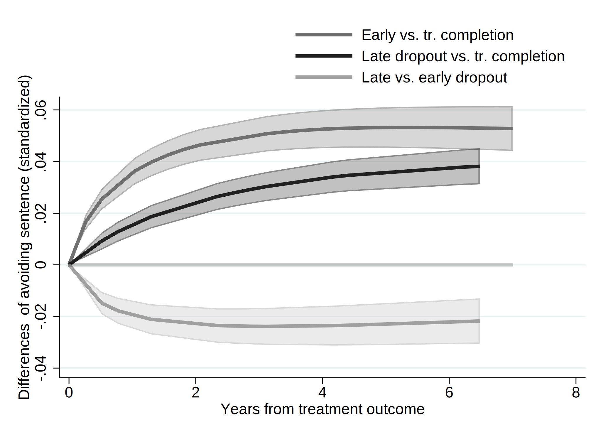
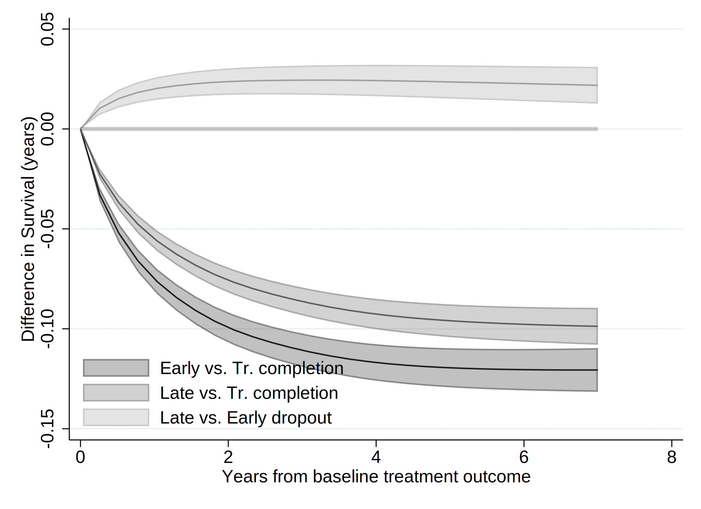
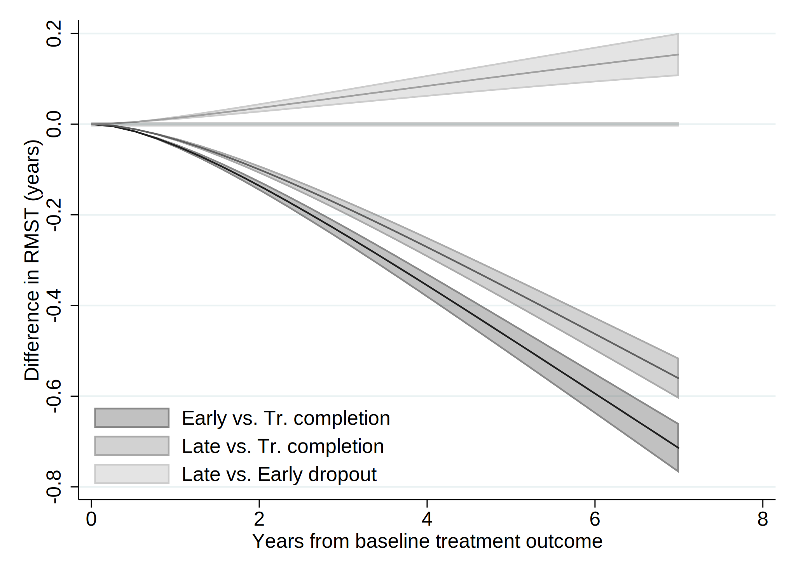

. clear all
. cap noi which tabout
C:\Users\andre\ado\plus\t\tabout.ado
*! 2.0.8 Ian Watson 15mar2019
*! tabout version 3 (beta) available at: http://tabout.net.au
. if _rc==111 {
. cap noi ssc install tabout
. }
. cap noi which pathutil
C:\Users\andre\ado\plus\p\pathutil.ado
*! version 2.2.0 19nov2020 daniel klein
. if _rc==111 {
. cap noi net install pathutil, from("http://fmwww.bc.edu/repec/bocode/p/")
. }
. cap noi which pathutil
C:\Users\andre\ado\plus\p\pathutil.ado
*! version 2.2.0 19nov2020 daniel klein
. if _rc==111 {
. ssc install dirtools
. }
. cap noi which project
C:\Users\andre\ado\plus\p\project.ado
*! version 1.3.1 22dec2013 picard@netbox.com
. if _rc==111 {
. ssc install project
. }
. cap noi which stipw
C:\Users\andre\ado\plus\s\stipw.ado
*! Version 1.0.0 17Jan2022
. if _rc==111 {
. ssc install stipw
. }
. cap noi which stpm2
C:\Users\andre\ado\plus\s\stpm2.ado
*! version 1.7.6 18Jan2023
. if _rc==111 {
. ssc install stpm2
. }
. cap noi which rcsgen
C:\Users\andre\ado\plus\r\rcsgen.ado
*! version 1.5.9 13FEB2022
. if _rc==111 {
. ssc install rcsgen
. }
. cap noi which matselrc
C:\Users\andre\ado\plus\m\matselrc.ado
*! NJC 1.1.0 20 Apr 2000 (STB-56: dm79)
. if _rc==111 {
. cap noi net install dm79, from(http://www.stata.com/stb/stb56)
. }
. cap noi which stpm2_standsurv
C:\Users\andre\ado\plus\s\stpm2_standsurv.ado
*! version 1.1.2 12Jun2018
. if _rc==111 {
. cap noi net install stpm2_standsurv.pkg, from(http://fmwww.bc.edu/RePEc/bocode/s)
. }
. cap noi which fs
C:\Users\andre\ado\plus\f\fs.ado
*! NJC 1.0.5 23 November 2006
. if _rc==111 {
. ssc install fs
. }
. cap noi which mkspline2
C:\Users\andre\ado\plus\m\mkspline2.ado
*! version 1.0.0 MLB 04Apr2009
. if _rc==111 {
. ssc install postrcspline
. }
. cap noi which estwrite
C:\Users\andre\ado\plus\e\estwrite.ado
*! version 1.2.5 19jan2022
*! version 1.0.1 15may2007 (renamed from -eststo- to -estwrite-; -append- added)
*! version 1.0.0 29apr2005 Ben Jann (ETH Zurich)
. if _rc==111 {
. ssc install estwrite
. }
.
. cap noi ssc install moremata
checking moremata consistency and verifying not already installed...
all files already exist and are up to date.
.
. cap noi which esttab
C:\Users\andre\ado\plus\e\esttab.ado
*! version 2.1.1 10jun2022 Ben Jann
*! wrapper for estout
. if _rc==111 {
. ssc install estout
. }
Date created: 08:01:49 3 Apr 2023.
Get the folder
H:\Mi unidad\Alvacast\SISTRAT 2022 (github)
Fecha: 3 Apr 2023, considerando un SO Windows para el usuario: andre
Path data= ;
Tiempo: 3 Apr 2023, considerando un SO Windows
The file is located and named as: H:\Mi unidad\Alvacast\SISTRAT 2022 (github)fiscalia_mariel_feb_2023_match_SENDA_miss2.dta
=============================================================================
=============================================================================
We open the files
. use "fiscalia_mariel_feb_2023_match_SENDA_miss2.dta", clear
.
. *b) select 10% of the data
. /*
> set seed 2125
> sample 10
> */
.
.
. fs mariel_ags_*.do
mariel_ags_b.do mariel_ags_b_m1.do mariel_ags_b_m2.do
. di "`r(dofile)'"
.
. *tostring tr_modality, gen(tr_modality_str)
.
. cap noi encode tr_modality_str, gen(newtr_modality)
variable tr_modality_str not found
. cap confirm variable newtr_modality
. if !_rc {
. cap noi drop tr_modality
. cap noi rename newtr_modality tr_modality
. }
.
. cap noi encode condicion_ocupacional_cor, gen(newcondicion_ocupacional_cor)
not possible with numeric variable
. cap confirm variable newcondicion_ocupacional_cor
. if !_rc {
. cap noi drop condicion_ocupacional_cor
. cap noi rename newcondicion_ocupacional_cor condicion_ocupacional_cor
. }
.
. cap noi encode tipo_centro, gen(newtipo_centro)
variable tipo_centro not found
. cap confirm variable newtipo_centro
. if !_rc {
. cap noi drop tipo_centro
. cap noi rename newtipo_centro tipo_centro
. }
.
. cap noi encode sus_ini_mod_mvv, gen(newsus_ini_mod_mvv)
. cap confirm variable newsus_ini_mod_mvv
. if !_rc {
. cap noi drop sus_ini_mod_mvv
. cap noi rename newsus_ini_mod_mvv sus_ini_mod_mvv
. }
.
. cap noi encode dg_trs_cons_sus_or, gen(newdg_trs_cons_sus_or)
. cap confirm variable newdg_trs_cons_sus_or
. if !_rc {
. cap noi drop dg_trs_cons_sus_or
. cap noi rename newdg_trs_cons_sus_or dg_trs_cons_sus_or
. }
.
. cap noi encode con_quien_vive_joel, gen(newcon_quien_vive_joel)
. cap confirm variable newcon_quien_vive_joel
. if !_rc {
. cap noi drop con_quien_vive_joel
. cap noi rename newcon_quien_vive_joel con_quien_vive_joel
. }
.
.
. *order and encode
. cap noi decode freq_cons_sus_prin, gen(str_freq_cons_sus_prin)
. cap confirm variable str_freq_cons_sus_prin
. if !_rc {
. cap noi drop freq_cons_sus_prin
. label def freq_cons_sus_prin2 1 "Less than 1 day a week" 2 "1 day a week or more" 3 "2 to 3 days a week" 4 "4 to 6 days a week" 5 "Daily"
. encode str_freq_cons_sus_prin, gen(freq_cons_sus_prin) label (freq_cons_sus_prin2)
. }
. cap noi decode dg_trs_cons_sus_or, gen(str_dg_trs_cons_sus_or)
. cap confirm variable str_dg_trs_cons_sus_or
. if !_rc {
. cap noi drop dg_trs_cons_sus_or
. cap label def dg_trs_cons_sus_or2 1 "Hazardous consumption" 2 "Drug dependence"
. encode str_dg_trs_cons_sus_or, gen(dg_trs_cons_sus_or) label (dg_trs_cons_sus_or2)
. }
.
. cap noi encode dg_cie_10_rec, gen(newdg_cie_10_rec)
. cap confirm variable newdg_cie_10_rec
. if !_rc {
. cap noi drop dg_cie_10_rec
. cap noi rename newdg_cie_10_rec dg_cie_10_rec
. }
. cap noi encode fis_comorbidity_icd_10, gen(newfis_comorbidity_icd_10)
. cap confirm variable newfis_comorbidity_icd_10
. if !_rc {
. cap noi drop fis_comorbidity_icd_10
. cap noi rename newfis_comorbidity_icd_10 fis_comorbidity_icd_10
. }
.
. cap noi encode escolaridad_rec, gen(esc_rec)
not possible with numeric variable
. cap noi encode sex, generate(sex_enc)
. cap noi encode sus_principal_mod, gen(sus_prin_mod)
not possible with numeric variable
. cap noi encode freq_cons_sus_prin, gen(fr_sus_prin)
not possible with numeric variable
. cap noi encode compromiso_biopsicosocial, gen(comp_biosoc)
variable compromiso_biopsicosocial not found
. cap noi encode tenencia_de_la_vivienda_mod, gen(ten_viv)
not possible with numeric variable
. *encode dg_cie_10_rec, generate(dg_cie_10_mental_h) *already numeric
. cap noi encode dg_trs_cons_sus_or, gen(sud_severity_icd10)
not possible with numeric variable
. cap noi encode macrozona, gen(macrozone)
not possible with numeric variable
.
. /*
> *2023-02-28, not done in R
> cap noi recode numero_de_hijos_mod (0=0 "No children") (1/10=1 "Children"), gen(newnumero_de_hijos_mod)
> cap confirm variable newnumero_de_hijos_mod
> if !_rc {
> drop numero_de_hijos_mod
> cap noi rename newnumero_de_hijos_mod numero_de_hijos_mod
> }
> */
. mkspline2 rc_x = edad_al_ing_1, cubic nknots(4) displayknots
| knot1 knot2 knot3 knot4
-------------+--------------------------------------------
edad_al_in~1 | 21.18685 29.99178 38.92615 56.32477
.
. *not necessary: 2023-02-28
. *gen motivodeegreso_mod_imp_rec3 = 1
. *replace motivodeegreso_mod_imp_rec3 = 2 if strpos(motivodeegreso_mod_imp_rec,"Early")>0
. *replace motivodeegreso_mod_imp_rec3 = 3 if strpos(motivodeegreso_mod_imp_rec,"Late")>0
.
. *encode policonsumo, generate(policon) *already numeric
. // Generate a restricted cubic spline variable for a variable "x" with 4 knots
. *https://chat.openai.com/chat/4a9396cd-2caa-4a2e-b5f4-ed2c2d0779b3
. *https://www.stata.com/meeting/nordic-and-baltic15/abstracts/materials/sweden15_oskarsson.pdf
. *mkspline xspline = edad_al_ing_1, cubic nknots(4)
. *gen rcs_x = xspline1*xspline2 xspline3 xspline4
.
. *https://www.statalist.org/forums/forum/general-stata-discussion/general/1638622-comparing-cox-proportional-hazard-linear-and-non-linear-restricted-cubic-spline-models-using-likelihood-ratio
> -test
.
=============================================================================
=============================================================================
Reset-time
. *if missing offender_d (status) , means that there was a record and the time is the time of offense
.
. *set the indicator
. gen event=0
. replace event=1 if !missing(offender_d)
(22,287 real changes made)
. *replace event=1 if !missing(sex)
.
. *correct time to event if _st=0
. gen diff= age_offending_imp-edad_al_egres_imp
. gen diffc= cond(diff<0.001, 0.001, diff)
. drop diff
. rename diffc diff
. lab var diff "Time to offense leading to condemnatory sentence"
.
. *age time
. *stset age_offending_imp, fail(event ==1) enter(edad_al_egres_imp)
. *reset time
. stset diff, failure(event ==1)
failure event: event == 1
obs. time interval: (0, diff]
exit on or before: failure
------------------------------------------------------------------------------
70,863 total observations
0 exclusions
------------------------------------------------------------------------------
70,863 observations remaining, representing
22,287 failures in single-record/single-failure data
229,620.93 total analysis time at risk and under observation
at risk from t = 0
earliest observed entry t = 0
last observed exit t = 10.75828
.
. stdescribe, weight
failure _d: event == 1
analysis time _t: diff
|-------------- per subject --------------|
Category total mean min median max
------------------------------------------------------------------------------
no. of subjects 70863
no. of records 70863 1 1 1 1
(first) entry time 0 0 0 0
(final) exit time 3.24035 .001 2.665753 10.75828
subjects with gap 0
time on gap if gap 0
time at risk 229620.93 3.24035 .001 2.665753 10.75828
failures 22287 .3145083 0 0 1
------------------------------------------------------------------------------
We calculate the incidence rate.
. stsum, by (motivodeegreso_mod_imp_rec)
failure _d: event == 1
analysis time _t: diff
| Incidence Number of |------ Survival time -----|
motivo~c | Time at risk rate subjects 25% 50% 75%
---------+---------------------------------------------------------------------
Treatmen | 63,982.355 .0597821 19278 4.744892 . .
Treatmen | 46,815.0931 .1309407 15797 1.465064 6.881935 .
Treatmen | 118,823.486 .1037842 35788 2.048496 . .
---------+---------------------------------------------------------------------
Total | 229,620.934 .09706 70863 2.297946 . .
. *Micki Hill & Paul C Lambert & Michael J Crowther, 2021. "Introducing stipw: inverse probability weighted parametric survival models," London Stata Conference 2021 15, Stata Users Group.
. *https://view.officeapps.live.com/op/view.aspx?src=http%3A%2F%2Ffmwww.bc.edu%2Frepec%2Fusug2021%2Fusug21_hill.pptx&wdOrigin=BROWSELINK
.
. *Treatment variable should be a binary variable with values 0 and 1.
. gen motivodeegreso_mod_imp_rec2 = 0
. replace motivodeegreso_mod_imp_rec2 = 1 if motivodeegreso_mod_imp_rec==2
(15,797 real changes made)
. replace motivodeegreso_mod_imp_rec2 = 1 if motivodeegreso_mod_imp_rec==3
(35,788 real changes made)
.
. recode motivodeegreso_mod_imp_rec2 (0=1 "Tr Completion") (1=0 "Tr Non-completion (Late & Early)"), gen(caus_disch_mod_imp_rec)
(70863 differences between motivodeegreso_mod_imp_rec2 and caus_disch_mod_imp_rec)
.
. cap noi gen motegr_dum3= motivodeegreso_mod_imp_rec2
. replace motegr_dum3 = 0 if motivodeegreso_mod_imp_rec==2
(15,797 real changes made)
. cap noi gen motegr_dum2= motivodeegreso_mod_imp_rec2
. replace motegr_dum2 = 0 if motivodeegreso_mod_imp_rec==3
(35,788 real changes made)
. lab var motegr_dum3 "Baseline treatment outcome(dich, 1= Late Dropout)"
. lab var motegr_dum2 "Baseline treatment outcome(dich, 1= Early Dropout)"
. lab var caus_disch_mod_imp_rec "Baseline treatment outcome(dich)"
.
.
. *Factor variables not allowed for tvc() option. Create your own dummy varibles.
. gen motivodeegreso_mod_imp_rec_earl = 1
. replace motivodeegreso_mod_imp_rec_earl = 0 if motivodeegreso_mod_imp_rec==1
(19,278 real changes made)
. replace motivodeegreso_mod_imp_rec_earl = 0 if motivodeegreso_mod_imp_rec==3
(35,788 real changes made)
.
. gen motivodeegreso_mod_imp_rec_late = 1
. replace motivodeegreso_mod_imp_rec_late = 0 if motivodeegreso_mod_imp_rec==1
(19,278 real changes made)
. replace motivodeegreso_mod_imp_rec_late = 0 if motivodeegreso_mod_imp_rec==2
(15,797 real changes made)
.
. *recode motivodeegreso_mod_imp_rec_earl (1=1 "Early dropout") (0=0 "Tr. comp & Late dropout"), gen(newmotivodeegreso_mod_imp_rec_e)
. *recode motivodeegreso_mod_imp_rec_late (1=1 "Late dropout") (0=0 "Tr. comp & Early dropout"), gen(newmotivodeegreso_mod_imp_rec_l)
.
. lab var motivodeegreso_mod_imp_rec_earl "Baseline treatment outcome- Early dropout(dich)"
. lab var motivodeegreso_mod_imp_rec_late "Baseline treatment outcome- Late dropout(dich)"
.
. cap noi rename motivodeegreso_mod_imp_rec_late mot_egr_late
. cap noi rename motivodeegreso_mod_imp_rec_earl mot_egr_early
=============================================================================
=============================================================================
We generated a graph with every type of treatment and the Nelson-Aalen estimate.
. sts graph, na by (motivodeegreso_mod_imp_rec) ci ///
> title("Comission of an offense (cond. sentence)") ///
> subtitle("Nelson-Aalen Cum Hazards w/ Confidence Intervals 95%") ///
> risktable(, size(*.5) order(1 "Tr Completion" 2 "Early Disch" 3 "Late Disch")) ///
> ytitle("Cum. Hazards") ylabel(#8) ///
> xtitle("Years since tr. outcome") xlabel(#8) ///
> note("Source: nDP, SENDA's SUD Treatments & POs Office Data period 2010-2019 ") ///
> legend(rows(3)) ///
> legend(cols(4)) ///
> graphregion(color(white) lwidth(large)) bgcolor(white) ///
> plotregion(fcolor(white)) graphregion(fcolor(white) ) /// //text(.5 1 "IR = <0.001") ///
> legend(order(1 "95CI Tr Completion" 2 "Tr Completion" 3 "95CI Early Tr Disch" 4 "Early Tr Disch " 5 "95CI Late Tr Disch" 6 "Late Tr Disch" )size(*.5)region(lstyle(none)) region(c(none)) nobo
> x)
failure _d: event == 1
analysis time _t: diff
(note: named style large not found in class linewidth, default attributes used)
(note: linewidth not found in scheme, default attributes used)
(note: named style large not found in class linewidth, default attributes used)
(note: linewidth not found in scheme, default attributes used)
. graph save "`c(pwd)'\_figs\tto_2023_m2.gph", replace
(file H:\Mi unidad\Alvacast\SISTRAT 2022 (github)\_figs\tto_2023_m2.gph saved)
=============================================================================
=============================================================================
. /*
> vars_cov<-c("motivodeegreso_mod_imp_rec", "tr_modality", "edad_al_ing_1", "sex", "edad_ini_cons", "escolaridad_rec", "sus_principal_mod", "freq_cons_sus_prin", "condicion_ocupacional_corr",
> "policonsumo", "num_hijos_mod_joel_bin", "tenencia_de_la_vivienda_mod", "macrozona", "n_off_vio", "n_off_acq", "n_off_sud", "n_off_oth", "dg_cie_10_rec", "dg_trs_cons_sus_or", "clas_r", "po
> rc_pobr", "sus_ini_mod_mvv", "ano_nac_corr", "con_quien_vive_joel", "fis_comorbidity_icd_10")
> */
.
. global covs "i.motivodeegreso_mod_imp_rec i.tr_modality i.sex_enc edad_ini_cons i.escolaridad_rec i.sus_principal_mod i.freq_cons_sus_prin i.condicion_ocupacional_cor i.policonsumo i.num_hij
> os_mod_joel_bin i.tenencia_de_la_vivienda_mod i.macrozona i.n_off_vio i.n_off_acq i.n_off_sud i.n_off_oth i.dg_cie_10_rec i.dg_trs_cons_sus_or i.clas_r porc_pobr i.sus_ini_mod_mvv ano_nac_co
> rr i.con_quien_vive_joel i.fis_comorbidity_icd_10"
.
. // VERIFY FIRST SPLINE VARIABLE IS THE ORIGINAL VARIABLE
. assert float(edad_al_ing_1) == float(rc_x1)
.
. // MODEL WITH FULL SPLINE
. qui noi stcox $covs rc*
failure _d: event == 1
analysis time _t: diff
Iteration 0: log likelihood = -238313.62
Iteration 1: log likelihood = -232725.64
Iteration 2: log likelihood = -232295.66
Iteration 3: log likelihood = -232291.88
Iteration 4: log likelihood = -232291.87
Iteration 5: log likelihood = -232291.87
Refining estimates:
Iteration 0: log likelihood = -232291.87
Cox regression -- Breslow method for ties
No. of subjects = 70,863 Number of obs = 70,863
No. of failures = 22,287
Time at risk = 229620.934
LR chi2(49) = 12043.49
Log likelihood = -232291.87 Prob > chi2 = 0.0000
-------------------------------------------------------------------------------------------------------------
_t | Haz. Ratio Std. Err. z P>|z| [95% Conf. Interval]
--------------------------------------------+----------------------------------------------------------------
motivodeegreso_mod_imp_rec |
Treatment non-completion (Early) | 1.706769 .0365853 24.94 0.000 1.636549 1.780003
Treatment non-completion (Late) | 1.537322 .0292646 22.59 0.000 1.481021 1.595763
|
tr_modality |
Residential | 1.217778 .0230119 10.43 0.000 1.173501 1.263727
|
sex_enc |
Women | .7331242 .0141446 -16.09 0.000 .7059189 .7613779
edad_ini_cons | .988386 .0017279 -6.68 0.000 .9850052 .9917785
|
escolaridad_rec |
2-Completed high school or less | .9555722 .0148 -2.93 0.003 .9270005 .9850245
1-More than high school | .8620515 .0202035 -6.33 0.000 .8233491 .9025732
|
sus_principal_mod |
Cocaine hydrochloride | 1.075668 .0267878 2.93 0.003 1.024426 1.129474
Cocaine paste | 1.424843 .0295799 17.05 0.000 1.368032 1.484015
Marijuana | 1.055039 .0326013 1.73 0.083 .9930378 1.120911
Other | 1.02433 .06541 0.38 0.707 .9038265 1.160899
|
freq_cons_sus_prin |
1 day a week or more | .9351057 .0408571 -1.54 0.125 .8583603 1.018713
2 to 3 days a week | 1.010932 .0357138 0.31 0.758 .9433029 1.08341
4 to 6 days a week | 1.036299 .0383684 0.96 0.336 .9637622 1.114295
Daily | 1.070486 .0378207 1.93 0.054 .9988667 1.147239
|
condicion_ocupacional_corr |
Inactive | 1.029795 .0286268 1.06 0.291 .9751891 1.08746
Looking for a job for the first time | .9751827 .1267845 -0.19 0.847 .7558235 1.258206
No activity | 1.120938 .0369556 3.46 0.001 1.050797 1.195761
Not seeking for work | 1.253882 .0703282 4.03 0.000 1.123348 1.399585
Unemployed | 1.162654 .0190844 9.18 0.000 1.125844 1.200667
|
1.policonsumo | 1.036696 .0202939 1.84 0.066 .9976743 1.077244
1.num_hijos_mod_joel_bin | 1.159364 .0200099 8.57 0.000 1.120801 1.199254
|
tenencia_de_la_vivienda_mod |
Others | .9955357 .0641986 -0.07 0.945 .8773357 1.12966
Owner/Transferred dwellings/Pays Dividends | .9126487 .0503093 -1.66 0.097 .8191841 1.016777
Renting | .9587223 .0532736 -0.76 0.448 .8597929 1.069035
Stays temporarily with a relative | .9348617 .0514613 -1.22 0.221 .8392499 1.041366
|
macrozona |
North | 1.286796 .0239347 13.56 0.000 1.240729 1.334573
South | 1.430472 .0375555 13.64 0.000 1.358726 1.506006
|
n_off_vio |
1 | 1.355802 .0239866 17.21 0.000 1.309595 1.403639
|
n_off_acq |
1 | 1.814742 .0297759 36.32 0.000 1.757311 1.87405
|
n_off_sud |
1 | 1.252474 .0214923 13.12 0.000 1.21105 1.295315
|
n_off_oth |
1 | 1.354635 .0237275 17.33 0.000 1.308919 1.401947
|
dg_cie_10_rec |
Without psychiatric comorbidity | .9609379 .0135205 -2.83 0.005 .9348004 .9878063
|
dg_trs_cons_sus_or |
Drug dependence | 1.014518 .0174155 0.84 0.401 .9809515 1.049232
|
clas_r |
Mixta | 1.022708 .0262186 0.88 0.381 .9725897 1.075408
Rural | 1.043958 .0294312 1.53 0.127 .9878391 1.103266
|
porc_pobr | 1.303347 .1352504 2.55 0.011 1.06348 1.597315
|
sus_ini_mod_mvv |
Cocaine hydrochloride | 1.084339 .0427139 2.06 0.040 1.003772 1.171373
Cocaine paste | 1.124495 .034206 3.86 0.000 1.059412 1.193577
Marijuana | 1.047262 .0163137 2.96 0.003 1.015771 1.07973
Other | 1.146523 .051404 3.05 0.002 1.050073 1.251832
|
ano_nac_corr | .8831856 .0031445 -34.89 0.000 .8770439 .8893704
|
con_quien_vive_joel |
Family of origin | .9324223 .0252028 -2.59 0.010 .8843114 .9831507
Others | .975089 .0321194 -0.77 0.444 .9141252 1.040119
With couple/children | .9229506 .0244021 -3.03 0.002 .8763414 .9720388
|
fis_comorbidity_icd_10 |
Without physical comorbidity | 1.130158 .0355333 3.89 0.000 1.062616 1.201993
rc_x1 | .8632522 .0041775 -30.39 0.000 .8551032 .8714789
rc_x2 | 1.007818 .0162188 0.48 0.628 .976526 1.040113
rc_x3 | .9412807 .0387594 -1.47 0.142 .8682984 1.020397
-------------------------------------------------------------------------------------------------------------
. estat ic
Akaike's information criterion and Bayesian information criterion
-----------------------------------------------------------------------------
Model | N ll(null) ll(model) df AIC BIC
-------------+---------------------------------------------------------------
. | 70,863 -238313.6 -232291.9 49 464681.7 465131
-----------------------------------------------------------------------------
Note: BIC uses N = number of observations. See [R] BIC note.
. estimates store full_spline
. scalar ll_1= e(ll)
. // MODEL WITH ONLY LINEAR TERM
. qui noi stcox $covs rc_x1
failure _d: event == 1
analysis time _t: diff
Iteration 0: log likelihood = -238313.62
Iteration 1: log likelihood = -232660.65
Iteration 2: log likelihood = -232312.93
Iteration 3: log likelihood = -232312.4
Iteration 4: log likelihood = -232312.4
Refining estimates:
Iteration 0: log likelihood = -232312.4
Cox regression -- Breslow method for ties
No. of subjects = 70,863 Number of obs = 70,863
No. of failures = 22,287
Time at risk = 229620.934
LR chi2(47) = 12002.42
Log likelihood = -232312.4 Prob > chi2 = 0.0000
-------------------------------------------------------------------------------------------------------------
_t | Haz. Ratio Std. Err. z P>|z| [95% Conf. Interval]
--------------------------------------------+----------------------------------------------------------------
motivodeegreso_mod_imp_rec |
Treatment non-completion (Early) | 1.708068 .0366271 24.97 0.000 1.637768 1.781386
Treatment non-completion (Late) | 1.539065 .0293017 22.65 0.000 1.482693 1.59758
|
tr_modality |
Residential | 1.217903 .0230054 10.44 0.000 1.173637 1.263837
|
sex_enc |
Women | .7332102 .0141334 -16.10 0.000 .7060259 .7614411
edad_ini_cons | .9883068 .001716 -6.77 0.000 .9849492 .9916759
|
escolaridad_rec |
2-Completed high school or less | .9603281 .0148334 -2.62 0.009 .9316909 .9898456
1-More than high school | .8728685 .0203292 -5.84 0.000 .8339198 .9136364
|
sus_principal_mod |
Cocaine hydrochloride | 1.085012 .0270228 3.28 0.001 1.03332 1.139289
Cocaine paste | 1.439678 .029831 17.59 0.000 1.382382 1.499349
Marijuana | 1.054787 .0326282 1.72 0.085 .9927369 1.120716
Other | 1.017981 .0650834 0.28 0.780 .8980881 1.153878
|
freq_cons_sus_prin |
1 day a week or more | .9351529 .0408596 -1.53 0.125 .8584028 1.018765
2 to 3 days a week | 1.010453 .0356965 0.29 0.768 .9428562 1.082896
4 to 6 days a week | 1.035523 .0383382 0.94 0.346 .9630434 1.113458
Daily | 1.069772 .0377918 1.91 0.056 .9982075 1.146467
|
condicion_ocupacional_corr |
Inactive | 1.014321 .0280676 0.51 0.607 .9607744 1.070851
Looking for a job for the first time | .9592996 .1246581 -0.32 0.749 .7436065 1.237557
No activity | 1.111524 .0365856 3.21 0.001 1.042081 1.185594
Not seeking for work | 1.2481 .0699762 3.95 0.000 1.118216 1.39307
Unemployed | 1.15828 .0189975 8.96 0.000 1.121638 1.196119
|
1.policonsumo | 1.045681 .0204656 2.28 0.022 1.006329 1.086572
1.num_hijos_mod_joel_bin | 1.172235 .0200479 9.29 0.000 1.133593 1.212194
|
tenencia_de_la_vivienda_mod |
Others | .9918451 .0639598 -0.13 0.899 .8740848 1.125471
Owner/Transferred dwellings/Pays Dividends | .9054975 .0498994 -1.80 0.072 .812793 1.008776
Renting | .9573515 .0531955 -0.78 0.433 .858567 1.067502
Stays temporarily with a relative | .9319456 .0512946 -1.28 0.200 .8366429 1.038104
|
macrozona |
North | 1.284484 .0238745 13.47 0.000 1.238533 1.33214
South | 1.429805 .0375319 13.62 0.000 1.358104 1.505291
|
n_off_vio |
1 | 1.354774 .0239735 17.16 0.000 1.308592 1.402585
|
n_off_acq |
1 | 1.813893 .0297782 36.27 0.000 1.756458 1.873206
|
n_off_sud |
1 | 1.254593 .0215178 13.22 0.000 1.21312 1.297484
|
n_off_oth |
1 | 1.357203 .0237701 17.44 0.000 1.311405 1.4046
|
dg_cie_10_rec |
Without psychiatric comorbidity | .9589555 .0134888 -2.98 0.003 .9328791 .9857608
|
dg_trs_cons_sus_or |
Drug dependence | 1.014682 .0174111 0.85 0.396 .9811244 1.049387
|
clas_r |
Mixta | 1.02163 .0261874 0.83 0.404 .971572 1.074268
Rural | 1.044697 .0294498 1.55 0.121 .988542 1.104042
|
porc_pobr | 1.298879 .1347436 2.52 0.012 1.059904 1.591736
|
sus_ini_mod_mvv |
Cocaine hydrochloride | 1.08477 .0427181 2.07 0.039 1.004194 1.171812
Cocaine paste | 1.128379 .0343129 3.97 0.000 1.063092 1.197676
Marijuana | 1.043133 .0162458 2.71 0.007 1.011773 1.075465
Other | 1.149374 .0515702 3.10 0.002 1.052615 1.255027
|
ano_nac_corr | .8826421 .0031421 -35.07 0.000 .876505 .8888221
|
con_quien_vive_joel |
Family of origin | .9322642 .0252173 -2.59 0.010 .8841265 .9830228
Others | .9761265 .0321568 -0.73 0.463 .9150921 1.041232
With couple/children | .9264043 .024483 -2.89 0.004 .8796402 .9756545
|
fis_comorbidity_icd_10 |
Without physical comorbidity | 1.144251 .0359507 4.29 0.000 1.075915 1.216928
rc_x1 | .8584058 .0031312 -41.86 0.000 .8522907 .8645648
-------------------------------------------------------------------------------------------------------------
. estat ic
Akaike's information criterion and Bayesian information criterion
-----------------------------------------------------------------------------
Model | N ll(null) ll(model) df AIC BIC
-------------+---------------------------------------------------------------
. | 70,863 -238313.6 -232312.4 47 464718.8 465149.7
-----------------------------------------------------------------------------
Note: BIC uses N = number of observations. See [R] BIC note.
. scalar ll_2= e(ll)
. estimates store linear_term
.
. lrtest full_spline linear_term
Likelihood-ratio test LR chi2(2) = 41.07
(Assumption: linear_term nested in full_spline) Prob > chi2 = 0.0000
.
. scalar ll_diff= round(`=scalar(ll_1)'-`=scalar(ll_2)',.01)
. di "Log-likelihood difference (spline - linear): `=scalar(ll_diff)'"
Log-likelihood difference (spline - linear): 20.53
.
. * the presence of censored observations makes it difficult to decide further among them. (This is partly due to the fact that both the Cox model and the parametric survival models assume tha
> t censoring is orthogonal to survival time, a mathematically handy assumption that is often demonstrably and seriously in error, and the actual data generation process for survival is often
> too unknown or too messy to simulate.) So in this context, reliance on LR tests or IC statistics is a fallback position.
Log-likelihood difference (spline - linear): 20.53
Nevetheless, we chose the model with spline terms due to linearity over a better fit.
=============================================================================
=============================================================================
In view of nonproportional hazards, we explored different shapes of time-dependent effects and baseline hazards.
. *______________________________________________
. *______________________________________________
. * ADJUSTED ROYSTON PARMAR - NO STAGGERED ENTRY, BINARY TREATMENT (1-DROPOUT VS. 0-COMPLETION)
.
. /*
> vars_cov<-c("motivodeegreso_mod_imp_rec", "tr_modality", "edad_al_ing_1", "sex", "edad_ini_cons", "escolaridad_rec", "sus_principal_mod", "freq_cons_sus_prin", "condicion_ocupacional_corr",
> "policonsumo", "num_hijos_mod_joel_bin", "tenencia_de_la_vivienda_mod", "macrozona", "n_off_vio", "n_off_acq", "n_off_sud", "n_off_oth", "dg_cie_10_rec", "dg_trs_cons_sus_or", "clas_r", "po
> rc_pobr", "sus_ini_mod_mvv", "ano_nac_corr", "con_quien_vive_joel", "fis_comorbidity_icd_10")
> */
.
. cap noi tab tr_modality, gen(tr_mod)
Treatment |
Modality | Freq. Percent Cum.
------------+-----------------------------------
Ambulatory | 60,449 85.30 85.30
Residential | 10,414 14.70 100.00
------------+-----------------------------------
Total | 70,863 100.00
. cap noi tab sex_enc, gen(sex_dum)
Sex | Freq. Percent Cum.
------------+-----------------------------------
Men | 54,048 76.27 76.27
Women | 16,815 23.73 100.00
------------+-----------------------------------
Total | 70,863 100.00
. cap noi tab escolaridad_rec, gen(esc)
Educational Attainment | Freq. Percent Cum.
-----------------------------------+-----------------------------------
3-Completed primary school or less | 20,562 29.02 29.02
2-Completed high school or less | 39,042 55.10 84.11
1-More than high school | 11,259 15.89 100.00
-----------------------------------+-----------------------------------
Total | 70,863 100.00
. cap noi tab sus_principal_mod, gen(sus_prin)
Primary Substance |
(admission to |
treatment) | Freq. Percent Cum.
----------------------+-----------------------------------
Alcohol | 23,863 33.67 33.67
Cocaine hydrochloride | 13,243 18.69 52.36
Cocaine paste | 27,791 39.22 91.58
Marijuana | 4,749 6.70 98.28
Other | 1,217 1.72 100.00
----------------------+-----------------------------------
Total | 70,863 100.00
. cap noi tab freq_cons_sus_prin, gen(fr_cons_sus_prin)
Frequency of Substance |
Use (Primary |
Substance) | Freq. Percent Cum.
-----------------------+-----------------------------------
Less than 1 day a week | 3,496 4.93 4.93
1 day a week or more | 4,780 6.75 11.68
2 to 3 days a week | 20,246 28.57 40.25
4 to 6 days a week | 11,735 16.56 56.81
Daily | 30,606 43.19 100.00
-----------------------+-----------------------------------
Total | 70,863 100.00
. cap noi tab condicion_ocupacional_cor, gen(cond_ocu)
Corrected Occupational Status (f) | Freq. Percent Cum.
-------------------------------------+-----------------------------------
Employed | 35,368 49.91 49.91
Inactive | 7,169 10.12 60.03
Looking for a job for the first time | 159 0.22 60.25
No activity | 3,558 5.02 65.27
Not seeking for work | 713 1.01 66.28
Unemployed | 23,896 33.72 100.00
-------------------------------------+-----------------------------------
Total | 70,863 100.00
. cap noi tab num_hijos_mod_joel_bin, gen(num_hij)
Number of |
Children |
(dichotomiz |
ed) | Freq. Percent Cum.
------------+-----------------------------------
0 | 16,526 23.32 23.32
1 | 54,337 76.68 100.00
------------+-----------------------------------
Total | 70,863 100.00
. cap noi tab tenencia_de_la_vivienda_mod, gen(tenviv)
Housing Situation (Tenure Status) | Freq. Percent Cum.
----------------------------------------+-----------------------------------
Illegal Settlement | 913 1.29 1.29
Others | 2,051 2.89 4.18
Owner/Transferred dwellings/Pays Divide | 25,623 36.16 40.34
Renting | 12,537 17.69 58.03
Stays temporarily with a relative | 29,739 41.97 100.00
----------------------------------------+-----------------------------------
Total | 70,863 100.00
. cap noi tab macrozona, gen(mzone)
Macro |
Administrat |
ive Zone in |
Chile | Freq. Percent Cum.
------------+-----------------------------------
Center | 53,697 75.78 75.78
North | 10,487 14.80 90.57
South | 6,679 9.43 100.00
------------+-----------------------------------
Total | 70,863 100.00
. cap noi tab clas_r, gen(rural)
Socioeconom |
ic |
Classificat |
ion | Freq. Percent Cum.
------------+-----------------------------------
Urbana | 58,277 82.24 82.24
Mixta | 6,835 9.65 91.88
Rural | 5,751 8.12 100.00
------------+-----------------------------------
Total | 70,863 100.00
. cap noi tab sus_ini_mod_mvv, gen(susini)
sus_ini_mod_mvv | Freq. Percent Cum.
----------------------+-----------------------------------
Alcohol | 39,870 56.26 56.26
Cocaine hydrochloride | 2,614 3.69 59.95
Cocaine paste | 3,335 4.71 64.66
Marijuana | 23,338 32.93 97.59
Other | 1,706 2.41 100.00
----------------------+-----------------------------------
Total | 70,863 100.00
. cap noi tab con_quien_vive_joel, gen(cohab)
con_quien_vive_joel | Freq. Percent Cum.
---------------------+-----------------------------------
Alone | 6,688 9.44 9.44
Family of origin | 29,340 41.40 50.84
Others | 6,109 8.62 59.46
With couple/children | 28,726 40.54 100.00
---------------------+-----------------------------------
Total | 70,863 100.00
. cap noi tab fis_comorbidity_icd_10, gen(fis_com)
fis_comorbidity_icd_10 | Freq. Percent Cum.
-----------------------------+-----------------------------------
One or more | 4,846 6.84 6.84
Without physical comorbidity | 66,017 93.16 100.00
-----------------------------+-----------------------------------
Total | 70,863 100.00
. cap noi tab dg_cie_10_rec, gen(psy_com)
dg_cie_10_rec | Freq. Percent Cum.
--------------------------------+-----------------------------------
With psychiatric comorbidity | 31,898 45.01 45.01
Without psychiatric comorbidity | 38,965 54.99 100.00
--------------------------------+-----------------------------------
Total | 70,863 100.00
. cap noi tab dg_trs_cons_sus_or, gen(dep)
dg_trs_cons_sus_or | Freq. Percent Cum.
----------------------+-----------------------------------
Hazardous consumption | 19,696 27.79 27.79
Drug dependence | 51,167 72.21 100.00
----------------------+-----------------------------------
Total | 70,863 100.00
.
. /*
> *NO LONGER USEFUL
> local varslab "dg_fis_anemia dg_fis_card dg_fis_in_study dg_fis_enf_som dg_fis_ets dg_fis_hep_alc dg_fis_hep_b dg_fis_hep_cro dg_fis_inf dg_fis_otr_cond_fis_ries_vit dg_fis_otr_cond_fis dg_f
> is_pat_buc dg_fis_pat_ges_intrau dg_fis_trau_sec"
> forvalues i = 1/14 {
> local v : word `i' of `varslab'
> di "`v'"
> gen `v'2= 0
> replace `v'2 =1 if `v'==2
> }
> */
.
. global covs_3b "mot_egr_early mot_egr_late i.tr_modality i.sex_enc edad_ini_cons i.escolaridad_rec i.sus_principal_mod i.freq_cons_sus_prin i.condicion_ocupacional_cor i.policonsumo i.num_hi
> jos_mod_joel_bin i.tenencia_de_la_vivienda_mod i.macrozona i.n_off_vio i.n_off_acq i.n_off_sud i.n_off_oth i.dg_cie_10_rec i.dg_trs_cons_sus_or i.clas_r porc_pobr i.sus_ini_mod_mvv ano_nac_c
> orr i.con_quien_vive_joel i.fis_comorbidity_icd_10 rc_x1 rc_x2 rc_x3"
.
. *REALLY NEEDS DUMMY VARS
. global covs_3b_pre_dum "mot_egr_early mot_egr_late tr_mod2 sex_dum2 edad_ini_cons esc1 esc2 sus_prin2 sus_prin3 sus_prin4 sus_prin5 fr_cons_sus_prin2 fr_cons_sus_prin3 fr_cons_sus_prin4 fr_c
> ons_sus_prin5 cond_ocu2 cond_ocu3 cond_ocu4 cond_ocu5 cond_ocu6 policonsumo num_hij2 tenviv1 tenviv2 tenviv4 tenviv5 mzone2 mzone3 n_off_vio n_off_acq n_off_sud n_off_oth psy_com2 dep2 rural
> 2 rural3 porc_pobr susini2 susini3 susini4 susini5 ano_nac_corr cohab2 cohab3 cohab4 fis_com2 rc_x1 rc_x2 rc_x3"
.
. forvalues i=1/10 {
2. forvalues j=1/7 {
3. qui noi stpm2 $covs_3b_pre_dum , scale(hazard) df(`i') eform tvc(mot_egr_early mot_egr_late) dftvc(`j')
4. estimates store m_nostag_rp`i'_tvc_`j'
5. }
6. }
Iteration 0: log likelihood = -68817.425
Iteration 1: log likelihood = -68145.783
Iteration 2: log likelihood = -68136.54
Iteration 3: log likelihood = -68136.537
Log likelihood = -68136.537 Number of obs = 70,863
---------------------------------------------------------------------------------------
| exp(b) Std. Err. z P>|z| [95% Conf. Interval]
----------------------+----------------------------------------------------------------
xb |
mot_egr_early | 1.746124 .0404505 24.06 0.000 1.668615 1.827233
mot_egr_late | 1.576066 .0329496 21.76 0.000 1.512791 1.641987
tr_mod2 | 1.221048 .023069 10.57 0.000 1.176661 1.26711
sex_dum2 | .7272745 .0140321 -16.51 0.000 .7002856 .7553036
edad_ini_cons | .9882146 .0017282 -6.78 0.000 .9848333 .9916075
esc1 | 1.167389 .0273625 6.60 0.000 1.114973 1.22227
esc2 | 1.112594 .0236442 5.02 0.000 1.067204 1.159914
sus_prin2 | 1.072019 .026681 2.79 0.005 1.02098 1.125609
sus_prin3 | 1.432529 .0297031 17.34 0.000 1.375479 1.491945
sus_prin4 | 1.051476 .0324742 1.63 0.104 .9897155 1.11709
sus_prin5 | 1.012174 .0646347 0.19 0.850 .8930992 1.147125
fr_cons_sus_prin2 | .9347592 .0408429 -1.54 0.123 .8580405 1.018337
fr_cons_sus_prin3 | 1.010198 .0356888 0.29 0.774 .9426156 1.082625
fr_cons_sus_prin4 | 1.036389 .0383743 0.97 0.334 .9638414 1.114398
fr_cons_sus_prin5 | 1.070893 .0378387 1.94 0.053 .9992398 1.147684
cond_ocu2 | 1.030071 .028638 1.07 0.287 .9754437 1.087758
cond_ocu3 | .9520721 .123791 -0.38 0.706 .7378945 1.228416
cond_ocu4 | 1.124585 .0370871 3.56 0.000 1.054195 1.199675
cond_ocu5 | 1.263385 .070842 4.17 0.000 1.131895 1.41015
cond_ocu6 | 1.166904 .0191536 9.40 0.000 1.129961 1.205055
policonsumo | 1.031506 .0201796 1.59 0.113 .992703 1.071825
num_hij2 | 1.164733 .0201032 8.83 0.000 1.12599 1.204808
tenviv1 | 1.090535 .0601088 1.57 0.116 .9788641 1.214945
tenviv2 | 1.087194 .0418278 2.17 0.030 1.008228 1.172345
tenviv4 | 1.048743 .0217881 2.29 0.022 1.006897 1.092328
tenviv5 | 1.022617 .0165413 1.38 0.167 .9907048 1.055556
mzone2 | 1.292839 .0240426 13.81 0.000 1.246565 1.340831
mzone3 | 1.440754 .0378045 13.92 0.000 1.368531 1.516787
n_off_vio | 1.359975 .0240998 17.35 0.000 1.313551 1.40804
n_off_acq | 1.824502 .030017 36.55 0.000 1.766608 1.884293
n_off_sud | 1.256971 .0215965 13.31 0.000 1.215347 1.30002
n_off_oth | 1.360101 .0238753 17.52 0.000 1.314102 1.407709
psy_com2 | .9598762 .0135051 -2.91 0.004 .9337683 .9867141
dep2 | 1.014831 .0174178 0.86 0.391 .9812606 1.04955
rural2 | 1.02393 .0262448 0.92 0.356 .9737616 1.076683
rural3 | 1.04687 .0295062 1.63 0.104 .9906071 1.106328
porc_pobr | 1.266882 .1314062 2.28 0.023 1.033822 1.552481
susini2 | 1.08456 .0427201 2.06 0.039 1.003981 1.171607
susini3 | 1.123353 .0341683 3.82 0.000 1.058341 1.192358
susini4 | 1.042519 .0162251 2.68 0.007 1.011198 1.074809
susini5 | 1.14807 .0514731 3.08 0.002 1.05149 1.25352
ano_nac_corr | .904079 .0031852 -28.62 0.000 .8978576 .9103434
cohab2 | .9319687 .0251931 -2.61 0.009 .8838764 .9826778
cohab3 | .9743855 .0320973 -0.79 0.431 .9134637 1.03937
cohab4 | .9216777 .0243674 -3.08 0.002 .8751348 .9706959
fis_com2 | 1.131453 .0355718 3.93 0.000 1.063838 1.203365
rc_x1 | .8832067 .0042505 -25.81 0.000 .8749151 .8915769
rc_x2 | 1.006549 .016198 0.41 0.685 .9752969 1.038803
rc_x3 | .9451103 .0389223 -1.37 0.170 .8718216 1.02456
_rcs1 | 2.486324 .0324184 69.85 0.000 2.42359 2.550682
_rcs_mot_egr_early1 | .9367513 .0148655 -4.12 0.000 .9080638 .9663451
_rcs_mot_egr_late1 | .9566991 .0139605 -3.03 0.002 .9297247 .9844562
_cons | 5.87e+86 4.16e+87 28.17 0.000 5.39e+80 6.39e+92
---------------------------------------------------------------------------------------
Note: Estimates are transformed only in the first equation.
Iteration 0: log likelihood = -67996.265
Iteration 1: log likelihood = -67761.51
Iteration 2: log likelihood = -67759.796
Iteration 3: log likelihood = -67759.795
Log likelihood = -67759.795 Number of obs = 70,863
---------------------------------------------------------------------------------------
| exp(b) Std. Err. z P>|z| [95% Conf. Interval]
----------------------+----------------------------------------------------------------
xb |
mot_egr_early | 1.776227 .0412145 24.76 0.000 1.697257 1.858871
mot_egr_late | 1.583924 .0331563 21.97 0.000 1.520254 1.650261
tr_mod2 | 1.216336 .0229783 10.37 0.000 1.172123 1.262216
sex_dum2 | .7314484 .0141106 -16.21 0.000 .7043083 .7596342
edad_ini_cons | .9883503 .0017277 -6.70 0.000 .9849698 .9917423
esc1 | 1.164061 .0272855 6.48 0.000 1.111792 1.218787
esc2 | 1.111103 .0236131 4.96 0.000 1.065773 1.158362
sus_prin2 | 1.069885 .0266271 2.71 0.007 1.018949 1.123367
sus_prin3 | 1.423696 .0295276 17.03 0.000 1.366984 1.482762
sus_prin4 | 1.05059 .0324455 1.60 0.110 .9888845 1.116146
sus_prin5 | 1.009553 .0644699 0.15 0.882 .890782 1.14416
fr_cons_sus_prin2 | .9340843 .0408131 -1.56 0.119 .8574216 1.017602
fr_cons_sus_prin3 | 1.009683 .0356705 0.27 0.785 .942136 1.082074
fr_cons_sus_prin4 | 1.035406 .0383369 0.94 0.347 .9629283 1.113338
fr_cons_sus_prin5 | 1.069568 .0377899 1.90 0.057 .9980075 1.14626
cond_ocu2 | 1.030042 .0286335 1.06 0.287 .9754229 1.08772
cond_ocu3 | .9570567 .1244284 -0.34 0.736 .7417742 1.23482
cond_ocu4 | 1.126122 .0371278 3.60 0.000 1.055654 1.201294
cond_ocu5 | 1.255841 .0704258 4.06 0.000 1.125124 1.401744
cond_ocu6 | 1.164039 .0191069 9.25 0.000 1.127186 1.202097
policonsumo | 1.032435 .0201989 1.63 0.103 .9935958 1.072793
num_hij2 | 1.161414 .0200433 8.67 0.000 1.122787 1.20137
tenviv1 | 1.088323 .0599935 1.54 0.125 .9768669 1.212495
tenviv2 | 1.085638 .0417668 2.14 0.033 1.006786 1.170664
tenviv4 | 1.049417 .0218013 2.32 0.020 1.007546 1.093029
tenviv5 | 1.022971 .0165485 1.40 0.160 .9910451 1.055925
mzone2 | 1.286718 .0239338 13.55 0.000 1.240653 1.334492
mzone3 | 1.434023 .0376205 13.74 0.000 1.362152 1.509687
n_off_vio | 1.355843 .024019 17.18 0.000 1.309575 1.403746
n_off_acq | 1.812668 .0298037 36.18 0.000 1.755185 1.872033
n_off_sud | 1.255509 .0215635 13.25 0.000 1.213949 1.298493
n_off_oth | 1.354146 .0237568 17.28 0.000 1.308375 1.401518
psy_com2 | .9609648 .0135191 -2.83 0.005 .9348298 .9878305
dep2 | 1.013987 .0174053 0.81 0.418 .980441 1.048681
rural2 | 1.021511 .0261838 0.83 0.406 .9714599 1.074142
rural3 | 1.043928 .029426 1.53 0.127 .9878181 1.103225
porc_pobr | 1.296258 .1344492 2.50 0.012 1.057801 1.588469
susini2 | 1.085229 .0427476 2.08 0.038 1.004598 1.172332
susini3 | 1.123109 .0341591 3.82 0.000 1.058115 1.192095
susini4 | 1.041407 .0162093 2.61 0.009 1.010117 1.073666
susini5 | 1.144404 .0513071 3.01 0.003 1.048135 1.249514
ano_nac_corr | .8924026 .0031554 -32.20 0.000 .8862395 .8986085
cohab2 | .9326876 .0252123 -2.58 0.010 .8845586 .9834353
cohab3 | .9753002 .0321313 -0.76 0.448 .9143141 1.040354
cohab4 | .9229315 .0244022 -3.03 0.002 .8763221 .9720198
fis_com2 | 1.131375 .0355707 3.93 0.000 1.063762 1.203285
rc_x1 | .8722468 .0042055 -28.35 0.000 .864043 .8805285
rc_x2 | 1.006624 .0162016 0.41 0.682 .975365 1.038885
rc_x3 | .9443608 .0388919 -1.39 0.165 .8711294 1.023748
_rcs1 | 2.464228 .0318993 69.67 0.000 2.402493 2.527549
_rcs_mot_egr_early1 | .9804622 .0160896 -1.20 0.229 .9494289 1.01251
_rcs_mot_egr_early2 | 1.133691 .0095596 14.88 0.000 1.115109 1.152583
_rcs_mot_egr_late1 | 1.025876 .015533 1.69 0.092 .9958793 1.056777
_rcs_mot_egr_late2 | 1.151229 .0075617 21.44 0.000 1.136503 1.166145
_cons | 1.36e+98 9.70e+98 31.75 0.000 1.19e+92 1.6e+104
---------------------------------------------------------------------------------------
Note: Estimates are transformed only in the first equation.
Iteration 0: log likelihood = -67785.766
Iteration 1: log likelihood = -67694.104
Iteration 2: log likelihood = -67693.678
Iteration 3: log likelihood = -67693.678
Log likelihood = -67693.678 Number of obs = 70,863
---------------------------------------------------------------------------------------
| exp(b) Std. Err. z P>|z| [95% Conf. Interval]
----------------------+----------------------------------------------------------------
xb |
mot_egr_early | 1.78427 .0414328 24.93 0.000 1.704884 1.867353
mot_egr_late | 1.586814 .0332356 22.04 0.000 1.522993 1.653311
tr_mod2 | 1.216251 .0229771 10.36 0.000 1.17204 1.26213
sex_dum2 | .7322003 .0141248 -16.16 0.000 .7050329 .7604145
edad_ini_cons | .9883659 .0017277 -6.69 0.000 .9849854 .991758
esc1 | 1.1628 .0272559 6.43 0.000 1.110588 1.217467
esc2 | 1.110296 .0235963 4.92 0.000 1.064998 1.157521
sus_prin2 | 1.070693 .0266498 2.74 0.006 1.019714 1.12422
sus_prin3 | 1.423036 .0295195 17.01 0.000 1.366339 1.482085
sus_prin4 | 1.051755 .0324839 1.63 0.102 .9899767 1.117389
sus_prin5 | 1.010427 .064534 0.16 0.871 .8915386 1.145168
fr_cons_sus_prin2 | .9337007 .0407964 -1.57 0.116 .8570693 1.017184
fr_cons_sus_prin3 | 1.009671 .0356703 0.27 0.785 .9421237 1.08206
fr_cons_sus_prin4 | 1.035487 .0383396 0.94 0.346 .9630041 1.113425
fr_cons_sus_prin5 | 1.069773 .0377973 1.91 0.056 .9981989 1.14648
cond_ocu2 | 1.030065 .0286327 1.07 0.287 .975447 1.087741
cond_ocu3 | .9634807 .1252631 -0.29 0.775 .7467539 1.243107
cond_ocu4 | 1.124852 .0370849 3.57 0.000 1.054465 1.199937
cond_ocu5 | 1.254353 .0703448 4.04 0.000 1.123787 1.400089
cond_ocu6 | 1.164011 .0191057 9.25 0.000 1.12716 1.202066
policonsumo | 1.033298 .0202174 1.67 0.094 .9944225 1.073693
num_hij2 | 1.160687 .0200307 8.63 0.000 1.122084 1.200618
tenviv1 | 1.089139 .0600385 1.55 0.121 .9776 1.213405
tenviv2 | 1.086635 .0418064 2.16 0.031 1.00771 1.171743
tenviv4 | 1.050121 .0218164 2.35 0.019 1.008221 1.093763
tenviv5 | 1.023542 .0165578 1.44 0.150 .9915987 1.056515
mzone2 | 1.286725 .0239346 13.55 0.000 1.240659 1.334502
mzone3 | 1.433964 .0376278 13.74 0.000 1.36208 1.509643
n_off_vio | 1.355931 .0240112 17.19 0.000 1.309678 1.403819
n_off_acq | 1.813466 .029802 36.22 0.000 1.755986 1.872828
n_off_sud | 1.255018 .0215502 13.23 0.000 1.213483 1.297974
n_off_oth | 1.353888 .0237411 17.28 0.000 1.308147 1.401228
psy_com2 | .9608105 .0135171 -2.84 0.004 .9346794 .9876721
dep2 | 1.014027 .0174064 0.81 0.417 .9804791 1.048724
rural2 | 1.020779 .0261669 0.80 0.422 .9707595 1.073375
rural3 | 1.04312 .0294066 1.50 0.134 .9870472 1.102378
porc_pobr | 1.316576 .136541 2.65 0.008 1.074406 1.613331
susini2 | 1.085543 .042761 2.08 0.037 1.004887 1.172673
susini3 | 1.122832 .0341506 3.81 0.000 1.057855 1.191802
susini4 | 1.042456 .0162273 2.67 0.008 1.011132 1.074751
susini5 | 1.144731 .0513263 3.01 0.003 1.048427 1.249881
ano_nac_corr | .8891776 .0031543 -33.11 0.000 .8830168 .8953814
cohab2 | .9329679 .0252208 -2.57 0.010 .8848228 .9837327
cohab3 | .97567 .032143 -0.75 0.455 .9146618 1.040748
cohab4 | .9234541 .024417 -3.01 0.003 .8768165 .9725724
fis_com2 | 1.131988 .0355906 3.94 0.000 1.064338 1.203938
rc_x1 | .869103 .004198 -29.04 0.000 .8609139 .8773701
rc_x2 | 1.006999 .0162085 0.43 0.665 .9757272 1.039274
rc_x3 | .9434689 .0388563 -1.41 0.158 .8703046 1.022784
_rcs1 | 2.458334 .0317608 69.62 0.000 2.396865 2.521379
_rcs_mot_egr_early1 | .9799339 .0160218 -1.24 0.215 .9490296 1.011845
_rcs_mot_egr_early2 | 1.11217 .0093388 12.66 0.000 1.094016 1.130625
_rcs_mot_egr_early3 | 1.043561 .0056205 7.92 0.000 1.032603 1.054635
_rcs_mot_egr_late1 | 1.023322 .0154194 1.53 0.126 .9935424 1.053994
_rcs_mot_egr_late2 | 1.120066 .0075905 16.73 0.000 1.105287 1.135042
_rcs_mot_egr_late3 | 1.046041 .0041969 11.22 0.000 1.037848 1.054299
_cons | 2.0e+101 1.4e+102 32.66 0.000 1.66e+95 2.4e+107
---------------------------------------------------------------------------------------
Note: Estimates are transformed only in the first equation.
Iteration 0: log likelihood = -67778.821
Iteration 1: log likelihood = -67680.709
Iteration 2: log likelihood = -67680.189
Iteration 3: log likelihood = -67680.189
Log likelihood = -67680.189 Number of obs = 70,863
---------------------------------------------------------------------------------------
| exp(b) Std. Err. z P>|z| [95% Conf. Interval]
----------------------+----------------------------------------------------------------
xb |
mot_egr_early | 1.786149 .0414814 24.98 0.000 1.706669 1.86933
mot_egr_late | 1.587491 .0332527 22.06 0.000 1.523637 1.654022
tr_mod2 | 1.216286 .0229783 10.36 0.000 1.172073 1.262166
sex_dum2 | .7324876 .0141303 -16.14 0.000 .7053097 .7607127
edad_ini_cons | .988372 .0017277 -6.69 0.000 .9849915 .9917641
esc1 | 1.162428 .0272474 6.42 0.000 1.110232 1.217077
esc2 | 1.109976 .0235897 4.91 0.000 1.064691 1.157188
sus_prin2 | 1.071266 .0266659 2.77 0.006 1.020256 1.124826
sus_prin3 | 1.423287 .0295284 17.01 0.000 1.366573 1.482354
sus_prin4 | 1.052419 .0325062 1.65 0.098 .9905978 1.118098
sus_prin5 | 1.011446 .0646027 0.18 0.859 .8924321 1.146332
fr_cons_sus_prin2 | .933465 .0407861 -1.58 0.115 .856853 1.016927
fr_cons_sus_prin3 | 1.009583 .0356673 0.27 0.787 .9420417 1.081967
fr_cons_sus_prin4 | 1.035356 .0383348 0.94 0.348 .9628823 1.113284
fr_cons_sus_prin5 | 1.069643 .0377929 1.91 0.057 .9980771 1.146341
cond_ocu2 | 1.029985 .02863 1.06 0.288 .9753728 1.087656
cond_ocu3 | .9657902 .125563 -0.27 0.789 .7485444 1.246086
cond_ocu4 | 1.12411 .0370605 3.55 0.000 1.05377 1.199145
cond_ocu5 | 1.254394 .0703477 4.04 0.000 1.123823 1.400136
cond_ocu6 | 1.163977 .0191051 9.25 0.000 1.127127 1.202031
policonsumo | 1.033754 .0202267 1.70 0.090 .9948612 1.074168
num_hij2 | 1.160628 .0200298 8.63 0.000 1.122026 1.200557
tenviv1 | 1.089734 .0600726 1.56 0.119 .9781316 1.21407
tenviv2 | 1.087078 .0418244 2.17 0.030 1.008118 1.172222
tenviv4 | 1.050323 .0218209 2.36 0.018 1.008414 1.093973
tenviv5 | 1.023743 .0165609 1.45 0.147 .9917931 1.056721
mzone2 | 1.286916 .0239386 13.56 0.000 1.240843 1.334701
mzone3 | 1.434252 .0376399 13.74 0.000 1.362345 1.509956
n_off_vio | 1.356018 .0240096 17.20 0.000 1.309767 1.403902
n_off_acq | 1.813453 .0297977 36.23 0.000 1.755981 1.872806
n_off_sud | 1.254716 .0215435 13.22 0.000 1.213195 1.297659
n_off_oth | 1.353939 .0237384 17.28 0.000 1.308203 1.401274
psy_com2 | .9607543 .0135166 -2.85 0.004 .9346242 .9876149
dep2 | 1.014101 .0174076 0.82 0.415 .9805505 1.0488
rural2 | 1.020852 .0261692 0.81 0.421 .9708283 1.073453
rural3 | 1.043166 .029409 1.50 0.134 .9870886 1.102428
porc_pobr | 1.320242 .1369109 2.68 0.007 1.077415 1.617799
susini2 | 1.085577 .0427627 2.08 0.037 1.004917 1.172711
susini3 | 1.122692 .0341464 3.81 0.000 1.057722 1.191653
susini4 | 1.043176 .01624 2.72 0.007 1.011827 1.075496
susini5 | 1.144861 .0513341 3.02 0.003 1.048543 1.250028
ano_nac_corr | .8885571 .0031543 -33.28 0.000 .8823962 .8947609
cohab2 | .9331071 .025225 -2.56 0.010 .884954 .9838804
cohab3 | .9755732 .0321395 -0.75 0.453 .9145716 1.040644
cohab4 | .923495 .0244185 -3.01 0.003 .8768547 .9726162
fis_com2 | 1.132082 .0355937 3.95 0.000 1.064426 1.204039
rc_x1 | .8684879 .0041966 -29.18 0.000 .8603016 .8767521
rc_x2 | 1.007128 .0162107 0.44 0.659 .9758514 1.039407
rc_x3 | .9431668 .038844 -1.42 0.155 .8700257 1.022457
_rcs1 | 2.457163 .0317332 69.61 0.000 2.395747 2.520152
_rcs_mot_egr_early1 | .9805005 .0160305 -1.20 0.228 .9495793 1.012429
_rcs_mot_egr_early2 | 1.111798 .0095837 12.29 0.000 1.093172 1.130742
_rcs_mot_egr_early3 | 1.043407 .0059884 7.40 0.000 1.031736 1.055211
_rcs_mot_egr_early4 | 1.015752 .0037655 4.22 0.000 1.008399 1.023159
_rcs_mot_egr_late1 | 1.024462 .0154425 1.60 0.109 .9946376 1.05518
_rcs_mot_egr_late2 | 1.122343 .0079699 16.25 0.000 1.106831 1.138073
_rcs_mot_egr_late3 | 1.042021 .0046395 9.24 0.000 1.032967 1.051154
_rcs_mot_egr_late4 | 1.018958 .0027562 6.94 0.000 1.01357 1.024375
_cons | 8.1e+101 5.8e+102 32.84 0.000 6.67e+95 9.8e+107
---------------------------------------------------------------------------------------
Note: Estimates are transformed only in the first equation.
Iteration 0: log likelihood = -67756.705
Iteration 1: log likelihood = -67671.491
Iteration 2: log likelihood = -67671.086
Iteration 3: log likelihood = -67671.086
Log likelihood = -67671.086 Number of obs = 70,863
---------------------------------------------------------------------------------------
| exp(b) Std. Err. z P>|z| [95% Conf. Interval]
----------------------+----------------------------------------------------------------
xb |
mot_egr_early | 1.787013 .0415038 25.00 0.000 1.707491 1.870239
mot_egr_late | 1.587696 .0332587 22.07 0.000 1.52383 1.654238
tr_mod2 | 1.216456 .0229818 10.37 0.000 1.172236 1.262344
sex_dum2 | .7326985 .0141344 -16.12 0.000 .7055127 .7609318
edad_ini_cons | .9883783 .0017277 -6.69 0.000 .9849979 .9917704
esc1 | 1.162232 .0272428 6.41 0.000 1.110045 1.216872
esc2 | 1.109785 .0235856 4.90 0.000 1.064508 1.156988
sus_prin2 | 1.071574 .0266745 2.78 0.005 1.020548 1.125152
sus_prin3 | 1.42331 .0295313 17.01 0.000 1.36659 1.482383
sus_prin4 | 1.052732 .0325167 1.66 0.096 .990891 1.118432
sus_prin5 | 1.012107 .0646479 0.19 0.851 .8930097 1.147087
fr_cons_sus_prin2 | .9332535 .0407769 -1.58 0.114 .8566589 1.016697
fr_cons_sus_prin3 | 1.009489 .0356641 0.27 0.789 .9419534 1.081866
fr_cons_sus_prin4 | 1.035205 .0383292 0.93 0.350 .9627425 1.113122
fr_cons_sus_prin5 | 1.069443 .0377859 1.90 0.057 .9978899 1.146127
cond_ocu2 | 1.029915 .0286279 1.06 0.289 .9753067 1.087581
cond_ocu3 | .9665424 .12566 -0.26 0.794 .7491285 1.247055
cond_ocu4 | 1.123526 .0370414 3.53 0.000 1.053222 1.198523
cond_ocu5 | 1.254535 .0703567 4.04 0.000 1.123947 1.400296
cond_ocu6 | 1.163901 .019104 9.25 0.000 1.127053 1.201953
policonsumo | 1.033917 .02023 1.70 0.088 .9950179 1.074337
num_hij2 | 1.160598 .0200295 8.63 0.000 1.121997 1.200526
tenviv1 | 1.090484 .0601153 1.57 0.116 .9788022 1.214909
tenviv2 | 1.087413 .041838 2.18 0.029 1.008427 1.172585
tenviv4 | 1.050514 .0218251 2.37 0.018 1.008596 1.094173
tenviv5 | 1.023916 .0165635 1.46 0.144 .9919611 1.0569
mzone2 | 1.287073 .0239418 13.57 0.000 1.240993 1.334864
mzone3 | 1.434328 .0376446 13.74 0.000 1.362411 1.51004
n_off_vio | 1.356048 .0240084 17.20 0.000 1.309799 1.403929
n_off_acq | 1.813384 .0297933 36.23 0.000 1.75592 1.872728
n_off_sud | 1.254639 .0215409 13.21 0.000 1.213122 1.297577
n_off_oth | 1.353922 .0237355 17.28 0.000 1.308191 1.401251
psy_com2 | .9607338 .0135165 -2.85 0.004 .9346038 .9875943
dep2 | 1.014114 .0174079 0.82 0.414 .9805627 1.048813
rural2 | 1.02093 .0261714 0.81 0.419 .970902 1.073535
rural3 | 1.043289 .0294134 1.50 0.133 .9872036 1.102561
porc_pobr | 1.321999 .1370862 2.69 0.007 1.07886 1.619935
susini2 | 1.085635 .0427653 2.09 0.037 1.004971 1.172774
susini3 | 1.122678 .0341463 3.80 0.000 1.057708 1.191639
susini4 | 1.043617 .0162477 2.74 0.006 1.012253 1.075953
susini5 | 1.145164 .0513494 3.02 0.003 1.048817 1.250362
ano_nac_corr | .8882557 .003154 -33.37 0.000 .8820953 .894459
cohab2 | .933097 .025225 -2.56 0.010 .8849438 .9838704
cohab3 | .9753433 .032132 -0.76 0.449 .9143559 1.040399
cohab4 | .9233721 .0244153 -3.02 0.003 .8767378 .9724869
fis_com2 | 1.132076 .0355937 3.95 0.000 1.06442 1.204033
rc_x1 | .8681936 .0041957 -29.25 0.000 .8600091 .876456
rc_x2 | 1.007168 .0162115 0.44 0.657 .9758898 1.039448
rc_x3 | .9430654 .0388402 -1.42 0.155 .8699314 1.022348
_rcs1 | 2.456586 .0317195 69.61 0.000 2.395197 2.519549
_rcs_mot_egr_early1 | .9806271 .0160279 -1.20 0.231 .9497109 1.01255
_rcs_mot_egr_early2 | 1.108532 .0095014 12.02 0.000 1.090065 1.127312
_rcs_mot_egr_early3 | 1.047622 .0061751 7.89 0.000 1.035588 1.059795
_rcs_mot_egr_early4 | 1.015417 .0039273 3.96 0.000 1.007748 1.023143
_rcs_mot_egr_early5 | 1.011743 .0027902 4.23 0.000 1.006289 1.017226
_rcs_mot_egr_late1 | 1.024479 .0154394 1.60 0.109 .9946605 1.055191
_rcs_mot_egr_late2 | 1.120086 .0080501 15.78 0.000 1.104419 1.135976
_rcs_mot_egr_late3 | 1.043558 .0049159 9.05 0.000 1.033968 1.053238
_rcs_mot_egr_late4 | 1.021152 .0029515 7.24 0.000 1.015384 1.026953
_rcs_mot_egr_late5 | 1.010698 .0019802 5.43 0.000 1.006824 1.014587
_cons | 1.6e+102 1.1e+103 32.92 0.000 1.32e+96 1.9e+108
---------------------------------------------------------------------------------------
Note: Estimates are transformed only in the first equation.
Iteration 0: log likelihood = -67752.442
Iteration 1: log likelihood = -67666.85
Iteration 2: log likelihood = -67666.444
Iteration 3: log likelihood = -67666.443
Log likelihood = -67666.443 Number of obs = 70,863
---------------------------------------------------------------------------------------
| exp(b) Std. Err. z P>|z| [95% Conf. Interval]
----------------------+----------------------------------------------------------------
xb |
mot_egr_early | 1.787261 .0415108 25.00 0.000 1.707725 1.870501
mot_egr_late | 1.587764 .033261 22.07 0.000 1.523893 1.654311
tr_mod2 | 1.216512 .022983 10.37 0.000 1.17229 1.262402
sex_dum2 | .7328073 .0141366 -16.11 0.000 .7056173 .7610449
edad_ini_cons | .9883747 .0017277 -6.69 0.000 .9849943 .9917667
esc1 | 1.162033 .0272383 6.41 0.000 1.109855 1.216665
esc2 | 1.109635 .0235825 4.89 0.000 1.064363 1.156832
sus_prin2 | 1.071754 .0266794 2.78 0.005 1.020718 1.125342
sus_prin3 | 1.423381 .0295338 17.01 0.000 1.366657 1.482459
sus_prin4 | 1.052923 .0325231 1.67 0.095 .9910701 1.118636
sus_prin5 | 1.012621 .0646824 0.20 0.844 .8934611 1.147674
fr_cons_sus_prin2 | .9332 .0407745 -1.58 0.114 .8566097 1.016638
fr_cons_sus_prin3 | 1.009552 .0356663 0.27 0.788 .9420123 1.081934
fr_cons_sus_prin4 | 1.035172 .038328 0.93 0.351 .9627112 1.113086
fr_cons_sus_prin5 | 1.069437 .0377858 1.90 0.057 .9978839 1.14612
cond_ocu2 | 1.029838 .0286257 1.06 0.290 .975234 1.0875
cond_ocu3 | .9669911 .1257178 -0.26 0.796 .7494771 1.247632
cond_ocu4 | 1.123308 .037034 3.53 0.000 1.053018 1.19829
cond_ocu5 | 1.254747 .0703688 4.05 0.000 1.124137 1.400533
cond_ocu6 | 1.163804 .0191026 9.24 0.000 1.126959 1.201853
policonsumo | 1.033942 .0202305 1.71 0.088 .9950419 1.074363
num_hij2 | 1.160535 .0200285 8.63 0.000 1.121936 1.200461
tenviv1 | 1.090778 .0601322 1.58 0.115 .9790652 1.215238
tenviv2 | 1.087682 .0418488 2.18 0.029 1.008676 1.172876
tenviv4 | 1.050582 .0218267 2.38 0.018 1.008661 1.094244
tenviv5 | 1.024044 .0165655 1.47 0.142 .9920851 1.057032
mzone2 | 1.287181 .0239439 13.57 0.000 1.241097 1.334976
mzone3 | 1.434412 .0376479 13.75 0.000 1.362489 1.510131
n_off_vio | 1.35603 .0240073 17.20 0.000 1.309783 1.403909
n_off_acq | 1.813312 .0297912 36.23 0.000 1.755853 1.872652
n_off_sud | 1.254577 .0215394 13.21 0.000 1.213063 1.297512
n_off_oth | 1.353863 .0237334 17.28 0.000 1.308136 1.401188
psy_com2 | .9607609 .0135169 -2.85 0.004 .9346301 .9876223
dep2 | 1.014134 .0174082 0.82 0.414 .9805817 1.048834
rural2 | 1.020981 .0261726 0.81 0.418 .9709511 1.073589
rural3 | 1.043317 .0294146 1.50 0.133 .9872292 1.102591
porc_pobr | 1.322076 .1370931 2.69 0.007 1.078923 1.620026
susini2 | 1.085625 .042765 2.09 0.037 1.004962 1.172764
susini3 | 1.122781 .0341497 3.81 0.000 1.057805 1.191749
susini4 | 1.043823 .0162515 2.75 0.006 1.012451 1.076166
susini5 | 1.14512 .0513485 3.02 0.003 1.048774 1.250316
ano_nac_corr | .888114 .0031539 -33.41 0.000 .881954 .894317
cohab2 | .9330693 .0252246 -2.56 0.010 .8849168 .9838419
cohab3 | .9752528 .0321294 -0.76 0.447 .9142704 1.040303
cohab4 | .9233351 .0244146 -3.02 0.003 .8767022 .9724484
fis_com2 | 1.132028 .0355924 3.94 0.000 1.064374 1.203982
rc_x1 | .8680593 .0041953 -29.28 0.000 .8598756 .8763209
rc_x2 | 1.007176 .0162117 0.44 0.657 .9758981 1.039457
rc_x3 | .9430371 .0388392 -1.42 0.154 .869905 1.022317
_rcs1 | 2.45632 .0317131 69.61 0.000 2.394943 2.519269
_rcs_mot_egr_early1 | .9807582 .0160293 -1.19 0.235 .9498391 1.012684
_rcs_mot_egr_early2 | 1.107436 .0095017 11.89 0.000 1.088969 1.126216
_rcs_mot_egr_early3 | 1.048986 .0063186 7.94 0.000 1.036675 1.061444
_rcs_mot_egr_early4 | 1.016075 .004085 3.97 0.000 1.0081 1.024114
_rcs_mot_egr_early5 | 1.014253 .0028907 4.97 0.000 1.008603 1.019934
_rcs_mot_egr_early6 | 1.005041 .0022317 2.26 0.024 1.000677 1.009425
_rcs_mot_egr_late1 | 1.024732 .0154449 1.62 0.105 .9949034 1.055455
_rcs_mot_egr_late2 | 1.120185 .0081884 15.53 0.000 1.10425 1.13635
_rcs_mot_egr_late3 | 1.042047 .0051413 8.35 0.000 1.032019 1.052173
_rcs_mot_egr_late4 | 1.023957 .0030771 7.88 0.000 1.017944 1.030006
_rcs_mot_egr_late5 | 1.012275 .0020794 5.94 0.000 1.008207 1.016358
_rcs_mot_egr_late6 | 1.008184 .0015726 5.23 0.000 1.005106 1.011271
_cons | 2.2e+102 1.6e+103 32.97 0.000 1.81e+96 2.7e+108
---------------------------------------------------------------------------------------
Note: Estimates are transformed only in the first equation.
Iteration 0: log likelihood = -67748.791
Iteration 1: log likelihood = -67664.953
Iteration 2: log likelihood = -67664.552
Iteration 3: log likelihood = -67664.552
Log likelihood = -67664.552 Number of obs = 70,863
---------------------------------------------------------------------------------------
| exp(b) Std. Err. z P>|z| [95% Conf. Interval]
----------------------+----------------------------------------------------------------
xb |
mot_egr_early | 1.787499 .0415167 25.01 0.000 1.707952 1.870751
mot_egr_late | 1.587832 .0332629 22.07 0.000 1.523958 1.654383
tr_mod2 | 1.216556 .022984 10.38 0.000 1.172332 1.262448
sex_dum2 | .7328891 .0141382 -16.11 0.000 .705696 .76113
edad_ini_cons | .988371 .0017277 -6.69 0.000 .9849906 .991763
esc1 | 1.161937 .0272362 6.40 0.000 1.109762 1.216564
esc2 | 1.109556 .0235809 4.89 0.000 1.064287 1.156749
sus_prin2 | 1.071897 .0266833 2.79 0.005 1.020854 1.125492
sus_prin3 | 1.423439 .0295358 17.02 0.000 1.366711 1.482521
sus_prin4 | 1.05304 .0325271 1.67 0.094 .991179 1.118761
sus_prin5 | 1.012905 .0647015 0.20 0.841 .8937098 1.147998
fr_cons_sus_prin2 | .9332068 .0407748 -1.58 0.114 .856616 1.016646
fr_cons_sus_prin3 | 1.00959 .0356677 0.27 0.787 .9420477 1.081974
fr_cons_sus_prin4 | 1.03516 .0383276 0.93 0.351 .9627007 1.113074
fr_cons_sus_prin5 | 1.069422 .0377855 1.90 0.057 .9978704 1.146105
cond_ocu2 | 1.029768 .0286236 1.06 0.291 .9751675 1.087426
cond_ocu3 | .9671727 .1257411 -0.26 0.797 .7496183 1.247866
cond_ocu4 | 1.123151 .0370289 3.52 0.000 1.052871 1.198122
cond_ocu5 | 1.254681 .0703655 4.05 0.000 1.124077 1.40046
cond_ocu6 | 1.163746 .0191018 9.24 0.000 1.126903 1.201794
policonsumo | 1.0339 .0202296 1.70 0.088 .9950015 1.07432
num_hij2 | 1.160497 .0200279 8.62 0.000 1.1219 1.200423
tenviv1 | 1.09096 .0601426 1.58 0.114 .9792277 1.215441
tenviv2 | 1.087882 .0418569 2.19 0.029 1.008861 1.173093
tenviv4 | 1.050638 .021828 2.38 0.017 1.008715 1.094303
tenviv5 | 1.024144 .0165672 1.47 0.140 .9921826 1.057136
mzone2 | 1.287246 .0239453 13.57 0.000 1.24116 1.335044
mzone3 | 1.434496 .0376511 13.75 0.000 1.362567 1.510222
n_off_vio | 1.356008 .0240063 17.20 0.000 1.309764 1.403885
n_off_acq | 1.813274 .0297897 36.23 0.000 1.755817 1.872611
n_off_sud | 1.254511 .021538 13.21 0.000 1.213 1.297443
n_off_oth | 1.353841 .0237323 17.28 0.000 1.308116 1.401163
psy_com2 | .9607585 .0135169 -2.85 0.004 .9346277 .9876199
dep2 | 1.014146 .0174085 0.82 0.413 .9805938 1.048847
rural2 | 1.021019 .0261736 0.81 0.417 .9709873 1.073629
rural3 | 1.043337 .0294155 1.50 0.132 .9872474 1.102613
porc_pobr | 1.322104 .1370951 2.69 0.007 1.078948 1.620058
susini2 | 1.085668 .0427667 2.09 0.037 1.005001 1.17281
susini3 | 1.122875 .0341527 3.81 0.000 1.057893 1.191849
susini4 | 1.04397 .0162541 2.76 0.006 1.012593 1.076318
susini5 | 1.145049 .051346 3.02 0.003 1.048709 1.250241
ano_nac_corr | .8880289 .0031538 -33.44 0.000 .881869 .8942319
cohab2 | .9330326 .0252239 -2.56 0.010 .8848816 .9838037
cohab3 | .9751881 .0321274 -0.76 0.446 .9142094 1.040234
cohab4 | .923305 .0244139 -3.02 0.003 .8766735 .9724169
fis_com2 | 1.13203 .0355926 3.94 0.000 1.064376 1.203985
rc_x1 | .8679789 .0041951 -29.30 0.000 .8597956 .8762401
rc_x2 | 1.007172 .0162116 0.44 0.657 .9758935 1.039452
rc_x3 | .9430498 .0388397 -1.42 0.155 .8699168 1.022331
_rcs1 | 2.456162 .0317094 69.60 0.000 2.394792 2.519104
_rcs_mot_egr_early1 | .9807931 .0160295 -1.19 0.235 .9498737 1.012719
_rcs_mot_egr_early2 | 1.10667 .0095492 11.75 0.000 1.088111 1.125545
_rcs_mot_egr_early3 | 1.049272 .0064399 7.84 0.000 1.036725 1.06197
_rcs_mot_egr_early4 | 1.017999 .0042121 4.31 0.000 1.009777 1.026288
_rcs_mot_egr_early5 | 1.013584 .0029378 4.66 0.000 1.007843 1.019359
_rcs_mot_egr_early6 | 1.009486 .0023492 4.06 0.000 1.004892 1.014101
_rcs_mot_egr_early7 | 1.002814 .0019365 1.45 0.146 .9990253 1.006616
_rcs_mot_egr_late1 | 1.024685 .0154434 1.62 0.106 .9948593 1.055405
_rcs_mot_egr_late2 | 1.118905 .0082456 15.25 0.000 1.10286 1.135183
_rcs_mot_egr_late3 | 1.043083 .0052864 8.32 0.000 1.032773 1.053496
_rcs_mot_egr_late4 | 1.024333 .0031928 7.71 0.000 1.018095 1.03061
_rcs_mot_egr_late5 | 1.013654 .0021198 6.48 0.000 1.009508 1.017817
_rcs_mot_egr_late6 | 1.009692 .0016637 5.85 0.000 1.006437 1.012958
_rcs_mot_egr_late7 | 1.006348 .0013622 4.67 0.000 1.003681 1.009021
_cons | 2.7e+102 1.9e+103 32.99 0.000 2.19e+96 3.2e+108
---------------------------------------------------------------------------------------
Note: Estimates are transformed only in the first equation.
Iteration 0: log likelihood = -67864.693
Iteration 1: log likelihood = -67684.388
Iteration 2: log likelihood = -67683.184
Iteration 3: log likelihood = -67683.184
Log likelihood = -67683.184 Number of obs = 70,863
---------------------------------------------------------------------------------------
| exp(b) Std. Err. z P>|z| [95% Conf. Interval]
----------------------+----------------------------------------------------------------
xb |
mot_egr_early | 1.786074 .0412806 25.10 0.000 1.706971 1.868844
mot_egr_late | 1.590837 .0331607 22.27 0.000 1.527153 1.657176
tr_mod2 | 1.216718 .0229875 10.38 0.000 1.172487 1.262617
sex_dum2 | .7315859 .0141138 -16.20 0.000 .7044399 .7597781
edad_ini_cons | .988393 .0017278 -6.68 0.000 .9850125 .9917852
esc1 | 1.163132 .0272624 6.45 0.000 1.110907 1.217812
esc2 | 1.110533 .0236005 4.93 0.000 1.065227 1.157766
sus_prin2 | 1.070794 .026653 2.75 0.006 1.019809 1.124328
sus_prin3 | 1.423438 .0295285 17.02 0.000 1.366724 1.482505
sus_prin4 | 1.051181 .0324684 1.62 0.106 .9894323 1.116784
sus_prin5 | 1.013412 .0647016 0.21 0.835 .8942123 1.148501
fr_cons_sus_prin2 | .9348734 .0408472 -1.54 0.123 .8581465 1.01846
fr_cons_sus_prin3 | 1.010386 .0356944 0.29 0.770 .9427933 1.082825
fr_cons_sus_prin4 | 1.035808 .038351 0.95 0.342 .9633036 1.113769
fr_cons_sus_prin5 | 1.07008 .0378067 1.92 0.055 .9984872 1.146805
cond_ocu2 | 1.030388 .0286435 1.08 0.282 .9757498 1.088086
cond_ocu3 | .9606135 .1248926 -0.31 0.757 .7445282 1.239414
cond_ocu4 | 1.125922 .0371208 3.60 0.000 1.055467 1.20108
cond_ocu5 | 1.253802 .0703146 4.03 0.000 1.123292 1.399476
cond_ocu6 | 1.163191 .0190938 9.21 0.000 1.126364 1.201223
policonsumo | 1.033973 .0202341 1.71 0.088 .9950658 1.074402
num_hij2 | 1.160591 .0200293 8.63 0.000 1.121991 1.200519
tenviv1 | 1.089038 .0600321 1.55 0.122 .97751 1.21329
tenviv2 | 1.086117 .0417869 2.15 0.032 1.007228 1.171185
tenviv4 | 1.049142 .0217953 2.31 0.021 1.007282 1.092742
tenviv5 | 1.0228 .0165454 1.39 0.163 .9908802 1.055748
mzone2 | 1.285485 .0239111 13.50 0.000 1.239464 1.333215
mzone3 | 1.430797 .0375372 13.65 0.000 1.359085 1.506293
n_off_vio | 1.35539 .0240063 17.17 0.000 1.309146 1.403268
n_off_acq | 1.811919 .0297793 36.17 0.000 1.754483 1.871236
n_off_sud | 1.25487 .0215496 13.22 0.000 1.213337 1.297826
n_off_oth | 1.353917 .023748 17.27 0.000 1.308163 1.401272
psy_com2 | .9609367 .0135183 -2.83 0.005 .9348033 .9878007
dep2 | 1.014059 .0174068 0.81 0.416 .9805095 1.048756
rural2 | 1.021842 .0261923 0.84 0.399 .9717745 1.07449
rural3 | 1.043724 .0294172 1.52 0.129 .9876306 1.103003
porc_pobr | 1.295008 .1343518 2.49 0.013 1.05673 1.587016
susini2 | 1.084675 .0427244 2.06 0.039 1.004088 1.171731
susini3 | 1.122978 .034156 3.81 0.000 1.05799 1.191959
susini4 | 1.041489 .0162134 2.61 0.009 1.010191 1.073756
susini5 | 1.14433 .0512954 3.01 0.003 1.048083 1.249416
ano_nac_corr | .8895745 .0031502 -33.04 0.000 .8834216 .8957703
cohab2 | .9328709 .0252143 -2.57 0.010 .884738 .9836224
cohab3 | .9758926 .0321487 -0.74 0.459 .9148733 1.040982
cohab4 | .9232466 .0244095 -3.02 0.003 .8766232 .9723496
fis_com2 | 1.130287 .0355365 3.90 0.000 1.062739 1.202128
rc_x1 | .8695826 .0041957 -28.96 0.000 .861398 .877845
rc_x2 | 1.006652 .0162004 0.41 0.680 .9753951 1.03891
rc_x3 | .9440337 .0388737 -1.40 0.162 .8708362 1.023384
_rcs1 | 2.672251 .035881 73.20 0.000 2.602842 2.74351
_rcs2 | 1.148884 .0055989 28.48 0.000 1.137962 1.15991
_rcs_mot_egr_early1 | .9092374 .0144546 -5.99 0.000 .8813438 .9380138
_rcs_mot_egr_late1 | .9434378 .0137613 -3.99 0.000 .916848 .9707987
_cons | 8.1e+100 5.8e+101 32.59 0.000 6.90e+94 9.4e+106
---------------------------------------------------------------------------------------
Note: Estimates are transformed only in the first equation.
Iteration 0: log likelihood = -67866.388
Iteration 1: log likelihood = -67682.514
Iteration 2: log likelihood = -67681.069
Iteration 3: log likelihood = -67681.068
Log likelihood = -67681.068 Number of obs = 70,863
---------------------------------------------------------------------------------------
| exp(b) Std. Err. z P>|z| [95% Conf. Interval]
----------------------+----------------------------------------------------------------
xb |
mot_egr_early | 1.791843 .0415473 25.15 0.000 1.712234 1.875153
mot_egr_late | 1.594179 .0333585 22.29 0.000 1.53012 1.66092
tr_mod2 | 1.216719 .0229879 10.38 0.000 1.172487 1.262619
sex_dum2 | .7315876 .014114 -16.20 0.000 .7044411 .7597802
edad_ini_cons | .9883957 .0017278 -6.68 0.000 .9850151 .9917878
esc1 | 1.163032 .0272598 6.44 0.000 1.110813 1.217707
esc2 | 1.110496 .0235996 4.93 0.000 1.065192 1.157728
sus_prin2 | 1.071062 .0266606 2.76 0.006 1.020063 1.124612
sus_prin3 | 1.423611 .0295327 17.03 0.000 1.366889 1.482687
sus_prin4 | 1.051313 .0324733 1.62 0.105 .989555 1.116926
sus_prin5 | 1.014338 .0647607 0.22 0.824 .8950295 1.14955
fr_cons_sus_prin2 | .9349443 .0408503 -1.54 0.124 .8582115 1.018538
fr_cons_sus_prin3 | 1.010442 .0356964 0.29 0.769 .9428459 1.082885
fr_cons_sus_prin4 | 1.035811 .0383512 0.95 0.342 .963307 1.113773
fr_cons_sus_prin5 | 1.070153 .037809 1.92 0.055 .9985561 1.146883
cond_ocu2 | 1.030297 .0286413 1.07 0.283 .9756627 1.08799
cond_ocu3 | .9610719 .1249525 -0.31 0.760 .7448829 1.240006
cond_ocu4 | 1.125941 .0371209 3.60 0.000 1.055486 1.201099
cond_ocu5 | 1.254037 .0703283 4.04 0.000 1.123501 1.399739
cond_ocu6 | 1.163117 .0190927 9.21 0.000 1.126291 1.201146
policonsumo | 1.034201 .0202398 1.72 0.086 .9952829 1.074641
num_hij2 | 1.160578 .0200292 8.63 0.000 1.121978 1.200506
tenviv1 | 1.089266 .0600446 1.55 0.121 .9777156 1.213544
tenviv2 | 1.086103 .0417868 2.15 0.032 1.007214 1.171171
tenviv4 | 1.049185 .0217962 2.31 0.021 1.007324 1.092787
tenviv5 | 1.022841 .0165461 1.40 0.163 .9909203 1.055791
mzone2 | 1.285595 .0239128 13.51 0.000 1.23957 1.333328
mzone3 | 1.430719 .0375356 13.65 0.000 1.35901 1.506211
n_off_vio | 1.355504 .0240079 17.17 0.000 1.309256 1.403385
n_off_acq | 1.812153 .029782 36.17 0.000 1.754711 1.871475
n_off_sud | 1.25477 .0215475 13.22 0.000 1.21324 1.297721
n_off_oth | 1.353998 .0237486 17.28 0.000 1.308242 1.401353
psy_com2 | .9610011 .0135194 -2.83 0.005 .9348656 .9878673
dep2 | 1.014058 .0174068 0.81 0.416 .9805093 1.048756
rural2 | 1.021797 .0261915 0.84 0.400 .9717308 1.074443
rural3 | 1.043667 .029416 1.52 0.129 .9875768 1.102944
porc_pobr | 1.293534 .1342081 2.48 0.013 1.055511 1.585231
susini2 | 1.084393 .0427135 2.06 0.040 1.003826 1.171426
susini3 | 1.123157 .0341621 3.82 0.000 1.058157 1.192149
susini4 | 1.041714 .0162179 2.63 0.009 1.010408 1.07399
susini5 | 1.14428 .0512924 3.01 0.003 1.048038 1.249359
ano_nac_corr | .8894807 .0031504 -33.07 0.000 .8833273 .8956769
cohab2 | .9326849 .0252092 -2.58 0.010 .8845617 .9834262
cohab3 | .9757557 .0321443 -0.75 0.456 .9147449 1.040836
cohab4 | .9231038 .0244057 -3.03 0.002 .8764878 .9721992
fis_com2 | 1.130225 .0355344 3.89 0.000 1.062682 1.202062
rc_x1 | .8694836 .0041955 -28.98 0.000 .8612993 .8777456
rc_x2 | 1.006711 .0162011 0.42 0.678 .9754529 1.038971
rc_x3 | .9438779 .038867 -1.40 0.161 .8706931 1.023214
_rcs1 | 2.708736 .0446887 60.40 0.000 2.622549 2.797756
_rcs2 | 1.169817 .0156428 11.73 0.000 1.139556 1.200882
_rcs_mot_egr_early1 | .8911184 .0172593 -5.95 0.000 .8579247 .9255963
_rcs_mot_egr_early2 | .9700073 .0152826 -1.93 0.053 .9405116 1.000428
_rcs_mot_egr_late1 | .9324955 .0170676 -3.82 0.000 .8996365 .9665547
_rcs_mot_egr_late2 | .9850514 .0146178 -1.01 0.310 .9568136 1.014123
_cons | 1.0e+101 7.1e+101 32.62 0.000 8.49e+94 1.2e+107
---------------------------------------------------------------------------------------
Note: Estimates are transformed only in the first equation.
Iteration 0: log likelihood = -67658.365
Iteration 1: log likelihood = -67616.043
Iteration 2: log likelihood = -67615.806
Iteration 3: log likelihood = -67615.806
Log likelihood = -67615.806 Number of obs = 70,863
---------------------------------------------------------------------------------------
| exp(b) Std. Err. z P>|z| [95% Conf. Interval]
----------------------+----------------------------------------------------------------
xb |
mot_egr_early | 1.798753 .0417287 25.31 0.000 1.718798 1.882428
mot_egr_late | 1.596099 .0334085 22.34 0.000 1.531944 1.66294
tr_mod2 | 1.216618 .0229864 10.38 0.000 1.172389 1.262515
sex_dum2 | .7323256 .014128 -16.15 0.000 .7051522 .7605461
edad_ini_cons | .9884106 .0017278 -6.67 0.000 .98503 .9918028
esc1 | 1.161798 .0272309 6.40 0.000 1.109634 1.216415
esc2 | 1.109708 .0235832 4.90 0.000 1.064435 1.156907
sus_prin2 | 1.071817 .0266818 2.79 0.005 1.020777 1.125409
sus_prin3 | 1.422914 .0295235 17.00 0.000 1.36621 1.481971
sus_prin4 | 1.052414 .0325096 1.65 0.098 .9905872 1.1181
sus_prin5 | 1.015104 .0648178 0.23 0.814 .8956916 1.150437
fr_cons_sus_prin2 | .9345764 .0408343 -1.55 0.121 .8578738 1.018137
fr_cons_sus_prin3 | 1.010443 .0356967 0.29 0.769 .9428461 1.082886
fr_cons_sus_prin4 | 1.035906 .0383544 0.95 0.341 .9633954 1.113874
fr_cons_sus_prin5 | 1.070371 .0378169 1.92 0.054 .9987597 1.147118
cond_ocu2 | 1.030322 .0286406 1.07 0.283 .9756889 1.088014
cond_ocu3 | .967364 .1257701 -0.26 0.799 .7497604 1.248123
cond_ocu4 | 1.124725 .0370798 3.57 0.000 1.054348 1.199799
cond_ocu5 | 1.252555 .0702476 4.02 0.000 1.122169 1.39809
cond_ocu6 | 1.163089 .0190915 9.20 0.000 1.126266 1.201116
policonsumo | 1.034999 .0202569 1.76 0.079 .9960483 1.075473
num_hij2 | 1.159853 .0200166 8.59 0.000 1.121278 1.199756
tenviv1 | 1.090046 .0600876 1.56 0.118 .9784152 1.214413
tenviv2 | 1.087098 .0418262 2.17 0.030 1.008135 1.172246
tenviv4 | 1.049877 .021811 2.34 0.019 1.007987 1.093508
tenviv5 | 1.023405 .0165553 1.43 0.153 .9914664 1.056373
mzone2 | 1.285574 .0239131 13.50 0.000 1.23955 1.333308
mzone3 | 1.430658 .0375426 13.65 0.000 1.358937 1.506166
n_off_vio | 1.355583 .0240002 17.18 0.000 1.30935 1.403448
n_off_acq | 1.812992 .0297813 36.22 0.000 1.755552 1.872312
n_off_sud | 1.254316 .0215349 13.20 0.000 1.21281 1.297242
n_off_oth | 1.35374 .0237331 17.28 0.000 1.308014 1.401064
psy_com2 | .9608558 .0135175 -2.84 0.005 .934724 .9877182
dep2 | 1.014092 .0174078 0.82 0.415 .9805411 1.048791
rural2 | 1.021067 .0261747 0.81 0.416 .9710328 1.073679
rural3 | 1.04287 .0293968 1.49 0.136 .9868164 1.102108
porc_pobr | 1.313318 .1362457 2.63 0.009 1.071679 1.609441
susini2 | 1.084711 .042727 2.06 0.039 1.004119 1.171772
susini3 | 1.122913 .0341545 3.81 0.000 1.057927 1.19189
susini4 | 1.042719 .0162351 2.69 0.007 1.011379 1.075029
susini5 | 1.144628 .0513125 3.01 0.003 1.048349 1.249749
ano_nac_corr | .8863263 .0031491 -33.96 0.000 .8801757 .8925199
cohab2 | .9329412 .025217 -2.57 0.010 .8848031 .9836983
cohab3 | .9761114 .0321556 -0.73 0.463 .9150791 1.041214
cohab4 | .9236104 .0244201 -3.01 0.003 .8769669 .9727348
fis_com2 | 1.130843 .0355544 3.91 0.000 1.063261 1.20272
rc_x1 | .8664084 .004188 -29.67 0.000 .8582387 .8746558
rc_x2 | 1.007078 .0162079 0.44 0.661 .9758067 1.039351
rc_x3 | .9430121 .0388324 -1.42 0.154 .8698924 1.022278
_rcs1 | 2.699136 .0443466 60.43 0.000 2.613603 2.787469
_rcs2 | 1.167972 .015537 11.67 0.000 1.137914 1.198824
_rcs_mot_egr_early1 | .8917245 .0171851 -5.95 0.000 .8586705 .9260509
_rcs_mot_egr_early2 | .9527164 .0149474 -3.09 0.002 .9238658 .9824679
_rcs_mot_egr_early3 | 1.035014 .0056166 6.34 0.000 1.024064 1.046081
_rcs_mot_egr_late1 | .9312472 .016946 -3.91 0.000 .8986189 .9650602
_rcs_mot_egr_late2 | .9593062 .0142961 -2.79 0.005 .9316915 .9877394
_rcs_mot_egr_late3 | 1.037658 .0042205 9.09 0.000 1.029419 1.045963
_cons | 1.3e+104 9.0e+104 33.52 0.000 1.03e+98 1.5e+110
---------------------------------------------------------------------------------------
Note: Estimates are transformed only in the first equation.
Iteration 0: log likelihood = -67648.282
Iteration 1: log likelihood = -67599.816
Iteration 2: log likelihood = -67599.479
Iteration 3: log likelihood = -67599.479
Log likelihood = -67599.479 Number of obs = 70,863
---------------------------------------------------------------------------------------
| exp(b) Std. Err. z P>|z| [95% Conf. Interval]
----------------------+----------------------------------------------------------------
xb |
mot_egr_early | 1.80174 .0418095 25.37 0.000 1.72163 1.885577
mot_egr_late | 1.597585 .033448 22.38 0.000 1.533354 1.664505
tr_mod2 | 1.216646 .0229876 10.38 0.000 1.172415 1.262545
sex_dum2 | .7326489 .0141341 -16.13 0.000 .7054637 .7608816
edad_ini_cons | .9884182 .0017278 -6.66 0.000 .9850376 .9918105
esc1 | 1.161373 .0272211 6.38 0.000 1.109228 1.21597
esc2 | 1.109346 .0235757 4.88 0.000 1.064088 1.156529
sus_prin2 | 1.072469 .0267001 2.81 0.005 1.021394 1.126098
sus_prin3 | 1.423185 .0295334 17.01 0.000 1.366462 1.482263
sus_prin4 | 1.053162 .0325347 1.68 0.094 .9912868 1.118899
sus_prin5 | 1.016323 .0648992 0.25 0.800 .8967605 1.151825
fr_cons_sus_prin2 | .9343359 .0408238 -1.55 0.120 .857653 1.017875
fr_cons_sus_prin3 | 1.01036 .0356938 0.29 0.770 .9427683 1.082797
fr_cons_sus_prin4 | 1.035769 .0383494 0.95 0.343 .9632678 1.113726
fr_cons_sus_prin5 | 1.070237 .0378123 1.92 0.055 .9986339 1.146974
cond_ocu2 | 1.030241 .0286379 1.07 0.284 .9756134 1.087927
cond_ocu3 | .9700031 .1261127 -0.23 0.815 .7518066 1.251527
cond_ocu4 | 1.123901 .0370526 3.54 0.000 1.053575 1.19892
cond_ocu5 | 1.252553 .0702482 4.02 0.000 1.122167 1.39809
cond_ocu6 | 1.163037 .0190907 9.20 0.000 1.126216 1.201063
policonsumo | 1.035536 .0202679 1.78 0.074 .9965643 1.076033
num_hij2 | 1.159778 .0200154 8.59 0.000 1.121204 1.199678
tenviv1 | 1.090696 .0601247 1.57 0.115 .9789961 1.215139
tenviv2 | 1.08759 .0418462 2.18 0.029 1.00859 1.172779
tenviv4 | 1.050093 .0218158 2.35 0.019 1.008193 1.093733
tenviv5 | 1.02362 .0165585 1.44 0.149 .9916749 1.056594
mzone2 | 1.285759 .023917 13.51 0.000 1.239727 1.333501
mzone3 | 1.430915 .0375543 13.65 0.000 1.359171 1.506446
n_off_vio | 1.355665 .0239982 17.19 0.000 1.309436 1.403526
n_off_acq | 1.812956 .029776 36.22 0.000 1.755525 1.872265
n_off_sud | 1.25396 .0215271 13.18 0.000 1.21247 1.296871
n_off_oth | 1.353788 .0237299 17.28 0.000 1.308068 1.401106
psy_com2 | .9607929 .0135168 -2.84 0.004 .9346623 .9876541
dep2 | 1.014176 .0174092 0.82 0.412 .9806218 1.048877
rural2 | 1.02116 .0261775 0.82 0.414 .9711203 1.073777
rural3 | 1.04292 .0293993 1.49 0.136 .9868615 1.102163
porc_pobr | 1.317236 .1366409 2.66 0.008 1.074894 1.614214
susini2 | 1.08474 .0427286 2.06 0.039 1.004144 1.171804
susini3 | 1.12275 .0341496 3.81 0.000 1.057774 1.191717
susini4 | 1.043524 .0162493 2.74 0.006 1.012157 1.075863
susini5 | 1.14475 .0513199 3.02 0.003 1.048457 1.249886
ano_nac_corr | .885594 .003149 -34.17 0.000 .8794436 .8917874
cohab2 | .9330992 .0252217 -2.56 0.010 .8849521 .9838657
cohab3 | .9760171 .0321521 -0.74 0.461 .9149915 1.041113
cohab4 | .9236602 .0244218 -3.00 0.003 .8770135 .9727879
fis_com2 | 1.130927 .0355573 3.91 0.000 1.06334 1.20281
rc_x1 | .865685 .0041862 -29.83 0.000 .857519 .8739288
rc_x2 | 1.00722 .0162103 0.45 0.655 .9759448 1.039498
rc_x3 | .9426716 .0388185 -1.43 0.152 .8695782 1.021909
_rcs1 | 2.704618 .0446196 60.31 0.000 2.618564 2.7935
_rcs2 | 1.171906 .015664 11.87 0.000 1.141603 1.203012
_rcs_mot_egr_early1 | .8899628 .0172076 -6.03 0.000 .8568675 .9243364
_rcs_mot_egr_early2 | .9499092 .01503 -3.25 0.001 .9209031 .979829
_rcs_mot_egr_early3 | 1.028417 .0060301 4.78 0.000 1.016666 1.040304
_rcs_mot_egr_early4 | 1.015926 .0037587 4.27 0.000 1.008586 1.02332
_rcs_mot_egr_late1 | .9299328 .0169884 -3.98 0.000 .8972252 .9638328
_rcs_mot_egr_late2 | .9588877 .0144331 -2.79 0.005 .9310125 .9875975
_rcs_mot_egr_late3 | 1.027032 .0047402 5.78 0.000 1.017783 1.036365
_rcs_mot_egr_late4 | 1.019157 .002752 7.03 0.000 1.013778 1.024566
_cons | 6.7e+104 4.8e+105 33.72 0.000 5.38e+98 8.2e+110
---------------------------------------------------------------------------------------
Note: Estimates are transformed only in the first equation.
Iteration 0: log likelihood = -67626.558
Iteration 1: log likelihood = -67590.342
Iteration 2: log likelihood = -67590.097
Iteration 3: log likelihood = -67590.097
Log likelihood = -67590.097 Number of obs = 70,863
---------------------------------------------------------------------------------------
| exp(b) Std. Err. z P>|z| [95% Conf. Interval]
----------------------+----------------------------------------------------------------
xb |
mot_egr_early | 1.802637 .0418325 25.39 0.000 1.722483 1.88652
mot_egr_late | 1.597808 .0334543 22.38 0.000 1.533566 1.664741
tr_mod2 | 1.216819 .0229911 10.39 0.000 1.172581 1.262726
sex_dum2 | .7328649 .0141383 -16.11 0.000 .7056716 .761106
edad_ini_cons | .9884246 .0017277 -6.66 0.000 .9850441 .9918167
esc1 | 1.16117 .0272164 6.38 0.000 1.109033 1.215757
esc2 | 1.10915 .0235715 4.87 0.000 1.063899 1.156325
sus_prin2 | 1.072785 .026709 2.82 0.005 1.021693 1.126432
sus_prin3 | 1.423207 .0295363 17.01 0.000 1.366479 1.482291
sus_prin4 | 1.053479 .0325454 1.69 0.092 .9915844 1.119238
sus_prin5 | 1.01701 .0649462 0.26 0.792 .897362 1.152612
fr_cons_sus_prin2 | .9341237 .0408145 -1.56 0.119 .8574582 1.017644
fr_cons_sus_prin3 | 1.010268 .0356907 0.29 0.772 .942682 1.082699
fr_cons_sus_prin4 | 1.035618 .0383438 0.95 0.345 .9631278 1.113565
fr_cons_sus_prin5 | 1.070036 .0378054 1.92 0.055 .9984465 1.146759
cond_ocu2 | 1.03017 .0286357 1.07 0.285 .9755462 1.087851
cond_ocu3 | .9707728 .126212 -0.23 0.820 .7524043 1.252518
cond_ocu4 | 1.123309 .0370332 3.53 0.000 1.05302 1.198289
cond_ocu5 | 1.252684 .0702566 4.02 0.000 1.122282 1.398237
cond_ocu6 | 1.162957 .0190895 9.20 0.000 1.126138 1.20098
policonsumo | 1.035699 .0202712 1.79 0.073 .9967209 1.076202
num_hij2 | 1.159745 .020015 8.59 0.000 1.121172 1.199645
tenviv1 | 1.091463 .0601684 1.59 0.112 .9796822 1.215997
tenviv2 | 1.087937 .0418603 2.19 0.028 1.00891 1.173155
tenviv4 | 1.050286 .0218201 2.36 0.018 1.008379 1.093935
tenviv5 | 1.023798 .0165613 1.45 0.146 .9918474 1.056777
mzone2 | 1.285914 .0239202 13.52 0.000 1.239875 1.333662
mzone3 | 1.430988 .0375589 13.65 0.000 1.359235 1.506528
n_off_vio | 1.355696 .0239969 17.19 0.000 1.30947 1.403555
n_off_acq | 1.812884 .0297715 36.23 0.000 1.755462 1.872185
n_off_sud | 1.253882 .0215245 13.18 0.000 1.212396 1.296787
n_off_oth | 1.353769 .023727 17.28 0.000 1.308055 1.401082
psy_com2 | .9607733 .0135168 -2.84 0.004 .9346427 .9876344
dep2 | 1.014189 .0174095 0.82 0.412 .9806347 1.048891
rural2 | 1.021242 .0261798 0.82 0.412 .9711986 1.073865
rural3 | 1.043047 .0294038 1.50 0.135 .9869794 1.102299
porc_pobr | 1.318971 .1368139 2.67 0.008 1.076321 1.616324
susini2 | 1.084796 .0427311 2.07 0.039 1.004196 1.171865
susini3 | 1.122739 .0341496 3.81 0.000 1.057763 1.191706
susini4 | 1.043976 .0162572 2.76 0.006 1.012594 1.076331
susini5 | 1.145061 .0513356 3.02 0.003 1.048739 1.25023
ano_nac_corr | .8852855 .0031487 -34.26 0.000 .8791357 .8914784
cohab2 | .9330867 .0252217 -2.56 0.010 .8849397 .9838532
cohab3 | .9757816 .0321444 -0.74 0.457 .9147705 1.040862
cohab4 | .9235347 .0244186 -3.01 0.003 .876894 .972656
fis_com2 | 1.130917 .0355572 3.91 0.000 1.06333 1.202799
rc_x1 | .8653841 .0041853 -29.89 0.000 .8572198 .8736261
rc_x2 | 1.007261 .0162111 0.45 0.653 .9759837 1.039541
rc_x3 | .9425684 .0388146 -1.44 0.151 .8694823 1.021798
_rcs1 | 2.704534 .0446239 60.30 0.000 2.618472 2.793425
_rcs2 | 1.172221 .0156692 11.89 0.000 1.141908 1.203338
_rcs_mot_egr_early1 | .8899032 .0172056 -6.03 0.000 .8568118 .9242726
_rcs_mot_egr_early2 | .9472379 .0149373 -3.44 0.001 .9184091 .9769716
_rcs_mot_egr_early3 | 1.028622 .0062645 4.63 0.000 1.016417 1.040974
_rcs_mot_egr_early4 | 1.014012 .003916 3.60 0.000 1.006366 1.021717
_rcs_mot_egr_early5 | 1.011992 .0027852 4.33 0.000 1.006548 1.017466
_rcs_mot_egr_late1 | .9297552 .0169862 -3.99 0.000 .8970519 .9636507
_rcs_mot_egr_late2 | .9570938 .0144171 -2.91 0.004 .9292499 .985772
_rcs_mot_egr_late3 | 1.024605 .0050787 4.90 0.000 1.014699 1.034608
_rcs_mot_egr_late4 | 1.01975 .0029451 6.77 0.000 1.013994 1.025539
_rcs_mot_egr_late5 | 1.010973 .0019772 5.58 0.000 1.007105 1.014855
_cons | 1.3e+105 9.6e+105 33.81 0.000 1.08e+99 1.7e+111
---------------------------------------------------------------------------------------
Note: Estimates are transformed only in the first equation.
Iteration 0: log likelihood = -67622.489
Iteration 1: log likelihood = -67585.739
Iteration 2: log likelihood = -67585.491
Iteration 3: log likelihood = -67585.491
Log likelihood = -67585.491 Number of obs = 70,863
---------------------------------------------------------------------------------------
| exp(b) Std. Err. z P>|z| [95% Conf. Interval]
----------------------+----------------------------------------------------------------
xb |
mot_egr_early | 1.802839 .0418381 25.40 0.000 1.722675 1.886734
mot_egr_late | 1.597833 .0334554 22.38 0.000 1.533589 1.664768
tr_mod2 | 1.216871 .0229923 10.39 0.000 1.172632 1.26278
sex_dum2 | .7329722 .0141405 -16.10 0.000 .7057748 .7612177
edad_ini_cons | .988421 .0017277 -6.66 0.000 .9850405 .9918131
esc1 | 1.160974 .0272119 6.37 0.000 1.108847 1.215553
esc2 | 1.109002 .0235685 4.87 0.000 1.063758 1.156171
sus_prin2 | 1.072962 .0267138 2.83 0.005 1.021861 1.126619
sus_prin3 | 1.423279 .0295388 17.01 0.000 1.366545 1.482367
sus_prin4 | 1.053669 .0325518 1.69 0.091 .9917614 1.11944
sus_prin5 | 1.017525 .0649806 0.27 0.786 .8978132 1.153198
fr_cons_sus_prin2 | .9340732 .0408123 -1.56 0.119 .8574118 1.017589
fr_cons_sus_prin3 | 1.010331 .035693 0.29 0.771 .9427414 1.082767
fr_cons_sus_prin4 | 1.035586 .0383426 0.94 0.345 .9630974 1.11353
fr_cons_sus_prin5 | 1.070031 .0378052 1.92 0.055 .998441 1.146753
cond_ocu2 | 1.030095 .0286335 1.07 0.286 .9754754 1.087772
cond_ocu3 | .9712175 .1262693 -0.22 0.822 .7527498 1.25309
cond_ocu4 | 1.123095 .0370261 3.52 0.000 1.05282 1.198061
cond_ocu5 | 1.252895 .0702688 4.02 0.000 1.122471 1.398474
cond_ocu6 | 1.162861 .0190881 9.19 0.000 1.126044 1.200881
policonsumo | 1.035723 .0202717 1.79 0.073 .9967433 1.076226
num_hij2 | 1.159684 .020014 8.58 0.000 1.121113 1.199582
tenviv1 | 1.091748 .0601848 1.59 0.111 .9799372 1.216316
tenviv2 | 1.0882 .0418709 2.20 0.028 1.009152 1.173439
tenviv4 | 1.050351 .0218216 2.36 0.018 1.008441 1.094004
tenviv5 | 1.023922 .0165632 1.46 0.144 .9919681 1.056906
mzone2 | 1.286019 .0239223 13.52 0.000 1.239977 1.333771
mzone3 | 1.431073 .0375622 13.66 0.000 1.359314 1.50662
n_off_vio | 1.355678 .0239958 17.19 0.000 1.309453 1.403534
n_off_acq | 1.812813 .0297694 36.23 0.000 1.755395 1.87211
n_off_sud | 1.253819 .021523 13.18 0.000 1.212337 1.296721
n_off_oth | 1.353712 .023725 17.28 0.000 1.308001 1.40102
psy_com2 | .9608009 .0135172 -2.84 0.004 .9346695 .9876629
dep2 | 1.014208 .0174098 0.82 0.411 .9806534 1.048911
rural2 | 1.021294 .0261811 0.82 0.411 .9712479 1.073919
rural3 | 1.043074 .029405 1.50 0.135 .9870044 1.102328
porc_pobr | 1.319005 .1368165 2.67 0.008 1.07635 1.616363
susini2 | 1.084787 .0427308 2.07 0.039 1.004187 1.171855
susini3 | 1.122841 .0341531 3.81 0.000 1.057859 1.191816
susini4 | 1.044179 .0162609 2.78 0.006 1.012789 1.076541
susini5 | 1.14501 .0513344 3.02 0.003 1.04869 1.250176
ano_nac_corr | .8851469 .0031485 -34.30 0.000 .8789974 .8913394
cohab2 | .9330601 .0252213 -2.56 0.010 .8849139 .9838259
cohab3 | .9756952 .0321419 -0.75 0.455 .9146888 1.04077
cohab4 | .9234989 .0244179 -3.01 0.003 .8768596 .9726188
fis_com2 | 1.130871 .0355559 3.91 0.000 1.063287 1.202752
rc_x1 | .8652527 .0041849 -29.92 0.000 .8570892 .8734939
rc_x2 | 1.007269 .0162113 0.45 0.653 .9759917 1.039549
rc_x3 | .9425411 .0388137 -1.44 0.151 .8694568 1.021769
_rcs1 | 2.704137 .0446117 60.30 0.000 2.618099 2.793004
_rcs2 | 1.172159 .0156666 11.88 0.000 1.141851 1.20327
_rcs_mot_egr_early1 | .8900524 .0172073 -6.02 0.000 .8569577 .9244251
_rcs_mot_egr_early2 | .9466667 .0149085 -3.48 0.001 .9178929 .9763425
_rcs_mot_egr_early3 | 1.027344 .0064432 4.30 0.000 1.014793 1.040051
_rcs_mot_egr_early4 | 1.013016 .0040756 3.21 0.001 1.005059 1.021035
_rcs_mot_egr_early5 | 1.014356 .0028847 5.01 0.000 1.008718 1.020026
_rcs_mot_egr_early6 | 1.00509 .0022259 2.29 0.022 1.000737 1.009462
_rcs_mot_egr_late1 | .9300265 .0169912 -3.97 0.000 .8973135 .963932
_rcs_mot_egr_late2 | .9575267 .0144561 -2.87 0.004 .9296083 .9862836
_rcs_mot_egr_late3 | 1.020528 .0053444 3.88 0.000 1.010107 1.031057
_rcs_mot_egr_late4 | 1.020876 .0030757 6.86 0.000 1.014865 1.026922
_rcs_mot_egr_late5 | 1.012393 .0020759 6.01 0.000 1.008333 1.01647
_rcs_mot_egr_late6 | 1.008249 .0015691 5.28 0.000 1.005178 1.011329
_cons | 1.8e+105 1.3e+106 33.85 0.000 1.48e+99 2.3e+111
---------------------------------------------------------------------------------------
Note: Estimates are transformed only in the first equation.
Iteration 0: log likelihood = -67618.992
Iteration 1: log likelihood = -67583.813
Iteration 2: log likelihood = -67583.567
Iteration 3: log likelihood = -67583.567
Log likelihood = -67583.567 Number of obs = 70,863
---------------------------------------------------------------------------------------
| exp(b) Std. Err. z P>|z| [95% Conf. Interval]
----------------------+----------------------------------------------------------------
xb |
mot_egr_early | 1.803067 .0418437 25.40 0.000 1.722892 1.886972
mot_egr_late | 1.597894 .0334571 22.38 0.000 1.533647 1.664833
tr_mod2 | 1.216915 .0229933 10.39 0.000 1.172673 1.262826
sex_dum2 | .7330544 .0141421 -16.10 0.000 .7058539 .7613031
edad_ini_cons | .9884172 .0017277 -6.66 0.000 .9850367 .9918094
esc1 | 1.160877 .0272098 6.36 0.000 1.108754 1.215452
esc2 | 1.108922 .0235668 4.86 0.000 1.063681 1.156088
sus_prin2 | 1.073105 .0267176 2.83 0.005 1.021997 1.126769
sus_prin3 | 1.423337 .0295407 17.01 0.000 1.3666 1.482429
sus_prin4 | 1.053785 .0325558 1.70 0.090 .9918702 1.119564
sus_prin5 | 1.017812 .0649999 0.28 0.782 .8980647 1.153526
fr_cons_sus_prin2 | .934081 .0408127 -1.56 0.119 .857419 1.017597
fr_cons_sus_prin3 | 1.01037 .0356944 0.29 0.770 .9427776 1.082809
fr_cons_sus_prin4 | 1.035575 .0383422 0.94 0.345 .9630872 1.113518
fr_cons_sus_prin5 | 1.070017 .0378049 1.92 0.055 .9984281 1.146739
cond_ocu2 | 1.030025 .0286315 1.06 0.287 .9754095 1.087699
cond_ocu3 | .9714011 .1262929 -0.22 0.823 .7528925 1.253326
cond_ocu4 | 1.122938 .037021 3.52 0.000 1.052673 1.197894
cond_ocu5 | 1.252829 .0702655 4.02 0.000 1.122411 1.398401
cond_ocu6 | 1.162804 .0190873 9.19 0.000 1.125989 1.200822
policonsumo | 1.03568 .0202708 1.79 0.073 .9967021 1.076182
num_hij2 | 1.159646 .0200134 8.58 0.000 1.121076 1.199543
tenviv1 | 1.09193 .0601952 1.60 0.111 .9801 1.21652
tenviv2 | 1.088401 .0418791 2.20 0.028 1.009338 1.173657
tenviv4 | 1.050407 .0218229 2.37 0.018 1.008494 1.094062
tenviv5 | 1.024023 .0165649 1.47 0.142 .9920657 1.05701
mzone2 | 1.286084 .0239236 13.53 0.000 1.240039 1.333839
mzone3 | 1.431158 .0375654 13.66 0.000 1.359393 1.506712
n_off_vio | 1.355656 .0239948 17.19 0.000 1.309434 1.40351
n_off_acq | 1.812775 .0297679 36.23 0.000 1.75536 1.872068
n_off_sud | 1.253754 .0215215 13.17 0.000 1.212274 1.296653
n_off_oth | 1.353689 .0237238 17.28 0.000 1.307981 1.400995
psy_com2 | .9607985 .0135172 -2.84 0.004 .9346671 .9876604
dep2 | 1.014221 .0174101 0.82 0.411 .9806657 1.048925
rural2 | 1.021333 .0261821 0.82 0.410 .9712853 1.07396
rural3 | 1.043095 .0294059 1.50 0.134 .9870239 1.102352
porc_pobr | 1.319012 .1368164 2.67 0.008 1.076358 1.616371
susini2 | 1.084829 .0427325 2.07 0.039 1.004227 1.171902
susini3 | 1.122935 .0341561 3.81 0.000 1.057947 1.191916
susini4 | 1.044327 .0162636 2.79 0.005 1.012932 1.076694
susini5 | 1.14494 .0513319 3.02 0.003 1.048625 1.250102
ano_nac_corr | .8850615 .0031485 -34.32 0.000 .8789121 .8912539
cohab2 | .9330234 .0252206 -2.56 0.010 .8848786 .9837877
cohab3 | .9756301 .0321399 -0.75 0.454 .9146275 1.040701
cohab4 | .9234687 .0244172 -3.01 0.003 .8768308 .9725872
fis_com2 | 1.130874 .0355561 3.91 0.000 1.063289 1.202754
rc_x1 | .8651719 .0041847 -29.94 0.000 .8570089 .8734127
rc_x2 | 1.007265 .0162112 0.45 0.653 .9759873 1.039544
rc_x3 | .9425535 .0388142 -1.44 0.151 .8694682 1.021782
_rcs1 | 2.704015 .0446087 60.30 0.000 2.617982 2.792876
_rcs2 | 1.172187 .0156665 11.89 0.000 1.14188 1.203299
_rcs_mot_egr_early1 | .8900703 .0172073 -6.02 0.000 .8569755 .9244431
_rcs_mot_egr_early2 | .94637 .0149017 -3.50 0.000 .9176092 .9760322
_rcs_mot_egr_early3 | 1.024897 .0066068 3.81 0.000 1.012029 1.037928
_rcs_mot_egr_early4 | 1.013636 .0042059 3.26 0.001 1.005427 1.021913
_rcs_mot_egr_early5 | 1.013277 .0029311 4.56 0.000 1.007549 1.019039
_rcs_mot_egr_early6 | 1.009601 .0023434 4.12 0.000 1.005018 1.014204
_rcs_mot_egr_early7 | 1.002836 .0019308 1.47 0.141 .9990588 1.006627
_rcs_mot_egr_late1 | .9299652 .0169896 -3.97 0.000 .8972553 .9638676
_rcs_mot_egr_late2 | .9567904 .0144441 -2.93 0.003 .9288953 .9855232
_rcs_mot_egr_late3 | 1.018832 .0055432 3.43 0.001 1.008025 1.029754
_rcs_mot_egr_late4 | 1.01994 .0031982 6.30 0.000 1.013691 1.026228
_rcs_mot_egr_late5 | 1.013353 .0021158 6.35 0.000 1.009215 1.017509
_rcs_mot_egr_late6 | 1.009821 .0016603 5.94 0.000 1.006572 1.013081
_rcs_mot_egr_late7 | 1.006378 .0013587 4.71 0.000 1.003719 1.009044
_cons | 2.2e+105 1.6e+106 33.88 0.000 1.79e+99 2.8e+111
---------------------------------------------------------------------------------------
Note: Estimates are transformed only in the first equation.
Iteration 0: log likelihood = -67620.948
Iteration 1: log likelihood = -67590.303
Iteration 2: log likelihood = -67590.216
Iteration 3: log likelihood = -67590.216
Log likelihood = -67590.216 Number of obs = 70,863
---------------------------------------------------------------------------------------
| exp(b) Std. Err. z P>|z| [95% Conf. Interval]
----------------------+----------------------------------------------------------------
xb |
mot_egr_early | 1.794178 .0414686 25.29 0.000 1.714714 1.877324
mot_egr_late | 1.591865 .0331739 22.31 0.000 1.528155 1.65823
tr_mod2 | 1.216688 .0229882 10.38 0.000 1.172456 1.262589
sex_dum2 | .7323938 .014129 -16.14 0.000 .7052185 .7606162
edad_ini_cons | .9884173 .0017278 -6.66 0.000 .9850366 .9918097
esc1 | 1.161603 .0272259 6.39 0.000 1.109449 1.21621
esc2 | 1.109588 .0235805 4.89 0.000 1.064321 1.156781
sus_prin2 | 1.072418 .0266984 2.81 0.005 1.021347 1.126044
sus_prin3 | 1.423075 .0295306 17.00 0.000 1.366357 1.482147
sus_prin4 | 1.052907 .0325267 1.67 0.095 .9910473 1.118628
sus_prin5 | 1.016588 .0649116 0.26 0.797 .897003 1.152116
fr_cons_sus_prin2 | .934712 .0408401 -1.55 0.122 .8579986 1.018284
fr_cons_sus_prin3 | 1.010632 .0357031 0.30 0.765 .9430227 1.083088
fr_cons_sus_prin4 | 1.036135 .0383626 0.96 0.338 .9636091 1.11412
fr_cons_sus_prin5 | 1.070497 .037821 1.93 0.054 .9988778 1.147252
cond_ocu2 | 1.030354 .0286408 1.08 0.282 .9757212 1.088047
cond_ocu3 | .9688738 .1259665 -0.24 0.808 .7509303 1.250071
cond_ocu4 | 1.123814 .0370504 3.54 0.000 1.053493 1.198829
cond_ocu5 | 1.252624 .0702513 4.02 0.000 1.122231 1.398166
cond_ocu6 | 1.162935 .0190892 9.20 0.000 1.126117 1.200958
policonsumo | 1.035666 .0202712 1.79 0.073 .9966874 1.076168
num_hij2 | 1.159594 .020012 8.58 0.000 1.121027 1.199488
tenviv1 | 1.090629 .0601196 1.57 0.116 .9789393 1.215062
tenviv2 | 1.087981 .0418604 2.19 0.028 1.008954 1.173199
tenviv4 | 1.049927 .021812 2.35 0.019 1.008034 1.09356
tenviv5 | 1.02349 .0165565 1.44 0.151 .9915487 1.05646
mzone2 | 1.285396 .0239102 13.50 0.000 1.239377 1.333124
mzone3 | 1.430027 .037526 13.63 0.000 1.358337 1.505501
n_off_vio | 1.355477 .023995 17.18 0.000 1.309254 1.403332
n_off_acq | 1.813066 .0297772 36.23 0.000 1.755633 1.872378
n_off_sud | 1.253812 .0215246 13.18 0.000 1.212326 1.296717
n_off_oth | 1.353791 .0237309 17.28 0.000 1.308069 1.401111
psy_com2 | .9608349 .013517 -2.84 0.005 .9347039 .9876964
dep2 | 1.014126 .0174086 0.82 0.414 .9805732 1.048827
rural2 | 1.021299 .0261803 0.82 0.411 .971254 1.073922
rural3 | 1.042979 .0293991 1.49 0.135 .9869203 1.102221
porc_pobr | 1.314061 .1363179 2.63 0.008 1.072294 1.61034
susini2 | 1.084745 .0427279 2.07 0.039 1.004151 1.171807
susini3 | 1.123069 .0341593 3.82 0.000 1.058075 1.192056
susini4 | 1.043172 .0162432 2.71 0.007 1.011817 1.075499
susini5 | 1.145025 .0513306 3.02 0.003 1.048713 1.250184
ano_nac_corr | .8853294 .0031476 -34.26 0.000 .8791817 .8915201
cohab2 | .9331619 .0252217 -2.56 0.010 .8850148 .9839283
cohab3 | .9762964 .0321607 -0.73 0.466 .9152544 1.04141
cohab4 | .923774 .024424 -3.00 0.003 .877123 .9729062
fis_com2 | 1.130556 .0355454 3.90 0.000 1.062992 1.202415
rc_x1 | .8654402 .0041849 -29.89 0.000 .8572768 .8736814
rc_x2 | 1.007202 .0162096 0.45 0.656 .9759275 1.039479
rc_x3 | .9426247 .0388154 -1.43 0.151 .8695369 1.021856
_rcs1 | 2.66098 .0355783 73.20 0.000 2.592154 2.731634
_rcs2 | 1.117192 .0055085 22.48 0.000 1.106447 1.128041
_rcs3 | 1.048906 .0031117 16.10 0.000 1.042825 1.055023
_rcs_mot_egr_early1 | .9075405 .0143897 -6.12 0.000 .879771 .9361866
_rcs_mot_egr_late1 | .9434009 .0137248 -4.00 0.000 .9168807 .9706882
_cons | 1.2e+105 8.7e+105 33.81 0.000 9.87e+98 1.5e+111
---------------------------------------------------------------------------------------
Note: Estimates are transformed only in the first equation.
Iteration 0: log likelihood = -67621.141
Iteration 1: log likelihood = -67589.596
Iteration 2: log likelihood = -67589.486
Iteration 3: log likelihood = -67589.486
Log likelihood = -67589.486 Number of obs = 70,863
---------------------------------------------------------------------------------------
| exp(b) Std. Err. z P>|z| [95% Conf. Interval]
----------------------+----------------------------------------------------------------
xb |
mot_egr_early | 1.797982 .0417085 25.29 0.000 1.718065 1.881616
mot_egr_late | 1.594241 .0333721 22.28 0.000 1.530156 1.661009
tr_mod2 | 1.216693 .0229885 10.38 0.000 1.17246 1.262594
sex_dum2 | .7323894 .014129 -16.14 0.000 .7052141 .7606119
edad_ini_cons | .9884189 .0017278 -6.66 0.000 .9850382 .9918112
esc1 | 1.161559 .0272247 6.39 0.000 1.109407 1.216163
esc2 | 1.109572 .0235801 4.89 0.000 1.064305 1.156764
sus_prin2 | 1.072555 .0267024 2.81 0.005 1.021476 1.126189
sus_prin3 | 1.423173 .029533 17.01 0.000 1.36645 1.482249
sus_prin4 | 1.052972 .0325292 1.67 0.095 .9911073 1.118697
sus_prin5 | 1.017073 .0649428 0.27 0.791 .8974306 1.152667
fr_cons_sus_prin2 | .9347532 .0408419 -1.54 0.123 .8580363 1.018329
fr_cons_sus_prin3 | 1.010665 .0357043 0.30 0.764 .9430532 1.083123
fr_cons_sus_prin4 | 1.036138 .0383627 0.96 0.338 .9636119 1.114123
fr_cons_sus_prin5 | 1.070534 .0378222 1.93 0.054 .9989126 1.147291
cond_ocu2 | 1.030311 .0286398 1.07 0.283 .97568 1.088002
cond_ocu3 | .9690859 .1259943 -0.24 0.809 .7510945 1.250345
cond_ocu4 | 1.123821 .0370504 3.54 0.000 1.0535 1.198836
cond_ocu5 | 1.252741 .0702582 4.02 0.000 1.122336 1.398298
cond_ocu6 | 1.162895 .0190886 9.19 0.000 1.126078 1.200917
policonsumo | 1.035784 .0202742 1.80 0.072 .9968004 1.076293
num_hij2 | 1.159592 .020012 8.58 0.000 1.121025 1.199485
tenviv1 | 1.090734 .0601253 1.58 0.115 .9790335 1.215179
tenviv2 | 1.087974 .0418604 2.19 0.028 1.008946 1.173192
tenviv4 | 1.049941 .0218123 2.35 0.019 1.008049 1.093575
tenviv5 | 1.023505 .0165568 1.44 0.151 .9915639 1.056476
mzone2 | 1.285445 .023911 13.50 0.000 1.239425 1.333175
mzone3 | 1.429975 .0375249 13.63 0.000 1.358287 1.505447
n_off_vio | 1.355532 .0239959 17.18 0.000 1.309307 1.403388
n_off_acq | 1.813169 .0297784 36.23 0.000 1.755734 1.872484
n_off_sud | 1.25376 .0215236 13.17 0.000 1.212276 1.296663
n_off_oth | 1.353832 .0237313 17.28 0.000 1.308109 1.401153
psy_com2 | .9608657 .0135176 -2.84 0.005 .9347337 .9877283
dep2 | 1.014126 .0174086 0.82 0.414 .980573 1.048826
rural2 | 1.021288 .0261802 0.82 0.411 .971243 1.073911
rural3 | 1.04296 .0293987 1.49 0.136 .9869025 1.102202
porc_pobr | 1.313155 .1362301 2.63 0.009 1.071544 1.609244
susini2 | 1.084599 .0427223 2.06 0.039 1.004016 1.17165
susini3 | 1.123151 .0341622 3.82 0.000 1.058152 1.192144
susini4 | 1.043282 .0162456 2.72 0.007 1.011922 1.075613
susini5 | 1.144999 .0513289 3.02 0.003 1.048689 1.250154
ano_nac_corr | .8852959 .0031477 -34.27 0.000 .8791479 .8914869
cohab2 | .9330709 .0252193 -2.56 0.010 .8849284 .9838325
cohab3 | .9762287 .0321585 -0.73 0.465 .9151908 1.041338
cohab4 | .9237011 .0244221 -3.00 0.003 .8770537 .9728295
fis_com2 | 1.130516 .035544 3.90 0.000 1.062954 1.202372
rc_x1 | .8654043 .0041848 -29.89 0.000 .857241 .8736454
rc_x2 | 1.007229 .0162099 0.45 0.654 .9759535 1.039506
rc_x3 | .9425523 .0388122 -1.44 0.151 .8694705 1.021777
_rcs1 | 2.683406 .04359 60.77 0.000 2.599317 2.770216
_rcs2 | 1.129535 .0144505 9.52 0.000 1.101565 1.158216
_rcs3 | 1.049252 .0031547 15.99 0.000 1.043087 1.055453
_rcs_mot_egr_early1 | .8968343 .0171373 -5.70 0.000 .863867 .9310598
_rcs_mot_egr_early2 | .982976 .0144894 -1.16 0.244 .9549837 1.011789
_rcs_mot_egr_late1 | .9362738 .0168758 -3.65 0.000 .9037753 .969941
_rcs_mot_egr_late2 | .9905088 .0137407 -0.69 0.492 .9639404 1.017809
_cons | 1.3e+105 9.4e+105 33.82 0.000 1.06e+99 1.6e+111
---------------------------------------------------------------------------------------
Note: Estimates are transformed only in the first equation.
Iteration 0: log likelihood = -67620.899
Iteration 1: log likelihood = -67587.271
Iteration 2: log likelihood = -67587.121
Iteration 3: log likelihood = -67587.121
Log likelihood = -67587.121 Number of obs = 70,863
---------------------------------------------------------------------------------------
| exp(b) Std. Err. z P>|z| [95% Conf. Interval]
----------------------+----------------------------------------------------------------
xb |
mot_egr_early | 1.799248 .0417457 25.32 0.000 1.71926 1.882957
mot_egr_late | 1.595272 .0334024 22.31 0.000 1.53113 1.662102
tr_mod2 | 1.216657 .0229882 10.38 0.000 1.172425 1.262558
sex_dum2 | .7323604 .0141284 -16.15 0.000 .7051862 .7605817
edad_ini_cons | .9884197 .0017279 -6.66 0.000 .985039 .9918121
esc1 | 1.161603 .0272257 6.39 0.000 1.109449 1.216209
esc2 | 1.109621 .0235811 4.89 0.000 1.064353 1.156816
sus_prin2 | 1.072714 .0267069 2.82 0.005 1.021626 1.126357
sus_prin3 | 1.423304 .0295368 17.01 0.000 1.366575 1.482389
sus_prin4 | 1.053025 .0325314 1.67 0.094 .9911564 1.118755
sus_prin5 | 1.017632 .0649784 0.27 0.784 .8979239 1.1533
fr_cons_sus_prin2 | .9348175 .0408447 -1.54 0.123 .8580953 1.018399
fr_cons_sus_prin3 | 1.010734 .0357067 0.30 0.762 .9431178 1.083197
fr_cons_sus_prin4 | 1.036202 .0383651 0.96 0.337 .963671 1.114191
fr_cons_sus_prin5 | 1.070561 .0378229 1.93 0.054 .9989375 1.147319
cond_ocu2 | 1.030272 .0286387 1.07 0.283 .9756426 1.08796
cond_ocu3 | .9689462 .1259764 -0.24 0.808 .7509858 1.250166
cond_ocu4 | 1.123642 .0370446 3.54 0.000 1.053332 1.198646
cond_ocu5 | 1.253097 .0702789 4.02 0.000 1.122653 1.398697
cond_ocu6 | 1.162821 .0190877 9.19 0.000 1.126005 1.20084
policonsumo | 1.035949 .020278 1.80 0.071 .9969578 1.076466
num_hij2 | 1.159577 .0200117 8.58 0.000 1.121011 1.19947
tenviv1 | 1.09082 .0601302 1.58 0.115 .97911 1.215275
tenviv2 | 1.088144 .0418671 2.20 0.028 1.009103 1.173375
tenviv4 | 1.0499 .0218115 2.34 0.019 1.008009 1.093532
tenviv5 | 1.023493 .0165565 1.44 0.151 .991552 1.056463
mzone2 | 1.285391 .02391 13.50 0.000 1.239372 1.333118
mzone3 | 1.429841 .0375207 13.63 0.000 1.358161 1.505305
n_off_vio | 1.35551 .0239954 17.18 0.000 1.309286 1.403366
n_off_acq | 1.813111 .0297773 36.23 0.000 1.755678 1.872423
n_off_sud | 1.253619 .0215211 13.17 0.000 1.21214 1.296517
n_off_oth | 1.353864 .0237319 17.28 0.000 1.308141 1.401186
psy_com2 | .9609157 .0135184 -2.83 0.005 .9347822 .9877799
dep2 | 1.014105 .0174084 0.82 0.415 .9805532 1.048806
rural2 | 1.021401 .026183 0.83 0.409 .9713513 1.07403
rural3 | 1.04306 .0294012 1.50 0.135 .9869974 1.102306
porc_pobr | 1.310703 .1359892 2.61 0.009 1.069522 1.606272
susini2 | 1.084476 .0427177 2.06 0.040 1.003901 1.171518
susini3 | 1.123295 .0341669 3.82 0.000 1.058287 1.192298
susini4 | 1.043378 .0162477 2.73 0.006 1.012014 1.075714
susini5 | 1.145053 .0513311 3.02 0.003 1.048739 1.250212
ano_nac_corr | .8852748 .0031476 -34.27 0.000 .8791271 .8914656
cohab2 | .9330386 .0252184 -2.56 0.010 .8848978 .9837984
cohab3 | .9761815 .0321572 -0.73 0.464 .9151461 1.041288
cohab4 | .923641 .0244206 -3.00 0.003 .8769965 .9727664
fis_com2 | 1.130371 .0355395 3.90 0.000 1.062818 1.202218
rc_x1 | .865383 .0041847 -29.90 0.000 .85722 .8736237
rc_x2 | 1.007248 .0162101 0.45 0.654 .9759723 1.039525
rc_x3 | .9424717 .0388085 -1.44 0.150 .8693969 1.021689
_rcs1 | 2.677515 .0429477 61.40 0.000 2.594649 2.763028
_rcs2 | 1.110878 .0153146 7.63 0.000 1.081264 1.141304
_rcs3 | 1.065772 .0081454 8.33 0.000 1.049926 1.081857
_rcs_mot_egr_early1 | .8986226 .0170193 -5.64 0.000 .8658768 .9326067
_rcs_mot_egr_early2 | 1.001909 .0161533 0.12 0.906 .970744 1.034074
_rcs_mot_egr_early3 | .9797299 .0091389 -2.20 0.028 .9619807 .9978067
_rcs_mot_egr_late1 | .9384881 .0167468 -3.56 0.000 .9062323 .9718921
_rcs_mot_egr_late2 | 1.008956 .0154818 0.58 0.561 .979064 1.039761
_rcs_mot_egr_late3 | .9820839 .0084565 -2.10 0.036 .9656485 .9987991
_cons | 1.4e+105 9.9e+105 33.83 0.000 1.11e+99 1.7e+111
---------------------------------------------------------------------------------------
Note: Estimates are transformed only in the first equation.
Iteration 0: log likelihood = -67621.223
Iteration 1: log likelihood = -67579.066
Iteration 2: log likelihood = -67578.827
Iteration 3: log likelihood = -67578.827
Log likelihood = -67578.827 Number of obs = 70,863
---------------------------------------------------------------------------------------
| exp(b) Std. Err. z P>|z| [95% Conf. Interval]
----------------------+----------------------------------------------------------------
xb |
mot_egr_early | 1.799417 .041743 25.32 0.000 1.719435 1.883121
mot_egr_late | 1.59474 .0333841 22.29 0.000 1.530633 1.661533
tr_mod2 | 1.216647 .0229883 10.38 0.000 1.172415 1.262548
sex_dum2 | .7325909 .0141328 -16.13 0.000 .7054083 .7608211
edad_ini_cons | .9884226 .0017279 -6.66 0.000 .9850418 .991815
esc1 | 1.161284 .0272184 6.38 0.000 1.109144 1.215876
esc2 | 1.109347 .0235755 4.88 0.000 1.064089 1.15653
sus_prin2 | 1.07312 .0267184 2.83 0.005 1.02201 1.126785
sus_prin3 | 1.42352 .0295438 17.02 0.000 1.366777 1.482618
sus_prin4 | 1.053549 .0325489 1.69 0.091 .9916478 1.119315
sus_prin5 | 1.018222 .065019 0.28 0.777 .8984389 1.153975
fr_cons_sus_prin2 | .9346102 .0408357 -1.55 0.122 .8579049 1.018174
fr_cons_sus_prin3 | 1.010643 .0357036 0.30 0.764 .9430333 1.083101
fr_cons_sus_prin4 | 1.036083 .0383607 0.96 0.338 .9635605 1.114064
fr_cons_sus_prin5 | 1.070469 .03782 1.93 0.054 .9988519 1.147222
cond_ocu2 | 1.030217 .0286368 1.07 0.284 .9755912 1.087901
cond_ocu3 | .970994 .1262424 -0.23 0.821 .7525732 1.252807
cond_ocu4 | 1.123157 .0370286 3.52 0.000 1.052878 1.198128
cond_ocu5 | 1.25303 .0702753 4.02 0.000 1.122593 1.398622
cond_ocu6 | 1.162848 .019088 9.19 0.000 1.126032 1.200868
policonsumo | 1.036259 .0202842 1.82 0.069 .9972559 1.076788
num_hij2 | 1.159559 .0200115 8.58 0.000 1.120993 1.199451
tenviv1 | 1.091133 .0601484 1.58 0.114 .9793897 1.215626
tenviv2 | 1.088402 .0418778 2.20 0.028 1.009342 1.173656
tenviv4 | 1.050053 .0218149 2.35 0.019 1.008155 1.093692
tenviv5 | 1.023649 .0165589 1.44 0.148 .9917035 1.056624
mzone2 | 1.285575 .0239137 13.50 0.000 1.239549 1.33331
mzone3 | 1.430213 .0375346 13.63 0.000 1.358506 1.505704
n_off_vio | 1.355603 .0239947 17.19 0.000 1.30938 1.403457
n_off_acq | 1.813147 .0297752 36.24 0.000 1.755718 1.872455
n_off_sud | 1.253417 .0215167 13.16 0.000 1.211947 1.296306
n_off_oth | 1.353916 .0237301 17.29 0.000 1.308195 1.401234
psy_com2 | .9608511 .0135177 -2.84 0.005 .9347189 .9877138
dep2 | 1.014175 .0174094 0.82 0.412 .9806209 1.048877
rural2 | 1.021422 .0261839 0.83 0.408 .9713699 1.074052
rural3 | 1.043047 .0294018 1.50 0.135 .9869833 1.102295
porc_pobr | 1.314275 .1363498 2.63 0.008 1.072453 1.610625
susini2 | 1.084533 .0427204 2.06 0.039 1.003954 1.171581
susini3 | 1.123105 .0341611 3.82 0.000 1.058107 1.192096
susini4 | 1.043936 .0162574 2.76 0.006 1.012553 1.076291
susini5 | 1.145071 .0513335 3.02 0.003 1.048753 1.250235
ano_nac_corr | .8848385 .0031479 -34.39 0.000 .8786901 .89103
cohab2 | .9331592 .0252222 -2.56 0.010 .8850112 .9839267
cohab3 | .9761293 .0321552 -0.73 0.463 .9150978 1.041231
cohab4 | .9237079 .0244227 -3.00 0.003 .8770594 .9728375
fis_com2 | 1.130528 .0355446 3.90 0.000 1.062965 1.202385
rc_x1 | .8649468 .0041838 -29.99 0.000 .8567855 .8731859
rc_x2 | 1.007348 .0162117 0.45 0.649 .9760691 1.039628
rc_x3 | .9422588 .0387999 -1.44 0.149 .8692001 1.021458
_rcs1 | 2.676354 .0431051 61.12 0.000 2.593189 2.762186
_rcs2 | 1.117819 .0156477 7.96 0.000 1.087566 1.148912
_rcs3 | 1.058366 .0079598 7.54 0.000 1.042879 1.074082
_rcs_mot_egr_early1 | .8994208 .017088 -5.58 0.000 .8665448 .9335441
_rcs_mot_egr_early2 | .9976978 .0165137 -0.14 0.889 .9658509 1.030595
_rcs_mot_egr_early3 | .9832722 .0091005 -1.82 0.068 .9655963 1.001272
_rcs_mot_egr_early4 | 1.004864 .0040204 1.21 0.225 .9970151 1.012775
_rcs_mot_egr_late1 | .9398622 .0168357 -3.46 0.001 .9074373 .9734457
_rcs_mot_egr_late2 | 1.00744 .0159562 0.47 0.640 .9766465 1.039204
_rcs_mot_egr_late3 | .9816338 .0084019 -2.17 0.030 .9653037 .9982401
_rcs_mot_egr_late4 | 1.008288 .0031076 2.68 0.007 1.002216 1.014397
_cons | 3.7e+105 2.7e+106 33.94 0.000 2.98e+99 4.6e+111
---------------------------------------------------------------------------------------
Note: Estimates are transformed only in the first equation.
Iteration 0: log likelihood = -67592.476
Iteration 1: log likelihood = -67564.606
Iteration 2: log likelihood = -67564.473
Iteration 3: log likelihood = -67564.473
Log likelihood = -67564.473 Number of obs = 70,863
---------------------------------------------------------------------------------------
| exp(b) Std. Err. z P>|z| [95% Conf. Interval]
----------------------+----------------------------------------------------------------
xb |
mot_egr_early | 1.80175 .0418083 25.37 0.000 1.721642 1.885584
mot_egr_late | 1.595915 .033418 22.32 0.000 1.531743 1.662776
tr_mod2 | 1.216853 .0229927 10.39 0.000 1.172613 1.262763
sex_dum2 | .7328545 .0141379 -16.11 0.000 .7056621 .7610948
edad_ini_cons | .9884323 .0017278 -6.66 0.000 .9850516 .9918246
esc1 | 1.161041 .0272128 6.37 0.000 1.108912 1.215621
esc2 | 1.109118 .0235706 4.87 0.000 1.06387 1.156292
sus_prin2 | 1.073583 .0267313 2.85 0.004 1.022449 1.127275
sus_prin3 | 1.423567 .0295483 17.01 0.000 1.366816 1.482675
sus_prin4 | 1.053995 .0325639 1.70 0.089 .9920644 1.119791
sus_prin5 | 1.01931 .0650921 0.30 0.765 .8993926 1.155216
fr_cons_sus_prin2 | .9343759 .0408255 -1.55 0.120 .8576899 1.017918
fr_cons_sus_prin3 | 1.010551 .0357004 0.30 0.766 .9429473 1.083002
fr_cons_sus_prin4 | 1.035924 .0383548 0.95 0.340 .9634131 1.113893
fr_cons_sus_prin5 | 1.070235 .0378117 1.92 0.055 .9986326 1.14697
cond_ocu2 | 1.030132 .0286341 1.07 0.286 .9755112 1.08781
cond_ocu3 | .9720271 .1263758 -0.22 0.827 .7533755 1.254138
cond_ocu4 | 1.122332 .0370016 3.50 0.000 1.052103 1.197248
cond_ocu5 | 1.253242 .0702886 4.02 0.000 1.122781 1.398862
cond_ocu6 | 1.162713 .0190861 9.18 0.000 1.1259 1.200729
policonsumo | 1.036556 .0202903 1.83 0.067 .9975413 1.077098
num_hij2 | 1.1595 .0200107 8.58 0.000 1.120936 1.199391
tenviv1 | 1.092183 .0602079 1.60 0.110 .980329 1.216799
tenviv2 | 1.088892 .0418976 2.21 0.027 1.009795 1.174186
tenviv4 | 1.050285 .02182 2.36 0.018 1.008377 1.093934
tenviv5 | 1.023856 .016562 1.46 0.145 .9919041 1.056837
mzone2 | 1.285715 .0239167 13.51 0.000 1.239684 1.333456
mzone3 | 1.43021 .0375377 13.63 0.000 1.358498 1.505708
n_off_vio | 1.355623 .0239926 17.19 0.000 1.309405 1.403473
n_off_acq | 1.813042 .0297689 36.24 0.000 1.755625 1.872338
n_off_sud | 1.253249 .021512 13.15 0.000 1.211788 1.296129
n_off_oth | 1.353907 .0237265 17.29 0.000 1.308194 1.401218
psy_com2 | .9608425 .0135178 -2.84 0.005 .93471 .9877056
dep2 | 1.014191 .0174098 0.82 0.412 .9806362 1.048894
rural2 | 1.021562 .0261877 0.83 0.405 .9715029 1.0742
rural3 | 1.043236 .0294081 1.50 0.133 .9871602 1.102496
porc_pobr | 1.315932 .1365143 2.65 0.008 1.073817 1.612638
susini2 | 1.084564 .0427218 2.06 0.039 1.003982 1.171614
susini3 | 1.123137 .0341624 3.82 0.000 1.058137 1.192131
susini4 | 1.044537 .0162681 2.80 0.005 1.013134 1.076914
susini5 | 1.145494 .0513545 3.03 0.002 1.049136 1.250701
ano_nac_corr | .8843647 .0031473 -34.53 0.000 .8782176 .8905549
cohab2 | .9331644 .0252226 -2.56 0.010 .8850157 .9839327
cohab3 | .97586 .0321463 -0.74 0.458 .9148452 1.040944
cohab4 | .9235528 .0244188 -3.01 0.003 .8769119 .9726745
fis_com2 | 1.130465 .0355428 3.90 0.000 1.062905 1.202319
rc_x1 | .8644849 .0041823 -30.10 0.000 .8563265 .872721
rc_x2 | 1.007415 .016213 0.46 0.646 .9761341 1.039699
rc_x3 | .9420726 .0387926 -1.45 0.147 .8690277 1.021257
_rcs1 | 2.676059 .0429243 61.37 0.000 2.593238 2.761526
_rcs2 | 1.111533 .0153334 7.67 0.000 1.081883 1.141996
_rcs3 | 1.065308 .0081216 8.30 0.000 1.049508 1.081345
_rcs_mot_egr_early1 | .8991362 .0170293 -5.61 0.000 .8663714 .9331402
_rcs_mot_egr_early2 | 1.001709 .0163866 0.10 0.917 .9701009 1.034346
_rcs_mot_egr_early3 | .9816157 .0088654 -2.05 0.040 .9643927 .9991462
_rcs_mot_egr_early4 | .9938968 .0046586 -1.31 0.192 .984808 1.003069
_rcs_mot_egr_early5 | 1.010433 .0027817 3.77 0.000 1.004996 1.0159
_rcs_mot_egr_late1 | .9394685 .0167709 -3.50 0.000 .9071666 .9729206
_rcs_mot_egr_late2 | 1.012166 .0158785 0.77 0.441 .9815179 1.04377
_rcs_mot_egr_late3 | .9777178 .0081344 -2.71 0.007 .961904 .9937916
_rcs_mot_egr_late4 | .9995634 .0039182 -0.11 0.911 .9919134 1.007272
_rcs_mot_egr_late5 | 1.009453 .0019773 4.80 0.000 1.005585 1.013336
_cons | 1.1e+106 7.8e+106 34.08 0.000 8.71e+99 1.4e+112
---------------------------------------------------------------------------------------
Note: Estimates are transformed only in the first equation.
Iteration 0: log likelihood = -67587.787
Iteration 1: log likelihood = -67559.254
Iteration 2: log likelihood = -67559.114
Iteration 3: log likelihood = -67559.114
Log likelihood = -67559.114 Number of obs = 70,863
---------------------------------------------------------------------------------------
| exp(b) Std. Err. z P>|z| [95% Conf. Interval]
----------------------+----------------------------------------------------------------
xb |
mot_egr_early | 1.802192 .0418211 25.38 0.000 1.72206 1.886052
mot_egr_late | 1.59614 .0334249 22.33 0.000 1.531954 1.663014
tr_mod2 | 1.216914 .022994 10.39 0.000 1.17267 1.262826
sex_dum2 | .7329781 .0141403 -16.10 0.000 .7057809 .7612232
edad_ini_cons | .9884287 .0017278 -6.66 0.000 .985048 .991821
esc1 | 1.160826 .0272079 6.36 0.000 1.108706 1.215396
esc2 | 1.108952 .0235671 4.87 0.000 1.06371 1.156118
sus_prin2 | 1.07379 .026737 2.86 0.004 1.022645 1.127494
sus_prin3 | 1.423647 .0295512 17.02 0.000 1.36689 1.482761
sus_prin4 | 1.054202 .0325709 1.71 0.088 .9922583 1.120012
sus_prin5 | 1.0199 .0651315 0.31 0.758 .8999107 1.155889
fr_cons_sus_prin2 | .9343217 .0408231 -1.55 0.120 .8576401 1.017859
fr_cons_sus_prin3 | 1.010623 .035703 0.30 0.765 .9430139 1.083079
fr_cons_sus_prin4 | 1.03589 .0383536 0.95 0.341 .9633813 1.113856
fr_cons_sus_prin5 | 1.070225 .0378115 1.92 0.055 .9986237 1.146961
cond_ocu2 | 1.030047 .0286316 1.07 0.287 .975431 1.087721
cond_ocu3 | .9725199 .1264392 -0.21 0.830 .7537582 1.254772
cond_ocu4 | 1.122087 .0369934 3.49 0.000 1.051874 1.196986
cond_ocu5 | 1.253474 .0703019 4.03 0.000 1.122988 1.399122
cond_ocu6 | 1.162605 .0190845 9.18 0.000 1.125796 1.200619
policonsumo | 1.036594 .0202911 1.84 0.066 .9975773 1.077136
num_hij2 | 1.159423 .0200094 8.57 0.000 1.120862 1.199312
tenviv1 | 1.09248 .060225 1.60 0.109 .9805941 1.217132
tenviv2 | 1.089209 .0419103 2.22 0.026 1.010087 1.174528
tenviv4 | 1.05036 .0218218 2.36 0.018 1.008449 1.094012
tenviv5 | 1.023997 .0165643 1.47 0.143 .992041 1.056983
mzone2 | 1.285834 .0239191 13.52 0.000 1.239798 1.333579
mzone3 | 1.430285 .0375408 13.63 0.000 1.358567 1.505789
n_off_vio | 1.355608 .0239914 17.19 0.000 1.309392 1.403455
n_off_acq | 1.812958 .0297664 36.24 0.000 1.755545 1.872248
n_off_sud | 1.253173 .0215102 13.15 0.000 1.211715 1.29605
n_off_oth | 1.353841 .0237242 17.29 0.000 1.308132 1.401147
psy_com2 | .9608699 .0135183 -2.84 0.005 .9347366 .9877339
dep2 | 1.014212 .0174102 0.82 0.411 .9806561 1.048916
rural2 | 1.021621 .0261892 0.83 0.404 .9715589 1.074262
rural3 | 1.043266 .0294094 1.50 0.133 .9871882 1.102529
porc_pobr | 1.315999 .1365203 2.65 0.008 1.073873 1.612717
susini2 | 1.084557 .0427216 2.06 0.039 1.003974 1.171606
susini3 | 1.123249 .0341662 3.82 0.000 1.058242 1.19225
susini4 | 1.044772 .0162724 2.81 0.005 1.013361 1.077157
susini5 | 1.145446 .0513535 3.03 0.002 1.04909 1.250652
ano_nac_corr | .8841956 .0031471 -34.58 0.000 .8780489 .8903854
cohab2 | .9331355 .0252222 -2.56 0.010 .8849876 .9839029
cohab3 | .9757582 .0321434 -0.74 0.456 .9147491 1.040836
cohab4 | .9235149 .024418 -3.01 0.003 .8768755 .972635
fis_com2 | 1.130407 .0355412 3.90 0.000 1.062851 1.202258
rc_x1 | .8643244 .0041818 -30.14 0.000 .856167 .8725595
rc_x2 | 1.007426 .0162132 0.46 0.646 .9761443 1.03971
rc_x3 | .9420376 .0387913 -1.45 0.147 .8689952 1.021219
_rcs1 | 2.676252 .0429211 61.38 0.000 2.593437 2.761712
_rcs2 | 1.111163 .0153158 7.65 0.000 1.081547 1.141591
_rcs3 | 1.065982 .0081417 8.37 0.000 1.050143 1.08206
_rcs_mot_egr_early1 | .8990824 .0170265 -5.62 0.000 .8663228 .9330809
_rcs_mot_egr_early2 | 1.002115 .0164084 0.13 0.897 .9704661 1.034797
_rcs_mot_egr_early3 | .9831327 .0086741 -1.93 0.054 .966278 1.000281
_rcs_mot_egr_early4 | .9885626 .0051386 -2.21 0.027 .9785423 .9986856
_rcs_mot_egr_early5 | 1.008501 .0029498 2.89 0.004 1.002736 1.014299
_rcs_mot_egr_early6 | 1.005107 .0022242 2.30 0.021 1.000757 1.009475
_rcs_mot_egr_late1 | .9394762 .0167712 -3.50 0.000 .9071737 .972929
_rcs_mot_egr_late2 | 1.013602 .0159622 0.86 0.391 .9827947 1.045375
_rcs_mot_egr_late3 | .9766058 .0079308 -2.92 0.004 .9611847 .9922742
_rcs_mot_egr_late4 | .9962355 .0044458 -0.85 0.398 .9875599 1.004987
_rcs_mot_egr_late5 | 1.006556 .0021768 3.02 0.003 1.002298 1.010831
_rcs_mot_egr_late6 | 1.008271 .001568 5.30 0.000 1.005203 1.011349
_cons | 1.6e+106 1.1e+107 34.13 0.000 1.3e+100 2.0e+112
---------------------------------------------------------------------------------------
Note: Estimates are transformed only in the first equation.
Iteration 0: log likelihood = -67584.149
Iteration 1: log likelihood = -67557.095
Iteration 2: log likelihood = -67556.956
Iteration 3: log likelihood = -67556.956
Log likelihood = -67556.956 Number of obs = 70,863
---------------------------------------------------------------------------------------
| exp(b) Std. Err. z P>|z| [95% Conf. Interval]
----------------------+----------------------------------------------------------------
xb |
mot_egr_early | 1.802468 .0418282 25.39 0.000 1.722323 1.886343
mot_egr_late | 1.596242 .0334277 22.33 0.000 1.532051 1.663122
tr_mod2 | 1.216955 .022995 10.39 0.000 1.17271 1.262869
sex_dum2 | .733064 .014142 -16.10 0.000 .7058636 .7613125
edad_ini_cons | .9884246 .0017278 -6.66 0.000 .985044 .9918169
esc1 | 1.160725 .0272056 6.36 0.000 1.10861 1.215291
esc2 | 1.108871 .0235654 4.86 0.000 1.063632 1.156034
sus_prin2 | 1.07394 .026741 2.86 0.004 1.022787 1.127651
sus_prin3 | 1.423707 .0295532 17.02 0.000 1.366947 1.482825
sus_prin4 | 1.054322 .0325751 1.71 0.087 .9923707 1.120141
sus_prin5 | 1.020207 .065152 0.31 0.754 .9001794 1.156238
fr_cons_sus_prin2 | .9343295 .0408234 -1.55 0.120 .8576474 1.017868
fr_cons_sus_prin3 | 1.01066 .0357044 0.30 0.764 .9430489 1.083119
fr_cons_sus_prin4 | 1.035878 .0383532 0.95 0.341 .9633699 1.113843
fr_cons_sus_prin5 | 1.070209 .0378111 1.92 0.055 .9986083 1.146944
cond_ocu2 | 1.029974 .0286296 1.06 0.288 .9753624 1.087644
cond_ocu3 | .9727172 .1264646 -0.21 0.832 .7539117 1.255026
cond_ocu4 | 1.121919 .0369879 3.49 0.000 1.051716 1.196807
cond_ocu5 | 1.253414 .0702991 4.03 0.000 1.122934 1.399056
cond_ocu6 | 1.162546 .0190836 9.18 0.000 1.125738 1.200557
policonsumo | 1.036553 .0202903 1.83 0.067 .997538 1.077094
num_hij2 | 1.159383 .0200087 8.57 0.000 1.120822 1.19927
tenviv1 | 1.092668 .0602359 1.61 0.108 .9807625 1.217342
tenviv2 | 1.089423 .041919 2.23 0.026 1.010285 1.17476
tenviv4 | 1.050417 .0218231 2.37 0.018 1.008504 1.094073
tenviv5 | 1.024102 .0165659 1.47 0.141 .9921423 1.057091
mzone2 | 1.285897 .0239204 13.52 0.000 1.239858 1.333645
mzone3 | 1.430368 .0375439 13.64 0.000 1.358644 1.505879
n_off_vio | 1.355582 .0239903 17.19 0.000 1.309368 1.403427
n_off_acq | 1.812916 .0297648 36.24 0.000 1.755507 1.872203
n_off_sud | 1.253102 .0215087 13.14 0.000 1.211647 1.295975
n_off_oth | 1.353814 .0237229 17.29 0.000 1.308108 1.401118
psy_com2 | .9608684 .0135183 -2.84 0.005 .934735 .9877324
dep2 | 1.014223 .0174104 0.82 0.411 .9806672 1.048928
rural2 | 1.021664 .0261902 0.84 0.403 .9716001 1.074307
rural3 | 1.043287 .0294103 1.50 0.133 .9872077 1.102553
porc_pobr | 1.316005 .13652 2.65 0.008 1.073879 1.612723
susini2 | 1.0846 .0427234 2.06 0.039 1.004014 1.171653
susini3 | 1.12335 .0341694 3.82 0.000 1.058337 1.192358
susini4 | 1.044928 .0162752 2.82 0.005 1.013511 1.077319
susini5 | 1.145369 .0513508 3.03 0.002 1.049019 1.250569
ano_nac_corr | .8841042 .003147 -34.61 0.000 .8779576 .8902939
cohab2 | .9330989 .0252214 -2.56 0.010 .8849524 .9838648
cohab3 | .9756924 .0321414 -0.75 0.455 .9146871 1.040767
cohab4 | .9234844 .0244173 -3.01 0.003 .8768463 .9726031
fis_com2 | 1.13041 .0355414 3.90 0.000 1.062853 1.202261
rc_x1 | .864238 .0041815 -30.16 0.000 .8560811 .8724727
rc_x2 | 1.007421 .0162131 0.46 0.646 .9761398 1.039705
rc_x3 | .9420496 .0387918 -1.45 0.147 .8690063 1.021232
_rcs1 | 2.676206 .0429164 61.39 0.000 2.5934 2.761657
_rcs2 | 1.111032 .015305 7.64 0.000 1.081436 1.141438
_rcs3 | 1.06619 .0081395 8.40 0.000 1.050356 1.082263
_rcs_mot_egr_early1 | .8990728 .0170254 -5.62 0.000 .8663153 .9330689
_rcs_mot_egr_early2 | 1.002683 .0164595 0.16 0.870 .9709367 1.035468
_rcs_mot_egr_early3 | .9836187 .008514 -1.91 0.056 .9670723 1.000448
_rcs_mot_egr_early4 | .9868157 .0054479 -2.40 0.016 .9761956 .9975513
_rcs_mot_egr_early5 | 1.003828 .0031321 1.22 0.221 .9977082 1.009986
_rcs_mot_egr_early6 | 1.007914 .0023437 3.39 0.001 1.003331 1.012518
_rcs_mot_egr_early7 | 1.003005 .0019302 1.56 0.119 .9992288 1.006795
_rcs_mot_egr_late1 | .9393733 .0167679 -3.50 0.000 .9070771 .9728195
_rcs_mot_egr_late2 | 1.01369 .0160062 0.86 0.389 .9827992 1.045552
_rcs_mot_egr_late3 | .9778022 .007759 -2.83 0.005 .9627126 .9931284
_rcs_mot_egr_late4 | .9929501 .0047723 -1.47 0.141 .9836405 1.002348
_rcs_mot_egr_late5 | 1.003903 .0024035 1.63 0.104 .9992032 1.008625
_rcs_mot_egr_late6 | 1.008142 .0016662 4.91 0.000 1.004882 1.011413
_rcs_mot_egr_late7 | 1.00655 .0013584 4.84 0.000 1.003891 1.009216
_cons | 2.0e+106 1.4e+107 34.16 0.000 1.6e+100 2.5e+112
---------------------------------------------------------------------------------------
Note: Estimates are transformed only in the first equation.
Iteration 0: log likelihood = -67611.512
Iteration 1: log likelihood = -67573.133
Iteration 2: log likelihood = -67572.96
Iteration 3: log likelihood = -67572.96
Log likelihood = -67572.96 Number of obs = 70,863
---------------------------------------------------------------------------------------
| exp(b) Std. Err. z P>|z| [95% Conf. Interval]
----------------------+----------------------------------------------------------------
xb |
mot_egr_early | 1.795124 .0414876 25.32 0.000 1.715624 1.878308
mot_egr_late | 1.591461 .0331628 22.30 0.000 1.527773 1.657805
tr_mod2 | 1.216681 .0229889 10.38 0.000 1.172448 1.262583
sex_dum2 | .732703 .0141348 -16.12 0.000 .7055165 .760937
edad_ini_cons | .9884246 .0017279 -6.66 0.000 .9850438 .991817
esc1 | 1.161235 .0272172 6.38 0.000 1.109097 1.215824
esc2 | 1.109275 .0235739 4.88 0.000 1.06402 1.156455
sus_prin2 | 1.073206 .0267207 2.84 0.005 1.022092 1.126877
sus_prin3 | 1.42343 .0295432 17.01 0.000 1.366688 1.482527
sus_prin4 | 1.053786 .0325564 1.70 0.090 .9918698 1.119566
sus_prin5 | 1.018044 .0650087 0.28 0.779 .8982806 1.153776
fr_cons_sus_prin2 | .9344739 .0408296 -1.55 0.121 .85778 1.018025
fr_cons_sus_prin3 | 1.010573 .0357011 0.30 0.766 .9429674 1.083025
fr_cons_sus_prin4 | 1.036068 .03836 0.96 0.339 .9635472 1.114048
fr_cons_sus_prin5 | 1.070327 .0378151 1.92 0.054 .9987184 1.147069
cond_ocu2 | 1.030215 .0286364 1.07 0.284 .9755903 1.087898
cond_ocu3 | .9711299 .1262592 -0.23 0.822 .7526799 1.252981
cond_ocu4 | 1.122733 .037015 3.51 0.000 1.052479 1.197676
cond_ocu5 | 1.253178 .0702828 4.02 0.000 1.122728 1.398786
cond_ocu6 | 1.162875 .0190883 9.19 0.000 1.126058 1.200896
policonsumo | 1.036296 .0202842 1.82 0.069 .9972927 1.076825
num_hij2 | 1.159541 .0200112 8.58 0.000 1.120975 1.199433
tenviv1 | 1.091444 .0601656 1.59 0.112 .979668 1.215972
tenviv2 | 1.088783 .0418924 2.21 0.027 1.009695 1.174066
tenviv4 | 1.050162 .0218172 2.36 0.018 1.00826 1.093806
tenviv5 | 1.023708 .0165597 1.45 0.147 .9917605 1.056684
mzone2 | 1.285604 .0239146 13.51 0.000 1.239576 1.33334
mzone3 | 1.430109 .0375325 13.63 0.000 1.358406 1.505596
n_off_vio | 1.355541 .0239923 17.19 0.000 1.309324 1.403391
n_off_acq | 1.813024 .0297713 36.23 0.000 1.755603 1.872324
n_off_sud | 1.253304 .0215139 13.15 0.000 1.211839 1.296187
n_off_oth | 1.353848 .0237275 17.29 0.000 1.308133 1.401161
psy_com2 | .9608079 .013517 -2.84 0.004 .9346771 .9876693
dep2 | 1.014221 .0174103 0.82 0.411 .9806652 1.048925
rural2 | 1.021526 .0261863 0.83 0.406 .9714697 1.074161
rural3 | 1.043142 .0294048 1.50 0.134 .9870728 1.102396
porc_pobr | 1.316537 .1365631 2.65 0.008 1.074332 1.613345
susini2 | 1.084787 .0427302 2.07 0.039 1.004189 1.171854
susini3 | 1.123094 .0341603 3.82 0.000 1.058097 1.192083
susini4 | 1.044094 .0162597 2.77 0.006 1.012707 1.076454
susini5 | 1.145396 .0513496 3.03 0.002 1.049048 1.250594
ano_nac_corr | .8845696 .0031475 -34.47 0.000 .8784221 .8907602
cohab2 | .9333653 .0252274 -2.55 0.011 .8852074 .9841431
cohab3 | .9761653 .0321558 -0.73 0.464 .9151325 1.041268
cohab4 | .9238079 .0244251 -3.00 0.003 .8771548 .9729423
fis_com2 | 1.130538 .035545 3.90 0.000 1.062974 1.202396
rc_x1 | .8646858 .004183 -30.05 0.000 .8565261 .8729233
rc_x2 | 1.007358 .0162121 0.46 0.649 .9760784 1.039639
rc_x3 | .9422395 .0387995 -1.44 0.149 .8691818 1.021438
_rcs1 | 2.661812 .0355646 73.27 0.000 2.593011 2.732438
_rcs2 | 1.118214 .0057365 21.78 0.000 1.107027 1.129514
_rcs3 | 1.045947 .0034105 13.78 0.000 1.039284 1.052653
_rcs4 | 1.018798 .0020402 9.30 0.000 1.014807 1.022804
_rcs_mot_egr_early1 | .9075328 .0143712 -6.13 0.000 .8797984 .9361415
_rcs_mot_egr_late1 | .9434436 .0137099 -4.01 0.000 .9169518 .9707007
_cons | 6.9e+105 4.9e+106 34.02 0.000 5.49e+99 8.6e+111
---------------------------------------------------------------------------------------
Note: Estimates are transformed only in the first equation.
Iteration 0: log likelihood = -67611.628
Iteration 1: log likelihood = -67572.551
Iteration 2: log likelihood = -67572.367
Iteration 3: log likelihood = -67572.367
Log likelihood = -67572.367 Number of obs = 70,863
---------------------------------------------------------------------------------------
| exp(b) Std. Err. z P>|z| [95% Conf. Interval]
----------------------+----------------------------------------------------------------
xb |
mot_egr_early | 1.798317 .0417108 25.30 0.000 1.718396 1.881956
mot_egr_late | 1.593254 .0333469 22.25 0.000 1.529218 1.659971
tr_mod2 | 1.216673 .022989 10.38 0.000 1.172439 1.262575
sex_dum2 | .7327046 .0141349 -16.12 0.000 .7055179 .7609389
edad_ini_cons | .9884259 .0017279 -6.66 0.000 .9850451 .9918183
esc1 | 1.161195 .0272161 6.38 0.000 1.109059 1.215782
esc2 | 1.109262 .0235736 4.88 0.000 1.064008 1.156441
sus_prin2 | 1.073325 .0267242 2.84 0.004 1.022204 1.127002
sus_prin3 | 1.42351 .0295451 17.01 0.000 1.366764 1.482611
sus_prin4 | 1.053838 .0325584 1.70 0.090 .9919187 1.119623
sus_prin5 | 1.018469 .0650361 0.29 0.774 .8986543 1.154257
fr_cons_sus_prin2 | .9345044 .040831 -1.55 0.121 .857808 1.018058
fr_cons_sus_prin3 | 1.010596 .0357019 0.30 0.765 .9429894 1.08305
fr_cons_sus_prin4 | 1.036066 .03836 0.96 0.339 .9635447 1.114045
fr_cons_sus_prin5 | 1.070356 .037816 1.92 0.054 .9987461 1.147101
cond_ocu2 | 1.030169 .0286353 1.07 0.285 .9755466 1.08785
cond_ocu3 | .9713068 .1262824 -0.22 0.823 .7528168 1.253209
cond_ocu4 | 1.122751 .0370154 3.51 0.000 1.052496 1.197695
cond_ocu5 | 1.2533 .07029 4.03 0.000 1.122836 1.398923
cond_ocu6 | 1.162841 .0190878 9.19 0.000 1.126025 1.200861
policonsumo | 1.036396 .0202868 1.83 0.068 .9973873 1.07693
num_hij2 | 1.15954 .0200112 8.58 0.000 1.120975 1.199432
tenviv1 | 1.091532 .0601705 1.59 0.112 .9797475 1.216071
tenviv2 | 1.088765 .0418919 2.21 0.027 1.009678 1.174047
tenviv4 | 1.050181 .0218176 2.36 0.018 1.008278 1.093825
tenviv5 | 1.023725 .01656 1.45 0.147 .9917774 1.056702
mzone2 | 1.285654 .0239154 13.51 0.000 1.239624 1.333392
mzone3 | 1.43008 .037532 13.63 0.000 1.358378 1.505566
n_off_vio | 1.355594 .0239931 17.19 0.000 1.309375 1.403445
n_off_acq | 1.813116 .0297724 36.24 0.000 1.755693 1.872418
n_off_sud | 1.253259 .021513 13.15 0.000 1.211796 1.296141
n_off_oth | 1.35388 .0237278 17.29 0.000 1.308164 1.401193
psy_com2 | .9608406 .0135175 -2.84 0.005 .9347087 .9877032
dep2 | 1.014218 .0174102 0.82 0.411 .9806623 1.048922
rural2 | 1.021504 .026186 0.83 0.407 .9714486 1.074139
rural3 | 1.043118 .0294043 1.50 0.134 .9870494 1.102371
porc_pobr | 1.315736 .1364858 2.65 0.008 1.07367 1.612378
susini2 | 1.084649 .0427249 2.06 0.039 1.004061 1.171706
susini3 | 1.123176 .0341632 3.82 0.000 1.058174 1.192171
susini4 | 1.044196 .0162619 2.78 0.005 1.012805 1.07656
susini5 | 1.145364 .0513478 3.03 0.002 1.049019 1.250558
ano_nac_corr | .8845453 .0031476 -34.48 0.000 .8783975 .8907362
cohab2 | .9332737 .025225 -2.55 0.011 .8851204 .9840468
cohab3 | .9760941 .0321536 -0.73 0.463 .9150656 1.041193
cohab4 | .9237352 .0244232 -3.00 0.003 .8770856 .9728658
fis_com2 | 1.13051 .0355441 3.90 0.000 1.062948 1.202367
rc_x1 | .8646587 .004183 -30.06 0.000 .856499 .8728961
rc_x2 | 1.007383 .0162125 0.46 0.648 .9761035 1.039666
rc_x3 | .9421718 .0387966 -1.45 0.148 .8691195 1.021364
_rcs1 | 2.67978 .0433878 60.88 0.000 2.596077 2.766182
_rcs2 | 1.128106 .0144066 9.44 0.000 1.10022 1.156699
_rcs3 | 1.046536 .0035446 13.43 0.000 1.039612 1.053506
_rcs4 | 1.018781 .0020405 9.29 0.000 1.014789 1.022788
_rcs_mot_egr_early1 | .8983997 .0171218 -5.62 0.000 .8654606 .9325924
_rcs_mot_egr_early2 | .9852578 .0144782 -1.01 0.312 .9572859 1.014047
_rcs_mot_egr_late1 | .9381286 .01686 -3.55 0.000 .9056587 .9717625
_rcs_mot_egr_late2 | .9930105 .0137194 -0.51 0.612 .9664817 1.020267
_cons | 7.2e+105 5.2e+106 34.03 0.000 5.79e+99 9.1e+111
---------------------------------------------------------------------------------------
Note: Estimates are transformed only in the first equation.
Iteration 0: log likelihood = -67611.625
Iteration 1: log likelihood = -67568.729
Iteration 2: log likelihood = -67568.495
Iteration 3: log likelihood = -67568.495
Log likelihood = -67568.495 Number of obs = 70,863
---------------------------------------------------------------------------------------
| exp(b) Std. Err. z P>|z| [95% Conf. Interval]
----------------------+----------------------------------------------------------------
xb |
mot_egr_early | 1.801257 .0418015 25.36 0.000 1.721163 1.885078
mot_egr_late | 1.5958 .0334207 22.32 0.000 1.531623 1.662666
tr_mod2 | 1.216668 .0229892 10.38 0.000 1.172434 1.262571
sex_dum2 | .7326818 .0141344 -16.12 0.000 .7054961 .7609151
edad_ini_cons | .9884276 .0017279 -6.66 0.000 .9850468 .9918201
esc1 | 1.161249 .0272173 6.38 0.000 1.10911 1.215838
esc2 | 1.109315 .0235746 4.88 0.000 1.064058 1.156496
sus_prin2 | 1.073542 .0267303 2.85 0.004 1.02241 1.127232
sus_prin3 | 1.42366 .0295497 17.02 0.000 1.366906 1.482771
sus_prin4 | 1.053931 .0325619 1.70 0.089 .9920046 1.119723
sus_prin5 | 1.019197 .0650825 0.30 0.766 .899297 1.155082
fr_cons_sus_prin2 | .9345793 .0408343 -1.55 0.121 .8578768 1.01814
fr_cons_sus_prin3 | 1.010673 .0357045 0.30 0.764 .9430616 1.083133
fr_cons_sus_prin4 | 1.03613 .0383623 0.96 0.338 .9636041 1.114114
fr_cons_sus_prin5 | 1.070364 .0378161 1.92 0.054 .9987534 1.147108
cond_ocu2 | 1.030123 .0286339 1.07 0.286 .9755026 1.087801
cond_ocu3 | .9711389 .1262607 -0.23 0.822 .7526864 1.252993
cond_ocu4 | 1.12246 .0370061 3.50 0.000 1.052223 1.197385
cond_ocu5 | 1.253696 .070313 4.03 0.000 1.123189 1.399366
cond_ocu6 | 1.162735 .0190865 9.19 0.000 1.125922 1.200752
policonsumo | 1.036608 .0202916 1.84 0.066 .9975904 1.077151
num_hij2 | 1.159512 .0200107 8.58 0.000 1.120948 1.199403
tenviv1 | 1.091727 .0601816 1.59 0.111 .9799223 1.216289
tenviv2 | 1.08903 .0419024 2.22 0.027 1.009924 1.174334
tenviv4 | 1.050138 .0218167 2.35 0.019 1.008237 1.09378
tenviv5 | 1.023715 .0165598 1.45 0.147 .9917675 1.056692
mzone2 | 1.285583 .0239142 13.50 0.000 1.239556 1.333319
mzone3 | 1.429857 .0375254 13.62 0.000 1.358168 1.50533
n_off_vio | 1.35555 .0239921 17.19 0.000 1.309333 1.403399
n_off_acq | 1.813002 .02977 36.23 0.000 1.755583 1.8723
n_off_sud | 1.253074 .0215097 13.14 0.000 1.211617 1.295949
n_off_oth | 1.353906 .0237281 17.29 0.000 1.30819 1.40122
psy_com2 | .9608931 .0135184 -2.84 0.005 .9347596 .9877573
dep2 | 1.014206 .0174101 0.82 0.411 .98065 1.048909
rural2 | 1.021675 .0261902 0.84 0.403 .9716111 1.074318
rural3 | 1.043273 .0294082 1.50 0.133 .9871972 1.102534
porc_pobr | 1.312925 .1362078 2.62 0.009 1.071354 1.608965
susini2 | 1.084531 .0427205 2.06 0.039 1.003951 1.171579
susini3 | 1.123356 .034169 3.82 0.000 1.058343 1.192362
susini4 | 1.044337 .0162648 2.79 0.005 1.01294 1.076707
susini5 | 1.14548 .0513528 3.03 0.002 1.049126 1.250684
ano_nac_corr | .8844927 .0031474 -34.49 0.000 .8783454 .890683
cohab2 | .9332663 .0252247 -2.56 0.011 .8851135 .9840387
cohab3 | .976045 .0321521 -0.74 0.462 .9150192 1.041141
cohab4 | .9236716 .0244216 -3.00 0.003 .8770252 .972799
fis_com2 | 1.130315 .0355379 3.90 0.000 1.062765 1.202159
rc_x1 | .864608 .0041826 -30.07 0.000 .8564489 .8728447
rc_x2 | 1.007405 .0162126 0.46 0.647 .9761252 1.039688
rc_x3 | .9420716 .0387919 -1.45 0.147 .8690281 1.021255
_rcs1 | 2.678244 .0428866 61.52 0.000 2.595493 2.763633
_rcs2 | 1.106663 .0154466 7.26 0.000 1.076799 1.137356
_rcs3 | 1.066054 .0079235 8.61 0.000 1.050637 1.081698
_rcs4 | 1.022536 .0024432 9.33 0.000 1.017758 1.027336
_rcs_mot_egr_early1 | .8985202 .0169958 -5.66 0.000 .8658189 .9324566
_rcs_mot_egr_early2 | 1.005663 .0162678 0.35 0.727 .974279 1.038058
_rcs_mot_egr_early3 | .9766192 .0088951 -2.60 0.009 .9593398 .9942098
_rcs_mot_egr_late1 | .9385009 .016726 -3.56 0.000 .9062846 .9718625
_rcs_mot_egr_late2 | 1.01367 .0155737 0.88 0.377 .9836006 1.044658
_rcs_mot_egr_late3 | .9778247 .0081744 -2.68 0.007 .9619338 .9939781
_cons | 8.2e+105 5.8e+106 34.05 0.000 6.52e+99 1.0e+112
---------------------------------------------------------------------------------------
Note: Estimates are transformed only in the first equation.
Iteration 0: log likelihood = -67611.409
Iteration 1: log likelihood = -67570.118
Iteration 2: log likelihood = -67569.879
Iteration 3: log likelihood = -67569.879
Log likelihood = -67569.879 Number of obs = 70,863
---------------------------------------------------------------------------------------
| exp(b) Std. Err. z P>|z| [95% Conf. Interval]
----------------------+----------------------------------------------------------------
xb |
mot_egr_early | 1.800171 .0417697 25.34 0.000 1.720137 1.883928
mot_egr_late | 1.594933 .0333971 22.29 0.000 1.5308 1.661751
tr_mod2 | 1.216657 .022989 10.38 0.000 1.172424 1.26256
sex_dum2 | .7326706 .0141342 -16.12 0.000 .7054853 .7609036
edad_ini_cons | .9884257 .0017279 -6.66 0.000 .9850449 .9918181
esc1 | 1.161225 .0272169 6.38 0.000 1.109087 1.215813
esc2 | 1.109313 .0235747 4.88 0.000 1.064057 1.156494
sus_prin2 | 1.073494 .026729 2.85 0.004 1.022364 1.127181
sus_prin3 | 1.423662 .0295494 17.02 0.000 1.366908 1.482772
sus_prin4 | 1.053878 .0325601 1.70 0.089 .9919552 1.119667
sus_prin5 | 1.019034 .0650722 0.30 0.768 .8991537 1.154899
fr_cons_sus_prin2 | .934577 .0408342 -1.55 0.121 .8578746 1.018137
fr_cons_sus_prin3 | 1.010683 .0357049 0.30 0.764 .9430707 1.083143
fr_cons_sus_prin4 | 1.036137 .0383627 0.96 0.338 .9636111 1.114122
fr_cons_sus_prin5 | 1.070396 .0378173 1.93 0.054 .9987836 1.147143
cond_ocu2 | 1.030123 .028634 1.07 0.286 .9755025 1.087801
cond_ocu3 | .9712712 .1262783 -0.22 0.823 .7527883 1.253165
cond_ocu4 | 1.122574 .0370098 3.51 0.000 1.05233 1.197507
cond_ocu5 | 1.253663 .0703115 4.03 0.000 1.123159 1.39933
cond_ocu6 | 1.162745 .0190866 9.19 0.000 1.125931 1.200763
policonsumo | 1.036553 .0202904 1.83 0.067 .9975378 1.077094
num_hij2 | 1.159508 .0200106 8.58 0.000 1.120944 1.199399
tenviv1 | 1.091629 .0601762 1.59 0.112 .9798342 1.21618
tenviv2 | 1.088954 .0418995 2.21 0.027 1.009853 1.174252
tenviv4 | 1.050101 .021816 2.35 0.019 1.008201 1.093742
tenviv5 | 1.023705 .0165597 1.45 0.148 .9917577 1.056681
mzone2 | 1.285558 .0239137 13.50 0.000 1.239532 1.333293
mzone3 | 1.42996 .0375284 13.63 0.000 1.358265 1.505439
n_off_vio | 1.355568 .0239925 17.19 0.000 1.30935 1.403418
n_off_acq | 1.813053 .0297713 36.24 0.000 1.755632 1.872353
n_off_sud | 1.253137 .0215109 13.15 0.000 1.211678 1.296015
n_off_oth | 1.353931 .0237287 17.29 0.000 1.308213 1.401246
psy_com2 | .9609035 .0135185 -2.83 0.005 .9347696 .987768
dep2 | 1.0142 .01741 0.82 0.411 .9806444 1.048903
rural2 | 1.021633 .0261892 0.83 0.404 .971571 1.074274
rural3 | 1.043222 .0294068 1.50 0.133 .9871486 1.10248
porc_pobr | 1.31298 .1362178 2.62 0.009 1.071392 1.609043
susini2 | 1.084514 .0427198 2.06 0.039 1.003935 1.17156
susini3 | 1.12336 .0341693 3.82 0.000 1.058347 1.192368
susini4 | 1.044291 .016264 2.78 0.005 1.012896 1.076659
susini5 | 1.14546 .051352 3.03 0.002 1.049107 1.250662
ano_nac_corr | .8845156 .0031476 -34.48 0.000 .878368 .8907063
cohab2 | .9332408 .0252242 -2.56 0.011 .8850889 .9840123
cohab3 | .9760589 .0321527 -0.74 0.462 .915032 1.041156
cohab4 | .9236821 .024422 -3.00 0.003 .8770349 .9728103
fis_com2 | 1.130375 .0355399 3.90 0.000 1.062821 1.202223
rc_x1 | .8646285 .0041828 -30.07 0.000 .856469 .8728656
rc_x2 | 1.007405 .0162126 0.46 0.647 .9761251 1.039688
rc_x3 | .942087 .0387925 -1.45 0.147 .8690423 1.021271
_rcs1 | 2.677545 .0430048 61.32 0.000 2.59457 2.763174
_rcs2 | 1.110985 .016002 7.31 0.000 1.08006 1.142796
_rcs3 | 1.061781 .0093055 6.84 0.000 1.043698 1.080177
_rcs4 | 1.021671 .0051762 4.23 0.000 1.011576 1.031866
_rcs_mot_egr_early1 | .8986846 .0170391 -5.63 0.000 .8659016 .9327088
_rcs_mot_egr_early2 | 1.001496 .0167931 0.09 0.929 .969117 1.034956
_rcs_mot_egr_early3 | .9831949 .0102872 -1.62 0.105 .9632376 1.003566
_rcs_mot_egr_early4 | .9944407 .0062339 -0.89 0.374 .9822972 1.006734
_rcs_mot_egr_late1 | .9390617 .0167826 -3.52 0.000 .9067378 .972538
_rcs_mot_egr_late2 | 1.010955 .0162183 0.68 0.497 .9796621 1.043247
_rcs_mot_egr_late3 | .9818673 .009641 -1.86 0.062 .963152 1.000946
_rcs_mot_egr_late4 | .9976152 .0057222 -0.42 0.677 .9864626 1.008894
_cons | 7.7e+105 5.5e+106 34.04 0.000 6.19e+99 9.7e+111
---------------------------------------------------------------------------------------
Note: Estimates are transformed only in the first equation.
Iteration 0: log likelihood = -67590.924
Iteration 1: log likelihood = -67562.594
Iteration 2: log likelihood = -67562.466
Iteration 3: log likelihood = -67562.466
Log likelihood = -67562.466 Number of obs = 70,863
---------------------------------------------------------------------------------------
| exp(b) Std. Err. z P>|z| [95% Conf. Interval]
----------------------+----------------------------------------------------------------
xb |
mot_egr_early | 1.800979 .041792 25.35 0.000 1.720903 1.884781
mot_egr_late | 1.595127 .0334044 22.30 0.000 1.530981 1.661961
tr_mod2 | 1.216829 .0229924 10.39 0.000 1.172589 1.262738
sex_dum2 | .7328508 .0141378 -16.11 0.000 .7056587 .7610908
edad_ini_cons | .9884327 .0017278 -6.66 0.000 .985052 .9918251
esc1 | 1.161057 .0272131 6.37 0.000 1.108927 1.215638
esc2 | 1.109142 .0235711 4.87 0.000 1.063892 1.156316
sus_prin2 | 1.073699 .0267347 2.86 0.004 1.022558 1.127398
sus_prin3 | 1.423639 .0295506 17.02 0.000 1.366883 1.482751
sus_prin4 | 1.054102 .0325676 1.71 0.088 .9921649 1.119906
sus_prin5 | 1.019507 .0651048 0.30 0.762 .8995664 1.155439
fr_cons_sus_prin2 | .9343854 .0408258 -1.55 0.120 .8576986 1.017929
fr_cons_sus_prin3 | 1.010578 .0357013 0.30 0.766 .942972 1.08303
fr_cons_sus_prin4 | 1.035971 .0383565 0.95 0.340 .9634569 1.113944
fr_cons_sus_prin5 | 1.07022 .0378112 1.92 0.055 .9986188 1.146954
cond_ocu2 | 1.030096 .0286331 1.07 0.286 .9754778 1.087773
cond_ocu3 | .972001 .1263725 -0.22 0.827 .753355 1.254105
cond_ocu4 | 1.12216 .0369961 3.50 0.000 1.051942 1.197065
cond_ocu5 | 1.253584 .070308 4.03 0.000 1.123087 1.399245
cond_ocu6 | 1.162691 .0190859 9.18 0.000 1.125879 1.200707
policonsumo | 1.036655 .0202925 1.84 0.066 .9976355 1.0772
num_hij2 | 1.159498 .0200106 8.57 0.000 1.120933 1.199389
tenviv1 | 1.092264 .0602124 1.60 0.109 .9804014 1.216889
tenviv2 | 1.089075 .0419047 2.22 0.027 1.009964 1.174383
tenviv4 | 1.050265 .0218196 2.36 0.018 1.008358 1.093913
tenviv5 | 1.02384 .0165618 1.46 0.145 .9918883 1.05682
mzone2 | 1.285691 .0239164 13.51 0.000 1.23966 1.333431
mzone3 | 1.43008 .0375342 13.63 0.000 1.358375 1.505571
n_off_vio | 1.355607 .023992 17.19 0.000 1.30939 1.403456
n_off_acq | 1.813028 .0297682 36.24 0.000 1.755612 1.872321
n_off_sud | 1.253138 .02151 13.15 0.000 1.211681 1.296014
n_off_oth | 1.353923 .0237265 17.29 0.000 1.30821 1.401234
psy_com2 | .9608674 .0135182 -2.84 0.005 .9347342 .9877313
dep2 | 1.014208 .0174102 0.82 0.411 .980652 1.048912
rural2 | 1.021654 .02619 0.84 0.403 .9715904 1.074296
rural3 | 1.043304 .0294099 1.50 0.133 .9872247 1.102568
porc_pobr | 1.314958 .1364163 2.64 0.008 1.073017 1.611451
susini2 | 1.084559 .0427217 2.06 0.039 1.003976 1.171609
susini3 | 1.123257 .0341663 3.82 0.000 1.058249 1.192258
susini4 | 1.044624 .0162698 2.80 0.005 1.013218 1.077004
susini5 | 1.145648 .0513617 3.03 0.002 1.049277 1.250871
ano_nac_corr | .8842874 .0031473 -34.55 0.000 .8781402 .8904775
cohab2 | .9332107 .0252238 -2.56 0.011 .8850597 .9839813
cohab3 | .9758696 .0321466 -0.74 0.458 .9148543 1.040954
cohab4 | .9235624 .024419 -3.01 0.003 .8769211 .9726846
fis_com2 | 1.130409 .0355411 3.90 0.000 1.062853 1.20226
rc_x1 | .8644066 .0041821 -30.12 0.000 .8562486 .8726423
rc_x2 | 1.007432 .0162132 0.46 0.645 .9761509 1.039716
rc_x3 | .9420241 .0387904 -1.45 0.147 .8689835 1.021204
_rcs1 | 2.676103 .0429374 61.35 0.000 2.593257 2.761596
_rcs2 | 1.109757 .0157761 7.33 0.000 1.079263 1.141112
_rcs3 | 1.065025 .0091083 7.37 0.000 1.047322 1.083028
_rcs4 | 1.017463 .0047684 3.69 0.000 1.00816 1.026852
_rcs_mot_egr_early1 | .8990971 .0170318 -5.61 0.000 .8663274 .9331064
_rcs_mot_egr_early2 | 1.00108 .0166838 0.06 0.948 .968909 1.03432
_rcs_mot_egr_early3 | .9843711 .0102386 -1.51 0.130 .964507 1.004644
_rcs_mot_egr_early4 | .9910929 .0057704 -1.54 0.124 .9798474 1.002468
_rcs_mot_egr_early5 | 1.006497 .0032856 1.98 0.047 1.000078 1.012957
_rcs_mot_egr_late1 | .9394545 .0167743 -3.50 0.000 .9071461 .9729137
_rcs_mot_egr_late2 | 1.01143 .0162082 0.71 0.478 .980156 1.043701
_rcs_mot_egr_late3 | .9805438 .0096437 -2.00 0.046 .9618235 .9996284
_rcs_mot_egr_late4 | .9967299 .005214 -0.63 0.531 .9865628 1.007002
_rcs_mot_egr_late5 | 1.00555 .0026229 2.12 0.034 1.000422 1.010704
_cons | 1.3e+106 9.3e+106 34.10 0.000 1.0e+100 1.6e+112
---------------------------------------------------------------------------------------
Note: Estimates are transformed only in the first equation.
Iteration 0: log likelihood = -67586.515
Iteration 1: log likelihood = -67556.932
Iteration 2: log likelihood = -67556.794
Iteration 3: log likelihood = -67556.794
Log likelihood = -67556.794 Number of obs = 70,863
---------------------------------------------------------------------------------------
| exp(b) Std. Err. z P>|z| [95% Conf. Interval]
----------------------+----------------------------------------------------------------
xb |
mot_egr_early | 1.801081 .0417931 25.36 0.000 1.721003 1.884886
mot_egr_late | 1.595037 .0334007 22.30 0.000 1.530898 1.661863
tr_mod2 | 1.216888 .0229938 10.39 0.000 1.172645 1.262799
sex_dum2 | .7329754 .0141402 -16.10 0.000 .7057785 .7612203
edad_ini_cons | .9884294 .0017278 -6.66 0.000 .9850487 .9918217
esc1 | 1.160845 .0272082 6.36 0.000 1.108725 1.215416
esc2 | 1.108982 .0235677 4.87 0.000 1.063739 1.156149
sus_prin2 | 1.073942 .0267414 2.86 0.004 1.022788 1.127654
sus_prin3 | 1.423734 .0295541 17.02 0.000 1.366972 1.482854
sus_prin4 | 1.054352 .032576 1.71 0.087 .9923991 1.120173
sus_prin5 | 1.020144 .0651475 0.31 0.755 .9001251 1.156166
fr_cons_sus_prin2 | .9343176 .0408229 -1.55 0.120 .8576364 1.017855
fr_cons_sus_prin3 | 1.010651 .0357039 0.30 0.764 .94304 1.083109
fr_cons_sus_prin4 | 1.035953 .0383558 0.95 0.340 .9634394 1.113923
fr_cons_sus_prin5 | 1.070201 .0378106 1.92 0.055 .9986012 1.146935
cond_ocu2 | 1.029998 .0286302 1.06 0.288 .9753854 1.087669
cond_ocu3 | .9724505 .1264304 -0.21 0.830 .7537043 1.254683
cond_ocu4 | 1.121844 .0369857 3.49 0.000 1.051646 1.196728
cond_ocu5 | 1.253937 .0703282 4.03 0.000 1.123402 1.399639
cond_ocu6 | 1.162582 .0190843 9.18 0.000 1.125773 1.200595
policonsumo | 1.036719 .0202938 1.84 0.065 .9976973 1.077267
num_hij2 | 1.159428 .0200095 8.57 0.000 1.120866 1.199317
tenviv1 | 1.09266 .060235 1.61 0.108 .9807561 1.217333
tenviv2 | 1.089472 .0419206 2.23 0.026 1.010331 1.174812
tenviv4 | 1.050349 .0218216 2.36 0.018 1.008438 1.094001
tenviv5 | 1.023986 .0165641 1.47 0.143 .99203 1.056971
mzone2 | 1.285805 .0239187 13.51 0.000 1.23977 1.33355
mzone3 | 1.430134 .0375368 13.63 0.000 1.358424 1.50563
n_off_vio | 1.355589 .0239905 17.19 0.000 1.309375 1.403435
n_off_acq | 1.812937 .0297654 36.24 0.000 1.755526 1.872225
n_off_sud | 1.253033 .0215075 13.14 0.000 1.21158 1.295904
n_off_oth | 1.35387 .0237242 17.29 0.000 1.30816 1.401176
psy_com2 | .9609082 .0135189 -2.83 0.005 .9347737 .9877734
dep2 | 1.014234 .0174106 0.82 0.410 .9806771 1.048938
rural2 | 1.021747 .0261923 0.84 0.401 .9716795 1.074395
rural3 | 1.043369 .0294122 1.51 0.132 .9872863 1.102639
porc_pobr | 1.314749 .1363936 2.64 0.008 1.072849 1.611193
susini2 | 1.084553 .0427217 2.06 0.039 1.003971 1.171603
susini3 | 1.123409 .0341714 3.83 0.000 1.058391 1.19242
susini4 | 1.044899 .0162748 2.82 0.005 1.013483 1.077289
susini5 | 1.145716 .0513662 3.03 0.002 1.049337 1.250948
ano_nac_corr | .8841036 .0031471 -34.60 0.000 .8779568 .8902934
cohab2 | .9331969 .0252237 -2.56 0.011 .885046 .9839674
cohab3 | .9757505 .032143 -0.75 0.456 .914742 1.040828
cohab4 | .9235199 .0244181 -3.01 0.003 .8768802 .9726402
fis_com2 | 1.130331 .0355388 3.90 0.000 1.062778 1.202176
rc_x1 | .86423 .0041816 -30.16 0.000 .856073 .8724648
rc_x2 | 1.007451 .0162136 0.46 0.645 .9761686 1.039735
rc_x3 | .941968 .0387882 -1.45 0.147 .8689315 1.021143
_rcs1 | 2.676588 .0429849 61.31 0.000 2.593651 2.762177
_rcs2 | 1.111217 .0159717 7.34 0.000 1.08035 1.142966
_rcs3 | 1.062192 .0092643 6.92 0.000 1.044189 1.080506
_rcs4 | 1.020521 .0051143 4.05 0.000 1.010546 1.030594
_rcs_mot_egr_early1 | .8989552 .0170402 -5.62 0.000 .8661699 .9329815
_rcs_mot_egr_early2 | .9996707 .0168461 -0.02 0.984 .9671923 1.03324
_rcs_mot_egr_early3 | .9893447 .0103362 -1.03 0.305 .9692921 1.009812
_rcs_mot_egr_early4 | .98598 .0055407 -2.51 0.012 .97518 .9968996
_rcs_mot_egr_early5 | 1.00236 .0041704 0.57 0.571 .9942195 1.010567
_rcs_mot_egr_early6 | 1.00328 .002258 1.45 0.146 .9988638 1.007715
_rcs_mot_egr_late1 | .9393875 .0167884 -3.50 0.000 .9070524 .9728752
_rcs_mot_egr_late2 | 1.011175 .0164438 0.68 0.494 .9794541 1.043924
_rcs_mot_egr_late3 | .9827564 .009711 -1.76 0.078 .9639063 1.001975
_rcs_mot_egr_late4 | .9936545 .0049147 -1.29 0.198 .9840685 1.003334
_rcs_mot_egr_late5 | 1.00043 .0036613 0.12 0.907 .9932794 1.007631
_rcs_mot_egr_late6 | 1.006454 .0016193 4.00 0.000 1.003285 1.009632
_cons | 2.0e+106 1.4e+107 34.16 0.000 1.6e+100 2.5e+112
---------------------------------------------------------------------------------------
Note: Estimates are transformed only in the first equation.
Iteration 0: log likelihood = -67582.536
Iteration 1: log likelihood = -67554.417
Iteration 2: log likelihood = -67554.275
Iteration 3: log likelihood = -67554.275
Log likelihood = -67554.275 Number of obs = 70,863
---------------------------------------------------------------------------------------
| exp(b) Std. Err. z P>|z| [95% Conf. Interval]
----------------------+----------------------------------------------------------------
xb |
mot_egr_early | 1.801414 .0418016 25.36 0.000 1.721319 1.885235
mot_egr_late | 1.595176 .0334044 22.30 0.000 1.53103 1.66201
tr_mod2 | 1.216933 .0229948 10.39 0.000 1.172689 1.262847
sex_dum2 | .7330698 .0141421 -16.10 0.000 .7058694 .7613185
edad_ini_cons | .9884252 .0017278 -6.66 0.000 .9850444 .9918175
esc1 | 1.160733 .0272057 6.36 0.000 1.108617 1.215299
esc2 | 1.108892 .0235659 4.86 0.000 1.063652 1.156055
sus_prin2 | 1.074114 .026746 2.87 0.004 1.022952 1.127836
sus_prin3 | 1.423806 .0295565 17.02 0.000 1.367039 1.482931
sus_prin4 | 1.05449 .0325808 1.72 0.086 .9925277 1.12032
sus_prin5 | 1.020501 .0651714 0.32 0.751 .9004379 1.156573
fr_cons_sus_prin2 | .9343217 .040823 -1.55 0.120 .8576403 1.017859
fr_cons_sus_prin3 | 1.010694 .0357055 0.30 0.763 .9430801 1.083155
fr_cons_sus_prin4 | 1.035942 .0383555 0.95 0.340 .9634295 1.113912
fr_cons_sus_prin5 | 1.07018 .03781 1.92 0.055 .9985808 1.146912
cond_ocu2 | 1.029915 .0286278 1.06 0.289 .9753069 1.087581
cond_ocu3 | .9726536 .1264564 -0.21 0.831 .7538622 1.254944
cond_ocu4 | 1.121644 .0369792 3.48 0.000 1.051459 1.196515
cond_ocu5 | 1.253913 .0703273 4.03 0.000 1.12338 1.399614
cond_ocu6 | 1.162513 .0190833 9.17 0.000 1.125706 1.200524
policonsumo | 1.03669 .0202932 1.84 0.066 .9976693 1.077237
num_hij2 | 1.159379 .0200087 8.57 0.000 1.120819 1.199266
tenviv1 | 1.09285 .0602459 1.61 0.107 .9809254 1.217545
tenviv2 | 1.089735 .0419312 2.23 0.026 1.010574 1.175097
tenviv4 | 1.050412 .021823 2.37 0.018 1.008499 1.094068
tenviv5 | 1.024101 .0165659 1.47 0.141 .992142 1.05709
mzone2 | 1.285881 .0239203 13.52 0.000 1.239842 1.333629
mzone3 | 1.430204 .0375396 13.63 0.000 1.358489 1.505706
n_off_vio | 1.355567 .0239894 17.19 0.000 1.309355 1.403411
n_off_acq | 1.812884 .0297635 36.24 0.000 1.755477 1.872168
n_off_sud | 1.252945 .0215057 13.14 0.000 1.211496 1.295813
n_off_oth | 1.35384 .0237228 17.29 0.000 1.308134 1.401144
psy_com2 | .9609096 .0135189 -2.83 0.005 .934775 .987775
dep2 | 1.014247 .0174109 0.82 0.410 .9806898 1.048952
rural2 | 1.021799 .0261936 0.84 0.400 .9717291 1.074449
rural3 | 1.043394 .0294133 1.51 0.132 .9873089 1.102665
porc_pobr | 1.314748 .1363925 2.64 0.008 1.072849 1.611189
susini2 | 1.0846 .0427236 2.06 0.039 1.004014 1.171654
susini3 | 1.123529 .0341752 3.83 0.000 1.058504 1.192548
susini4 | 1.045078 .016278 2.83 0.005 1.013656 1.077474
susini5 | 1.145644 .0513637 3.03 0.002 1.04927 1.250871
ano_nac_corr | .8839945 .003147 -34.64 0.000 .8778479 .8901842
cohab2 | .9331619 .025223 -2.56 0.010 .8850124 .983931
cohab3 | .9756758 .0321407 -0.75 0.455 .9146717 1.040749
cohab4 | .9234903 .0244174 -3.01 0.003 .876852 .9726092
fis_com2 | 1.130327 .0355388 3.90 0.000 1.062775 1.202172
rc_x1 | .8641263 .0041813 -30.18 0.000 .8559699 .8723605
rc_x2 | 1.007449 .0162135 0.46 0.645 .9761666 1.039733
rc_x3 | .9419726 .0387883 -1.45 0.147 .8689358 1.021148
_rcs1 | 2.676705 .0429857 61.31 0.000 2.593767 2.762296
_rcs2 | 1.111126 .0159884 7.32 0.000 1.080227 1.142908
_rcs3 | 1.062055 .0092921 6.88 0.000 1.043998 1.080424
_rcs4 | 1.021193 .0051503 4.16 0.000 1.011149 1.031338
_rcs_mot_egr_early1 | .898886 .0170388 -5.62 0.000 .8661034 .9329095
_rcs_mot_egr_early2 | 1.000043 .0169341 0.00 0.998 .9673979 1.033791
_rcs_mot_egr_early3 | .9902832 .0102296 -0.95 0.345 .9704353 1.010537
_rcs_mot_egr_early4 | .9853906 .0054729 -2.65 0.008 .9747222 .9961758
_rcs_mot_egr_early5 | .9978177 .0044592 -0.49 0.625 .9891159 1.006596
_rcs_mot_egr_early6 | 1.004025 .002701 1.49 0.135 .9987453 1.009333
_rcs_mot_egr_early7 | 1.002383 .0019295 1.24 0.216 .9986085 1.006172
_rcs_mot_egr_late1 | .9392046 .0167845 -3.51 0.000 .9068771 .9726845
_rcs_mot_egr_late2 | 1.011069 .0165184 0.67 0.500 .9792059 1.043968
_rcs_mot_egr_late3 | .9844155 .0095886 -1.61 0.107 .9658005 1.003389
_rcs_mot_egr_late4 | .9915295 .0048026 -1.76 0.079 .9821611 1.000987
_rcs_mot_egr_late5 | .9978983 .0039855 -0.53 0.598 .9901173 1.00574
_rcs_mot_egr_late6 | 1.004245 .0021439 1.98 0.047 1.000052 1.008456
_rcs_mot_egr_late7 | 1.005925 .0013599 4.37 0.000 1.003264 1.008594
_cons | 2.5e+106 1.8e+107 34.19 0.000 2.0e+100 3.2e+112
---------------------------------------------------------------------------------------
Note: Estimates are transformed only in the first equation.
Iteration 0: log likelihood = -67585.448
Iteration 1: log likelihood = -67561.002
Iteration 2: log likelihood = -67560.925
Iteration 3: log likelihood = -67560.925
Log likelihood = -67560.925 Number of obs = 70,863
---------------------------------------------------------------------------------------
| exp(b) Std. Err. z P>|z| [95% Conf. Interval]
----------------------+----------------------------------------------------------------
xb |
mot_egr_early | 1.795616 .0414958 25.33 0.000 1.7161 1.878816
mot_egr_late | 1.591087 .0331525 22.29 0.000 1.527418 1.657409
tr_mod2 | 1.216868 .0229929 10.39 0.000 1.172627 1.262778
sex_dum2 | .7329553 .0141396 -16.10 0.000 .7057596 .761199
edad_ini_cons | .9884298 .0017278 -6.66 0.000 .9850491 .9918221
esc1 | 1.161003 .0272117 6.37 0.000 1.108875 1.215581
esc2 | 1.109059 .0235693 4.87 0.000 1.063813 1.15623
sus_prin2 | 1.073711 .0267348 2.86 0.004 1.02257 1.12741
sus_prin3 | 1.423563 .0295494 17.01 0.000 1.366809 1.482673
sus_prin4 | 1.054291 .0325733 1.71 0.087 .9923436 1.120106
sus_prin5 | 1.019047 .0650762 0.30 0.768 .899159 1.15492
fr_cons_sus_prin2 | .9342476 .0408197 -1.56 0.120 .8575724 1.017778
fr_cons_sus_prin3 | 1.010492 .0356982 0.30 0.768 .9428917 1.082938
fr_cons_sus_prin4 | 1.03592 .0383546 0.95 0.341 .9634092 1.113888
fr_cons_sus_prin5 | 1.070088 .0378069 1.92 0.055 .9984948 1.146814
cond_ocu2 | 1.030055 .0286317 1.07 0.287 .9754389 1.087729
cond_ocu3 | .9719194 .1263609 -0.22 0.827 .7532933 1.253997
cond_ocu4 | 1.121902 .0369879 3.49 0.000 1.051699 1.19679
cond_ocu5 | 1.253635 .0703098 4.03 0.000 1.123134 1.399299
cond_ocu6 | 1.16273 .0190862 9.18 0.000 1.125917 1.200747
policonsumo | 1.036525 .0202888 1.83 0.067 .9975124 1.077062
num_hij2 | 1.159483 .0200103 8.57 0.000 1.120919 1.199373
tenviv1 | 1.09235 .0602174 1.60 0.109 .9804782 1.216986
tenviv2 | 1.089383 .0419164 2.22 0.026 1.01025 1.174715
tenviv4 | 1.050337 .0218211 2.36 0.018 1.008427 1.093988
tenviv5 | 1.023892 .0165625 1.46 0.144 .9919389 1.056874
mzone2 | 1.285725 .0239173 13.51 0.000 1.239692 1.333467
mzone3 | 1.43003 .0375337 13.63 0.000 1.358325 1.50552
n_off_vio | 1.355579 .0239905 17.19 0.000 1.309365 1.403424
n_off_acq | 1.812925 .0297656 36.24 0.000 1.755514 1.872214
n_off_sud | 1.25312 .021509 13.15 0.000 1.211664 1.295994
n_off_oth | 1.353822 .0237239 17.29 0.000 1.308114 1.401128
psy_com2 | .9608278 .0135175 -2.84 0.005 .934696 .9876903
dep2 | 1.014275 .0174114 0.83 0.409 .9807175 1.048982
rural2 | 1.021746 .026192 0.84 0.401 .9716789 1.074393
rural3 | 1.043397 .0294129 1.51 0.132 .9873124 1.102668
porc_pobr | 1.317177 .1366229 2.66 0.008 1.074865 1.614114
susini2 | 1.084782 .0427303 2.07 0.039 1.004183 1.171849
susini3 | 1.12328 .0341665 3.82 0.000 1.058272 1.192282
susini4 | 1.044685 .0162702 2.81 0.005 1.013278 1.077066
susini5 | 1.145817 .0513707 3.04 0.002 1.049429 1.251058
ano_nac_corr | .8841695 .003147 -34.59 0.000 .878023 .890359
cohab2 | .9333936 .0252286 -2.55 0.011 .8852332 .984174
cohab3 | .9758936 .032147 -0.74 0.459 .9148774 1.040979
cohab4 | .9236822 .0244221 -3.00 0.003 .8770349 .9728105
fis_com2 | 1.130468 .035543 3.90 0.000 1.062908 1.202322
rc_x1 | .8642925 .0041817 -30.14 0.000 .8561352 .8725275
rc_x2 | 1.00742 .0162132 0.46 0.646 .9761385 1.039704
rc_x3 | .9420834 .0387932 -1.45 0.147 .8690375 1.021269
_rcs1 | 2.661315 .0355312 73.31 0.000 2.592578 2.731874
_rcs2 | 1.115071 .0057373 21.17 0.000 1.103883 1.126373
_rcs3 | 1.048797 .0035796 13.96 0.000 1.041804 1.055836
_rcs4 | 1.019956 .0021717 9.28 0.000 1.015708 1.024221
_rcs5 | 1.011845 .0014773 8.07 0.000 1.008953 1.014744
_rcs_mot_egr_early1 | .9074826 .0143586 -6.14 0.000 .8797721 .9360659
_rcs_mot_egr_late1 | .9433998 .0136995 -4.01 0.000 .9169278 .9706361
_cons | 1.7e+106 1.2e+107 34.14 0.000 1.4e+100 2.1e+112
---------------------------------------------------------------------------------------
Note: Estimates are transformed only in the first equation.
Iteration 0: log likelihood = -67585.513
Iteration 1: log likelihood = -67560.438
Iteration 2: log likelihood = -67560.353
Iteration 3: log likelihood = -67560.353
Log likelihood = -67560.353 Number of obs = 70,863
---------------------------------------------------------------------------------------
| exp(b) Std. Err. z P>|z| [95% Conf. Interval]
----------------------+----------------------------------------------------------------
xb |
mot_egr_early | 1.798762 .0417199 25.31 0.000 1.718823 1.882419
mot_egr_late | 1.592831 .033337 22.24 0.000 1.528814 1.659529
tr_mod2 | 1.216858 .0229929 10.39 0.000 1.172617 1.262768
sex_dum2 | .7329574 .0141398 -16.10 0.000 .7057613 .7612014
edad_ini_cons | .9884311 .0017278 -6.66 0.000 .9850504 .9918234
esc1 | 1.160964 .0272107 6.37 0.000 1.108838 1.21554
esc2 | 1.109047 .023569 4.87 0.000 1.063802 1.156217
sus_prin2 | 1.073826 .0267382 2.86 0.004 1.022678 1.127532
sus_prin3 | 1.42364 .0295513 17.02 0.000 1.366883 1.482754
sus_prin4 | 1.054342 .0325752 1.71 0.087 .9923908 1.120161
sus_prin5 | 1.01946 .0651029 0.30 0.763 .8995227 1.155388
fr_cons_sus_prin2 | .9342769 .040821 -1.56 0.120 .8575992 1.01781
fr_cons_sus_prin3 | 1.010514 .035699 0.30 0.767 .9429128 1.082962
fr_cons_sus_prin4 | 1.035917 .0383545 0.95 0.341 .9634066 1.113885
fr_cons_sus_prin5 | 1.070116 .0378078 1.92 0.055 .9985215 1.146844
cond_ocu2 | 1.03001 .0286306 1.06 0.287 .9753961 1.087682
cond_ocu3 | .9720925 .1263835 -0.22 0.828 .7534272 1.25422
cond_ocu4 | 1.12192 .0369882 3.49 0.000 1.051717 1.196809
cond_ocu5 | 1.253756 .0703168 4.03 0.000 1.123242 1.399434
cond_ocu6 | 1.162697 .0190858 9.18 0.000 1.125885 1.200713
policonsumo | 1.036621 .0202913 1.84 0.066 .9976045 1.077164
num_hij2 | 1.159482 .0200104 8.57 0.000 1.120919 1.199373
tenviv1 | 1.092434 .060222 1.60 0.109 .9805535 1.217079
tenviv2 | 1.089365 .0419159 2.22 0.026 1.010233 1.174696
tenviv4 | 1.050356 .0218215 2.36 0.018 1.008445 1.094008
tenviv5 | 1.023909 .0165628 1.46 0.144 .9919554 1.056891
mzone2 | 1.285773 .0239181 13.51 0.000 1.239739 1.333517
mzone3 | 1.430002 .0375333 13.63 0.000 1.358299 1.505491
n_off_vio | 1.355631 .0239913 17.19 0.000 1.309415 1.403478
n_off_acq | 1.813014 .0297667 36.24 0.000 1.755601 1.872304
n_off_sud | 1.253076 .0215081 13.14 0.000 1.211622 1.295949
n_off_oth | 1.353852 .0237241 17.29 0.000 1.308143 1.401158
psy_com2 | .9608599 .0135181 -2.84 0.005 .934727 .9877235
dep2 | 1.014272 .0174113 0.83 0.409 .9807144 1.048978
rural2 | 1.021724 .0261917 0.84 0.402 .9716574 1.07437
rural3 | 1.043372 .0294124 1.51 0.132 .9872887 1.102642
porc_pobr | 1.316407 .1365486 2.65 0.008 1.074228 1.613183
susini2 | 1.084647 .0427251 2.06 0.039 1.004059 1.171704
susini3 | 1.123361 .0341693 3.82 0.000 1.058347 1.192368
susini4 | 1.044785 .0162724 2.81 0.005 1.013373 1.07717
susini5 | 1.145784 .0513688 3.04 0.002 1.049399 1.251021
ano_nac_corr | .8841456 .0031471 -34.59 0.000 .8779989 .8903355
cohab2 | .9333044 .0252263 -2.55 0.011 .8851485 .9840801
cohab3 | .9758243 .0321449 -0.74 0.458 .9148122 1.040905
cohab4 | .9236114 .0244202 -3.01 0.003 .8769676 .9727361
fis_com2 | 1.130442 .0355422 3.90 0.000 1.062884 1.202295
rc_x1 | .8642659 .0041817 -30.15 0.000 .8561086 .8725009
rc_x2 | 1.007445 .0162135 0.46 0.645 .9761631 1.03973
rc_x3 | .942017 .0387903 -1.45 0.147 .8689765 1.021197
_rcs1 | 2.678807 .0433427 60.90 0.000 2.595189 2.765118
_rcs2 | 1.124642 .0143138 9.23 0.000 1.096934 1.153049
_rcs3 | 1.049578 .003794 13.39 0.000 1.042168 1.05704
_rcs4 | 1.020001 .0021737 9.29 0.000 1.015749 1.02427
_rcs5 | 1.011831 .0014776 8.05 0.000 1.008939 1.014731
_rcs_mot_egr_early1 | .8985449 .0171152 -5.62 0.000 .8656181 .9327242
_rcs_mot_egr_early2 | .9856091 .0144408 -0.99 0.322 .9577081 1.014323
_rcs_mot_egr_late1 | .9382567 .0168526 -3.55 0.000 .9058009 .9718754
_rcs_mot_egr_late2 | .993258 .0136875 -0.49 0.623 .96679 1.020451
_cons | 1.8e+106 1.3e+107 34.15 0.000 1.4e+100 2.3e+112
---------------------------------------------------------------------------------------
Note: Estimates are transformed only in the first equation.
Iteration 0: log likelihood = -67585.414
Iteration 1: log likelihood = -67558.248
Iteration 2: log likelihood = -67558.128
Iteration 3: log likelihood = -67558.128
Log likelihood = -67558.128 Number of obs = 70,863
---------------------------------------------------------------------------------------
| exp(b) Std. Err. z P>|z| [95% Conf. Interval]
----------------------+----------------------------------------------------------------
xb |
mot_egr_early | 1.800758 .0417818 25.35 0.000 1.720701 1.884539
mot_egr_late | 1.594583 .0333889 22.28 0.000 1.530466 1.661385
tr_mod2 | 1.216837 .0229928 10.39 0.000 1.172596 1.262747
sex_dum2 | .7329273 .0141391 -16.11 0.000 .7057324 .7611701
edad_ini_cons | .9884319 .0017279 -6.66 0.000 .9850511 .9918242
esc1 | 1.16101 .0272117 6.37 0.000 1.108882 1.215587
esc2 | 1.109094 .0235699 4.87 0.000 1.063847 1.156266
sus_prin2 | 1.073968 .0267422 2.87 0.004 1.022813 1.127682
sus_prin3 | 1.423757 .0295547 17.02 0.000 1.366993 1.482877
sus_prin4 | 1.054386 .032577 1.71 0.087 .9924309 1.120209
sus_prin5 | 1.019974 .0651355 0.31 0.757 .8999767 1.155971
fr_cons_sus_prin2 | .9343471 .0408241 -1.55 0.120 .8576636 1.017887
fr_cons_sus_prin3 | 1.010582 .0357014 0.30 0.766 .9429763 1.083035
fr_cons_sus_prin4 | 1.035978 .0383567 0.95 0.340 .9634633 1.113951
fr_cons_sus_prin5 | 1.070141 .0378085 1.92 0.055 .9985451 1.14687
cond_ocu2 | 1.029979 .0286297 1.06 0.288 .9753671 1.087649
cond_ocu3 | .9719406 .126364 -0.22 0.827 .7533091 1.254025
cond_ocu4 | 1.12175 .0369828 3.48 0.000 1.051557 1.196628
cond_ocu5 | 1.25405 .070334 4.04 0.000 1.123505 1.399764
cond_ocu6 | 1.162625 .0190848 9.18 0.000 1.125815 1.200639
policonsumo | 1.036772 .0202947 1.84 0.065 .9977482 1.077322
num_hij2 | 1.159462 .02001 8.57 0.000 1.120899 1.199352
tenviv1 | 1.092507 .0602262 1.60 0.109 .9806194 1.217161
tenviv2 | 1.089536 .0419226 2.23 0.026 1.010391 1.17488
tenviv4 | 1.050312 .0218206 2.36 0.018 1.008404 1.093963
tenviv5 | 1.023895 .0165625 1.46 0.144 .9919422 1.056877
mzone2 | 1.285716 .023917 13.51 0.000 1.239684 1.333458
mzone3 | 1.429848 .0375285 13.62 0.000 1.358153 1.505327
n_off_vio | 1.355601 .0239907 17.19 0.000 1.309386 1.403447
n_off_acq | 1.812943 .0297654 36.24 0.000 1.755532 1.872231
n_off_sud | 1.252944 .0215058 13.14 0.000 1.211495 1.295812
n_off_oth | 1.353875 .0237245 17.29 0.000 1.308165 1.401182
psy_com2 | .9609005 .0135187 -2.83 0.005 .9347663 .9877653
dep2 | 1.014257 .0174112 0.82 0.410 .9806999 1.048963
rural2 | 1.021838 .0261945 0.84 0.399 .9717658 1.074489
rural3 | 1.04347 .0294148 1.51 0.131 .9873814 1.102744
porc_pobr | 1.31419 .1363311 2.63 0.008 1.072399 1.610496
susini2 | 1.08455 .0427215 2.06 0.039 1.003968 1.1716
susini3 | 1.12349 .0341735 3.83 0.000 1.058469 1.192506
susini4 | 1.044864 .0162741 2.82 0.005 1.013449 1.077252
susini5 | 1.145835 .0513708 3.04 0.002 1.049447 1.251077
ano_nac_corr | .8841251 .003147 -34.60 0.000 .8779786 .8903147
cohab2 | .9332863 .0252258 -2.55 0.011 .8851315 .9840609
cohab3 | .9757942 .0321441 -0.74 0.457 .9147838 1.040874
cohab4 | .9235666 .0244191 -3.01 0.003 .876925 .972689
fis_com2 | 1.130299 .0355377 3.90 0.000 1.062749 1.202143
rc_x1 | .8642461 .0041815 -30.15 0.000 .8560892 .8724808
rc_x2 | 1.00746 .0162136 0.46 0.644 .9761776 1.039744
rc_x3 | .9419472 .038787 -1.45 0.146 .8689129 1.02112
_rcs1 | 2.677197 .0429496 61.38 0.000 2.594327 2.762714
_rcs2 | 1.108198 .0156839 7.26 0.000 1.07788 1.139368
_rcs3 | 1.063161 .0075444 8.63 0.000 1.048477 1.078051
_rcs4 | 1.025063 .003253 7.80 0.000 1.018707 1.031458
_rcs5 | 1.012098 .001482 8.21 0.000 1.009197 1.015007
_rcs_mot_egr_early1 | .8988196 .0170206 -5.63 0.000 .8660714 .9328061
_rcs_mot_egr_early2 | 1.001232 .016304 0.08 0.940 .9697815 1.033703
_rcs_mot_egr_early3 | .9818039 .0089258 -2.02 0.043 .9644646 .9994548
_rcs_mot_egr_late1 | .9387363 .0167518 -3.54 0.000 .9064708 .9721502
_rcs_mot_egr_late2 | 1.008769 .0156393 0.56 0.573 .9785777 1.039892
_rcs_mot_egr_late3 | .9832554 .0082503 -2.01 0.044 .9672173 .9995595
_cons | 1.9e+106 1.3e+107 34.15 0.000 1.5e+100 2.4e+112
---------------------------------------------------------------------------------------
Note: Estimates are transformed only in the first equation.
Iteration 0: log likelihood = -67585.419
Iteration 1: log likelihood = -67557.67
Iteration 2: log likelihood = -67557.543
Iteration 3: log likelihood = -67557.543
Log likelihood = -67557.543 Number of obs = 70,863
---------------------------------------------------------------------------------------
| exp(b) Std. Err. z P>|z| [95% Conf. Interval]
----------------------+----------------------------------------------------------------
xb |
mot_egr_early | 1.800856 .0417858 25.35 0.000 1.720791 1.884645
mot_egr_late | 1.594727 .0333929 22.29 0.000 1.530603 1.661537
tr_mod2 | 1.216831 .0229927 10.39 0.000 1.172591 1.262741
sex_dum2 | .732927 .0141391 -16.11 0.000 .7057323 .7611697
edad_ini_cons | .9884304 .0017279 -6.66 0.000 .9850496 .9918227
esc1 | 1.161004 .0272116 6.37 0.000 1.108877 1.215582
esc2 | 1.109108 .0235702 4.87 0.000 1.06386 1.156281
sus_prin2 | 1.07402 .0267437 2.87 0.004 1.022862 1.127737
sus_prin3 | 1.423799 .0295559 17.02 0.000 1.367034 1.482923
sus_prin4 | 1.054406 .0325778 1.71 0.086 .9924493 1.12023
sus_prin5 | 1.020066 .0651417 0.31 0.756 .9000576 1.156076
fr_cons_sus_prin2 | .9343493 .0408242 -1.55 0.120 .8576656 1.017889
fr_cons_sus_prin3 | 1.010608 .0357023 0.30 0.765 .9430008 1.083063
fr_cons_sus_prin4 | 1.036006 .0383578 0.96 0.339 .9634891 1.113981
fr_cons_sus_prin5 | 1.070144 .0378086 1.92 0.055 .9985477 1.146873
cond_ocu2 | 1.029943 .0286287 1.06 0.289 .975333 1.087611
cond_ocu3 | .971904 .1263596 -0.22 0.826 .7532803 1.253979
cond_ocu4 | 1.121672 .0369804 3.48 0.000 1.051484 1.196545
cond_ocu5 | 1.254244 .0703453 4.04 0.000 1.123678 1.399982
cond_ocu6 | 1.162593 .0190845 9.18 0.000 1.125783 1.200606
policonsumo | 1.036786 .020295 1.85 0.065 .997762 1.077337
num_hij2 | 1.159447 .0200097 8.57 0.000 1.120885 1.199336
tenviv1 | 1.092559 .0602293 1.61 0.108 .9806657 1.21722
tenviv2 | 1.08965 .0419272 2.23 0.026 1.010496 1.175004
tenviv4 | 1.050282 .02182 2.36 0.018 1.008374 1.093931
tenviv5 | 1.023897 .0165626 1.46 0.144 .9919443 1.056879
mzone2 | 1.285674 .0239163 13.51 0.000 1.239643 1.333414
mzone3 | 1.42983 .0375281 13.62 0.000 1.358136 1.505309
n_off_vio | 1.355591 .0239904 17.19 0.000 1.309377 1.403436
n_off_acq | 1.812916 .0297649 36.24 0.000 1.755506 1.872203
n_off_sud | 1.252918 .0215053 13.14 0.000 1.21147 1.295785
n_off_oth | 1.353889 .0237247 17.29 0.000 1.308179 1.401197
psy_com2 | .9609339 .0135192 -2.83 0.005 .9347987 .9877998
dep2 | 1.014254 .0174111 0.82 0.410 .9806966 1.04896
rural2 | 1.02189 .0261958 0.84 0.398 .9718156 1.074544
rural3 | 1.04351 .0294158 1.51 0.131 .9874194 1.102786
porc_pobr | 1.313287 .1362426 2.63 0.009 1.071654 1.609403
susini2 | 1.084525 .0427206 2.06 0.039 1.003945 1.171573
susini3 | 1.1236 .0341772 3.83 0.000 1.058571 1.192623
susini4 | 1.044902 .0162749 2.82 0.005 1.013486 1.077292
susini5 | 1.145942 .051376 3.04 0.002 1.049544 1.251193
ano_nac_corr | .8841097 .003147 -34.60 0.000 .8779631 .8902993
cohab2 | .9332793 .0252257 -2.55 0.011 .8851246 .9840539
cohab3 | .9757706 .0321434 -0.74 0.457 .9147613 1.040849
cohab4 | .9235545 .0244189 -3.01 0.003 .8769133 .9726764
fis_com2 | 1.130275 .035537 3.89 0.000 1.062726 1.202117
rc_x1 | .8642293 .0041815 -30.16 0.000 .8560724 .872464
rc_x2 | 1.007468 .0162137 0.46 0.644 .9761857 1.039753
rc_x3 | .9419252 .0387859 -1.45 0.146 .8688928 1.021096
_rcs1 | 2.677928 .0429842 61.37 0.000 2.594992 2.763515
_rcs2 | 1.108225 .016002 7.12 0.000 1.077302 1.140037
_rcs3 | 1.061347 .0091789 6.88 0.000 1.043508 1.079491
_rcs4 | 1.027034 .0046465 5.90 0.000 1.017967 1.036181
_rcs5 | 1.013574 .0021693 6.30 0.000 1.009331 1.017834
_rcs_mot_egr_early1 | .8983839 .0170216 -5.66 0.000 .865634 .9323728
_rcs_mot_egr_early2 | 1.001315 .0166735 0.08 0.937 .969163 1.034534
_rcs_mot_egr_early3 | .985066 .0100386 -1.48 0.140 .9655859 1.004939
_rcs_mot_egr_early4 | .9918115 .0058399 -1.40 0.163 .9804313 1.003324
_rcs_mot_egr_late1 | .938537 .0167608 -3.55 0.000 .9062547 .9719694
_rcs_mot_egr_late2 | 1.00998 .0160694 0.62 0.533 .97897 1.041971
_rcs_mot_egr_late3 | .9845436 .0093438 -1.64 0.101 .9663992 1.003029
_rcs_mot_egr_late4 | .9942912 .0052907 -1.08 0.282 .9839754 1.004715
_cons | 2.0e+106 1.4e+107 34.16 0.000 1.6e+100 2.5e+112
---------------------------------------------------------------------------------------
Note: Estimates are transformed only in the first equation.
Iteration 0: log likelihood = -67585.378
Iteration 1: log likelihood = -67557.093
Iteration 2: log likelihood = -67556.969
Iteration 3: log likelihood = -67556.969
Log likelihood = -67556.969 Number of obs = 70,863
---------------------------------------------------------------------------------------
| exp(b) Std. Err. z P>|z| [95% Conf. Interval]
----------------------+----------------------------------------------------------------
xb |
mot_egr_early | 1.800892 .0417888 25.35 0.000 1.720823 1.884688
mot_egr_late | 1.59491 .0333986 22.29 0.000 1.530775 1.661732
tr_mod2 | 1.21684 .0229928 10.39 0.000 1.172599 1.26275
sex_dum2 | .7329119 .0141388 -16.11 0.000 .7057177 .761154
edad_ini_cons | .9884311 .0017279 -6.66 0.000 .9850503 .9918234
esc1 | 1.161015 .0272119 6.37 0.000 1.108887 1.215593
esc2 | 1.109121 .0235706 4.87 0.000 1.063873 1.156294
sus_prin2 | 1.073981 .0267427 2.87 0.004 1.022824 1.127696
sus_prin3 | 1.423779 .0295555 17.02 0.000 1.367014 1.482902
sus_prin4 | 1.054375 .0325768 1.71 0.087 .9924204 1.120197
sus_prin5 | 1.019926 .0651326 0.31 0.757 .8999349 1.155917
fr_cons_sus_prin2 | .9343467 .0408241 -1.55 0.120 .8576632 1.017886
fr_cons_sus_prin3 | 1.010605 .0357022 0.30 0.765 .9429975 1.083059
fr_cons_sus_prin4 | 1.036004 .0383577 0.96 0.339 .9634868 1.113978
fr_cons_sus_prin5 | 1.070148 .0378088 1.92 0.055 .9985512 1.146878
cond_ocu2 | 1.029954 .028629 1.06 0.288 .9753435 1.087623
cond_ocu3 | .9719607 .1263672 -0.22 0.827 .7533238 1.254052
cond_ocu4 | 1.121672 .0369804 3.48 0.000 1.051483 1.196545
cond_ocu5 | 1.254204 .0703432 4.04 0.000 1.123641 1.399937
cond_ocu6 | 1.162623 .019085 9.18 0.000 1.125812 1.200637
policonsumo | 1.036765 .0202946 1.84 0.065 .9977413 1.077314
num_hij2 | 1.159463 .02001 8.57 0.000 1.1209 1.199353
tenviv1 | 1.092475 .0602245 1.60 0.109 .9805899 1.217125
tenviv2 | 1.089566 .0419239 2.23 0.026 1.010418 1.174913
tenviv4 | 1.050262 .0218196 2.36 0.018 1.008355 1.09391
tenviv5 | 1.023881 .0165623 1.46 0.145 .9919286 1.056863
mzone2 | 1.285677 .0239165 13.51 0.000 1.239646 1.333418
mzone3 | 1.429827 .0375281 13.62 0.000 1.358133 1.505305
n_off_vio | 1.355585 .0239904 17.19 0.000 1.309371 1.40343
n_off_acq | 1.812982 .0297661 36.24 0.000 1.755571 1.872272
n_off_sud | 1.252949 .0215059 13.14 0.000 1.211499 1.295817
n_off_oth | 1.353891 .0237248 17.29 0.000 1.308181 1.401199
psy_com2 | .9609133 .013519 -2.83 0.005 .9347786 .9877787
dep2 | 1.01425 .0174111 0.82 0.410 .9806927 1.048956
rural2 | 1.021873 .0261954 0.84 0.399 .971799 1.074526
rural3 | 1.043505 .0294156 1.51 0.131 .9874152 1.102781
porc_pobr | 1.313368 .1362537 2.63 0.009 1.071716 1.609508
susini2 | 1.084552 .0427217 2.06 0.039 1.00397 1.171602
susini3 | 1.123537 .0341754 3.83 0.000 1.058512 1.192556
susini4 | 1.044878 .0162744 2.82 0.005 1.013462 1.077267
susini5 | 1.145968 .051377 3.04 0.002 1.049569 1.251222
ano_nac_corr | .8841244 .0031471 -34.60 0.000 .8779776 .8903142
cohab2 | .9332556 .0252251 -2.56 0.011 .8851021 .9840288
cohab3 | .9757806 .0321437 -0.74 0.457 .9147708 1.040859
cohab4 | .923548 .0244187 -3.01 0.003 .8769072 .9726695
fis_com2 | 1.130313 .0355381 3.90 0.000 1.062762 1.202157
rc_x1 | .8642428 .0041816 -30.15 0.000 .8560856 .8724776
rc_x2 | 1.007461 .0162135 0.46 0.644 .976179 1.039745
rc_x3 | .9419513 .0387869 -1.45 0.146 .8689171 1.021124
_rcs1 | 2.677714 .0429413 61.42 0.000 2.594859 2.763214
_rcs2 | 1.106159 .0158439 7.04 0.000 1.075538 1.137653
_rcs3 | 1.066031 .0098392 6.93 0.000 1.046919 1.085491
_rcs4 | 1.022324 .0056379 4.00 0.000 1.011333 1.033434
_rcs5 | 1.014863 .0037146 4.03 0.000 1.007609 1.02217
_rcs_mot_egr_early1 | .8985169 .0170147 -5.65 0.000 .86578 .9324916
_rcs_mot_egr_early2 | 1.002892 .0167235 0.17 0.863 .9706442 1.036211
_rcs_mot_egr_early3 | .98323 .0107557 -1.55 0.122 .9623735 1.004538
_rcs_mot_egr_early4 | .9934874 .0066845 -0.97 0.331 .980472 1.006676
_rcs_mot_egr_early5 | .9970332 .0045631 -0.65 0.516 .9881297 1.006017
_rcs_mot_egr_late1 | .9387772 .0167557 -3.54 0.000 .9065044 .9721989
_rcs_mot_egr_late2 | 1.013292 .0162232 0.82 0.410 .9819892 1.045594
_rcs_mot_egr_late3 | .9794076 .0101385 -2.01 0.044 .9597368 .9994816
_rcs_mot_egr_late4 | .9991155 .0062151 -0.14 0.887 .9870082 1.011371
_rcs_mot_egr_late5 | .9960483 .004131 -0.95 0.340 .9879846 1.004178
_cons | 1.9e+106 1.4e+107 34.15 0.000 1.5e+100 2.4e+112
---------------------------------------------------------------------------------------
Note: Estimates are transformed only in the first equation.
Iteration 0: log likelihood = -67583.818
Iteration 1: log likelihood = -67554.43
Iteration 2: log likelihood = -67554.301
Iteration 3: log likelihood = -67554.301
Log likelihood = -67554.301 Number of obs = 70,863
---------------------------------------------------------------------------------------
| exp(b) Std. Err. z P>|z| [95% Conf. Interval]
----------------------+----------------------------------------------------------------
xb |
mot_egr_early | 1.800748 .0417847 25.35 0.000 1.720686 1.884535
mot_egr_late | 1.59463 .0333919 22.28 0.000 1.530508 1.661439
tr_mod2 | 1.216897 .0229941 10.39 0.000 1.172654 1.262809
sex_dum2 | .73298 .0141402 -16.10 0.000 .7057831 .761225
edad_ini_cons | .9884295 .0017279 -6.66 0.000 .9850488 .9918219
esc1 | 1.160847 .0272082 6.36 0.000 1.108726 1.215418
esc2 | 1.108993 .023568 4.87 0.000 1.063749 1.156161
sus_prin2 | 1.074053 .0267446 2.87 0.004 1.022893 1.127771
sus_prin3 | 1.423796 .0295562 17.02 0.000 1.367029 1.482919
sus_prin4 | 1.054476 .0325801 1.72 0.086 .9925156 1.120305
sus_prin5 | 1.02029 .065157 0.31 0.753 .9002531 1.156331
fr_cons_sus_prin2 | .9343076 .0408224 -1.56 0.120 .8576273 1.017844
fr_cons_sus_prin3 | 1.010657 .0357041 0.30 0.764 .9430458 1.083115
fr_cons_sus_prin4 | 1.035967 .0383564 0.95 0.340 .9634532 1.113939
fr_cons_sus_prin5 | 1.070173 .0378097 1.92 0.055 .9985747 1.146904
cond_ocu2 | 1.029942 .0286287 1.06 0.289 .9753322 1.08761
cond_ocu3 | .97239 .1264226 -0.22 0.829 .7536572 1.254605
cond_ocu4 | 1.121631 .0369789 3.48 0.000 1.051446 1.196501
cond_ocu5 | 1.254193 .0703426 4.04 0.000 1.123632 1.399925
cond_ocu6 | 1.162552 .0190839 9.18 0.000 1.125743 1.200564
policonsumo | 1.036767 .0202947 1.84 0.065 .997743 1.077316
num_hij2 | 1.159427 .0200094 8.57 0.000 1.120865 1.199315
tenviv1 | 1.092754 .0602403 1.61 0.108 .9808405 1.217438
tenviv2 | 1.089626 .0419266 2.23 0.026 1.010474 1.174979
tenviv4 | 1.050325 .0218211 2.36 0.018 1.008416 1.093976
tenviv5 | 1.023976 .0165639 1.46 0.143 .9920209 1.056961
mzone2 | 1.285766 .0239181 13.51 0.000 1.239731 1.333509
mzone3 | 1.429979 .0375329 13.63 0.000 1.358275 1.505467
n_off_vio | 1.35558 .0239899 17.19 0.000 1.309367 1.403424
n_off_acq | 1.812956 .0297652 36.24 0.000 1.755546 1.872244
n_off_sud | 1.252961 .021506 13.14 0.000 1.211512 1.295829
n_off_oth | 1.353869 .0237239 17.29 0.000 1.30816 1.401174
psy_com2 | .9609318 .0135192 -2.83 0.005 .9347966 .9877978
dep2 | 1.014259 .0174112 0.82 0.409 .9807019 1.048965
rural2 | 1.021856 .026195 0.84 0.399 .9717833 1.074509
rural3 | 1.043481 .0294152 1.51 0.131 .9873915 1.102756
porc_pobr | 1.313758 .1362931 2.63 0.009 1.072036 1.609984
susini2 | 1.084531 .0427208 2.06 0.039 1.00395 1.171579
susini3 | 1.123532 .0341754 3.83 0.000 1.058507 1.192551
susini4 | 1.04498 .0162763 2.82 0.005 1.013561 1.077373
susini5 | 1.145877 .0513737 3.04 0.002 1.049484 1.251124
ano_nac_corr | .8840439 .0031471 -34.62 0.000 .8778972 .8902336
cohab2 | .9332127 .0252241 -2.56 0.011 .885061 .9839841
cohab3 | .9757227 .0321421 -0.75 0.456 .914716 1.040798
cohab4 | .9235089 .0244178 -3.01 0.003 .8768698 .9726287
fis_com2 | 1.130289 .0355375 3.90 0.000 1.062739 1.202132
rc_x1 | .8641684 .0041814 -30.17 0.000 .8560117 .8724028
rc_x2 | 1.007466 .0162137 0.46 0.644 .9761834 1.03975
rc_x3 | .9419323 .0387864 -1.45 0.146 .8688991 1.021104
_rcs1 | 2.676398 .042928 61.38 0.000 2.59357 2.761872
_rcs2 | 1.107321 .0159347 7.08 0.000 1.076526 1.138997
_rcs3 | 1.064664 .0097044 6.87 0.000 1.045813 1.083855
_rcs4 | 1.024169 .005387 4.54 0.000 1.013665 1.034782
_rcs5 | 1.011401 .0032918 3.48 0.000 1.00497 1.017874
_rcs_mot_egr_early1 | .8989908 .0170256 -5.62 0.000 .866233 .9329874
_rcs_mot_egr_early2 | 1.001935 .0168346 0.12 0.908 .969477 1.035479
_rcs_mot_egr_early3 | .9859931 .0108246 -1.28 0.199 .965004 1.007439
_rcs_mot_egr_early4 | .9895225 .0063629 -1.64 0.101 .9771297 1.002073
_rcs_mot_egr_early5 | .9994155 .0042753 -0.14 0.891 .991071 1.00783
_rcs_mot_egr_early6 | .9998214 .0028042 -0.06 0.949 .9943404 1.005333
_rcs_mot_egr_late1 | .9395232 .0167733 -3.49 0.000 .9072166 .9729803
_rcs_mot_egr_late2 | 1.013609 .016437 0.83 0.405 .9819001 1.046343
_rcs_mot_egr_late3 | .97936 .0102377 -2.00 0.046 .9594986 .9996324
_rcs_mot_egr_late4 | .9972588 .0058561 -0.47 0.640 .9858469 1.008803
_rcs_mot_egr_late5 | .9974728 .0037874 -0.67 0.505 .9900772 1.004924
_rcs_mot_egr_late6 | 1.003012 .0023117 1.30 0.192 .9984915 1.007553
_cons | 2.3e+106 1.6e+107 34.18 0.000 1.8e+100 2.9e+112
---------------------------------------------------------------------------------------
Note: Estimates are transformed only in the first equation.
Iteration 0: log likelihood = -67579.259
Iteration 1: log likelihood = -67552.089
Iteration 2: log likelihood = -67551.965
Iteration 3: log likelihood = -67551.965
Log likelihood = -67551.965 Number of obs = 70,863
---------------------------------------------------------------------------------------
| exp(b) Std. Err. z P>|z| [95% Conf. Interval]
----------------------+----------------------------------------------------------------
xb |
mot_egr_early | 1.801047 .0417921 25.36 0.000 1.720971 1.88485
mot_egr_late | 1.594765 .033395 22.29 0.000 1.530637 1.66158
tr_mod2 | 1.216955 .0229953 10.39 0.000 1.172709 1.26287
sex_dum2 | .73307 .014142 -16.10 0.000 .7058696 .7613185
edad_ini_cons | .9884259 .0017279 -6.66 0.000 .9850452 .9918182
esc1 | 1.160737 .0272057 6.36 0.000 1.108621 1.215303
esc2 | 1.108898 .023566 4.86 0.000 1.063658 1.156062
sus_prin2 | 1.074224 .0267493 2.88 0.004 1.023055 1.127952
sus_prin3 | 1.423872 .0295587 17.02 0.000 1.367101 1.483001
sus_prin4 | 1.054615 .0325849 1.72 0.085 .9926451 1.120454
sus_prin5 | 1.020617 .0651789 0.32 0.749 .9005399 1.156704
fr_cons_sus_prin2 | .9343023 .0408221 -1.56 0.120 .8576224 1.017838
fr_cons_sus_prin3 | 1.010704 .0357058 0.30 0.763 .9430899 1.083166
fr_cons_sus_prin4 | 1.035952 .0383559 0.95 0.340 .963439 1.113923
fr_cons_sus_prin5 | 1.070149 .0378091 1.92 0.055 .9985526 1.14688
cond_ocu2 | 1.029856 .0286262 1.06 0.290 .975251 1.087519
cond_ocu3 | .9725482 .1264429 -0.21 0.830 .7537803 1.254809
cond_ocu4 | 1.121448 .0369729 3.48 0.001 1.051274 1.196306
cond_ocu5 | 1.254198 .0703435 4.04 0.000 1.123635 1.399932
cond_ocu6 | 1.162483 .0190829 9.17 0.000 1.125677 1.200493
policonsumo | 1.036735 .0202941 1.84 0.065 .9977128 1.077284
num_hij2 | 1.159374 .0200085 8.57 0.000 1.120814 1.199261
tenviv1 | 1.0929 .0602488 1.61 0.107 .9809699 1.217601
tenviv2 | 1.089891 .0419372 2.24 0.025 1.010719 1.175265
tenviv4 | 1.05038 .0218223 2.37 0.018 1.008469 1.094034
tenviv5 | 1.024084 .0165656 1.47 0.141 .9921255 1.057072
mzone2 | 1.285849 .0239198 13.52 0.000 1.239811 1.333596
mzone3 | 1.430024 .0375351 13.63 0.000 1.358317 1.505517
n_off_vio | 1.355576 .0239891 17.19 0.000 1.309364 1.403419
n_off_acq | 1.812917 .0297636 36.24 0.000 1.75551 1.872201
n_off_sud | 1.252889 .0215043 13.14 0.000 1.211442 1.295754
n_off_oth | 1.353838 .0237224 17.29 0.000 1.308133 1.401141
psy_com2 | .9609322 .0135193 -2.83 0.005 .9347969 .9877983
dep2 | 1.014282 .0174116 0.83 0.409 .9807239 1.048989
rural2 | 1.02191 .0261964 0.85 0.398 .9718348 1.074566
rural3 | 1.043513 .0294165 1.51 0.131 .9874217 1.102791
porc_pobr | 1.313676 .136284 2.63 0.009 1.07197 1.609882
susini2 | 1.084572 .0427226 2.06 0.039 1.003989 1.171624
susini3 | 1.123644 .034179 3.83 0.000 1.058613 1.192671
susini4 | 1.045148 .0162794 2.83 0.005 1.013723 1.077546
susini5 | 1.145823 .051372 3.04 0.002 1.049433 1.251067
ano_nac_corr | .8839424 .003147 -34.65 0.000 .8777959 .8901319
cohab2 | .9331792 .0252235 -2.56 0.011 .8850287 .9839493
cohab3 | .9756433 .0321397 -0.75 0.454 .9146412 1.040714
cohab4 | .9234833 .0244172 -3.01 0.003 .8768453 .972602
fis_com2 | 1.130281 .0355374 3.90 0.000 1.062732 1.202124
rc_x1 | .8640718 .0041812 -30.19 0.000 .8559156 .8723056
rc_x2 | 1.007462 .0162136 0.46 0.644 .9761799 1.039746
rc_x3 | .9419433 .0387868 -1.45 0.146 .8689094 1.021116
_rcs1 | 2.676544 .0429212 61.39 0.000 2.593729 2.762005
_rcs2 | 1.106793 .0158654 7.08 0.000 1.07613 1.13833
_rcs3 | 1.065741 .0097417 6.97 0.000 1.046817 1.085006
_rcs4 | 1.022807 .0055416 4.16 0.000 1.012003 1.033726
_rcs5 | 1.012708 .0035939 3.56 0.000 1.005688 1.019776
_rcs_mot_egr_early1 | .8989365 .0170219 -5.63 0.000 .8661856 .9329256
_rcs_mot_egr_early2 | 1.002812 .0168729 0.17 0.867 .9702815 1.036434
_rcs_mot_egr_early3 | .985208 .0108295 -1.36 0.175 .9642095 1.006664
_rcs_mot_egr_early4 | .9903518 .0062578 -1.53 0.125 .9781623 1.002693
_rcs_mot_egr_early5 | .9974665 .004234 -0.60 0.550 .9892025 1.005799
_rcs_mot_egr_early6 | .9991926 .0036305 -0.22 0.824 .9921023 1.006334
_rcs_mot_egr_early7 | 1.000372 .0020535 0.18 0.856 .9963558 1.004405
_rcs_mot_egr_late1 | .9393272 .0167663 -3.51 0.000 .9070339 .9727702
_rcs_mot_egr_late2 | 1.013994 .0164663 0.86 0.392 .9822283 1.046786
_rcs_mot_egr_late3 | .9793351 .0102414 -2.00 0.046 .9594666 .999615
_rcs_mot_egr_late4 | .9965342 .0056913 -0.61 0.543 .9854417 1.007752
_rcs_mot_egr_late5 | .997551 .0037315 -0.66 0.512 .9902642 1.004891
_rcs_mot_egr_late6 | .9994097 .0032411 -0.18 0.856 .9930775 1.005782
_rcs_mot_egr_late7 | 1.003913 .0015337 2.56 0.011 1.000912 1.006924
_cons | 2.9e+106 2.0e+107 34.20 0.000 2.3e+100 3.6e+112
---------------------------------------------------------------------------------------
Note: Estimates are transformed only in the first equation.
Iteration 0: log likelihood = -67580.23
Iteration 1: log likelihood = -67556.59
Iteration 2: log likelihood = -67556.513
Iteration 3: log likelihood = -67556.513
Log likelihood = -67556.513 Number of obs = 70,863
---------------------------------------------------------------------------------------
| exp(b) Std. Err. z P>|z| [95% Conf. Interval]
----------------------+----------------------------------------------------------------
xb |
mot_egr_early | 1.795566 .0414933 25.33 0.000 1.716055 1.878761
mot_egr_late | 1.590932 .0331482 22.28 0.000 1.527272 1.657246
tr_mod2 | 1.216961 .0229948 10.39 0.000 1.172716 1.262874
sex_dum2 | .7330823 .0141421 -16.10 0.000 .7058817 .761331
edad_ini_cons | .9884267 .0017278 -6.66 0.000 .9850461 .991819
esc1 | 1.160839 .0272078 6.36 0.000 1.108719 1.215409
esc2 | 1.108921 .0235664 4.86 0.000 1.06368 1.156085
sus_prin2 | 1.073955 .0267416 2.87 0.004 1.022801 1.127668
sus_prin3 | 1.423673 .0295532 17.02 0.000 1.366912 1.482791
sus_prin4 | 1.05451 .0325807 1.72 0.086 .9925478 1.12034
sus_prin5 | 1.01951 .0651076 0.30 0.762 .8995648 1.155449
fr_cons_sus_prin2 | .9341829 .0408168 -1.56 0.119 .8575131 1.017708
fr_cons_sus_prin3 | 1.010504 .0356987 0.30 0.767 .9429033 1.082951
fr_cons_sus_prin4 | 1.035894 .0383537 0.95 0.341 .9633852 1.113861
fr_cons_sus_prin5 | 1.070036 .0378053 1.92 0.055 .9984465 1.146759
cond_ocu2 | 1.029932 .0286282 1.06 0.289 .9753224 1.087598
cond_ocu3 | .9721816 .1263947 -0.22 0.828 .753497 1.254334
cond_ocu4 | 1.121508 .0369749 3.48 0.001 1.05133 1.19637
cond_ocu5 | 1.253765 .0703179 4.03 0.000 1.12325 1.399446
cond_ocu6 | 1.16266 .0190852 9.18 0.000 1.125849 1.200674
policonsumo | 1.036547 .0202892 1.83 0.067 .9975337 1.077085
num_hij2 | 1.159422 .0200093 8.57 0.000 1.12086 1.19931
tenviv1 | 1.092605 .0602322 1.61 0.108 .9807057 1.217271
tenviv2 | 1.089792 .0419326 2.23 0.025 1.010628 1.175157
tenviv4 | 1.050424 .021823 2.37 0.018 1.00851 1.094079
tenviv5 | 1.024047 .016565 1.47 0.142 .9920897 1.057034
mzone2 | 1.285811 .0239191 13.51 0.000 1.239775 1.333557
mzone3 | 1.430016 .0375348 13.63 0.000 1.35831 1.505508
n_off_vio | 1.355605 .0239897 17.19 0.000 1.309392 1.403449
n_off_acq | 1.81289 .0297633 36.24 0.000 1.755484 1.872174
n_off_sud | 1.25304 .0215067 13.14 0.000 1.211588 1.295909
n_off_oth | 1.353786 .0237217 17.29 0.000 1.308082 1.401087
psy_com2 | .9608366 .0135177 -2.84 0.005 .9347043 .9876995
dep2 | 1.014292 .0174118 0.83 0.408 .9807334 1.048999
rural2 | 1.021863 .0261951 0.84 0.399 .9717898 1.074516
rural3 | 1.043521 .0294169 1.51 0.131 .9874288 1.1028
porc_pobr | 1.317324 .1366363 2.66 0.008 1.074989 1.61429
susini2 | 1.084802 .0427311 2.07 0.039 1.004202 1.171871
susini3 | 1.123412 .0341709 3.83 0.000 1.058396 1.192422
susini4 | 1.044971 .0162754 2.82 0.005 1.013554 1.077363
susini5 | 1.145961 .0513784 3.04 0.002 1.049559 1.251217
ano_nac_corr | .8840126 .0031468 -34.63 0.000 .8778664 .8902018
cohab2 | .9333383 .0252275 -2.55 0.011 .8851802 .9841164
cohab3 | .9756995 .0321409 -0.75 0.455 .9146949 1.040773
cohab4 | .9236236 .0244207 -3.00 0.003 .876979 .9727491
fis_com2 | 1.130406 .0355413 3.90 0.000 1.062849 1.202257
rc_x1 | .8641375 .0041813 -30.18 0.000 .855981 .8723717
rc_x2 | 1.007445 .0162135 0.46 0.645 .976163 1.039729
rc_x3 | .942025 .0387907 -1.45 0.147 .8689838 1.021206
_rcs1 | 2.661214 .0355198 73.33 0.000 2.5925 2.731751
_rcs2 | 1.114281 .0057869 20.84 0.000 1.102996 1.125681
_rcs3 | 1.048464 .0037139 13.36 0.000 1.04121 1.055768
_rcs4 | 1.022026 .0022673 9.82 0.000 1.017592 1.026479
_rcs5 | 1.013868 .0015462 9.03 0.000 1.010842 1.016903
_rcs6 | 1.007609 .0011732 6.51 0.000 1.005312 1.009911
_rcs_mot_egr_early1 | .9076875 .0143562 -6.12 0.000 .8799816 .9362658
_rcs_mot_egr_late1 | .943348 .0136942 -4.02 0.000 .9168862 .9705735
_cons | 2.4e+106 1.7e+107 34.19 0.000 1.9e+100 3.1e+112
---------------------------------------------------------------------------------------
Note: Estimates are transformed only in the first equation.
Iteration 0: log likelihood = -67580.297
Iteration 1: log likelihood = -67556.008
Iteration 2: log likelihood = -67555.925
Iteration 3: log likelihood = -67555.925
Log likelihood = -67555.925 Number of obs = 70,863
---------------------------------------------------------------------------------------
| exp(b) Std. Err. z P>|z| [95% Conf. Interval]
----------------------+----------------------------------------------------------------
xb |
mot_egr_early | 1.798784 .0417203 25.31 0.000 1.718844 1.882441
mot_egr_late | 1.592725 .0333349 22.24 0.000 1.528712 1.659419
tr_mod2 | 1.216951 .0229948 10.39 0.000 1.172706 1.262865
sex_dum2 | .7330845 .0141423 -16.09 0.000 .7058837 .7613336
edad_ini_cons | .988428 .0017278 -6.66 0.000 .9850473 .9918203
esc1 | 1.160799 .0272067 6.36 0.000 1.108681 1.215367
esc2 | 1.108908 .023566 4.86 0.000 1.063668 1.156072
sus_prin2 | 1.074072 .026745 2.87 0.004 1.022912 1.127792
sus_prin3 | 1.423751 .0295551 17.02 0.000 1.366987 1.482873
sus_prin4 | 1.054562 .0325827 1.72 0.086 .9925963 1.120396
sus_prin5 | 1.01993 .0651348 0.31 0.757 .8999345 1.155925
fr_cons_sus_prin2 | .9342125 .0408182 -1.56 0.119 .8575402 1.01774
fr_cons_sus_prin3 | 1.010527 .0356996 0.30 0.767 .9429249 1.082976
fr_cons_sus_prin4 | 1.035892 .0383536 0.95 0.341 .9633828 1.113858
fr_cons_sus_prin5 | 1.070065 .0378062 1.92 0.055 .9984737 1.14679
cond_ocu2 | 1.029886 .0286271 1.06 0.289 .9752792 1.087551
cond_ocu3 | .9723578 .1264177 -0.22 0.829 .7536333 1.254562
cond_ocu4 | 1.121524 .0369751 3.48 0.001 1.051346 1.196386
cond_ocu5 | 1.253887 .070325 4.03 0.000 1.123358 1.399582
cond_ocu6 | 1.162626 .0190847 9.18 0.000 1.125816 1.200639
policonsumo | 1.036645 .0202917 1.84 0.066 .9976272 1.077189
num_hij2 | 1.159421 .0200093 8.57 0.000 1.120859 1.199309
tenviv1 | 1.09269 .0602369 1.61 0.108 .9807825 1.217366
tenviv2 | 1.089775 .0419322 2.23 0.025 1.010612 1.175139
tenviv4 | 1.050442 .0218234 2.37 0.018 1.008528 1.094098
tenviv5 | 1.024065 .0165653 1.47 0.142 .9921067 1.057052
mzone2 | 1.28586 .02392 13.52 0.000 1.239822 1.333608
mzone3 | 1.429987 .0375343 13.63 0.000 1.358282 1.505478
n_off_vio | 1.355657 .0239905 17.19 0.000 1.309443 1.403503
n_off_acq | 1.81298 .0297643 36.24 0.000 1.755571 1.872265
n_off_sud | 1.252995 .0215059 13.14 0.000 1.211546 1.295863
n_off_oth | 1.353816 .0237219 17.29 0.000 1.308111 1.401118
psy_com2 | .9608688 .0135183 -2.84 0.005 .9347354 .9877328
dep2 | 1.014289 .0174117 0.83 0.409 .9807304 1.048996
rural2 | 1.021841 .0261948 0.84 0.399 .9717688 1.074494
rural3 | 1.043497 .0294164 1.51 0.131 .9874055 1.102774
porc_pobr | 1.316548 .1365614 2.65 0.008 1.074346 1.613352
susini2 | 1.084666 .042726 2.06 0.039 1.004076 1.171725
susini3 | 1.123493 .0341737 3.83 0.000 1.058472 1.192509
susini4 | 1.045073 .0162776 2.83 0.005 1.013651 1.077468
susini5 | 1.145928 .0513765 3.04 0.002 1.049529 1.251181
ano_nac_corr | .8839877 .003147 -34.64 0.000 .8778412 .8901772
cohab2 | .9332483 .0252251 -2.56 0.011 .8850947 .9840217
cohab3 | .9756292 .0321387 -0.75 0.454 .9146289 1.040698
cohab4 | .9235521 .0244188 -3.01 0.003 .8769111 .9726739
fis_com2 | 1.130379 .0355404 3.90 0.000 1.062824 1.202228
rc_x1 | .8641099 .0041813 -30.18 0.000 .8559535 .872344
rc_x2 | 1.00747 .0162139 0.46 0.644 .9761878 1.039756
rc_x3 | .9419579 .0387878 -1.45 0.146 .8689221 1.021133
_rcs1 | 2.679096 .0433568 60.89 0.000 2.595451 2.765436
_rcs2 | 1.124033 .0143057 9.19 0.000 1.096341 1.152424
_rcs3 | 1.049408 .0039886 12.69 0.000 1.041619 1.057254
_rcs4 | 1.022146 .0022759 9.84 0.000 1.017695 1.026616
_rcs5 | 1.013854 .0015465 9.02 0.000 1.010828 1.01689
_rcs6 | 1.007612 .0011735 6.51 0.000 1.005315 1.009915
_rcs_mot_egr_early1 | .8985768 .0171182 -5.61 0.000 .8656443 .9327621
_rcs_mot_egr_early2 | .9853701 .0144334 -1.01 0.314 .9574834 1.014069
_rcs_mot_egr_late1 | .938069 .0168523 -3.56 0.000 .9056137 .9716873
_rcs_mot_egr_late2 | .9930818 .0136807 -0.50 0.614 .9666268 1.020261
_cons | 2.6e+106 1.8e+107 34.19 0.000 2.0e+100 3.2e+112
---------------------------------------------------------------------------------------
Note: Estimates are transformed only in the first equation.
Iteration 0: log likelihood = -67580.195
Iteration 1: log likelihood = -67553.939
Iteration 2: log likelihood = -67553.825
Iteration 3: log likelihood = -67553.825
Log likelihood = -67553.825 Number of obs = 70,863
---------------------------------------------------------------------------------------
| exp(b) Std. Err. z P>|z| [95% Conf. Interval]
----------------------+----------------------------------------------------------------
xb |
mot_egr_early | 1.800641 .0417782 25.35 0.000 1.720591 1.884415
mot_egr_late | 1.594357 .0333834 22.28 0.000 1.530251 1.661148
tr_mod2 | 1.216928 .0229946 10.39 0.000 1.172684 1.262842
sex_dum2 | .7330533 .0141416 -16.10 0.000 .7058536 .761301
edad_ini_cons | .9884288 .0017278 -6.66 0.000 .985048 .9918211
esc1 | 1.160847 .0272078 6.36 0.000 1.108727 1.215418
esc2 | 1.108958 .023567 4.87 0.000 1.063716 1.156124
sus_prin2 | 1.074203 .0267488 2.87 0.004 1.023036 1.12793
sus_prin3 | 1.423859 .0295582 17.02 0.000 1.367089 1.482987
sus_prin4 | 1.0546 .0325843 1.72 0.085 .9926313 1.120437
sus_prin5 | 1.02041 .0651652 0.32 0.752 .9003588 1.156469
fr_cons_sus_prin2 | .9342801 .0408211 -1.56 0.120 .8576022 1.017814
fr_cons_sus_prin3 | 1.010591 .0357017 0.30 0.766 .9429842 1.083044
fr_cons_sus_prin4 | 1.035951 .0383557 0.95 0.340 .9634375 1.113921
fr_cons_sus_prin5 | 1.070089 .0378069 1.92 0.055 .9984965 1.146815
cond_ocu2 | 1.029859 .0286263 1.06 0.290 .9752534 1.087522
cond_ocu3 | .9721983 .1263972 -0.22 0.828 .7535094 1.254357
cond_ocu4 | 1.121363 .03697 3.47 0.001 1.051195 1.196216
cond_ocu5 | 1.254166 .0703413 4.04 0.000 1.123607 1.399895
cond_ocu6 | 1.162559 .0190839 9.18 0.000 1.125751 1.200571
policonsumo | 1.036787 .020295 1.85 0.065 .9977631 1.077337
num_hij2 | 1.159403 .020009 8.57 0.000 1.120842 1.199291
tenviv1 | 1.092764 .0602411 1.61 0.108 .9808489 1.217449
tenviv2 | 1.089934 .0419384 2.24 0.025 1.010759 1.17531
tenviv4 | 1.050401 .0218225 2.37 0.018 1.008488 1.094055
tenviv5 | 1.024049 .016565 1.47 0.142 .9920915 1.057036
mzone2 | 1.285802 .0239189 13.51 0.000 1.239766 1.333547
mzone3 | 1.42984 .0375297 13.62 0.000 1.358143 1.505321
n_off_vio | 1.355626 .0239899 17.19 0.000 1.309413 1.40347
n_off_acq | 1.812909 .0297631 36.24 0.000 1.755503 1.872193
n_off_sud | 1.252869 .0215037 13.13 0.000 1.211424 1.295733
n_off_oth | 1.353838 .0237224 17.29 0.000 1.308133 1.401141
psy_com2 | .960908 .0135189 -2.83 0.005 .9347734 .9877732
dep2 | 1.014274 .0174116 0.83 0.409 .9807157 1.048981
rural2 | 1.021949 .0261974 0.85 0.397 .9718719 1.074607
rural3 | 1.043591 .0294187 1.51 0.130 .9874953 1.102873
porc_pobr | 1.314426 .1363534 2.64 0.008 1.072595 1.610781
susini2 | 1.084573 .0427225 2.06 0.039 1.00399 1.171625
susini3 | 1.123617 .0341777 3.83 0.000 1.058587 1.192641
susini4 | 1.045144 .0162792 2.83 0.005 1.013719 1.077542
susini5 | 1.14598 .0513786 3.04 0.002 1.049577 1.251237
ano_nac_corr | .883972 .0031469 -34.64 0.000 .8778258 .8901613
cohab2 | .9332336 .0252247 -2.56 0.011 .8850809 .9840061
cohab3 | .9756043 .0321381 -0.75 0.453 .9146052 1.040672
cohab4 | .9235104 .0244178 -3.01 0.003 .8768713 .9726301
fis_com2 | 1.130243 .0355361 3.89 0.000 1.062696 1.202084
rc_x1 | .8640948 .0041811 -30.19 0.000 .8559387 .8723287
rc_x2 | 1.007484 .0162139 0.46 0.643 .9762015 1.03977
rc_x3 | .941891 .0387846 -1.45 0.146 .8688612 1.021059
_rcs1 | 2.676837 .0429442 61.38 0.000 2.593977 2.762343
_rcs2 | 1.107427 .0157433 7.18 0.000 1.076997 1.138717
_rcs3 | 1.06169 .0072515 8.76 0.000 1.047572 1.075998
_rcs4 | 1.028305 .0037909 7.57 0.000 1.020901 1.035761
_rcs5 | 1.01512 .001658 9.19 0.000 1.011875 1.018374
_rcs6 | 1.007594 .0011737 6.50 0.000 1.005297 1.009898
_rcs_mot_egr_early1 | .8991015 .0170257 -5.62 0.000 .8663434 .9330982
_rcs_mot_egr_early2 | 1.000965 .0163222 0.06 0.953 .9694802 1.033473
_rcs_mot_egr_early3 | .9822904 .008923 -1.97 0.049 .9649564 .9999357
_rcs_mot_egr_late1 | .9388145 .0167529 -3.54 0.000 .906547 .9722306
_rcs_mot_egr_late2 | 1.008628 .0156627 0.55 0.580 .978392 1.039798
_rcs_mot_egr_late3 | .9836387 .0082509 -1.97 0.049 .9675994 .9999438
_cons | 2.7e+106 1.9e+107 34.20 0.000 2.1e+100 3.4e+112
---------------------------------------------------------------------------------------
Note: Estimates are transformed only in the first equation.
Iteration 0: log likelihood = -67580.21
Iteration 1: log likelihood = -67553.476
Iteration 2: log likelihood = -67553.358
Iteration 3: log likelihood = -67553.358
Log likelihood = -67553.358 Number of obs = 70,863
---------------------------------------------------------------------------------------
| exp(b) Std. Err. z P>|z| [95% Conf. Interval]
----------------------+----------------------------------------------------------------
xb |
mot_egr_early | 1.800839 .0417853 25.35 0.000 1.720776 1.884628
mot_egr_late | 1.594579 .03339 22.28 0.000 1.53046 1.661383
tr_mod2 | 1.216927 .0229946 10.39 0.000 1.172683 1.262841
sex_dum2 | .7330519 .0141416 -16.10 0.000 .7058524 .7612996
edad_ini_cons | .9884277 .0017278 -6.66 0.000 .985047 .99182
esc1 | 1.160839 .0272077 6.36 0.000 1.108719 1.215408
esc2 | 1.108963 .0235672 4.87 0.000 1.063721 1.15613
sus_prin2 | 1.074238 .0267497 2.88 0.004 1.023068 1.127967
sus_prin3 | 1.423896 .0295592 17.02 0.000 1.367124 1.483026
sus_prin4 | 1.054605 .0325845 1.72 0.085 .9926356 1.120443
sus_prin5 | 1.020482 .0651699 0.32 0.751 .9004222 1.156551
fr_cons_sus_prin2 | .9342875 .0408215 -1.56 0.120 .857609 1.017822
fr_cons_sus_prin3 | 1.010612 .0357025 0.30 0.765 .9430044 1.083067
fr_cons_sus_prin4 | 1.035967 .0383564 0.95 0.340 .9634527 1.113939
fr_cons_sus_prin5 | 1.070098 .0378072 1.92 0.055 .9985048 1.146825
cond_ocu2 | 1.029839 .0286257 1.06 0.290 .9752344 1.087501
cond_ocu3 | .972246 .1264038 -0.22 0.829 .7535458 1.254419
cond_ocu4 | 1.12133 .036969 3.47 0.001 1.051163 1.19618
cond_ocu5 | 1.254266 .0703473 4.04 0.000 1.123695 1.400007
cond_ocu6 | 1.162534 .0190836 9.17 0.000 1.125726 1.200546
policonsumo | 1.036799 .0202952 1.85 0.065 .997775 1.07735
num_hij2 | 1.159389 .0200087 8.57 0.000 1.120829 1.199276
tenviv1 | 1.092776 .0602419 1.61 0.108 .9808587 1.217462
tenviv2 | 1.089988 .0419406 2.24 0.025 1.010809 1.175369
tenviv4 | 1.050368 .0218219 2.37 0.018 1.008457 1.094021
tenviv5 | 1.024046 .0165649 1.47 0.142 .9920885 1.057033
mzone2 | 1.285767 .0239183 13.51 0.000 1.239732 1.333511
mzone3 | 1.429843 .0375299 13.62 0.000 1.358145 1.505325
n_off_vio | 1.35562 .0239897 17.19 0.000 1.309407 1.403464
n_off_acq | 1.812896 .0297629 36.24 0.000 1.75549 1.872179
n_off_sud | 1.252859 .0215036 13.13 0.000 1.211414 1.295722
n_off_oth | 1.353854 .0237226 17.29 0.000 1.308147 1.401157
psy_com2 | .9609283 .0135192 -2.83 0.005 .9347931 .9877942
dep2 | 1.014271 .0174115 0.83 0.409 .9807128 1.048978
rural2 | 1.021979 .0261981 0.85 0.396 .9719003 1.074638
rural3 | 1.043608 .0294191 1.51 0.130 .987512 1.102891
porc_pobr | 1.313817 .1362951 2.63 0.009 1.072091 1.610047
susini2 | 1.084549 .0427216 2.06 0.039 1.003967 1.171599
susini3 | 1.12368 .0341799 3.83 0.000 1.058646 1.192708
susini4 | 1.045165 .0162796 2.84 0.005 1.01374 1.077565
susini5 | 1.146023 .0513807 3.04 0.002 1.049616 1.251284
ano_nac_corr | .8839598 .0031469 -34.65 0.000 .8778136 .8901492
cohab2 | .9332256 .0252246 -2.56 0.011 .885073 .9839979
cohab3 | .975597 .032138 -0.75 0.453 .9145982 1.040664
cohab4 | .9235046 .0244177 -3.01 0.003 .8768657 .9726242
fis_com2 | 1.130235 .0355358 3.89 0.000 1.062688 1.202074
rc_x1 | .864082 .0041811 -30.19 0.000 .8559259 .8723159
rc_x2 | 1.00749 .016214 0.46 0.643 .9762067 1.039775
rc_x3 | .9418777 .0387839 -1.45 0.146 .8688492 1.021045
_rcs1 | 2.677187 .0429431 61.39 0.000 2.594329 2.762691
_rcs2 | 1.106284 .0159665 7.00 0.000 1.075429 1.138025
_rcs3 | 1.062449 .0092287 6.97 0.000 1.044514 1.080692
_rcs4 | 1.028517 .0042946 6.73 0.000 1.020134 1.036969
_rcs5 | 1.015866 .0031857 5.02 0.000 1.009642 1.022129
_rcs6 | 1.007911 .0012272 6.47 0.000 1.005508 1.010319
_rcs_mot_egr_early1 | .8988187 .0170223 -5.63 0.000 .8660673 .9328086
_rcs_mot_egr_early2 | 1.002024 .0166407 0.12 0.903 .9699336 1.035175
_rcs_mot_egr_early3 | .9832142 .0101723 -1.64 0.102 .9634776 1.003355
_rcs_mot_egr_early4 | .9942272 .0061036 -0.94 0.346 .9823361 1.006262
_rcs_mot_egr_late1 | .9387738 .0167557 -3.54 0.000 .906501 .9721956
_rcs_mot_egr_late2 | 1.01086 .0160447 0.68 0.496 .9798975 1.042802
_rcs_mot_egr_late3 | .9825534 .0095258 -1.82 0.069 .9640593 1.001402
_rcs_mot_egr_late4 | .9966018 .0055918 -0.61 0.544 .9857021 1.007622
_cons | 2.7e+106 2.0e+107 34.20 0.000 2.2e+100 3.5e+112
---------------------------------------------------------------------------------------
Note: Estimates are transformed only in the first equation.
Iteration 0: log likelihood = -67579.96
Iteration 1: log likelihood = -67552.215
Iteration 2: log likelihood = -67552.096
Iteration 3: log likelihood = -67552.096
Log likelihood = -67552.096 Number of obs = 70,863
---------------------------------------------------------------------------------------
| exp(b) Std. Err. z P>|z| [95% Conf. Interval]
----------------------+----------------------------------------------------------------
xb |
mot_egr_early | 1.800995 .0417907 25.35 0.000 1.720921 1.884794
mot_egr_late | 1.59494 .0333989 22.29 0.000 1.530805 1.661763
tr_mod2 | 1.216922 .0229945 10.39 0.000 1.172678 1.262835
sex_dum2 | .7330524 .0141416 -16.10 0.000 .7058528 .7613
edad_ini_cons | .9884268 .0017279 -6.66 0.000 .9850461 .9918192
esc1 | 1.160845 .0272079 6.36 0.000 1.108725 1.215416
esc2 | 1.108979 .0235675 4.87 0.000 1.063736 1.156146
sus_prin2 | 1.074253 .0267503 2.88 0.004 1.023083 1.127984
sus_prin3 | 1.423908 .0295599 17.02 0.000 1.367135 1.483039
sus_prin4 | 1.054613 .0325849 1.72 0.085 .9926431 1.120451
sus_prin5 | 1.020426 .0651664 0.32 0.752 .9003727 1.156488
fr_cons_sus_prin2 | .9342866 .0408214 -1.56 0.120 .8576082 1.017821
fr_cons_sus_prin3 | 1.010627 .035703 0.30 0.765 .943018 1.083083
fr_cons_sus_prin4 | 1.03599 .0383573 0.95 0.340 .9634742 1.113964
fr_cons_sus_prin5 | 1.070088 .037807 1.92 0.055 .9984952 1.146814
cond_ocu2 | 1.029806 .0286248 1.06 0.291 .9752028 1.087466
cond_ocu3 | .9721598 .1263928 -0.22 0.828 .7534786 1.254309
cond_ocu4 | 1.121219 .0369655 3.47 0.001 1.051059 1.196062
cond_ocu5 | 1.254427 .0703565 4.04 0.000 1.12384 1.400188
cond_ocu6 | 1.162546 .0190838 9.17 0.000 1.125738 1.200558
policonsumo | 1.036784 .0202949 1.85 0.065 .9977603 1.077334
num_hij2 | 1.159392 .0200088 8.57 0.000 1.120832 1.19928
tenviv1 | 1.092701 .0602379 1.61 0.108 .9807914 1.217379
tenviv2 | 1.09006 .0419434 2.24 0.025 1.010876 1.175447
tenviv4 | 1.050347 .0218215 2.36 0.018 1.008437 1.093999
tenviv5 | 1.024052 .0165651 1.47 0.142 .9920941 1.057039
mzone2 | 1.28577 .0239185 13.51 0.000 1.239735 1.333515
mzone3 | 1.429782 .0375283 13.62 0.000 1.358088 1.505261
n_off_vio | 1.3556 .0239893 17.19 0.000 1.309388 1.403443
n_off_acq | 1.812921 .0297632 36.24 0.000 1.755515 1.872204
n_off_sud | 1.252839 .0215031 13.13 0.000 1.211395 1.295701
n_off_oth | 1.353839 .0237222 17.29 0.000 1.308134 1.401141
psy_com2 | .9609259 .0135192 -2.83 0.005 .9347907 .9877918
dep2 | 1.014268 .0174115 0.83 0.409 .98071 1.048975
rural2 | 1.02202 .0261992 0.85 0.395 .9719396 1.074682
rural3 | 1.04365 .0294202 1.52 0.130 .9875519 1.102936
porc_pobr | 1.313276 .1362421 2.63 0.009 1.071644 1.609391
susini2 | 1.084595 .0427235 2.06 0.039 1.004009 1.171649
susini3 | 1.123712 .0341811 3.83 0.000 1.058676 1.192743
susini4 | 1.045197 .0162802 2.84 0.005 1.01377 1.077597
susini5 | 1.14613 .0513856 3.04 0.002 1.049714 1.251402
ano_nac_corr | .8839554 .0031469 -34.65 0.000 .877809 .8901448
cohab2 | .9331984 .0252239 -2.56 0.011 .8850473 .9839693
cohab3 | .9755669 .032137 -0.75 0.453 .9145699 1.040632
cohab4 | .9234893 .0244173 -3.01 0.003 .8768512 .9726079
fis_com2 | 1.130235 .0355358 3.89 0.000 1.062688 1.202074
rc_x1 | .8640757 .0041812 -30.19 0.000 .8559195 .8723096
rc_x2 | 1.007486 .0162138 0.46 0.643 .9762038 1.039771
rc_x3 | .941892 .0387843 -1.45 0.146 .8688628 1.02106
_rcs1 | 2.678096 .0429421 61.44 0.000 2.59524 2.763597
_rcs2 | 1.104955 .0159246 6.93 0.000 1.07418 1.136612
_rcs3 | 1.064725 .0098224 6.80 0.000 1.045647 1.084152
_rcs4 | 1.025462 .0052355 4.92 0.000 1.015252 1.035775
_rcs5 | 1.017702 .0033393 5.35 0.000 1.011178 1.024268
_rcs6 | 1.009621 .0019557 4.94 0.000 1.005795 1.013462
_rcs_mot_egr_early1 | .8985347 .0170121 -5.65 0.000 .8658026 .9325042
_rcs_mot_egr_early2 | 1.0028 .0167302 0.17 0.867 .9705398 1.036133
_rcs_mot_egr_early3 | .9840727 .0106274 -1.49 0.137 .9634624 1.005124
_rcs_mot_egr_early4 | .9929772 .0063911 -1.09 0.274 .9805296 1.005583
_rcs_mot_egr_early5 | .996106 .0041631 -0.93 0.351 .9879798 1.004299
_rcs_mot_egr_late1 | .9384956 .0167496 -3.56 0.000 .9062345 .9719051
_rcs_mot_egr_late2 | 1.013347 .016215 0.83 0.407 .982059 1.045631
_rcs_mot_egr_late3 | .9802345 .0099651 -1.96 0.050 .9608965 .9999617
_rcs_mot_egr_late4 | .9985386 .0058778 -0.25 0.804 .9870845 1.010126
_rcs_mot_egr_late5 | .9949193 .0037017 -1.37 0.171 .9876905 1.002201
_cons | 2.8e+106 2.0e+107 34.20 0.000 2.2e+100 3.5e+112
---------------------------------------------------------------------------------------
Note: Estimates are transformed only in the first equation.
Iteration 0: log likelihood = -67580.125
Iteration 1: log likelihood = -67550.996
Iteration 2: log likelihood = -67550.87
Iteration 3: log likelihood = -67550.87
Log likelihood = -67550.87 Number of obs = 70,863
---------------------------------------------------------------------------------------
| exp(b) Std. Err. z P>|z| [95% Conf. Interval]
----------------------+----------------------------------------------------------------
xb |
mot_egr_early | 1.800962 .0417917 25.35 0.000 1.720887 1.884764
mot_egr_late | 1.594787 .0333971 22.29 0.000 1.530655 1.661606
tr_mod2 | 1.216904 .0229943 10.39 0.000 1.172661 1.262817
sex_dum2 | .7330399 .0141413 -16.10 0.000 .7058408 .761287
edad_ini_cons | .9884265 .0017279 -6.66 0.000 .9850457 .9918188
esc1 | 1.160795 .0272068 6.36 0.000 1.108677 1.215364
esc2 | 1.108955 .0235671 4.87 0.000 1.063713 1.156121
sus_prin2 | 1.074242 .02675 2.88 0.004 1.023072 1.127972
sus_prin3 | 1.42392 .0295601 17.02 0.000 1.367146 1.483052
sus_prin4 | 1.054661 .0325863 1.72 0.085 .9926883 1.120502
sus_prin5 | 1.020556 .0651748 0.32 0.750 .9004871 1.156635
fr_cons_sus_prin2 | .934297 .0408219 -1.56 0.120 .8576177 1.017832
fr_cons_sus_prin3 | 1.010678 .0357048 0.30 0.764 .9430656 1.083138
fr_cons_sus_prin4 | 1.035987 .0383571 0.95 0.340 .963471 1.11396
fr_cons_sus_prin5 | 1.070129 .0378083 1.92 0.055 .9985337 1.146858
cond_ocu2 | 1.029825 .0286254 1.06 0.290 .9752215 1.087487
cond_ocu3 | .9723617 .1264189 -0.22 0.829 .7536353 1.254569
cond_ocu4 | 1.121284 .0369677 3.47 0.001 1.05112 1.196132
cond_ocu5 | 1.254535 .0703621 4.04 0.000 1.123938 1.400308
cond_ocu6 | 1.1625 .0190832 9.17 0.000 1.125693 1.20051
policonsumo | 1.036791 .0202951 1.85 0.065 .9977665 1.077341
num_hij2 | 1.159397 .0200088 8.57 0.000 1.120836 1.199285
tenviv1 | 1.092771 .0602417 1.61 0.108 .9808548 1.217458
tenviv2 | 1.08993 .0419384 2.24 0.025 1.010755 1.175306
tenviv4 | 1.05031 .0218208 2.36 0.018 1.008401 1.093961
tenviv5 | 1.024027 .0165647 1.47 0.142 .9920702 1.057013
mzone2 | 1.285757 .0239181 13.51 0.000 1.239722 1.3335
mzone3 | 1.429831 .0375297 13.62 0.000 1.358134 1.505313
n_off_vio | 1.355567 .0239889 17.19 0.000 1.309355 1.403409
n_off_acq | 1.812926 .0297638 36.24 0.000 1.755518 1.872211
n_off_sud | 1.252848 .0215035 13.13 0.000 1.211403 1.29571
n_off_oth | 1.353838 .0237225 17.29 0.000 1.308132 1.401141
psy_com2 | .9609542 .0135196 -2.83 0.005 .9348182 .9878208
dep2 | 1.014285 .0174118 0.83 0.409 .9807261 1.048992
rural2 | 1.02202 .0261992 0.85 0.396 .9719388 1.074681
rural3 | 1.043636 .0294197 1.52 0.130 .9875386 1.10292
porc_pobr | 1.312591 .1361739 2.62 0.009 1.07108 1.608558
susini2 | 1.084552 .0427218 2.06 0.039 1.00397 1.171603
susini3 | 1.123711 .0341811 3.83 0.000 1.058675 1.192742
susini4 | 1.045159 .0162796 2.84 0.005 1.013734 1.077559
susini5 | 1.145997 .0513797 3.04 0.002 1.049593 1.251257
ano_nac_corr | .8839466 .0031469 -34.65 0.000 .8778003 .890136
cohab2 | .933195 .0252239 -2.56 0.011 .8850439 .9839658
cohab3 | .9756216 .0321389 -0.75 0.454 .914621 1.040691
cohab4 | .9234841 .0244172 -3.01 0.003 .8768461 .9726027
fis_com2 | 1.130227 .0355357 3.89 0.000 1.062681 1.202067
rc_x1 | .8640692 .0041811 -30.19 0.000 .8559131 .872303
rc_x2 | 1.007486 .0162139 0.46 0.643 .976203 1.039771
rc_x3 | .9418906 .0387843 -1.45 0.146 .8688613 1.021058
_rcs1 | 2.677785 .0429375 61.43 0.000 2.594938 2.763278
_rcs2 | 1.104716 .0159282 6.91 0.000 1.073935 1.13638
_rcs3 | 1.065663 .0102464 6.61 0.000 1.045768 1.085936
_rcs4 | 1.025037 .0059745 4.24 0.000 1.013394 1.036814
_rcs5 | 1.016826 .0039212 4.33 0.000 1.00917 1.024541
_rcs6 | 1.009578 .0029236 3.29 0.001 1.003864 1.015325
_rcs_mot_egr_early1 | .8985095 .0170133 -5.65 0.000 .8657753 .9324813
_rcs_mot_egr_early2 | 1.003204 .0168155 0.19 0.849 .9707813 1.036709
_rcs_mot_egr_early3 | .9848402 .0111634 -1.35 0.178 .9632017 1.006965
_rcs_mot_egr_early4 | .9915225 .0070133 -1.20 0.229 .9778716 1.005364
_rcs_mot_egr_early5 | .9976132 .0047774 -0.50 0.618 .9882934 1.007021
_rcs_mot_egr_early6 | .9955752 .0036278 -1.22 0.224 .9884902 1.002711
_rcs_mot_egr_late1 | .9388786 .016758 -3.53 0.000 .9066014 .9723049
_rcs_mot_egr_late2 | 1.014702 .0163886 0.90 0.366 .9830838 1.047336
_rcs_mot_egr_late3 | .9783018 .0105635 -2.03 0.042 .9578152 .9992265
_rcs_mot_egr_late4 | .9992201 .0065468 -0.12 0.905 .9864707 1.012134
_rcs_mot_egr_late5 | .9956907 .0043463 -0.99 0.322 .9872084 1.004246
_rcs_mot_egr_late6 | .9987117 .003282 -0.39 0.695 .9922997 1.005165
_cons | 2.8e+106 2.0e+107 34.20 0.000 2.2e+100 3.6e+112
---------------------------------------------------------------------------------------
Note: Estimates are transformed only in the first equation.
Iteration 0: log likelihood = -67578.191
Iteration 1: log likelihood = -67550.794
Iteration 2: log likelihood = -67550.67
Iteration 3: log likelihood = -67550.67
Log likelihood = -67550.67 Number of obs = 70,863
---------------------------------------------------------------------------------------
| exp(b) Std. Err. z P>|z| [95% Conf. Interval]
----------------------+----------------------------------------------------------------
xb |
mot_egr_early | 1.800987 .0417916 25.35 0.000 1.720912 1.884788
mot_egr_late | 1.594675 .0333938 22.29 0.000 1.530549 1.661487
tr_mod2 | 1.216955 .0229954 10.39 0.000 1.172709 1.26287
sex_dum2 | .733084 .0141423 -16.09 0.000 .7058832 .761333
edad_ini_cons | .9884253 .0017279 -6.66 0.000 .9850445 .9918176
esc1 | 1.160724 .0272053 6.36 0.000 1.108609 1.215289
esc2 | 1.108891 .0235658 4.86 0.000 1.063652 1.156054
sus_prin2 | 1.074288 .0267511 2.88 0.004 1.023116 1.12802
sus_prin3 | 1.42392 .0295602 17.02 0.000 1.367146 1.483052
sus_prin4 | 1.054683 .0325871 1.72 0.085 .9927089 1.120526
sus_prin5 | 1.020715 .0651854 0.32 0.748 .9006262 1.156816
fr_cons_sus_prin2 | .9343076 .0408224 -1.56 0.120 .8576274 1.017844
fr_cons_sus_prin3 | 1.010714 .0357062 0.30 0.763 .9430994 1.083177
fr_cons_sus_prin4 | 1.03597 .0383565 0.95 0.340 .9634558 1.113943
fr_cons_sus_prin5 | 1.070139 .0378087 1.92 0.055 .9985428 1.146869
cond_ocu2 | 1.029819 .0286252 1.06 0.290 .9752158 1.08748
cond_ocu3 | .9725232 .1264397 -0.21 0.830 .7537609 1.254777
cond_ocu4 | 1.121324 .0369689 3.47 0.001 1.051158 1.196174
cond_ocu5 | 1.254306 .0703496 4.04 0.000 1.123731 1.400052
cond_ocu6 | 1.162463 .0190827 9.17 0.000 1.125657 1.200472
policonsumo | 1.036753 .0202945 1.84 0.065 .9977303 1.077303
num_hij2 | 1.159371 .0200085 8.57 0.000 1.120811 1.199258
tenviv1 | 1.092929 .0602506 1.61 0.107 .9809964 1.217634
tenviv2 | 1.089983 .0419408 2.24 0.025 1.010804 1.175364
tenviv4 | 1.05037 .0218221 2.37 0.018 1.008459 1.094024
tenviv5 | 1.024096 .0165658 1.47 0.141 .9921368 1.057084
mzone2 | 1.285831 .0239196 13.51 0.000 1.239794 1.333578
mzone3 | 1.429961 .0375336 13.63 0.000 1.358257 1.505451
n_off_vio | 1.355567 .0239887 17.19 0.000 1.309356 1.403409
n_off_acq | 1.812914 .0297632 36.24 0.000 1.755508 1.872197
n_off_sud | 1.252847 .0215034 13.13 0.000 1.211402 1.29571
n_off_oth | 1.353842 .0237222 17.29 0.000 1.308137 1.401145
psy_com2 | .9609437 .0135195 -2.83 0.005 .934808 .9878101
dep2 | 1.014291 .0174118 0.83 0.408 .9807322 1.048998
rural2 | 1.021979 .0261981 0.85 0.396 .9719002 1.074638
rural3 | 1.043574 .0294183 1.51 0.130 .9874796 1.102856
porc_pobr | 1.313119 .1362275 2.63 0.009 1.071513 1.609202
susini2 | 1.08458 .0427229 2.06 0.039 1.003995 1.171633
susini3 | 1.123705 .0341809 3.83 0.000 1.058669 1.192735
susini4 | 1.045206 .0162804 2.84 0.005 1.013779 1.077607
susini5 | 1.145888 .0513751 3.04 0.002 1.049492 1.251138
ano_nac_corr | .883906 .0031469 -34.66 0.000 .8777596 .8900954
cohab2 | .9331689 .0252232 -2.56 0.010 .8850189 .9839385
cohab3 | .9756042 .0321384 -0.75 0.453 .9146045 1.040672
cohab4 | .9234696 .0244169 -3.01 0.003 .8768323 .9725875
fis_com2 | 1.13025 .0355365 3.89 0.000 1.062703 1.202091
rc_x1 | .8640342 .004181 -30.20 0.000 .8558783 .8722679
rc_x2 | 1.007471 .0162137 0.46 0.644 .9761889 1.039756
rc_x3 | .9419224 .0387858 -1.45 0.146 .8688904 1.021093
_rcs1 | 2.676896 .0429215 61.41 0.000 2.59408 2.762356
_rcs2 | 1.105184 .0159313 6.94 0.000 1.074396 1.136854
_rcs3 | 1.065602 .0100731 6.72 0.000 1.04604 1.085529
_rcs4 | 1.025464 .0057471 4.49 0.000 1.014261 1.03679
_rcs5 | 1.016689 .0037108 4.53 0.000 1.009442 1.023988
_rcs6 | 1.007044 .0025634 2.76 0.006 1.002033 1.012081
_rcs_mot_egr_early1 | .8988056 .0170185 -5.63 0.000 .8660612 .932788
_rcs_mot_egr_early2 | 1.003212 .0169002 0.19 0.849 .9706293 1.036889
_rcs_mot_egr_early3 | .9849363 .01115 -1.34 0.180 .9633233 1.007034
_rcs_mot_egr_early4 | .9910613 .0068097 -1.31 0.191 .977804 1.004498
_rcs_mot_egr_early5 | .9963652 .0045137 -0.80 0.422 .9875578 1.005251
_rcs_mot_egr_early6 | .9986391 .0035201 -0.39 0.699 .9917636 1.005562
_rcs_mot_egr_early7 | .9989478 .002536 -0.41 0.678 .9939898 1.003931
_rcs_mot_egr_late1 | .9391885 .0167617 -3.52 0.000 .9069041 .9726222
_rcs_mot_egr_late2 | 1.014388 .0164936 0.88 0.380 .9825706 1.047235
_rcs_mot_egr_late3 | .9790603 .0105828 -1.96 0.050 .9585366 1.000023
_rcs_mot_egr_late4 | .9972496 .006304 -0.44 0.663 .9849702 1.009682
_rcs_mot_egr_late5 | .996451 .0040498 -0.87 0.382 .988545 1.00442
_rcs_mot_egr_late6 | .9988604 .0031173 -0.37 0.715 .9927693 1.004989
_rcs_mot_egr_late7 | 1.002482 .0021378 1.16 0.245 .9983007 1.006681
_cons | 3.1e+106 2.2e+107 34.22 0.000 2.5e+100 3.9e+112
---------------------------------------------------------------------------------------
Note: Estimates are transformed only in the first equation.
Iteration 0: log likelihood = -67575.344
Iteration 1: log likelihood = -67553.109
Iteration 2: log likelihood = -67553.039
Iteration 3: log likelihood = -67553.039
Log likelihood = -67553.039 Number of obs = 70,863
---------------------------------------------------------------------------------------
| exp(b) Std. Err. z P>|z| [95% Conf. Interval]
----------------------+----------------------------------------------------------------
xb |
mot_egr_early | 1.795443 .0414889 25.33 0.000 1.71594 1.878629
mot_egr_late | 1.590749 .0331432 22.28 0.000 1.527098 1.657053
tr_mod2 | 1.216997 .0229956 10.39 0.000 1.172751 1.262912
sex_dum2 | .7331844 .0141441 -16.09 0.000 .70598 .7614372
edad_ini_cons | .9884218 .0017278 -6.66 0.000 .9850411 .9918141
esc1 | 1.160726 .0272052 6.36 0.000 1.108611 1.215291
esc2 | 1.108829 .0235644 4.86 0.000 1.063592 1.15599
sus_prin2 | 1.074146 .0267468 2.87 0.004 1.022982 1.127869
sus_prin3 | 1.423776 .0295564 17.02 0.000 1.367009 1.4829
sus_prin4 | 1.054656 .0325856 1.72 0.085 .9926842 1.120496
sus_prin5 | 1.019854 .0651308 0.31 0.758 .8998665 1.155842
fr_cons_sus_prin2 | .9341776 .0408166 -1.56 0.119 .8575082 1.017702
fr_cons_sus_prin3 | 1.010524 .0356995 0.30 0.767 .942922 1.082973
fr_cons_sus_prin4 | 1.035887 .0383534 0.95 0.341 .9633782 1.113853
fr_cons_sus_prin5 | 1.070004 .0378043 1.92 0.055 .9984158 1.146724
cond_ocu2 | 1.029826 .0286253 1.06 0.290 .9752228 1.087487
cond_ocu3 | .9723842 .1264208 -0.22 0.829 .7536543 1.254595
cond_ocu4 | 1.121213 .0369651 3.47 0.001 1.051054 1.196055
cond_ocu5 | 1.253857 .0703236 4.03 0.000 1.123331 1.399549
cond_ocu6 | 1.16261 .0190844 9.18 0.000 1.1258 1.200623
policonsumo | 1.036535 .0202888 1.83 0.067 .997523 1.077073
num_hij2 | 1.159379 .0200086 8.57 0.000 1.120818 1.199265
tenviv1 | 1.092713 .0602388 1.61 0.108 .9808016 1.217393
tenviv2 | 1.090099 .0419448 2.24 0.025 1.010913 1.175489
tenviv4 | 1.050466 .021824 2.37 0.018 1.008551 1.094123
tenviv5 | 1.024161 .0165668 1.48 0.140 .9921996 1.057151
mzone2 | 1.285882 .0239207 13.52 0.000 1.239843 1.333631
mzone3 | 1.430032 .0375363 13.63 0.000 1.358323 1.505527
n_off_vio | 1.355585 .0239884 17.19 0.000 1.309374 1.403426
n_off_acq | 1.812834 .0297611 36.24 0.000 1.755432 1.872114
n_off_sud | 1.252944 .0215045 13.14 0.000 1.211497 1.295809
n_off_oth | 1.353749 .0237199 17.29 0.000 1.308048 1.401047
psy_com2 | .9608335 .0135177 -2.84 0.005 .9347011 .9876964
dep2 | 1.014288 .0174118 0.83 0.409 .9807296 1.048996
rural2 | 1.021967 .0261978 0.85 0.397 .9718893 1.074626
rural3 | 1.043603 .0294196 1.51 0.130 .9875054 1.102887
porc_pobr | 1.317199 .1366219 2.66 0.008 1.074888 1.614133
susini2 | 1.084846 .042733 2.07 0.039 1.004243 1.171919
susini3 | 1.12354 .034175 3.83 0.000 1.058516 1.192559
susini4 | 1.045199 .0162796 2.84 0.005 1.013774 1.077599
susini5 | 1.14596 .0513791 3.04 0.002 1.049556 1.251218
ano_nac_corr | .8838983 .0031467 -34.67 0.000 .8777524 .8900873
cohab2 | .9332931 .0252265 -2.55 0.011 .8851368 .9840694
cohab3 | .9755768 .0321371 -0.75 0.453 .9145796 1.040642
cohab4 | .9235854 .0244197 -3.01 0.003 .8769427 .9727091
fis_com2 | 1.130374 .0355404 3.90 0.000 1.062819 1.202223
rc_x1 | .8640255 .004181 -30.20 0.000 .8558697 .8722591
rc_x2 | 1.007457 .0162137 0.46 0.644 .9761743 1.039741
rc_x3 | .9420024 .0387897 -1.45 0.147 .868963 1.021181
_rcs1 | 2.660857 .0355064 73.34 0.000 2.592168 2.731367
_rcs2 | 1.113163 .0058165 20.52 0.000 1.101821 1.124622
_rcs3 | 1.049157 .0038033 13.24 0.000 1.041729 1.056638
_rcs4 | 1.023041 .0023528 9.91 0.000 1.01844 1.027663
_rcs5 | 1.014476 .0015773 9.24 0.000 1.011389 1.017572
_rcs6 | 1.01032 .0012393 8.37 0.000 1.007894 1.012752
_rcs7 | 1.005656 .0010123 5.60 0.000 1.003674 1.007642
_rcs_mot_egr_early1 | .9078879 .014355 -6.11 0.000 .8801841 .9364636
_rcs_mot_egr_late1 | .9434122 .0136917 -4.01 0.000 .9169551 .9706327
_cons | 3.2e+106 2.3e+107 34.22 0.000 2.5e+100 4.0e+112
---------------------------------------------------------------------------------------
Note: Estimates are transformed only in the first equation.
Iteration 0: log likelihood = -67575.411
Iteration 1: log likelihood = -67552.519
Iteration 2: log likelihood = -67552.442
Iteration 3: log likelihood = -67552.442
Log likelihood = -67552.442 Number of obs = 70,863
---------------------------------------------------------------------------------------
| exp(b) Std. Err. z P>|z| [95% Conf. Interval]
----------------------+----------------------------------------------------------------
xb |
mot_egr_early | 1.798699 .0417175 25.31 0.000 1.718765 1.882351
mot_egr_late | 1.592565 .033331 22.23 0.000 1.52856 1.659251
tr_mod2 | 1.216988 .0229956 10.39 0.000 1.172741 1.262903
sex_dum2 | .7331868 .0141443 -16.09 0.000 .705982 .7614399
edad_ini_cons | .9884231 .0017278 -6.66 0.000 .9850424 .9918154
esc1 | 1.160686 .0272041 6.36 0.000 1.108573 1.215249
esc2 | 1.108816 .0235641 4.86 0.000 1.06358 1.155976
sus_prin2 | 1.074264 .0267503 2.88 0.004 1.023094 1.127994
sus_prin3 | 1.423855 .0295583 17.02 0.000 1.367084 1.482983
sus_prin4 | 1.054709 .0325877 1.72 0.085 .9927334 1.120553
sus_prin5 | 1.020277 .0651581 0.31 0.753 .9002389 1.156322
fr_cons_sus_prin2 | .9342074 .0408179 -1.56 0.119 .8575356 1.017734
fr_cons_sus_prin3 | 1.010548 .0357003 0.30 0.766 .9429441 1.082999
fr_cons_sus_prin4 | 1.035885 .0383534 0.95 0.341 .963376 1.11385
fr_cons_sus_prin5 | 1.070033 .0378052 1.92 0.055 .9984432 1.146755
cond_ocu2 | 1.029781 .0286242 1.06 0.291 .9751793 1.08744
cond_ocu3 | .9725617 .126444 -0.21 0.831 .7537917 1.254824
cond_ocu4 | 1.121228 .0369654 3.47 0.001 1.051068 1.196071
cond_ocu5 | 1.253978 .0703307 4.04 0.000 1.123438 1.399685
cond_ocu6 | 1.162575 .0190839 9.18 0.000 1.125767 1.200587
policonsumo | 1.036634 .0202913 1.84 0.066 .9976171 1.077177
num_hij2 | 1.159377 .0200086 8.57 0.000 1.120817 1.199264
tenviv1 | 1.092799 .0602435 1.61 0.107 .980879 1.217489
tenviv2 | 1.090083 .0419444 2.24 0.025 1.010897 1.175472
tenviv4 | 1.050485 .0218244 2.37 0.018 1.008569 1.094143
tenviv5 | 1.024178 .0165671 1.48 0.140 .9922169 1.05717
mzone2 | 1.285931 .0239215 13.52 0.000 1.23989 1.333681
mzone3 | 1.430003 .0375357 13.63 0.000 1.358294 1.505497
n_off_vio | 1.355637 .0239892 17.19 0.000 1.309425 1.40348
n_off_acq | 1.812924 .0297622 36.24 0.000 1.755519 1.872205
n_off_sud | 1.252899 .0215037 13.14 0.000 1.211454 1.295763
n_off_oth | 1.353779 .0237202 17.29 0.000 1.308077 1.401077
psy_com2 | .9608656 .0135183 -2.84 0.005 .9347322 .9877297
dep2 | 1.014285 .0174118 0.83 0.409 .9807267 1.048992
rural2 | 1.021946 .0261975 0.85 0.397 .9718687 1.074604
rural3 | 1.043579 .0294191 1.51 0.130 .9874824 1.102862
porc_pobr | 1.316422 .1365469 2.65 0.008 1.074246 1.613194
susini2 | 1.08471 .0427278 2.06 0.039 1.004116 1.171773
susini3 | 1.123621 .0341778 3.83 0.000 1.058592 1.192645
susini4 | 1.045301 .0162817 2.84 0.004 1.013872 1.077705
susini5 | 1.145927 .0513773 3.04 0.002 1.049527 1.251181
ano_nac_corr | .8838728 .0031469 -34.67 0.000 .8777266 .8900621
cohab2 | .9332028 .0252242 -2.56 0.011 .8850511 .9839743
cohab3 | .9755062 .0321348 -0.75 0.452 .9145132 1.040567
cohab4 | .9235137 .0244179 -3.01 0.003 .8768744 .9726336
fis_com2 | 1.130347 .0355395 3.90 0.000 1.062793 1.202194
rc_x1 | .8639973 .004181 -30.21 0.000 .8558416 .8722308
rc_x2 | 1.007482 .016214 0.46 0.643 .9761992 1.039768
rc_x3 | .941935 .0387868 -1.45 0.146 .8689011 1.021108
_rcs1 | 2.678924 .0433528 60.89 0.000 2.595288 2.765256
_rcs2 | 1.122984 .0142742 9.13 0.000 1.095353 1.151312
_rcs3 | 1.050264 .004152 12.41 0.000 1.042158 1.058434
_rcs4 | 1.023225 .0023694 9.92 0.000 1.018592 1.02788
_rcs5 | 1.014474 .0015777 9.24 0.000 1.011387 1.017571
_rcs6 | 1.010318 .0012396 8.37 0.000 1.007891 1.01275
_rcs7 | 1.005661 .0010126 5.61 0.000 1.003679 1.007648
_rcs_mot_egr_early1 | .8986924 .0171199 -5.61 0.000 .8657567 .9328811
_rcs_mot_egr_early2 | .9852622 .014424 -1.01 0.310 .9573935 1.013942
_rcs_mot_egr_late1 | .9380671 .0168519 -3.56 0.000 .9056127 .9716845
_rcs_mot_egr_late2 | .9929965 .0136727 -0.51 0.610 .9665569 1.020159
_cons | 3.4e+106 2.4e+107 34.23 0.000 2.7e+100 4.2e+112
---------------------------------------------------------------------------------------
Note: Estimates are transformed only in the first equation.
Iteration 0: log likelihood = -67575.329
Iteration 1: log likelihood = -67550.516
Iteration 2: log likelihood = -67550.411
Iteration 3: log likelihood = -67550.411
Log likelihood = -67550.411 Number of obs = 70,863
---------------------------------------------------------------------------------------
| exp(b) Std. Err. z P>|z| [95% Conf. Interval]
----------------------+----------------------------------------------------------------
xb |
mot_egr_early | 1.800519 .0417743 25.35 0.000 1.720476 1.884285
mot_egr_late | 1.594158 .0333784 22.27 0.000 1.530062 1.660939
tr_mod2 | 1.216965 .0229954 10.39 0.000 1.172719 1.26288
sex_dum2 | .7331563 .0141437 -16.09 0.000 .7059527 .7614081
edad_ini_cons | .9884239 .0017278 -6.66 0.000 .9850431 .9918162
esc1 | 1.160734 .0272052 6.36 0.000 1.108619 1.215299
esc2 | 1.108865 .0235651 4.86 0.000 1.063627 1.156027
sus_prin2 | 1.074392 .0267539 2.88 0.004 1.023214 1.12813
sus_prin3 | 1.42396 .0295613 17.03 0.000 1.367184 1.483094
sus_prin4 | 1.054746 .0325893 1.73 0.085 .9927674 1.120593
sus_prin5 | 1.020746 .0651879 0.32 0.748 .9006531 1.156853
fr_cons_sus_prin2 | .934273 .0408208 -1.56 0.120 .8575958 1.017806
fr_cons_sus_prin3 | 1.01061 .0357025 0.30 0.765 .9430025 1.083065
fr_cons_sus_prin4 | 1.035942 .0383555 0.95 0.340 .9634298 1.113913
fr_cons_sus_prin5 | 1.070057 .0378059 1.92 0.055 .9984657 1.146781
cond_ocu2 | 1.029754 .0286234 1.05 0.292 .975154 1.087411
cond_ocu3 | .9724035 .1264237 -0.22 0.830 .7536688 1.254621
cond_ocu4 | 1.121072 .0369604 3.47 0.001 1.050922 1.195905
cond_ocu5 | 1.254253 .0703468 4.04 0.000 1.123684 1.399994
cond_ocu6 | 1.16251 .0190831 9.17 0.000 1.125703 1.20052
policonsumo | 1.036773 .0202945 1.84 0.065 .9977501 1.077323
num_hij2 | 1.159361 .0200083 8.57 0.000 1.120801 1.199247
tenviv1 | 1.092869 .0602475 1.61 0.107 .9809422 1.217568
tenviv2 | 1.090237 .0419504 2.25 0.025 1.01104 1.175638
tenviv4 | 1.050444 .0218235 2.37 0.018 1.00853 1.094101
tenviv5 | 1.024163 .0165668 1.48 0.140 .9922019 1.057153
mzone2 | 1.285874 .0239205 13.52 0.000 1.239835 1.333623
mzone3 | 1.42986 .0375313 13.62 0.000 1.35816 1.505345
n_off_vio | 1.355608 .0239887 17.19 0.000 1.309397 1.40345
n_off_acq | 1.812855 .029761 36.24 0.000 1.755453 1.872134
n_off_sud | 1.252776 .0215016 13.13 0.000 1.211335 1.295635
n_off_oth | 1.353801 .0237206 17.29 0.000 1.308099 1.4011
psy_com2 | .9609043 .0135189 -2.83 0.005 .9347697 .9877696
dep2 | 1.014271 .0174116 0.83 0.409 .9807122 1.048977
rural2 | 1.022051 .0262 0.85 0.395 .9719685 1.074714
rural3 | 1.043671 .0294213 1.52 0.129 .9875701 1.102958
porc_pobr | 1.314343 .1363432 2.63 0.008 1.07253 1.610675
susini2 | 1.084619 .0427244 2.06 0.039 1.004031 1.171674
susini3 | 1.123741 .0341817 3.84 0.000 1.058705 1.192774
susini4 | 1.04537 .0162833 2.85 0.004 1.013938 1.077777
susini5 | 1.145978 .0513793 3.04 0.002 1.049574 1.251237
ano_nac_corr | .8838578 .0031467 -34.68 0.000 .8777117 .8900468
cohab2 | .9331876 .0252237 -2.56 0.011 .8850367 .9839582
cohab3 | .9754809 .0321342 -0.75 0.451 .9144892 1.04054
cohab4 | .9234722 .0244168 -3.01 0.003 .8768349 .97259
fis_com2 | 1.130214 .0355353 3.89 0.000 1.062669 1.202053
rc_x1 | .8639828 .0041808 -30.21 0.000 .8558273 .872216
rc_x2 | 1.007496 .0162141 0.46 0.643 .9762129 1.039782
rc_x3 | .9418689 .0387837 -1.45 0.146 .8688408 1.021035
_rcs1 | 2.676575 .0429416 61.37 0.000 2.593721 2.762076
_rcs2 | 1.106403 .0157735 7.09 0.000 1.075916 1.137755
_rcs3 | 1.061515 .0070021 9.05 0.000 1.047879 1.075328
_rcs4 | 1.029941 .0041162 7.38 0.000 1.021905 1.03804
_rcs5 | 1.016598 .0018884 8.86 0.000 1.012904 1.020306
_rcs6 | 1.010648 .0012494 8.57 0.000 1.008203 1.0131
_rcs7 | 1.005628 .0010129 5.57 0.000 1.003645 1.007616
_rcs_mot_egr_early1 | .899251 .0170285 -5.61 0.000 .8664874 .9332534
_rcs_mot_egr_early2 | 1.000675 .0163178 0.04 0.967 .9691985 1.033174
_rcs_mot_egr_early3 | .982569 .008902 -1.94 0.052 .9652753 1.000172
_rcs_mot_egr_late1 | .9388517 .0167541 -3.54 0.000 .9065819 .9722702
_rcs_mot_egr_late2 | 1.008329 .0156609 0.53 0.593 .9780962 1.039495
_rcs_mot_egr_late3 | .98395 .0082324 -1.93 0.053 .9679464 1.000218
_cons | 3.5e+106 2.5e+107 34.23 0.000 2.8e+100 4.4e+112
---------------------------------------------------------------------------------------
Note: Estimates are transformed only in the first equation.
Iteration 0: log likelihood = -67575.328
Iteration 1: log likelihood = -67550.097
Iteration 2: log likelihood = -67549.988
Iteration 3: log likelihood = -67549.988
Log likelihood = -67549.988 Number of obs = 70,863
---------------------------------------------------------------------------------------
| exp(b) Std. Err. z P>|z| [95% Conf. Interval]
----------------------+----------------------------------------------------------------
xb |
mot_egr_early | 1.800723 .0417816 25.35 0.000 1.720666 1.884504
mot_egr_late | 1.594377 .0333851 22.28 0.000 1.530268 1.661171
tr_mod2 | 1.216966 .0229955 10.39 0.000 1.17272 1.262881
sex_dum2 | .7331542 .0141436 -16.09 0.000 .7059507 .7614059
edad_ini_cons | .988423 .0017278 -6.66 0.000 .9850423 .9918153
esc1 | 1.160725 .027205 6.36 0.000 1.10861 1.21529
esc2 | 1.10887 .0235652 4.86 0.000 1.063631 1.156032
sus_prin2 | 1.07442 .0267547 2.88 0.004 1.02324 1.128158
sus_prin3 | 1.423991 .0295622 17.03 0.000 1.367213 1.483127
sus_prin4 | 1.054747 .0325894 1.73 0.085 .9927684 1.120594
sus_prin5 | 1.020806 .0651917 0.32 0.747 .9007053 1.15692
fr_cons_sus_prin2 | .9342796 .0408211 -1.56 0.120 .8576018 1.017813
fr_cons_sus_prin3 | 1.010628 .0357031 0.30 0.765 .9430194 1.083085
fr_cons_sus_prin4 | 1.035954 .038356 0.95 0.340 .963441 1.113926
fr_cons_sus_prin5 | 1.070067 .0378063 1.92 0.055 .9984752 1.146792
cond_ocu2 | 1.029739 .028623 1.05 0.292 .9751401 1.087396
cond_ocu3 | .9724712 .1264328 -0.21 0.830 .7537207 1.254709
cond_ocu4 | 1.121049 .0369597 3.47 0.001 1.0509 1.19588
cond_ocu5 | 1.254321 .070351 4.04 0.000 1.123744 1.40007
cond_ocu6 | 1.162489 .0190829 9.17 0.000 1.125682 1.200499
policonsumo | 1.036783 .0202947 1.85 0.065 .9977595 1.077333
num_hij2 | 1.159348 .0200081 8.57 0.000 1.120789 1.199234
tenviv1 | 1.092881 .0602483 1.61 0.107 .9809521 1.217581
tenviv2 | 1.090272 .0419519 2.25 0.025 1.011072 1.175676
tenviv4 | 1.050414 .021823 2.37 0.018 1.0085 1.094069
tenviv5 | 1.024158 .0165667 1.48 0.140 .9921973 1.057149
mzone2 | 1.28584 .0239199 13.51 0.000 1.239802 1.333587
mzone3 | 1.429869 .0375317 13.62 0.000 1.358168 1.505355
n_off_vio | 1.355603 .0239886 17.19 0.000 1.309392 1.403445
n_off_acq | 1.812847 .0297609 36.24 0.000 1.755445 1.872126
n_off_sud | 1.252773 .0215015 13.13 0.000 1.211331 1.295632
n_off_oth | 1.353817 .0237209 17.29 0.000 1.308114 1.401116
psy_com2 | .960921 .0135192 -2.83 0.005 .9347859 .9877869
dep2 | 1.014268 .0174116 0.83 0.409 .9807095 1.048974
rural2 | 1.022074 .0262006 0.85 0.394 .9719903 1.074738
rural3 | 1.043684 .0294216 1.52 0.129 .9875831 1.102972
porc_pobr | 1.313842 .1362958 2.63 0.009 1.072114 1.610073
susini2 | 1.084594 .0427234 2.06 0.039 1.004008 1.171648
susini3 | 1.12379 .0341834 3.84 0.000 1.05875 1.192826
susini4 | 1.045386 .0162836 2.85 0.004 1.013953 1.077794
susini5 | 1.146011 .0513809 3.04 0.002 1.049604 1.251272
ano_nac_corr | .8838477 .0031468 -34.68 0.000 .8777016 .8900368
cohab2 | .9331804 .0252237 -2.56 0.011 .8850296 .9839508
cohab3 | .9754781 .0321342 -0.75 0.451 .9144864 1.040538
cohab4 | .9234679 .0244168 -3.01 0.003 .8768307 .9725856
fis_com2 | 1.130211 .0355352 3.89 0.000 1.062666 1.202049
rc_x1 | .8639722 .0041808 -30.22 0.000 .8558167 .8722055
rc_x2 | 1.007501 .0162141 0.46 0.642 .9762174 1.039786
rc_x3 | .9418579 .0387831 -1.45 0.146 .8688309 1.021023
_rcs1 | 2.676785 .0429316 61.39 0.000 2.59395 2.762266
_rcs2 | 1.105048 .0159925 6.90 0.000 1.074144 1.136842
_rcs3 | 1.062784 .0090646 7.14 0.000 1.045165 1.0807
_rcs4 | 1.029964 .0041503 7.33 0.000 1.021862 1.038131
_rcs5 | 1.01682 .0034945 4.85 0.000 1.009994 1.023692
_rcs6 | 1.011059 .0017358 6.41 0.000 1.007663 1.014467
_rcs7 | 1.005718 .0010165 5.64 0.000 1.003728 1.007713
_rcs_mot_egr_early1 | .8990309 .0170243 -5.62 0.000 .8662755 .9330248
_rcs_mot_egr_early2 | 1.001909 .0166302 0.11 0.909 .9698393 1.03504
_rcs_mot_egr_early3 | .9829719 .0101864 -1.66 0.097 .9632083 1.003141
_rcs_mot_egr_early4 | .9949439 .0060928 -0.83 0.408 .9830735 1.006958
_rcs_mot_egr_late1 | .9388717 .0167559 -3.53 0.000 .9065985 .9722937
_rcs_mot_egr_late2 | 1.010726 .0160389 0.67 0.501 .9797743 1.042656
_rcs_mot_egr_late3 | .9823564 .0095493 -1.83 0.067 .9638173 1.001252
_rcs_mot_egr_late4 | .9972609 .0055869 -0.49 0.624 .9863707 1.008271
_cons | 3.5e+106 2.5e+107 34.23 0.000 2.8e+100 4.5e+112
---------------------------------------------------------------------------------------
Note: Estimates are transformed only in the first equation.
Iteration 0: log likelihood = -67575.278
Iteration 1: log likelihood = -67548.65
Iteration 2: log likelihood = -67548.532
Iteration 3: log likelihood = -67548.532
Log likelihood = -67548.532 Number of obs = 70,863
---------------------------------------------------------------------------------------
| exp(b) Std. Err. z P>|z| [95% Conf. Interval]
----------------------+----------------------------------------------------------------
xb |
mot_egr_early | 1.801032 .0417922 25.36 0.000 1.720955 1.884834
mot_egr_late | 1.594887 .0333987 22.29 0.000 1.530752 1.661709
tr_mod2 | 1.216949 .0229952 10.39 0.000 1.172703 1.262863
sex_dum2 | .7331491 .0141435 -16.09 0.000 .7059459 .7614006
edad_ini_cons | .9884217 .0017279 -6.66 0.000 .9850409 .991814
esc1 | 1.160749 .0272056 6.36 0.000 1.108634 1.215315
esc2 | 1.108905 .023566 4.86 0.000 1.063665 1.156069
sus_prin2 | 1.074435 .0267553 2.88 0.004 1.023254 1.128175
sus_prin3 | 1.423998 .0295627 17.03 0.000 1.367219 1.483135
sus_prin4 | 1.054755 .0325897 1.73 0.084 .9927764 1.120604
sus_prin5 | 1.020735 .0651872 0.32 0.748 .9006426 1.15684
fr_cons_sus_prin2 | .934283 .0408212 -1.56 0.120 .8576049 1.017817
fr_cons_sus_prin3 | 1.010641 .0357035 0.30 0.764 .9430307 1.083098
fr_cons_sus_prin4 | 1.035983 .0383571 0.95 0.340 .9634678 1.113957
fr_cons_sus_prin5 | 1.070055 .037806 1.92 0.055 .9984638 1.146779
cond_ocu2 | 1.029701 .0286219 1.05 0.292 .9751037 1.087355
cond_ocu3 | .9723327 .1264151 -0.22 0.829 .7536129 1.254531
cond_ocu4 | 1.120918 .0369556 3.46 0.001 1.050777 1.195741
cond_ocu5 | 1.25452 .0703622 4.04 0.000 1.123922 1.400293
cond_ocu6 | 1.162501 .0190832 9.17 0.000 1.125694 1.200511
policonsumo | 1.036765 .0202944 1.84 0.065 .9977417 1.077314
num_hij2 | 1.159358 .0200082 8.57 0.000 1.120798 1.199244
tenviv1 | 1.092833 .0602456 1.61 0.107 .9809089 1.217527
tenviv2 | 1.090351 .0419549 2.25 0.025 1.011145 1.175761
tenviv4 | 1.050386 .0218224 2.37 0.018 1.008475 1.09404
tenviv5 | 1.024154 .0165667 1.48 0.140 .9921932 1.057144
mzone2 | 1.285824 .0239198 13.51 0.000 1.239787 1.333571
mzone3 | 1.429793 .0375296 13.62 0.000 1.358096 1.505274
n_off_vio | 1.355567 .0239879 17.19 0.000 1.309358 1.403407
n_off_acq | 1.812864 .0297612 36.24 0.000 1.755462 1.872143
n_off_sud | 1.252742 .0215009 13.13 0.000 1.211302 1.295599
n_off_oth | 1.3538 .0237206 17.29 0.000 1.308098 1.401099
psy_com2 | .9609246 .0135193 -2.83 0.005 .9347893 .9877906
dep2 | 1.014261 .0174115 0.82 0.409 .9807032 1.048968
rural2 | 1.022129 .026202 0.85 0.393 .9720427 1.074796
rural3 | 1.043743 .0294231 1.52 0.129 .987639 1.103034
porc_pobr | 1.313081 .1362204 2.63 0.009 1.071487 1.609148
susini2 | 1.084635 .0427252 2.06 0.039 1.004046 1.171692
susini3 | 1.123846 .0341854 3.84 0.000 1.058802 1.192886
susini4 | 1.045415 .0162841 2.85 0.004 1.013981 1.077824
susini5 | 1.14614 .0513868 3.04 0.002 1.049722 1.251414
ano_nac_corr | .8838497 .0031468 -34.68 0.000 .8777036 .890039
cohab2 | .9331613 .0252231 -2.56 0.010 .8850116 .9839306
cohab3 | .975456 .0321334 -0.75 0.451 .9144657 1.040514
cohab4 | .9234518 .0244163 -3.01 0.003 .8768155 .9725686
fis_com2 | 1.130208 .0355351 3.89 0.000 1.062663 1.202046
rc_x1 | .8639721 .0041809 -30.22 0.000 .8558165 .8722054
rc_x2 | 1.007496 .016214 0.46 0.643 .9762136 1.039782
rc_x3 | .9418735 .0387835 -1.45 0.146 .8688457 1.021039
_rcs1 | 2.678137 .0429429 61.44 0.000 2.595279 2.76364
_rcs2 | 1.103492 .0159485 6.81 0.000 1.072672 1.135197
_rcs3 | 1.065154 .0097941 6.86 0.000 1.04613 1.084524
_rcs4 | 1.026932 .0050716 5.38 0.000 1.017039 1.03692
_rcs5 | 1.017642 .0032544 5.47 0.000 1.011284 1.024041
_rcs6 | 1.013924 .0028493 4.92 0.000 1.008355 1.019524
_rcs7 | 1.006528 .0011999 5.46 0.000 1.004179 1.008882
_rcs_mot_egr_early1 | .8985628 .0170131 -5.65 0.000 .8658288 .9325343
_rcs_mot_egr_early2 | 1.002935 .0167194 0.18 0.860 .9706951 1.036245
_rcs_mot_egr_early3 | .983831 .0106321 -1.51 0.131 .9632115 1.004892
_rcs_mot_egr_early4 | .993476 .0065093 -1.00 0.318 .9807995 1.006316
_rcs_mot_egr_early5 | .9955015 .0044164 -1.02 0.309 .9868831 1.004195
_rcs_mot_egr_late1 | .9384253 .0167486 -3.56 0.000 .9061662 .9718328
_rcs_mot_egr_late2 | 1.013476 .0162066 0.84 0.403 .9822046 1.045744
_rcs_mot_egr_late3 | .9800187 .0099904 -1.98 0.048 .9606323 .9997964
_rcs_mot_egr_late4 | .9990628 .0060293 -0.16 0.877 .9873152 1.01095
_rcs_mot_egr_late5 | .9942732 .0039697 -1.44 0.150 .986523 1.002084
_cons | 3.5e+106 2.5e+107 34.23 0.000 2.8e+100 4.4e+112
---------------------------------------------------------------------------------------
Note: Estimates are transformed only in the first equation.
Iteration 0: log likelihood = -67575.062
Iteration 1: log likelihood = -67546.666
Iteration 2: log likelihood = -67546.538
Iteration 3: log likelihood = -67546.538
Log likelihood = -67546.538 Number of obs = 70,863
---------------------------------------------------------------------------------------
| exp(b) Std. Err. z P>|z| [95% Conf. Interval]
----------------------+----------------------------------------------------------------
xb |
mot_egr_early | 1.801239 .0417993 25.36 0.000 1.721149 1.885055
mot_egr_late | 1.594945 .0334016 22.29 0.000 1.530805 1.661773
tr_mod2 | 1.216922 .0229948 10.39 0.000 1.172677 1.262835
sex_dum2 | .7331549 .0141436 -16.09 0.000 .7059515 .7614066
edad_ini_cons | .9884192 .0017279 -6.66 0.000 .9850385 .9918116
esc1 | 1.160688 .0272043 6.36 0.000 1.108575 1.215251
esc2 | 1.108874 .0235654 4.86 0.000 1.063636 1.156037
sus_prin2 | 1.074477 .0267564 2.88 0.004 1.023295 1.12822
sus_prin3 | 1.424059 .0295643 17.03 0.000 1.367277 1.483199
sus_prin4 | 1.054852 .0325927 1.73 0.084 .9928672 1.120706
sus_prin5 | 1.020919 .0651993 0.32 0.746 .9008052 1.15705
fr_cons_sus_prin2 | .9343057 .0408222 -1.56 0.120 .8576257 1.017842
fr_cons_sus_prin3 | 1.010702 .0357057 0.30 0.763 .9430885 1.083164
fr_cons_sus_prin4 | 1.035992 .0383574 0.96 0.340 .9634759 1.113966
fr_cons_sus_prin5 | 1.070086 .037807 1.92 0.055 .9984926 1.146812
cond_ocu2 | 1.029677 .0286213 1.05 0.293 .9750807 1.08733
cond_ocu3 | .972481 .1264342 -0.21 0.830 .7537281 1.254722
cond_ocu4 | 1.120873 .0369543 3.46 0.001 1.050735 1.195693
cond_ocu5 | 1.254724 .0703732 4.05 0.000 1.124106 1.40052
cond_ocu6 | 1.162437 .0190823 9.17 0.000 1.125632 1.200446
policonsumo | 1.036758 .0202942 1.84 0.065 .9977355 1.077307
num_hij2 | 1.159353 .0200081 8.57 0.000 1.120794 1.199239
tenviv1 | 1.092841 .0602462 1.61 0.107 .9809159 1.217536
tenviv2 | 1.09031 .0419534 2.25 0.025 1.011107 1.175717
tenviv4 | 1.050334 .0218213 2.36 0.018 1.008424 1.093985
tenviv5 | 1.024146 .0165666 1.47 0.140 .9921851 1.057136
mzone2 | 1.285806 .0239194 13.51 0.000 1.239769 1.333552
mzone3 | 1.429798 .0375299 13.62 0.000 1.3581 1.50528
n_off_vio | 1.35552 .023987 17.19 0.000 1.309312 1.403359
n_off_acq | 1.812848 .0297613 36.24 0.000 1.755445 1.872127
n_off_sud | 1.252707 .0215003 13.13 0.000 1.211268 1.295563
n_off_oth | 1.353783 .0237204 17.29 0.000 1.308081 1.401082
psy_com2 | .9609578 .0135197 -2.83 0.005 .9348217 .9878247
dep2 | 1.014281 .0174119 0.83 0.409 .9807224 1.048989
rural2 | 1.022187 .0262034 0.86 0.392 .9720982 1.074857
rural3 | 1.043779 .029424 1.52 0.129 .9876731 1.103072
porc_pobr | 1.311904 .1361013 2.62 0.009 1.070522 1.607714
susini2 | 1.084614 .0427244 2.06 0.039 1.004027 1.17167
susini3 | 1.123912 .0341876 3.84 0.000 1.058863 1.192956
susini4 | 1.045427 .0162844 2.85 0.004 1.013993 1.077836
susini5 | 1.145997 .0513807 3.04 0.002 1.049591 1.251259
ano_nac_corr | .8838214 .0031468 -34.69 0.000 .8776754 .8900105
cohab2 | .9331427 .0252228 -2.56 0.010 .8849937 .9839114
cohab3 | .9754801 .0321344 -0.75 0.451 .914488 1.04054
cohab4 | .9234405 .0244161 -3.01 0.003 .8768046 .9725569
fis_com2 | 1.130186 .0355345 3.89 0.000 1.062642 1.202023
rc_x1 | .8639449 .0041808 -30.22 0.000 .8557895 .8721781
rc_x2 | 1.007501 .0162141 0.46 0.642 .976218 1.039786
rc_x3 | .9418639 .0387831 -1.45 0.146 .8688369 1.021029
_rcs1 | 2.678523 .0429441 61.45 0.000 2.595663 2.764029
_rcs2 | 1.102981 .0159438 6.78 0.000 1.07217 1.134677
_rcs3 | 1.065826 .0102004 6.66 0.000 1.04602 1.086007
_rcs4 | 1.026699 .005699 4.75 0.000 1.01559 1.03793
_rcs5 | 1.016652 .0035736 4.70 0.000 1.009672 1.02368
_rcs6 | 1.014273 .0027365 5.25 0.000 1.008924 1.019651
_rcs7 | 1.00793 .0018121 4.39 0.000 1.004384 1.011488
_rcs_mot_egr_early1 | .8982688 .0170068 -5.67 0.000 .865547 .9322276
_rcs_mot_egr_early2 | 1.003606 .0167901 0.22 0.830 .9712317 1.03706
_rcs_mot_egr_early3 | .9849349 .0110178 -1.36 0.175 .9635754 1.006768
_rcs_mot_egr_early4 | .99203 .0067557 -1.18 0.240 .9788771 1.00536
_rcs_mot_egr_early5 | .9972655 .0045415 -0.60 0.548 .9884039 1.006206
_rcs_mot_egr_early6 | .9935403 .0032801 -1.96 0.050 .9871321 .9999901
_rcs_mot_egr_late1 | .9384877 .0167501 -3.56 0.000 .9062256 .9718983
_rcs_mot_egr_late2 | 1.014991 .0163393 0.92 0.355 .9834663 1.047526
_rcs_mot_egr_late3 | .9784524 .0103745 -2.05 0.040 .9583286 .9989988
_rcs_mot_egr_late4 | .9996714 .0062589 -0.05 0.958 .9874791 1.012014
_rcs_mot_egr_late5 | .9953118 .0040915 -1.14 0.253 .9873248 1.003363
_rcs_mot_egr_late6 | .9966212 .0028939 -1.17 0.244 .9909653 1.002309
_cons | 3.8e+106 2.7e+107 34.24 0.000 3.0e+100 4.7e+112
---------------------------------------------------------------------------------------
Note: Estimates are transformed only in the first equation.
Iteration 0: log likelihood = -67575.266
Iteration 1: log likelihood = -67547.406
Iteration 2: log likelihood = -67547.282
Iteration 3: log likelihood = -67547.282
Log likelihood = -67547.282 Number of obs = 70,863
---------------------------------------------------------------------------------------
| exp(b) Std. Err. z P>|z| [95% Conf. Interval]
----------------------+----------------------------------------------------------------
xb |
mot_egr_early | 1.801114 .0417956 25.36 0.000 1.721031 1.884923
mot_egr_late | 1.594747 .0333967 22.29 0.000 1.530615 1.661565
tr_mod2 | 1.216955 .0229955 10.39 0.000 1.172709 1.262871
sex_dum2 | .7331434 .0141434 -16.09 0.000 .7059404 .7613946
edad_ini_cons | .9884214 .0017279 -6.66 0.000 .9850406 .9918137
esc1 | 1.160681 .0272042 6.36 0.000 1.108568 1.215244
esc2 | 1.10886 .0235651 4.86 0.000 1.063622 1.156022
sus_prin2 | 1.074461 .0267559 2.88 0.004 1.02328 1.128202
sus_prin3 | 1.424047 .0295639 17.03 0.000 1.367265 1.483186
sus_prin4 | 1.054858 .0325929 1.73 0.084 .9928727 1.120713
sus_prin5 | 1.020929 .0652 0.32 0.746 .9008139 1.157061
fr_cons_sus_prin2 | .9343211 .0408229 -1.55 0.120 .8576399 1.017858
fr_cons_sus_prin3 | 1.010731 .0357067 0.30 0.763 .9431154 1.083195
fr_cons_sus_prin4 | 1.035997 .0383575 0.96 0.339 .9634807 1.113971
fr_cons_sus_prin5 | 1.07011 .0378078 1.92 0.055 .9985151 1.146837
cond_ocu2 | 1.029702 .028622 1.05 0.292 .975105 1.087357
cond_ocu3 | .9724719 .126433 -0.21 0.830 .7537211 1.25471
cond_ocu4 | 1.120978 .0369577 3.46 0.001 1.050833 1.195805
cond_ocu5 | 1.254533 .0703624 4.04 0.000 1.123935 1.400306
cond_ocu6 | 1.162417 .019082 9.17 0.000 1.125612 1.200425
policonsumo | 1.036739 .020294 1.84 0.065 .9977165 1.077287
num_hij2 | 1.15936 .0200082 8.57 0.000 1.120801 1.199246
tenviv1 | 1.092967 .060253 1.61 0.107 .9810292 1.217676
tenviv2 | 1.090217 .0419499 2.24 0.025 1.011021 1.175618
tenviv4 | 1.050344 .0218216 2.36 0.018 1.008433 1.093996
tenviv5 | 1.024145 .0165666 1.47 0.140 .9921847 1.057135
mzone2 | 1.285797 .0239192 13.51 0.000 1.239761 1.333543
mzone3 | 1.42985 .0375314 13.62 0.000 1.35815 1.505335
n_off_vio | 1.35553 .0239873 17.19 0.000 1.309322 1.403369
n_off_acq | 1.812895 .0297621 36.24 0.000 1.755491 1.872176
n_off_sud | 1.252745 .0215011 13.13 0.000 1.211304 1.295603
n_off_oth | 1.35383 .0237213 17.29 0.000 1.308127 1.401131
psy_com2 | .9609613 .0135198 -2.83 0.005 .9348251 .9878283
dep2 | 1.014304 .0174122 0.83 0.408 .9807444 1.049012
rural2 | 1.022164 .0262029 0.86 0.392 .9720765 1.074833
rural3 | 1.043763 .0294236 1.52 0.129 .9876581 1.103055
porc_pobr | 1.311671 .1360789 2.62 0.009 1.070329 1.607432
susini2 | 1.084616 .0427244 2.06 0.039 1.004028 1.171671
susini3 | 1.123864 .0341861 3.84 0.000 1.058819 1.192905
susini4 | 1.045385 .0162836 2.85 0.004 1.013952 1.077792
susini5 | 1.145989 .0513804 3.04 0.002 1.049583 1.25125
ano_nac_corr | .8838261 .0031468 -34.69 0.000 .8776799 .8900152
cohab2 | .9331203 .0252221 -2.56 0.010 .8849724 .9838876
cohab3 | .9754827 .0321345 -0.75 0.451 .9144904 1.040543
cohab4 | .9234235 .0244157 -3.01 0.003 .8767884 .9725391
fis_com2 | 1.130189 .0355346 3.89 0.000 1.062645 1.202027
rc_x1 | .8639507 .0041808 -30.22 0.000 .8557953 .8721839
rc_x2 | 1.007493 .0162139 0.46 0.643 .9762098 1.039778
rc_x3 | .9418831 .0387838 -1.45 0.146 .8688547 1.02105
_rcs1 | 2.677983 .042936 61.44 0.000 2.595138 2.763472
_rcs2 | 1.103073 .0159546 6.78 0.000 1.072241 1.134791
_rcs3 | 1.066217 .0104847 6.52 0.000 1.045864 1.086966
_rcs4 | 1.026497 .0062748 4.28 0.000 1.014272 1.038869
_rcs5 | 1.017192 .0040477 4.28 0.000 1.009289 1.025156
_rcs6 | 1.012882 .003102 4.18 0.000 1.00682 1.01898
_rcs7 | 1.007679 .0024743 3.12 0.002 1.002841 1.01254
_rcs_mot_egr_early1 | .8984122 .0170102 -5.66 0.000 .8656839 .9323778
_rcs_mot_egr_early2 | 1.003997 .0168936 0.24 0.813 .9714258 1.03766
_rcs_mot_egr_early3 | .984595 .011403 -1.34 0.180 .9624974 1.0072
_rcs_mot_egr_early4 | .9919945 .0073157 -1.09 0.276 .9777592 1.006437
_rcs_mot_egr_early5 | .9966155 .0049003 -0.69 0.491 .9870573 1.006266
_rcs_mot_egr_early6 | .9967404 .0038281 -0.85 0.395 .9892657 1.004272
_rcs_mot_egr_early7 | .9952277 .0031038 -1.53 0.125 .989163 1.00133
_rcs_mot_egr_late1 | .9386998 .0167531 -3.54 0.000 .9064319 .9721163
_rcs_mot_egr_late2 | 1.015043 .0164631 0.92 0.357 .9832835 1.047828
_rcs_mot_egr_late3 | .9787611 .0108192 -1.94 0.052 .957784 1.000198
_rcs_mot_egr_late4 | .9981673 .0068437 -0.27 0.789 .9848435 1.011671
_rcs_mot_egr_late5 | .9966956 .0044764 -0.74 0.461 .9879605 1.005508
_rcs_mot_egr_late6 | .9969655 .0034638 -0.87 0.382 .9901997 1.003778
_rcs_mot_egr_late7 | .998746 .0027975 -0.45 0.654 .993278 1.004244
_cons | 3.7e+106 2.7e+107 34.24 0.000 3.0e+100 4.7e+112
---------------------------------------------------------------------------------------
Note: Estimates are transformed only in the first equation.
Iteration 0: log likelihood = -67572.054
Iteration 1: log likelihood = -67550.583
Iteration 2: log likelihood = -67550.516
Iteration 3: log likelihood = -67550.516
Log likelihood = -67550.516 Number of obs = 70,863
---------------------------------------------------------------------------------------
| exp(b) Std. Err. z P>|z| [95% Conf. Interval]
----------------------+----------------------------------------------------------------
xb |
mot_egr_early | 1.795266 .0414834 25.32 0.000 1.715774 1.878442
mot_egr_late | 1.590539 .0331379 22.27 0.000 1.526898 1.656832
tr_mod2 | 1.217011 .0229959 10.39 0.000 1.172764 1.262927
sex_dum2 | .7332619 .0141457 -16.08 0.000 .7060544 .7615177
edad_ini_cons | .9884157 .0017278 -6.67 0.000 .985035 .991808
esc1 | 1.160652 .0272034 6.36 0.000 1.10854 1.215213
esc2 | 1.108773 .0235632 4.86 0.000 1.063539 1.155931
sus_prin2 | 1.074292 .0267507 2.88 0.004 1.02312 1.128023
sus_prin3 | 1.423861 .0295588 17.02 0.000 1.36709 1.48299
sus_prin4 | 1.054751 .0325889 1.73 0.084 .9927737 1.120598
sus_prin5 | 1.020097 .0651471 0.31 0.755 .9000795 1.156119
fr_cons_sus_prin2 | .9342053 .0408177 -1.56 0.119 .8575337 1.017732
fr_cons_sus_prin3 | 1.010549 .0357003 0.30 0.766 .9429451 1.083
fr_cons_sus_prin4 | 1.035893 .0383537 0.95 0.341 .9633837 1.113859
fr_cons_sus_prin5 | 1.06999 .037804 1.91 0.056 .9984028 1.14671
cond_ocu2 | 1.029738 .0286228 1.05 0.292 .9751392 1.087394
cond_ocu3 | .972514 .1264375 -0.21 0.830 .7537551 1.254762
cond_ocu4 | 1.120982 .0369575 3.46 0.001 1.050837 1.195809
cond_ocu5 | 1.253882 .0703254 4.03 0.000 1.123353 1.399579
cond_ocu6 | 1.162575 .0190839 9.18 0.000 1.125767 1.200587
policonsumo | 1.036489 .0202877 1.83 0.067 .9974788 1.077025
num_hij2 | 1.15935 .0200082 8.57 0.000 1.120791 1.199236
tenviv1 | 1.092763 .0602419 1.61 0.108 .9808462 1.21745
tenviv2 | 1.090332 .0419539 2.25 0.025 1.011128 1.17574
tenviv4 | 1.050488 .0218245 2.37 0.018 1.008571 1.094146
tenviv5 | 1.024249 .0165682 1.48 0.139 .9922853 1.057242
mzone2 | 1.285936 .0239219 13.52 0.000 1.239895 1.333687
mzone3 | 1.43007 .0375381 13.63 0.000 1.358358 1.505569
n_off_vio | 1.355543 .023987 17.19 0.000 1.309335 1.403381
n_off_acq | 1.812783 .0297595 36.24 0.000 1.755384 1.872059
n_off_sud | 1.252853 .0215026 13.13 0.000 1.21141 1.295714
n_off_oth | 1.353713 .0237186 17.28 0.000 1.308015 1.401008
psy_com2 | .9608249 .0135177 -2.84 0.005 .9346927 .9876877
dep2 | 1.014273 .0174116 0.83 0.409 .9807147 1.04898
rural2 | 1.022061 .0262002 0.85 0.395 .971978 1.074724
rural3 | 1.043667 .0294216 1.52 0.129 .9875654 1.102955
porc_pobr | 1.316895 .1365894 2.65 0.008 1.074642 1.613758
susini2 | 1.084893 .0427349 2.07 0.039 1.004285 1.17197
susini3 | 1.123659 .0341788 3.83 0.000 1.058628 1.192685
susini4 | 1.045377 .0162827 2.85 0.004 1.013946 1.077783
susini5 | 1.145903 .0513772 3.04 0.002 1.049504 1.251158
ano_nac_corr | .8838244 .0031466 -34.69 0.000 .8776786 .8900131
cohab2 | .9332486 .0252256 -2.56 0.011 .8850942 .9840228
cohab3 | .9754911 .0321343 -0.75 0.451 .9144991 1.040551
cohab4 | .9235554 .0244189 -3.01 0.003 .8769141 .9726775
fis_com2 | 1.130358 .03554 3.90 0.000 1.062804 1.202207
rc_x1 | .8639533 .0041808 -30.22 0.000 .8557979 .8721864
rc_x2 | 1.007461 .0162137 0.46 0.644 .9761782 1.039745
rc_x3 | .9420001 .0387896 -1.45 0.147 .8689609 1.021178
_rcs1 | 2.660414 .0354945 73.34 0.000 2.591748 2.730899
_rcs2 | 1.112632 .0058367 20.35 0.000 1.101251 1.124131
_rcs3 | 1.048813 .0038703 12.92 0.000 1.041255 1.056426
_rcs4 | 1.024081 .002409 10.12 0.000 1.01937 1.028813
_rcs5 | 1.014971 .0016171 9.33 0.000 1.011806 1.018145
_rcs6 | 1.011135 .0012537 8.93 0.000 1.008681 1.013595
_rcs7 | 1.007966 .0010728 7.46 0.000 1.005866 1.010071
_rcs8 | 1.004655 .0009094 5.13 0.000 1.002874 1.006439
_rcs_mot_egr_early1 | .908084 .0143549 -6.10 0.000 .8803803 .9366595
_rcs_mot_egr_late1 | .9435582 .0136914 -4.00 0.000 .9171016 .970778
_cons | 3.7e+106 2.7e+107 34.24 0.000 3.0e+100 4.7e+112
---------------------------------------------------------------------------------------
Note: Estimates are transformed only in the first equation.
Iteration 0: log likelihood = -67572.126
Iteration 1: log likelihood = -67549.98
Iteration 2: log likelihood = -67549.907
Iteration 3: log likelihood = -67549.907
Log likelihood = -67549.907 Number of obs = 70,863
---------------------------------------------------------------------------------------
| exp(b) Std. Err. z P>|z| [95% Conf. Interval]
----------------------+----------------------------------------------------------------
xb |
mot_egr_early | 1.798565 .0417135 25.31 0.000 1.718638 1.882208
mot_egr_late | 1.592377 .0333265 22.23 0.000 1.52838 1.659054
tr_mod2 | 1.217002 .022996 10.39 0.000 1.172755 1.262919
sex_dum2 | .7332645 .0141459 -16.08 0.000 .7060567 .7615207
edad_ini_cons | .988417 .0017278 -6.66 0.000 .9850363 .9918093
esc1 | 1.160611 .0272023 6.35 0.000 1.108501 1.21517
esc2 | 1.108759 .0235629 4.86 0.000 1.063526 1.155917
sus_prin2 | 1.074411 .0267542 2.88 0.004 1.023233 1.128149
sus_prin3 | 1.423942 .0295608 17.02 0.000 1.367166 1.483074
sus_prin4 | 1.054805 .032591 1.73 0.084 .9928236 1.120656
sus_prin5 | 1.020525 .0651747 0.32 0.750 .9004558 1.156604
fr_cons_sus_prin2 | .9342355 .0408191 -1.56 0.119 .8575614 1.017765
fr_cons_sus_prin3 | 1.010573 .0357012 0.30 0.766 .9429674 1.083025
fr_cons_sus_prin4 | 1.03589 .0383536 0.95 0.341 .9633814 1.113857
fr_cons_sus_prin5 | 1.070019 .0378049 1.92 0.055 .9984304 1.146741
cond_ocu2 | 1.029692 .0286218 1.05 0.293 .9750952 1.087346
cond_ocu3 | .9726933 .126461 -0.21 0.831 .7538939 1.254994
cond_ocu4 | 1.120996 .0369577 3.46 0.001 1.050851 1.195823
cond_ocu5 | 1.254003 .0703325 4.04 0.000 1.123461 1.399715
cond_ocu6 | 1.16254 .0190834 9.17 0.000 1.125733 1.200551
policonsumo | 1.036589 .0202903 1.84 0.066 .9975735 1.077129
num_hij2 | 1.159349 .0200082 8.57 0.000 1.120789 1.199235
tenviv1 | 1.09285 .0602467 1.61 0.107 .9809245 1.217547
tenviv2 | 1.090316 .0419536 2.25 0.025 1.011113 1.175724
tenviv4 | 1.050507 .0218249 2.37 0.018 1.00859 1.094166
tenviv5 | 1.024267 .0165685 1.48 0.138 .9923029 1.057261
mzone2 | 1.285986 .0239227 13.52 0.000 1.239943 1.333739
mzone3 | 1.43004 .0375375 13.63 0.000 1.358329 1.505538
n_off_vio | 1.355595 .0239879 17.19 0.000 1.309386 1.403435
n_off_acq | 1.812873 .0297605 36.24 0.000 1.755471 1.872151
n_off_sud | 1.252808 .0215017 13.13 0.000 1.211366 1.295667
n_off_oth | 1.353744 .0237188 17.29 0.000 1.308045 1.401039
psy_com2 | .9608572 .0135182 -2.84 0.005 .9347239 .9877211
dep2 | 1.01427 .0174116 0.83 0.409 .9807117 1.048977
rural2 | 1.02204 .0261999 0.85 0.395 .9719575 1.074702
rural3 | 1.043643 .0294211 1.52 0.130 .9875424 1.10293
porc_pobr | 1.316114 .136514 2.65 0.008 1.073996 1.612814
susini2 | 1.084756 .0427297 2.07 0.039 1.004158 1.171822
susini3 | 1.123741 .0341816 3.84 0.000 1.058704 1.192773
susini4 | 1.04548 .0162849 2.86 0.004 1.014045 1.07789
susini5 | 1.14587 .0513754 3.04 0.002 1.049474 1.251121
ano_nac_corr | .8837983 .0031467 -34.69 0.000 .8776523 .8899874
cohab2 | .9331574 .0252232 -2.56 0.010 .8850076 .9839268
cohab3 | .9754197 .0321321 -0.76 0.450 .914432 1.040475
cohab4 | .9234829 .0244171 -3.01 0.003 .8768452 .9726012
fis_com2 | 1.130331 .035539 3.90 0.000 1.062778 1.202177
rc_x1 | .8639245 .0041807 -30.23 0.000 .8557691 .8721576
rc_x2 | 1.007486 .0162141 0.46 0.643 .9762032 1.039772
rc_x3 | .9419321 .0387867 -1.45 0.146 .8688984 1.021105
_rcs1 | 2.678685 .0433486 60.89 0.000 2.595056 2.765008
_rcs2 | 1.122546 .014258 9.10 0.000 1.094946 1.150842
_rcs3 | 1.050007 .0042563 12.04 0.000 1.041698 1.058383
_rcs4 | 1.024334 .0024363 10.11 0.000 1.01957 1.02912
_rcs5 | 1.014988 .0016186 9.33 0.000 1.011821 1.018166
_rcs6 | 1.011131 .0012539 8.93 0.000 1.008677 1.013592
_rcs7 | 1.007968 .0010731 7.46 0.000 1.005867 1.010073
_rcs8 | 1.004663 .0009097 5.14 0.000 1.002882 1.006447
_rcs_mot_egr_early1 | .8987837 .0171214 -5.60 0.000 .8658451 .9329754
_rcs_mot_egr_early2 | .985113 .0144172 -1.02 0.305 .9572571 1.013779
_rcs_mot_egr_late1 | .9381493 .0168536 -3.55 0.000 .9056916 .9717702
_rcs_mot_egr_late2 | .9929146 .0136682 -0.52 0.605 .9664836 1.020068
_cons | 4.0e+106 2.8e+107 34.25 0.000 3.2e+100 5.0e+112
---------------------------------------------------------------------------------------
Note: Estimates are transformed only in the first equation.
Iteration 0: log likelihood = -67572.057
Iteration 1: log likelihood = -67547.957
Iteration 2: log likelihood = -67547.856
Iteration 3: log likelihood = -67547.856
Log likelihood = -67547.856 Number of obs = 70,863
---------------------------------------------------------------------------------------
| exp(b) Std. Err. z P>|z| [95% Conf. Interval]
----------------------+----------------------------------------------------------------
xb |
mot_egr_early | 1.800415 .0417713 25.34 0.000 1.720378 1.884175
mot_egr_late | 1.593991 .0333745 22.27 0.000 1.529902 1.660764
tr_mod2 | 1.216978 .0229958 10.39 0.000 1.172732 1.262894
sex_dum2 | .7332348 .0141452 -16.08 0.000 .7060282 .7614898
edad_ini_cons | .9884178 .0017278 -6.66 0.000 .985037 .9918101
esc1 | 1.160658 .0272034 6.36 0.000 1.108547 1.215219
esc2 | 1.108808 .0235639 4.86 0.000 1.063572 1.155968
sus_prin2 | 1.07454 .0267579 2.89 0.004 1.023355 1.128285
sus_prin3 | 1.424047 .0295638 17.03 0.000 1.367266 1.483186
sus_prin4 | 1.054843 .0325926 1.73 0.084 .9928581 1.120697
sus_prin5 | 1.020997 .0652047 0.33 0.745 .9008728 1.157138
fr_cons_sus_prin2 | .9343004 .040822 -1.56 0.120 .8576209 1.017836
fr_cons_sus_prin3 | 1.010635 .0357034 0.30 0.765 .9430258 1.083092
fr_cons_sus_prin4 | 1.035948 .0383558 0.95 0.340 .9634349 1.113919
fr_cons_sus_prin5 | 1.070043 .0378056 1.92 0.055 .9984523 1.146766
cond_ocu2 | 1.029664 .0286209 1.05 0.293 .9750689 1.087316
cond_ocu3 | .9725366 .1264408 -0.21 0.830 .7537721 1.254792
cond_ocu4 | 1.120839 .0369527 3.46 0.001 1.050703 1.195656
cond_ocu5 | 1.254283 .0703488 4.04 0.000 1.12371 1.400028
cond_ocu6 | 1.162474 .0190826 9.17 0.000 1.125668 1.200484
policonsumo | 1.036728 .0202935 1.84 0.065 .997707 1.077276
num_hij2 | 1.159332 .0200078 8.57 0.000 1.120773 1.199217
tenviv1 | 1.092919 .0602506 1.61 0.107 .9809863 1.217624
tenviv2 | 1.090471 .0419596 2.25 0.024 1.011256 1.175891
tenviv4 | 1.050466 .021824 2.37 0.018 1.008551 1.094123
tenviv5 | 1.024252 .0165682 1.48 0.139 .9922884 1.057245
mzone2 | 1.285929 .0239217 13.52 0.000 1.239888 1.33368
mzone3 | 1.429898 .0375331 13.62 0.000 1.358195 1.505387
n_off_vio | 1.355566 .0239873 17.19 0.000 1.309357 1.403405
n_off_acq | 1.812803 .0297593 36.24 0.000 1.755404 1.872079
n_off_sud | 1.252684 .0214996 13.13 0.000 1.211247 1.295539
n_off_oth | 1.353765 .0237192 17.29 0.000 1.308065 1.401061
psy_com2 | .9608964 .0135188 -2.84 0.005 .9347619 .9877615
dep2 | 1.014255 .0174114 0.82 0.410 .980697 1.048961
rural2 | 1.022144 .0262024 0.85 0.393 .9720574 1.074812
rural3 | 1.043734 .0294233 1.52 0.129 .9876299 1.103026
porc_pobr | 1.314024 .1363092 2.63 0.008 1.072271 1.610282
susini2 | 1.084663 .0427262 2.06 0.039 1.004072 1.171722
susini3 | 1.123862 .0341856 3.84 0.000 1.058818 1.192902
susini4 | 1.045551 .0162865 2.86 0.004 1.014112 1.077964
susini5 | 1.14592 .0513773 3.04 0.002 1.04952 1.251174
ano_nac_corr | .8837828 .0031466 -34.70 0.000 .877637 .8899717
cohab2 | .9331407 .0252227 -2.56 0.010 .8849919 .9839092
cohab3 | .9753927 .0321314 -0.76 0.449 .9144063 1.040446
cohab4 | .9234403 .024416 -3.01 0.003 .8768046 .9725565
fis_com2 | 1.130198 .0355349 3.89 0.000 1.062654 1.202036
rc_x1 | .8639096 .0041806 -30.23 0.000 .8557545 .8721424
rc_x2 | 1.0075 .0162141 0.46 0.642 .9762171 1.039786
rc_x3 | .9418656 .0387835 -1.45 0.146 .8688378 1.021032
_rcs1 | 2.676341 .0429361 61.36 0.000 2.593497 2.761831
_rcs2 | 1.105784 .0157839 7.04 0.000 1.075277 1.137157
_rcs3 | 1.060686 .0068175 9.17 0.000 1.047408 1.074133
_rcs4 | 1.031431 .0043004 7.42 0.000 1.023037 1.039895
_rcs5 | 1.017922 .002167 8.34 0.000 1.013683 1.022178
_rcs6 | 1.011939 .0013115 9.16 0.000 1.009372 1.014513
_rcs7 | 1.008042 .0010739 7.52 0.000 1.005939 1.010148
_rcs8 | 1.004644 .0009099 5.12 0.000 1.002862 1.006429
_rcs_mot_egr_early1 | .8993334 .0170296 -5.60 0.000 .8665678 .9333379
_rcs_mot_egr_early2 | 1.000623 .0163155 0.04 0.970 .9691504 1.033117
_rcs_mot_egr_early3 | .9824668 .008892 -1.95 0.051 .9651926 1.00005
_rcs_mot_egr_late1 | .9389315 .0167554 -3.53 0.000 .9066593 .9723525
_rcs_mot_egr_late2 | 1.008306 .01566 0.53 0.594 .9780755 1.039471
_rcs_mot_egr_late3 | .9839103 .0082235 -1.94 0.052 .9679239 1.000161
_cons | 4.1e+106 2.9e+107 34.25 0.000 3.3e+100 5.2e+112
---------------------------------------------------------------------------------------
Note: Estimates are transformed only in the first equation.
Iteration 0: log likelihood = -67572.041
Iteration 1: log likelihood = -67547.633
Iteration 2: log likelihood = -67547.529
Iteration 3: log likelihood = -67547.529
Log likelihood = -67547.529 Number of obs = 70,863
---------------------------------------------------------------------------------------
| exp(b) Std. Err. z P>|z| [95% Conf. Interval]
----------------------+----------------------------------------------------------------
xb |
mot_egr_early | 1.800571 .0417772 25.35 0.000 1.720523 1.884343
mot_egr_late | 1.594151 .0333797 22.27 0.000 1.530052 1.660935
tr_mod2 | 1.216985 .0229959 10.39 0.000 1.172738 1.262901
sex_dum2 | .7332338 .0141452 -16.08 0.000 .7060273 .7614887
edad_ini_cons | .9884171 .0017279 -6.66 0.000 .9850363 .9918094
esc1 | 1.160644 .0272031 6.36 0.000 1.108533 1.215205
esc2 | 1.108806 .0235639 4.86 0.000 1.063571 1.155966
sus_prin2 | 1.07456 .0267584 2.89 0.004 1.023374 1.128306
sus_prin3 | 1.424074 .0295645 17.03 0.000 1.367292 1.483214
sus_prin4 | 1.054841 .0325926 1.73 0.084 .9928561 1.120695
sus_prin5 | 1.021039 .0652074 0.33 0.744 .9009096 1.157186
fr_cons_sus_prin2 | .9343039 .0408221 -1.56 0.120 .8576242 1.01784
fr_cons_sus_prin3 | 1.01065 .0357039 0.30 0.764 .9430394 1.083108
fr_cons_sus_prin4 | 1.035953 .038356 0.95 0.340 .9634399 1.113925
fr_cons_sus_prin5 | 1.070055 .037806 1.92 0.055 .9984635 1.146779
cond_ocu2 | 1.029655 .0286206 1.05 0.293 .9750601 1.087306
cond_ocu3 | .9726411 .1264548 -0.21 0.831 .7538526 1.254928
cond_ocu4 | 1.120832 .0369525 3.46 0.001 1.050697 1.195649
cond_ocu5 | 1.254307 .0703506 4.04 0.000 1.123731 1.400056
cond_ocu6 | 1.162457 .0190824 9.17 0.000 1.125651 1.200465
policonsumo | 1.036733 .0202936 1.84 0.065 .9977119 1.077281
num_hij2 | 1.15932 .0200076 8.57 0.000 1.120762 1.199205
tenviv1 | 1.092923 .060251 1.61 0.107 .9809893 1.217629
tenviv2 | 1.090482 .0419602 2.25 0.024 1.011266 1.175903
tenviv4 | 1.050438 .0218235 2.37 0.018 1.008523 1.094094
tenviv5 | 1.024248 .0165682 1.48 0.139 .9922844 1.057241
mzone2 | 1.2859 .0239212 13.52 0.000 1.239859 1.333649
mzone3 | 1.429921 .037534 13.62 0.000 1.358216 1.505412
n_off_vio | 1.355567 .0239873 17.19 0.000 1.309359 1.403406
n_off_acq | 1.812805 .0297594 36.24 0.000 1.755406 1.872081
n_off_sud | 1.252692 .0214997 13.13 0.000 1.211254 1.295547
n_off_oth | 1.353782 .0237196 17.29 0.000 1.308082 1.401079
psy_com2 | .9609083 .013519 -2.83 0.005 .9347735 .9877738
dep2 | 1.014253 .0174114 0.82 0.410 .9806953 1.04896
rural2 | 1.022156 .0262027 0.85 0.393 .9720681 1.074824
rural3 | 1.04374 .0294234 1.52 0.129 .987635 1.103031
porc_pobr | 1.313695 .1362791 2.63 0.009 1.071996 1.609889
susini2 | 1.084638 .0427252 2.06 0.039 1.004049 1.171695
susini3 | 1.123891 .0341867 3.84 0.000 1.058845 1.192934
susini4 | 1.045561 .0162867 2.86 0.004 1.014122 1.077974
susini5 | 1.145937 .0513782 3.04 0.002 1.049535 1.251193
ano_nac_corr | .8837733 .0031467 -34.70 0.000 .8776275 .8899622
cohab2 | .9331315 .0252226 -2.56 0.010 .8849828 .9838997
cohab3 | .9753922 .0321314 -0.76 0.449 .9144057 1.040446
cohab4 | .9234373 .024416 -3.01 0.003 .8768016 .9725535
fis_com2 | 1.130204 .0355351 3.89 0.000 1.062659 1.202042
rc_x1 | .8638997 .0041806 -30.23 0.000 .8557446 .8721325
rc_x2 | 1.007504 .0162142 0.46 0.642 .9762212 1.03979
rc_x3 | .941857 .0387831 -1.45 0.146 .8688301 1.021022
_rcs1 | 2.676261 .0429175 61.39 0.000 2.593453 2.761714
_rcs2 | 1.104342 .0159882 6.86 0.000 1.073446 1.136127
_rcs3 | 1.062526 .0089146 7.23 0.000 1.045197 1.080143
_rcs4 | 1.031309 .0041774 7.61 0.000 1.023154 1.039529
_rcs5 | 1.017457 .0034825 5.06 0.000 1.010654 1.024305
_rcs6 | 1.01202 .0022854 5.29 0.000 1.00755 1.016509
_rcs7 | 1.008197 .0011869 6.93 0.000 1.005874 1.010526
_rcs8 | 1.00466 .00091 5.13 0.000 1.002878 1.006445
_rcs_mot_egr_early1 | .8992285 .017026 -5.61 0.000 .8664698 .9332258
_rcs_mot_egr_early2 | 1.001892 .0166148 0.11 0.909 .9698508 1.034991
_rcs_mot_egr_early3 | .982439 .0101907 -1.71 0.088 .9626673 1.002617
_rcs_mot_egr_early4 | .9958582 .0060894 -0.68 0.497 .9839945 1.007865
_rcs_mot_egr_late1 | .9390835 .0167584 -3.52 0.000 .9068054 .9725106
_rcs_mot_egr_late2 | 1.010758 .0160292 0.67 0.500 .979825 1.042668
_rcs_mot_egr_late3 | .9818528 .0095582 -1.88 0.060 .9632967 1.000766
_rcs_mot_egr_late4 | .9981954 .0055887 -0.32 0.747 .9873017 1.009209
_cons | 4.2e+106 3.0e+107 34.25 0.000 3.3e+100 5.3e+112
---------------------------------------------------------------------------------------
Note: Estimates are transformed only in the first equation.
Iteration 0: log likelihood = -67572.039
Iteration 1: log likelihood = -67546.612
Iteration 2: log likelihood = -67546.502
Iteration 3: log likelihood = -67546.502
Log likelihood = -67546.502 Number of obs = 70,863
---------------------------------------------------------------------------------------
| exp(b) Std. Err. z P>|z| [95% Conf. Interval]
----------------------+----------------------------------------------------------------
xb |
mot_egr_early | 1.800723 .0417835 25.35 0.000 1.720663 1.884507
mot_egr_late | 1.594493 .0333893 22.28 0.000 1.530376 1.661296
tr_mod2 | 1.21698 .0229958 10.39 0.000 1.172733 1.262896
sex_dum2 | .7332239 .014145 -16.09 0.000 .7060178 .7614783
edad_ini_cons | .9884169 .0017279 -6.66 0.000 .9850361 .9918092
esc1 | 1.160665 .0272036 6.36 0.000 1.108553 1.215227
esc2 | 1.108835 .0235645 4.86 0.000 1.063598 1.155996
sus_prin2 | 1.07456 .0267586 2.89 0.004 1.023373 1.128306
sus_prin3 | 1.42407 .0295647 17.03 0.000 1.367287 1.483211
sus_prin4 | 1.054834 .0325924 1.73 0.084 .9928498 1.120688
sus_prin5 | 1.020968 .0652029 0.32 0.745 .9008475 1.157106
fr_cons_sus_prin2 | .9343046 .0408222 -1.56 0.120 .8576248 1.01784
fr_cons_sus_prin3 | 1.01066 .0357042 0.30 0.764 .943049 1.083119
fr_cons_sus_prin4 | 1.035977 .0383569 0.95 0.340 .9634618 1.11395
fr_cons_sus_prin5 | 1.070048 .0378058 1.92 0.055 .998457 1.146772
cond_ocu2 | 1.029637 .0286201 1.05 0.293 .9750427 1.087287
cond_ocu3 | .9725368 .1264415 -0.21 0.830 .7537713 1.254794
cond_ocu4 | 1.120741 .0369496 3.46 0.001 1.050611 1.195552
cond_ocu5 | 1.25444 .0703581 4.04 0.000 1.12385 1.400205
cond_ocu6 | 1.162472 .0190827 9.17 0.000 1.125666 1.200481
policonsumo | 1.036723 .0202934 1.84 0.065 .9977017 1.07727
num_hij2 | 1.159333 .0200079 8.57 0.000 1.120774 1.199219
tenviv1 | 1.092892 .0602492 1.61 0.107 .9809614 1.217594
tenviv2 | 1.090517 .0419615 2.25 0.024 1.011299 1.175941
tenviv4 | 1.05042 .0218231 2.37 0.018 1.008506 1.094075
tenviv5 | 1.024244 .0165681 1.48 0.139 .9922804 1.057237
mzone2 | 1.285896 .0239212 13.52 0.000 1.239855 1.333645
mzone3 | 1.429872 .0375325 13.62 0.000 1.35817 1.505359
n_off_vio | 1.355544 .0239869 17.19 0.000 1.309336 1.403382
n_off_acq | 1.812831 .0297598 36.24 0.000 1.755431 1.872107
n_off_sud | 1.252678 .0214994 13.13 0.000 1.211241 1.295533
n_off_oth | 1.353778 .0237194 17.29 0.000 1.308078 1.401075
psy_com2 | .960907 .0135191 -2.83 0.005 .9347721 .9877726
dep2 | 1.014245 .0174113 0.82 0.410 .9806875 1.048951
rural2 | 1.022186 .0262035 0.86 0.392 .9720967 1.074856
rural3 | 1.043778 .0294244 1.52 0.129 .9876716 1.103072
porc_pobr | 1.313171 .1362278 2.63 0.009 1.071563 1.609253
susini2 | 1.084676 .0427268 2.06 0.039 1.004084 1.171736
susini3 | 1.123911 .0341875 3.84 0.000 1.058863 1.192955
susini4 | 1.045577 .016287 2.86 0.004 1.014137 1.077991
susini5 | 1.146058 .0513837 3.04 0.002 1.049646 1.251325
ano_nac_corr | .8837789 .0031467 -34.70 0.000 .8776329 .889968
cohab2 | .9331084 .0252219 -2.56 0.010 .884961 .9838752
cohab3 | .9753724 .0321308 -0.76 0.449 .9143872 1.040425
cohab4 | .9234183 .0244155 -3.01 0.003 .8767836 .9725333
fis_com2 | 1.130204 .0355351 3.89 0.000 1.06266 1.202043
rc_x1 | .8639032 .0041807 -30.23 0.000 .855748 .8721361
rc_x2 | 1.007502 .0162141 0.46 0.642 .9762186 1.039787
rc_x3 | .9418679 .0387833 -1.45 0.146 .8688405 1.021033
_rcs1 | 2.677062 .0429206 61.42 0.000 2.594247 2.76252
_rcs2 | 1.103173 .0160103 6.77 0.000 1.072235 1.135003
_rcs3 | 1.064153 .0097727 6.77 0.000 1.04517 1.08348
_rcs4 | 1.029711 .0048378 6.23 0.000 1.020272 1.039237
_rcs5 | 1.017311 .003505 4.98 0.000 1.010464 1.024204
_rcs6 | 1.013669 .0029096 4.73 0.000 1.007982 1.019387
_rcs7 | 1.009334 .0019572 4.79 0.000 1.005505 1.013177
_rcs8 | 1.004837 .0009279 5.22 0.000 1.003019 1.006657
_rcs_mot_egr_early1 | .8989547 .0170187 -5.63 0.000 .8662099 .9329373
_rcs_mot_egr_early2 | 1.002574 .0167407 0.15 0.878 .9702935 1.035928
_rcs_mot_egr_early3 | .983715 .0107175 -1.51 0.132 .9629317 1.004947
_rcs_mot_egr_early4 | .9930329 .0065985 -1.05 0.293 .9801839 1.00605
_rcs_mot_egr_early5 | .9974483 .0044877 -0.57 0.570 .9886912 1.006283
_rcs_mot_egr_late1 | .9388664 .0167546 -3.53 0.000 .9065957 .9722857
_rcs_mot_egr_late2 | 1.013188 .0162416 0.82 0.414 .9818499 1.045526
_rcs_mot_egr_late3 | .9799332 .0100955 -1.97 0.049 .9603447 .9999211
_rcs_mot_egr_late4 | .9986508 .0061342 -0.22 0.826 .9867 1.010746
_rcs_mot_egr_late5 | .9962009 .004057 -0.93 0.350 .9882809 1.004184
_cons | 4.1e+106 3.0e+107 34.25 0.000 3.3e+100 5.2e+112
---------------------------------------------------------------------------------------
Note: Estimates are transformed only in the first equation.
Iteration 0: log likelihood = -67571.924
Iteration 1: log likelihood = -67544.453
Iteration 2: log likelihood = -67544.329
Iteration 3: log likelihood = -67544.329
Log likelihood = -67544.329 Number of obs = 70,863
---------------------------------------------------------------------------------------
| exp(b) Std. Err. z P>|z| [95% Conf. Interval]
----------------------+----------------------------------------------------------------
xb |
mot_egr_early | 1.801029 .0417933 25.35 0.000 1.72095 1.884834
mot_egr_late | 1.594683 .0333953 22.28 0.000 1.530555 1.661498
tr_mod2 | 1.216939 .0229952 10.39 0.000 1.172693 1.262853
sex_dum2 | .7332273 .014145 -16.08 0.000 .7060212 .7614819
edad_ini_cons | .988414 .0017279 -6.67 0.000 .9850332 .9918064
esc1 | 1.160621 .0272027 6.36 0.000 1.10851 1.21518
esc2 | 1.108818 .0235642 4.86 0.000 1.063581 1.155978
sus_prin2 | 1.074603 .0267597 2.89 0.004 1.023414 1.128352
sus_prin3 | 1.424128 .0295663 17.03 0.000 1.367342 1.483272
sus_prin4 | 1.05493 .0325954 1.73 0.084 .9929404 1.12079
sus_prin5 | 1.021127 .0652133 0.33 0.743 .9009871 1.157287
fr_cons_sus_prin2 | .9343289 .0408232 -1.55 0.120 .8576471 1.017867
fr_cons_sus_prin3 | 1.010723 .0357064 0.30 0.763 .9431079 1.083186
fr_cons_sus_prin4 | 1.035994 .0383575 0.96 0.340 .9634773 1.113968
fr_cons_sus_prin5 | 1.070078 .0378069 1.92 0.055 .9984853 1.146804
cond_ocu2 | 1.029607 .0286194 1.05 0.294 .9750144 1.087256
cond_ocu3 | .972636 .1264542 -0.21 0.831 .7538484 1.254922
cond_ocu4 | 1.120683 .0369479 3.46 0.001 1.050556 1.19549
cond_ocu5 | 1.254702 .0703723 4.05 0.000 1.124086 1.400496
cond_ocu6 | 1.162415 .019082 9.17 0.000 1.12561 1.200423
policonsumo | 1.036711 .0202931 1.84 0.065 .9976908 1.077258
num_hij2 | 1.159329 .0200077 8.57 0.000 1.120771 1.199215
tenviv1 | 1.092893 .0602494 1.61 0.107 .9809618 1.217595
tenviv2 | 1.090502 .041961 2.25 0.024 1.011284 1.175924
tenviv4 | 1.050358 .0218219 2.36 0.018 1.008447 1.094011
tenviv5 | 1.024228 .0165679 1.48 0.139 .9922652 1.057221
mzone2 | 1.285862 .0239206 13.52 0.000 1.239823 1.333611
mzone3 | 1.429862 .0375324 13.62 0.000 1.35816 1.505349
n_off_vio | 1.355484 .0239858 17.19 0.000 1.309279 1.403321
n_off_acq | 1.812805 .0297598 36.24 0.000 1.755405 1.872082
n_off_sud | 1.252633 .0214987 13.12 0.000 1.211197 1.295486
n_off_oth | 1.353753 .0237191 17.29 0.000 1.308053 1.401049
psy_com2 | .9609423 .0135195 -2.83 0.005 .9348065 .9878088
dep2 | 1.014266 .0174117 0.83 0.409 .9807074 1.048973
rural2 | 1.022259 .0262053 0.86 0.390 .9721669 1.074933
rural3 | 1.043833 .0294258 1.52 0.128 .9877236 1.103129
porc_pobr | 1.311759 .1360849 2.62 0.009 1.070405 1.607532
susini2 | 1.08466 .0427262 2.06 0.039 1.004069 1.171719
susini3 | 1.123994 .0341902 3.84 0.000 1.058941 1.193043
susini4 | 1.04559 .0162872 2.86 0.004 1.01415 1.078005
susini5 | 1.145953 .0513793 3.04 0.002 1.049549 1.251212
ano_nac_corr | .8837537 .0031467 -34.71 0.000 .8776079 .8899426
cohab2 | .9331033 .0252219 -2.56 0.010 .8849559 .9838702
cohab3 | .975404 .032132 -0.76 0.450 .9144165 1.040459
cohab4 | .9234136 .0244154 -3.01 0.003 .876779 .9725286
fis_com2 | 1.130173 .0355341 3.89 0.000 1.06263 1.202009
rc_x1 | .8638789 .0041806 -30.24 0.000 .8557239 .8721117
rc_x2 | 1.007504 .0162141 0.46 0.642 .9762212 1.03979
rc_x3 | .9418628 .0387831 -1.45 0.146 .8688358 1.021028
_rcs1 | 2.67788 .0429312 61.44 0.000 2.595045 2.76336
_rcs2 | 1.102477 .015978 6.73 0.000 1.071602 1.134243
_rcs3 | 1.065025 .0102016 6.58 0.000 1.045217 1.085209
_rcs4 | 1.028903 .0055175 5.31 0.000 1.018146 1.039774
_rcs5 | 1.016627 .0034717 4.83 0.000 1.009846 1.023455
_rcs6 | 1.013936 .0028694 4.89 0.000 1.008328 1.019575
_rcs7 | 1.011077 .0025005 4.45 0.000 1.006188 1.01599
_rcs8 | 1.005623 .0011723 4.81 0.000 1.003328 1.007923
_rcs_mot_egr_early1 | .8985266 .0170108 -5.65 0.000 .865797 .9324935
_rcs_mot_egr_early2 | 1.003404 .0167909 0.20 0.839 .9710282 1.036859
_rcs_mot_egr_early3 | .9849735 .0110435 -1.35 0.177 .9635647 1.006858
_rcs_mot_egr_early4 | .9918381 .0068115 -1.19 0.233 .9785773 1.005279
_rcs_mot_egr_early5 | .997813 .004626 -0.47 0.637 .9887872 1.006921
_rcs_mot_egr_early6 | .9939676 .0034648 -1.74 0.083 .9871999 1.000782
_rcs_mot_egr_late1 | .9387197 .0167537 -3.54 0.000 .9064506 .9721375
_rcs_mot_egr_late2 | 1.014781 .0163458 0.91 0.362 .9832445 1.047329
_rcs_mot_egr_late3 | .9785001 .0104096 -2.04 0.041 .9583089 .9991166
_rcs_mot_egr_late4 | .9994472 .0063217 -0.09 0.930 .9871334 1.011915
_rcs_mot_egr_late5 | .9958601 .0041971 -0.98 0.325 .9876678 1.00412
_rcs_mot_egr_late6 | .9970173 .0031033 -0.96 0.337 .9909536 1.003118
_cons | 4.4e+106 3.1e+107 34.26 0.000 3.5e+100 5.5e+112
---------------------------------------------------------------------------------------
Note: Estimates are transformed only in the first equation.
Iteration 0: log likelihood = -67571.28
Iteration 1: log likelihood = -67543.805
Iteration 2: log likelihood = -67543.683
Iteration 3: log likelihood = -67543.683
Log likelihood = -67543.683 Number of obs = 70,863
---------------------------------------------------------------------------------------
| exp(b) Std. Err. z P>|z| [95% Conf. Interval]
----------------------+----------------------------------------------------------------
xb |
mot_egr_early | 1.801216 .0417976 25.36 0.000 1.721129 1.885029
mot_egr_late | 1.594738 .0333963 22.29 0.000 1.530608 1.661555
tr_mod2 | 1.216952 .0229955 10.39 0.000 1.172706 1.262867
sex_dum2 | .7332405 .0141453 -16.08 0.000 .7060338 .7614956
edad_ini_cons | .9884133 .0017279 -6.67 0.000 .9850325 .9918057
esc1 | 1.160609 .0272024 6.35 0.000 1.108499 1.215168
esc2 | 1.108807 .023564 4.86 0.000 1.063571 1.155967
sus_prin2 | 1.07464 .0267607 2.89 0.004 1.02345 1.128391
sus_prin3 | 1.424163 .0295671 17.03 0.000 1.367375 1.483308
sus_prin4 | 1.054993 .0325974 1.73 0.083 .9929998 1.120857
sus_prin5 | 1.02119 .0652178 0.33 0.743 .9010419 1.157359
fr_cons_sus_prin2 | .9343647 .0408248 -1.55 0.120 .8576799 1.017906
fr_cons_sus_prin3 | 1.01075 .0357074 0.30 0.762 .9431327 1.083215
fr_cons_sus_prin4 | 1.036011 .0383581 0.96 0.339 .9634933 1.113986
fr_cons_sus_prin5 | 1.070088 .0378072 1.92 0.055 .9984943 1.146814
cond_ocu2 | 1.029583 .0286188 1.05 0.294 .9749922 1.087231
cond_ocu3 | .9725902 .1264483 -0.21 0.831 .7538129 1.254863
cond_ocu4 | 1.120639 .0369466 3.45 0.001 1.050515 1.195444
cond_ocu5 | 1.254565 .0703646 4.04 0.000 1.123963 1.400343
cond_ocu6 | 1.162379 .0190815 9.17 0.000 1.125575 1.200386
policonsumo | 1.036663 .0202922 1.84 0.066 .9976447 1.077208
num_hij2 | 1.159341 .0200079 8.57 0.000 1.120782 1.199226
tenviv1 | 1.093028 .0602567 1.61 0.107 .9810834 1.217745
tenviv2 | 1.090472 .0419599 2.25 0.024 1.011257 1.175892
tenviv4 | 1.050349 .0218218 2.36 0.018 1.008438 1.094002
tenviv5 | 1.024243 .0165681 1.48 0.139 .9922794 1.057236
mzone2 | 1.285819 .0239199 13.51 0.000 1.239781 1.333566
mzone3 | 1.429886 .0375334 13.62 0.000 1.358182 1.505375
n_off_vio | 1.355453 .0239852 17.19 0.000 1.309248 1.403288
n_off_acq | 1.812833 .0297602 36.24 0.000 1.755433 1.872111
n_off_sud | 1.252624 .0214985 13.12 0.000 1.211188 1.295477
n_off_oth | 1.353791 .0237198 17.29 0.000 1.308091 1.401089
psy_com2 | .9609525 .0135197 -2.83 0.005 .9348164 .9878192
dep2 | 1.014283 .017412 0.83 0.409 .9807236 1.04899
rural2 | 1.022324 .026207 0.86 0.389 .972228 1.075001
rural3 | 1.043897 .0294276 1.52 0.128 .987784 1.103197
porc_pobr | 1.310821 .1359892 2.61 0.009 1.069638 1.606387
susini2 | 1.084686 .0427273 2.06 0.039 1.004093 1.171748
susini3 | 1.124016 .0341909 3.84 0.000 1.058962 1.193067
susini4 | 1.045612 .0162876 2.86 0.004 1.014171 1.078028
susini5 | 1.145937 .051379 3.04 0.002 1.049534 1.251195
ano_nac_corr | .8837391 .0031466 -34.71 0.000 .8775932 .8899279
cohab2 | .9330543 .0252206 -2.56 0.010 .8849094 .9838187
cohab3 | .975362 .0321306 -0.76 0.449 .9143771 1.040414
cohab4 | .9233734 .0244144 -3.02 0.003 .8767408 .9724863
fis_com2 | 1.130163 .0355339 3.89 0.000 1.06262 1.201999
rc_x1 | .8638639 .0041805 -30.24 0.000 .8557089 .8720965
rc_x2 | 1.007502 .016214 0.46 0.642 .976219 1.039787
rc_x3 | .9418744 .0387834 -1.45 0.146 .8688469 1.02104
_rcs1 | 2.678162 .0429325 61.45 0.000 2.595324 2.763643
_rcs2 | 1.102309 .0159842 6.72 0.000 1.071421 1.134087
_rcs3 | 1.065265 .0104867 6.42 0.000 1.044908 1.086018
_rcs4 | 1.028354 .0060601 4.74 0.000 1.016544 1.0403
_rcs5 | 1.017536 .003714 4.76 0.000 1.010282 1.024841
_rcs6 | 1.012713 .0028712 4.46 0.000 1.007101 1.018356
_rcs7 | 1.01113 .0024369 4.59 0.000 1.006365 1.015918
_rcs8 | 1.007134 .001659 4.32 0.000 1.003888 1.010391
_rcs_mot_egr_early1 | .898332 .0170056 -5.66 0.000 .8656123 .9322885
_rcs_mot_egr_early2 | 1.00407 .0168924 0.24 0.809 .9715014 1.037731
_rcs_mot_egr_early3 | .9850006 .0113193 -1.32 0.188 .9630632 1.007438
_rcs_mot_egr_early4 | .9917782 .0071399 -1.15 0.251 .9778827 1.005871
_rcs_mot_egr_early5 | .9970199 .0046683 -0.64 0.524 .9879121 1.006212
_rcs_mot_egr_early6 | .997155 .0036249 -0.78 0.433 .9900756 1.004285
_rcs_mot_egr_early7 | .9934651 .0028337 -2.30 0.022 .9879265 .9990347
_rcs_mot_egr_late1 | .9385833 .01675 -3.55 0.000 .9063214 .9719936
_rcs_mot_egr_late2 | 1.015 .0164504 0.92 0.358 .9832641 1.047759
_rcs_mot_egr_late3 | .9791638 .0107113 -1.92 0.054 .9583934 1.000384
_rcs_mot_egr_late4 | .9979139 .0066442 -0.31 0.754 .9849762 1.011022
_rcs_mot_egr_late5 | .9970801 .0042182 -0.69 0.489 .9888468 1.005382
_rcs_mot_egr_late6 | .997404 .0032491 -0.80 0.425 .9910562 1.003792
_rcs_mot_egr_late7 | .9969523 .0024954 -1.22 0.223 .9920734 1.001855
_cons | 4.5e+106 3.3e+107 34.26 0.000 3.6e+100 5.7e+112
---------------------------------------------------------------------------------------
Note: Estimates are transformed only in the first equation.
Iteration 0: log likelihood = -67568.657
Iteration 1: log likelihood = -67547.817
Iteration 2: log likelihood = -67547.754
Iteration 3: log likelihood = -67547.754
Log likelihood = -67547.754 Number of obs = 70,863
---------------------------------------------------------------------------------------
| exp(b) Std. Err. z P>|z| [95% Conf. Interval]
----------------------+----------------------------------------------------------------
xb |
mot_egr_early | 1.795038 .0414767 25.32 0.000 1.715558 1.878199
mot_egr_late | 1.590275 .0331314 22.27 0.000 1.526646 1.656555
tr_mod2 | 1.216999 .0229958 10.39 0.000 1.172752 1.262915
sex_dum2 | .7333275 .014147 -16.08 0.000 .7061176 .7615859
edad_ini_cons | .9884093 .0017278 -6.67 0.000 .9850286 .9918016
esc1 | 1.160623 .0272027 6.36 0.000 1.108513 1.215183
esc2 | 1.108756 .0235629 4.86 0.000 1.063522 1.155914
sus_prin2 | 1.074411 .0267539 2.88 0.004 1.023233 1.128148
sus_prin3 | 1.42392 .0295605 17.02 0.000 1.367146 1.483053
sus_prin4 | 1.05482 .0325913 1.73 0.084 .9928384 1.120672
sus_prin5 | 1.020272 .065159 0.31 0.753 .9002321 1.156318
fr_cons_sus_prin2 | .934248 .0408196 -1.56 0.120 .857573 1.017778
fr_cons_sus_prin3 | 1.010562 .0357008 0.30 0.766 .9429575 1.083014
fr_cons_sus_prin4 | 1.035903 .0383541 0.95 0.341 .963393 1.11387
fr_cons_sus_prin5 | 1.069984 .0378039 1.91 0.056 .9983969 1.146704
cond_ocu2 | 1.029672 .028621 1.05 0.293 .9750761 1.087324
cond_ocu3 | .9726696 .1264576 -0.21 0.831 .7538759 1.254963
cond_ocu4 | 1.120776 .0369507 3.46 0.001 1.050644 1.195589
cond_ocu5 | 1.253876 .0703252 4.03 0.000 1.123347 1.399572
cond_ocu6 | 1.162568 .0190838 9.18 0.000 1.125759 1.200579
policonsumo | 1.036423 .0202862 1.83 0.068 .9974161 1.076956
num_hij2 | 1.159346 .0200082 8.57 0.000 1.120786 1.199232
tenviv1 | 1.092866 .0602478 1.61 0.107 .9809385 1.217565
tenviv2 | 1.090491 .0419602 2.25 0.024 1.011275 1.175912
tenviv4 | 1.050497 .0218247 2.37 0.018 1.008581 1.094156
tenviv5 | 1.024307 .0165691 1.48 0.138 .9923415 1.057302
mzone2 | 1.285956 .0239224 13.52 0.000 1.239914 1.333709
mzone3 | 1.430154 .0375411 13.63 0.000 1.358436 1.505659
n_off_vio | 1.355464 .0239852 17.19 0.000 1.30926 1.403299
n_off_acq | 1.812736 .0297581 36.23 0.000 1.755339 1.872009
n_off_sud | 1.252755 .0215006 13.13 0.000 1.211316 1.295613
n_off_oth | 1.353684 .0237175 17.28 0.000 1.307987 1.400977
psy_com2 | .9608095 .0135175 -2.84 0.004 .9346777 .987672
dep2 | 1.014245 .0174112 0.82 0.410 .9806875 1.048951
rural2 | 1.022154 .0262026 0.85 0.393 .9720668 1.074822
rural3 | 1.043744 .029424 1.52 0.129 .9876387 1.103038
porc_pobr | 1.316354 .1365322 2.65 0.008 1.074203 1.613093
susini2 | 1.084938 .0427368 2.07 0.038 1.004327 1.172019
susini3 | 1.123755 .0341819 3.84 0.000 1.058718 1.192788
susini4 | 1.045545 .0162856 2.86 0.004 1.014108 1.077957
susini5 | 1.145862 .0513759 3.04 0.002 1.049465 1.251114
ano_nac_corr | .883766 .0031465 -34.71 0.000 .8776205 .8899545
cohab2 | .9332248 .0252251 -2.56 0.011 .8850713 .9839982
cohab3 | .9754461 .0321328 -0.75 0.450 .9144569 1.040503
cohab4 | .9235266 .0244182 -3.01 0.003 .8768868 .9726472
fis_com2 | 1.130353 .0355398 3.90 0.000 1.062799 1.202201
rc_x1 | .8638964 .0041806 -30.23 0.000 .8557413 .8721292
rc_x2 | 1.00746 .0162138 0.46 0.644 .9761781 1.039745
rc_x3 | .9420087 .03879 -1.45 0.147 .8689687 1.021188
_rcs1 | 2.659815 .0354811 73.33 0.000 2.591174 2.730274
_rcs2 | 1.112052 .0058553 20.17 0.000 1.100635 1.123587
_rcs3 | 1.048745 .0039225 12.73 0.000 1.041085 1.056461
_rcs4 | 1.024877 .0024597 10.24 0.000 1.020068 1.02971
_rcs5 | 1.015416 .0016489 9.42 0.000 1.012189 1.018653
_rcs6 | 1.011575 .0012714 9.16 0.000 1.009086 1.01407
_rcs7 | 1.009064 .0010769 8.45 0.000 1.006956 1.011177
_rcs8 | 1.006216 .0009696 6.43 0.000 1.004317 1.008118
_rcs9 | 1.004289 .0008343 5.15 0.000 1.002655 1.005926
_rcs_mot_egr_early1 | .9082972 .0143554 -6.09 0.000 .8805925 .9368735
_rcs_mot_egr_late1 | .9437945 .0136929 -3.99 0.000 .9173349 .9710173
_cons | 4.3e+106 3.1e+107 34.26 0.000 3.4e+100 5.4e+112
---------------------------------------------------------------------------------------
Note: Estimates are transformed only in the first equation.
Iteration 0: log likelihood = -67568.73
Iteration 1: log likelihood = -67547.206
Iteration 2: log likelihood = -67547.137
Iteration 3: log likelihood = -67547.137
Log likelihood = -67547.137 Number of obs = 70,863
---------------------------------------------------------------------------------------
| exp(b) Std. Err. z P>|z| [95% Conf. Interval]
----------------------+----------------------------------------------------------------
xb |
mot_egr_early | 1.798371 .0417079 25.31 0.000 1.718455 1.882004
mot_egr_late | 1.592138 .0333207 22.22 0.000 1.528152 1.658803
tr_mod2 | 1.21699 .0229959 10.39 0.000 1.172743 1.262906
sex_dum2 | .7333301 .0141471 -16.08 0.000 .7061198 .7615888
edad_ini_cons | .9884106 .0017278 -6.67 0.000 .9850299 .9918029
esc1 | 1.160582 .0272016 6.35 0.000 1.108474 1.21514
esc2 | 1.108742 .0235625 4.86 0.000 1.063509 1.155899
sus_prin2 | 1.074532 .0267574 2.89 0.004 1.023347 1.128276
sus_prin3 | 1.424001 .0295625 17.03 0.000 1.367223 1.483138
sus_prin4 | 1.054875 .0325934 1.73 0.084 .9928889 1.120731
sus_prin5 | 1.020702 .0651868 0.32 0.748 .900611 1.156806
fr_cons_sus_prin2 | .9342785 .040821 -1.56 0.120 .8576009 1.017812
fr_cons_sus_prin3 | 1.010587 .0357017 0.30 0.766 .9429802 1.08304
fr_cons_sus_prin4 | 1.035901 .0383541 0.95 0.341 .9633908 1.113868
fr_cons_sus_prin5 | 1.070014 .0378048 1.92 0.055 .9984247 1.146735
cond_ocu2 | 1.029625 .0286199 1.05 0.294 .975032 1.087275
cond_ocu3 | .9728503 .1264813 -0.21 0.832 .7540158 1.255196
cond_ocu4 | 1.120789 .0369509 3.46 0.001 1.050657 1.195603
cond_ocu5 | 1.253997 .0703323 4.04 0.000 1.123455 1.399708
cond_ocu6 | 1.162533 .0190833 9.17 0.000 1.125725 1.200543
policonsumo | 1.036524 .0202888 1.83 0.067 .9975114 1.077062
num_hij2 | 1.159344 .0200082 8.57 0.000 1.120785 1.19923
tenviv1 | 1.092954 .0602526 1.61 0.107 .9810169 1.217663
tenviv2 | 1.090476 .0419599 2.25 0.024 1.011261 1.175897
tenviv4 | 1.050517 .0218252 2.37 0.018 1.008599 1.094176
tenviv5 | 1.024325 .0165694 1.49 0.137 .9923592 1.057321
mzone2 | 1.286006 .0239232 13.52 0.000 1.239962 1.33376
mzone3 | 1.430123 .0375405 13.63 0.000 1.358406 1.505627
n_off_vio | 1.355517 .023986 17.19 0.000 1.309311 1.403353
n_off_acq | 1.812826 .0297591 36.24 0.000 1.755427 1.872101
n_off_sud | 1.252709 .0214997 13.13 0.000 1.211272 1.295565
n_off_oth | 1.353714 .0237178 17.29 0.000 1.308017 1.401007
psy_com2 | .9608416 .013518 -2.84 0.005 .9347087 .9877052
dep2 | 1.014242 .0174112 0.82 0.410 .9806845 1.048948
rural2 | 1.022133 .0262023 0.85 0.393 .9720467 1.074801
rural3 | 1.043721 .0294235 1.52 0.129 .9876158 1.103013
porc_pobr | 1.315571 .1364565 2.64 0.008 1.073554 1.612146
susini2 | 1.0848 .0427315 2.07 0.039 1.004199 1.17187
susini3 | 1.123838 .0341847 3.84 0.000 1.058795 1.192876
susini4 | 1.045649 .0162878 2.87 0.004 1.014208 1.078065
susini5 | 1.145829 .051374 3.04 0.002 1.049435 1.251077
ano_nac_corr | .8837394 .0031466 -34.71 0.000 .8775936 .8899283
cohab2 | .9331334 .0252227 -2.56 0.010 .8849845 .9839019
cohab3 | .9753746 .0321306 -0.76 0.449 .9143897 1.040427
cohab4 | .923454 .0244163 -3.01 0.003 .8768177 .9725708
fis_com2 | 1.130325 .0355389 3.90 0.000 1.062772 1.202171
rc_x1 | .8638671 .0041806 -30.24 0.000 .8557121 .8720998
rc_x2 | 1.007486 .0162141 0.46 0.643 .9762032 1.039772
rc_x3 | .9419405 .0387871 -1.45 0.146 .8689061 1.021114
_rcs1 | 2.678283 .0433401 60.88 0.000 2.594671 2.764589
_rcs2 | 1.122054 .0142374 9.08 0.000 1.094493 1.150308
_rcs3 | 1.050037 .0043533 11.78 0.000 1.041539 1.058604
_rcs4 | 1.025191 .0024973 10.21 0.000 1.020308 1.030097
_rcs5 | 1.015457 .0016523 9.43 0.000 1.012223 1.0187
_rcs6 | 1.011576 .0012715 9.16 0.000 1.009087 1.014071
_rcs7 | 1.009061 .0010771 8.45 0.000 1.006952 1.011175
_rcs8 | 1.006222 .0009699 6.44 0.000 1.004323 1.008125
_rcs9 | 1.004297 .0008346 5.16 0.000 1.002662 1.005934
_rcs_mot_egr_early1 | .8989113 .017123 -5.59 0.000 .8659696 .933106
_rcs_mot_egr_early2 | .9849991 .0144109 -1.03 0.302 .9571554 1.013653
_rcs_mot_egr_late1 | .9383105 .0168563 -3.54 0.000 .9058476 .9719368
_rcs_mot_egr_late2 | .992814 .0136637 -0.52 0.600 .9663917 1.019959
_cons | 4.5e+106 3.3e+107 34.26 0.000 3.6e+100 5.7e+112
---------------------------------------------------------------------------------------
Note: Estimates are transformed only in the first equation.
Iteration 0: log likelihood = -67568.674
Iteration 1: log likelihood = -67545.119
Iteration 2: log likelihood = -67545.02
Iteration 3: log likelihood = -67545.02
Log likelihood = -67545.02 Number of obs = 70,863
---------------------------------------------------------------------------------------
| exp(b) Std. Err. z P>|z| [95% Conf. Interval]
----------------------+----------------------------------------------------------------
xb |
mot_egr_early | 1.800293 .0417679 25.34 0.000 1.720263 1.884047
mot_egr_late | 1.593809 .0333705 22.26 0.000 1.529728 1.660575
tr_mod2 | 1.216964 .0229956 10.39 0.000 1.172718 1.26288
sex_dum2 | .733301 .0141466 -16.08 0.000 .7060919 .7615586
edad_ini_cons | .9884113 .0017279 -6.67 0.000 .9850306 .9918037
esc1 | 1.160629 .0272027 6.36 0.000 1.108519 1.215189
esc2 | 1.108791 .0235635 4.86 0.000 1.063556 1.15595
sus_prin2 | 1.074663 .0267611 2.89 0.004 1.023472 1.128415
sus_prin3 | 1.424109 .0295656 17.03 0.000 1.367324 1.483251
sus_prin4 | 1.054913 .032595 1.73 0.084 .9929243 1.120773
sus_prin5 | 1.021184 .0652173 0.33 0.743 .9010368 1.157352
fr_cons_sus_prin2 | .9343437 .0408238 -1.55 0.120 .8576607 1.017883
fr_cons_sus_prin3 | 1.01065 .0357039 0.30 0.764 .9430391 1.083108
fr_cons_sus_prin4 | 1.035959 .0383562 0.95 0.340 .9634447 1.11393
fr_cons_sus_prin5 | 1.070037 .0378055 1.92 0.055 .9984467 1.14676
cond_ocu2 | 1.029596 .028619 1.05 0.294 .9750043 1.087244
cond_ocu3 | .9726919 .1264609 -0.21 0.831 .7538926 1.254992
cond_ocu4 | 1.120628 .0369457 3.45 0.001 1.050506 1.195431
cond_ocu5 | 1.254284 .070349 4.04 0.000 1.123711 1.40003
cond_ocu6 | 1.162465 .0190825 9.17 0.000 1.12566 1.200474
policonsumo | 1.036665 .020292 1.84 0.066 .9976465 1.077209
num_hij2 | 1.159327 .0200078 8.57 0.000 1.120768 1.199212
tenviv1 | 1.093024 .0602566 1.61 0.107 .9810803 1.217742
tenviv2 | 1.090633 .041966 2.25 0.024 1.011407 1.176066
tenviv4 | 1.050475 .0218243 2.37 0.018 1.00856 1.094133
tenviv5 | 1.024311 .0165691 1.48 0.138 .9923451 1.057306
mzone2 | 1.285948 .0239222 13.52 0.000 1.239906 1.3337
mzone3 | 1.429981 .0375361 13.63 0.000 1.358272 1.505476
n_off_vio | 1.355486 .0239854 17.19 0.000 1.309282 1.403322
n_off_acq | 1.812754 .0297579 36.24 0.000 1.755358 1.872027
n_off_sud | 1.252583 .0214975 13.12 0.000 1.21115 1.295435
n_off_oth | 1.353735 .0237182 17.29 0.000 1.308038 1.401029
psy_com2 | .9608818 .0135187 -2.84 0.005 .9347477 .9877466
dep2 | 1.014226 .017411 0.82 0.411 .9806687 1.048931
rural2 | 1.02224 .0262049 0.86 0.391 .9721485 1.074913
rural3 | 1.043815 .0294258 1.52 0.128 .9877054 1.103111
porc_pobr | 1.313441 .1362476 2.63 0.009 1.071798 1.609565
susini2 | 1.084705 .042728 2.06 0.039 1.004111 1.171768
susini3 | 1.123961 .0341887 3.84 0.000 1.058911 1.193008
susini4 | 1.045722 .0162895 2.87 0.004 1.014278 1.078141
susini5 | 1.145878 .051376 3.04 0.002 1.04948 1.251129
ano_nac_corr | .8837233 .0031465 -34.72 0.000 .8775777 .8899119
cohab2 | .9331154 .0252222 -2.56 0.010 .8849675 .9838829
cohab3 | .9753456 .0321298 -0.76 0.449 .9143622 1.040396
cohab4 | .9234095 .0244152 -3.01 0.003 .8767753 .972524
fis_com2 | 1.130191 .0355347 3.89 0.000 1.062647 1.202028
rc_x1 | .8638516 .0041804 -30.24 0.000 .8556969 .872084
rc_x2 | 1.0075 .0162142 0.46 0.642 .9762172 1.039786
rc_x3 | .9418731 .0387839 -1.45 0.146 .8688447 1.02104
_rcs1 | 2.676035 .0429255 61.36 0.000 2.593211 2.761504
_rcs2 | 1.10498 .0157843 6.99 0.000 1.074472 1.136354
_rcs3 | 1.060299 .0066586 9.32 0.000 1.047328 1.07343
_rcs4 | 1.032584 .0044144 7.50 0.000 1.023968 1.041273
_rcs5 | 1.019061 .0024092 7.99 0.000 1.01435 1.023794
_rcs6 | 1.012904 .0014197 9.15 0.000 1.010125 1.01569
_rcs7 | 1.009381 .0010871 8.67 0.000 1.007252 1.011513
_rcs8 | 1.00622 .0009703 6.43 0.000 1.00432 1.008124
_rcs9 | 1.004298 .0008349 5.16 0.000 1.002663 1.005936
_rcs_mot_egr_early1 | .8994157 .0170294 -5.60 0.000 .8666505 .9334198
_rcs_mot_egr_early2 | 1.00073 .0163129 0.04 0.964 .9692627 1.033219
_rcs_mot_egr_early3 | .9821782 .008883 -1.99 0.047 .9649212 .9997438
_rcs_mot_egr_late1 | .9390507 .0167563 -3.52 0.000 .9067767 .9724735
_rcs_mot_egr_late2 | 1.008365 .0156554 0.54 0.592 .9781433 1.039521
_rcs_mot_egr_late3 | .9837118 .0082162 -1.97 0.049 .9677395 .9999478
_cons | 4.7e+106 3.4e+107 34.27 0.000 3.7e+100 5.9e+112
---------------------------------------------------------------------------------------
Note: Estimates are transformed only in the first equation.
Iteration 0: log likelihood = -67568.662
Iteration 1: log likelihood = -67544.85
Iteration 2: log likelihood = -67544.751
Iteration 3: log likelihood = -67544.751
Log likelihood = -67544.751 Number of obs = 70,863
---------------------------------------------------------------------------------------
| exp(b) Std. Err. z P>|z| [95% Conf. Interval]
----------------------+----------------------------------------------------------------
xb |
mot_egr_early | 1.800398 .0417723 25.34 0.000 1.720359 1.88416
mot_egr_late | 1.593916 .0333742 22.26 0.000 1.529828 1.660689
tr_mod2 | 1.216972 .0229958 10.39 0.000 1.172725 1.262888
sex_dum2 | .7333 .0141465 -16.08 0.000 .706091 .7615575
edad_ini_cons | .9884107 .0017279 -6.67 0.000 .9850299 .991803
esc1 | 1.160614 .0272024 6.36 0.000 1.108504 1.215173
esc2 | 1.108789 .0235635 4.86 0.000 1.063554 1.155948
sus_prin2 | 1.074681 .0267616 2.89 0.004 1.023488 1.128434
sus_prin3 | 1.424135 .0295663 17.03 0.000 1.367349 1.483279
sus_prin4 | 1.05491 .0325949 1.73 0.084 .9929213 1.120769
sus_prin5 | 1.021218 .0652195 0.33 0.742 .9010667 1.157391
fr_cons_sus_prin2 | .9343452 .0408239 -1.55 0.120 .8576621 1.017884
fr_cons_sus_prin3 | 1.010664 .0357044 0.30 0.764 .9430521 1.083123
fr_cons_sus_prin4 | 1.035963 .0383564 0.95 0.340 .9634487 1.113935
fr_cons_sus_prin5 | 1.070048 .0378059 1.92 0.055 .9984576 1.146773
cond_ocu2 | 1.029587 .0286188 1.05 0.294 .9749959 1.087235
cond_ocu3 | .9728032 .1264757 -0.21 0.832 .7539784 1.255137
cond_ocu4 | 1.120626 .0369457 3.45 0.001 1.050504 1.19543
cond_ocu5 | 1.254306 .0703507 4.04 0.000 1.12373 1.400056
cond_ocu6 | 1.162448 .0190822 9.17 0.000 1.125642 1.200456
policonsumo | 1.036669 .0202921 1.84 0.066 .9976501 1.077213
num_hij2 | 1.159315 .0200076 8.57 0.000 1.120757 1.1992
tenviv1 | 1.093025 .0602568 1.61 0.107 .9810808 1.217743
tenviv2 | 1.090641 .0419664 2.25 0.024 1.011413 1.176074
tenviv4 | 1.050447 .0218237 2.37 0.018 1.008532 1.094103
tenviv5 | 1.024306 .0165691 1.48 0.138 .9923408 1.057301
mzone2 | 1.285919 .0239217 13.52 0.000 1.239877 1.333669
mzone3 | 1.430008 .037537 13.63 0.000 1.358297 1.505505
n_off_vio | 1.355489 .0239854 17.19 0.000 1.309285 1.403325
n_off_acq | 1.812759 .0297581 36.24 0.000 1.755363 1.872032
n_off_sud | 1.252594 .0214977 13.12 0.000 1.21116 1.295446
n_off_oth | 1.353753 .0237185 17.29 0.000 1.308054 1.401048
psy_com2 | .960894 .0135189 -2.84 0.005 .9347595 .9877592
dep2 | 1.014225 .017411 0.82 0.411 .9806674 1.04893
rural2 | 1.022249 .0262051 0.86 0.391 .9721566 1.074922
rural3 | 1.043817 .0294258 1.52 0.128 .9877077 1.103113
porc_pobr | 1.313136 .1362198 2.63 0.009 1.071542 1.6092
susini2 | 1.084679 .042727 2.06 0.039 1.004087 1.17174
susini3 | 1.123989 .0341898 3.84 0.000 1.058936 1.193037
susini4 | 1.04573 .0162896 2.87 0.004 1.014286 1.07815
susini5 | 1.145895 .0513768 3.04 0.002 1.049495 1.251148
ano_nac_corr | .883714 .0031465 -34.72 0.000 .8775684 .8899027
cohab2 | .9331054 .025222 -2.56 0.010 .8849577 .9838726
cohab3 | .9753451 .0321299 -0.76 0.449 .9143615 1.040396
cohab4 | .9234067 .0244152 -3.01 0.003 .8767725 .9725213
fis_com2 | 1.130199 .035535 3.89 0.000 1.062654 1.202037
rc_x1 | .8638419 .0041804 -30.24 0.000 .8556871 .8720743
rc_x2 | 1.007505 .0162142 0.46 0.642 .9762214 1.03979
rc_x3 | .941865 .0387835 -1.45 0.146 .8688373 1.021031
_rcs1 | 2.675861 .0429093 61.38 0.000 2.593068 2.761297
_rcs2 | 1.103732 .0160095 6.80 0.000 1.072796 1.13556
_rcs3 | 1.061925 .0087506 7.29 0.000 1.044911 1.079215
_rcs4 | 1.032547 .0042935 7.70 0.000 1.024166 1.040996
_rcs5 | 1.018504 .0033403 5.59 0.000 1.011978 1.025072
_rcs6 | 1.012814 .0026314 4.90 0.000 1.007669 1.017984
_rcs7 | 1.009526 .0015016 6.37 0.000 1.006588 1.012474
_rcs8 | 1.006321 .0009925 6.39 0.000 1.004378 1.008268
_rcs9 | 1.004287 .0008353 5.14 0.000 1.002651 1.005925
_rcs_mot_egr_early1 | .8993404 .0170272 -5.60 0.000 .8665792 .9333401
_rcs_mot_egr_early2 | 1.001805 .016613 0.11 0.913 .9697671 1.0349
_rcs_mot_egr_early3 | .9824405 .0101902 -1.71 0.088 .9626697 1.002617
_rcs_mot_egr_early4 | .995793 .0060804 -0.69 0.490 .9839465 1.007782
_rcs_mot_egr_late1 | .9392508 .0167614 -3.51 0.000 .9069669 .9726839
_rcs_mot_egr_late2 | 1.01064 .0160295 0.67 0.505 .9797059 1.042551
_rcs_mot_egr_late3 | .9818786 .0095573 -1.88 0.060 .9633242 1.00079
_rcs_mot_egr_late4 | .998234 .00558 -0.32 0.752 .9873572 1.009231
_cons | 4.8e+106 3.4e+107 34.27 0.000 3.8e+100 6.1e+112
---------------------------------------------------------------------------------------
Note: Estimates are transformed only in the first equation.
Iteration 0: log likelihood = -67568.646
Iteration 1: log likelihood = -67543.883
Iteration 2: log likelihood = -67543.777
Iteration 3: log likelihood = -67543.777
Log likelihood = -67543.777 Number of obs = 70,863
---------------------------------------------------------------------------------------
| exp(b) Std. Err. z P>|z| [95% Conf. Interval]
----------------------+----------------------------------------------------------------
xb |
mot_egr_early | 1.800555 .041779 25.35 0.000 1.720504 1.884331
mot_egr_late | 1.594251 .0333839 22.27 0.000 1.530144 1.661043
tr_mod2 | 1.216971 .0229957 10.39 0.000 1.172724 1.262887
sex_dum2 | .7332906 .0141463 -16.08 0.000 .706082 .7615477
edad_ini_cons | .9884106 .0017279 -6.67 0.000 .9850299 .991803
esc1 | 1.16063 .0272028 6.36 0.000 1.10852 1.215191
esc2 | 1.108813 .023564 4.86 0.000 1.063577 1.155973
sus_prin2 | 1.074675 .0267616 2.89 0.004 1.023482 1.128427
sus_prin3 | 1.424128 .0295664 17.03 0.000 1.367342 1.483272
sus_prin4 | 1.054901 .0325947 1.73 0.084 .9929122 1.120759
sus_prin5 | 1.02114 .0652145 0.33 0.743 .9009974 1.157302
fr_cons_sus_prin2 | .9343425 .0408238 -1.55 0.120 .8576596 1.017882
fr_cons_sus_prin3 | 1.010671 .0357046 0.30 0.764 .9430588 1.08313
fr_cons_sus_prin4 | 1.03598 .0383571 0.95 0.340 .9634647 1.113954
fr_cons_sus_prin5 | 1.070042 .0378058 1.92 0.055 .9984513 1.146766
cond_ocu2 | 1.029572 .0286184 1.05 0.294 .974982 1.087219
cond_ocu3 | .9727341 .126467 -0.21 0.832 .7539244 1.255048
cond_ocu4 | 1.12055 .0369433 3.45 0.001 1.050432 1.195348
cond_ocu5 | 1.254411 .0703566 4.04 0.000 1.123823 1.400172
cond_ocu6 | 1.162464 .0190826 9.17 0.000 1.125658 1.200473
policonsumo | 1.036657 .0202919 1.84 0.066 .997639 1.077201
num_hij2 | 1.159327 .0200078 8.57 0.000 1.120768 1.199212
tenviv1 | 1.092991 .0602549 1.61 0.107 .9810497 1.217704
tenviv2 | 1.090659 .0419671 2.26 0.024 1.01143 1.176094
tenviv4 | 1.05043 .0218234 2.37 0.018 1.008516 1.094086
tenviv5 | 1.024302 .016569 1.48 0.138 .9923368 1.057297
mzone2 | 1.285917 .0239217 13.52 0.000 1.239875 1.333668
mzone3 | 1.429967 .0375359 13.63 0.000 1.358258 1.505461
n_off_vio | 1.355471 .0239851 17.19 0.000 1.309267 1.403306
n_off_acq | 1.812793 .0297586 36.24 0.000 1.755396 1.872067
n_off_sud | 1.25259 .0214976 13.12 0.000 1.211156 1.295441
n_off_oth | 1.353749 .0237184 17.29 0.000 1.308051 1.401044
psy_com2 | .9608905 .0135189 -2.84 0.005 .934756 .9877557
dep2 | 1.014218 .0174109 0.82 0.411 .9806613 1.048924
rural2 | 1.02227 .0262057 0.86 0.390 .9721766 1.074944
rural3 | 1.043846 .0294265 1.52 0.128 .9877355 1.103144
porc_pobr | 1.312728 .1361803 2.62 0.009 1.071205 1.608707
susini2 | 1.084713 .0427283 2.06 0.039 1.004119 1.171777
susini3 | 1.123995 .0341902 3.84 0.000 1.058942 1.193044
susini4 | 1.045741 .0162898 2.87 0.004 1.014296 1.078161
susini5 | 1.146002 .0513817 3.04 0.002 1.049594 1.251266
ano_nac_corr | .8837199 .0031466 -34.72 0.000 .8775741 .8899087
cohab2 | .9330807 .0252213 -2.56 0.010 .8849344 .9838465
cohab3 | .9753272 .0321293 -0.76 0.448 .9143448 1.040377
cohab4 | .9233887 .0244147 -3.01 0.003 .8767555 .9725022
fis_com2 | 1.130206 .0355352 3.89 0.000 1.062661 1.202044
rc_x1 | .8638458 .0041805 -30.24 0.000 .855691 .8720784
rc_x2 | 1.007502 .0162141 0.46 0.642 .9762185 1.039787
rc_x3 | .9418771 .0387838 -1.45 0.146 .8688488 1.021044
_rcs1 | 2.676585 .0429106 61.41 0.000 2.593789 2.762024
_rcs2 | 1.10244 .0160131 6.71 0.000 1.071497 1.134276
_rcs3 | 1.064199 .0096785 6.84 0.000 1.045397 1.083338
_rcs4 | 1.03103 .0046671 6.75 0.000 1.021923 1.040218
_rcs5 | 1.017457 .0037168 4.74 0.000 1.010199 1.024768
_rcs6 | 1.013735 .0026802 5.16 0.000 1.008496 1.019002
_rcs7 | 1.010874 .0024453 4.47 0.000 1.006092 1.015678
_rcs8 | 1.006934 .0013185 5.28 0.000 1.004353 1.009521
_rcs9 | 1.004335 .0008355 5.20 0.000 1.002699 1.005974
_rcs_mot_egr_early1 | .899097 .0170205 -5.62 0.000 .8663488 .9330831
_rcs_mot_egr_early2 | 1.002557 .0167269 0.15 0.878 .9703036 1.035883
_rcs_mot_egr_early3 | .9831765 .0107382 -1.55 0.120 .9623536 1.00445
_rcs_mot_egr_early4 | .993633 .0066151 -0.96 0.337 .9807519 1.006683
_rcs_mot_egr_early5 | .9975948 .0044556 -0.54 0.590 .9889001 1.006366
_rcs_mot_egr_late1 | .9390794 .0167583 -3.52 0.000 .9068015 .9725062
_rcs_mot_egr_late2 | 1.013164 .0162349 0.82 0.414 .9818382 1.045488
_rcs_mot_egr_late3 | .9793873 .0101204 -2.02 0.044 .9597512 .9994252
_rcs_mot_egr_late4 | .9993212 .0061515 -0.11 0.912 .9873369 1.011451
_rcs_mot_egr_late5 | .9964527 .0040349 -0.88 0.380 .9885758 1.004392
_cons | 4.7e+106 3.4e+107 34.27 0.000 3.8e+100 6.0e+112
---------------------------------------------------------------------------------------
Note: Estimates are transformed only in the first equation.
Iteration 0: log likelihood = -67568.65
Iteration 1: log likelihood = -67542.198
Iteration 2: log likelihood = -67542.085
Iteration 3: log likelihood = -67542.085
Log likelihood = -67542.085 Number of obs = 70,863
---------------------------------------------------------------------------------------
| exp(b) Std. Err. z P>|z| [95% Conf. Interval]
----------------------+----------------------------------------------------------------
xb |
mot_egr_early | 1.800687 .0417835 25.35 0.000 1.720627 1.884472
mot_egr_late | 1.594281 .0333857 22.27 0.000 1.530171 1.661077
tr_mod2 | 1.216945 .0229954 10.39 0.000 1.172699 1.26286
sex_dum2 | .7332898 .0141463 -16.08 0.000 .7060812 .7615469
edad_ini_cons | .988409 .0017279 -6.67 0.000 .9850282 .9918014
esc1 | 1.160578 .0272017 6.35 0.000 1.10847 1.215136
esc2 | 1.108787 .0235635 4.86 0.000 1.063552 1.155946
sus_prin2 | 1.074692 .0267621 2.89 0.004 1.023499 1.128446
sus_prin3 | 1.424155 .0295671 17.03 0.000 1.367368 1.483301
sus_prin4 | 1.054966 .0325967 1.73 0.083 .9929734 1.120828
sus_prin5 | 1.021302 .0652251 0.33 0.741 .90114 1.157486
fr_cons_sus_prin2 | .9343629 .0408247 -1.55 0.120 .8576783 1.017904
fr_cons_sus_prin3 | 1.010736 .0357069 0.30 0.762 .94312 1.0832
fr_cons_sus_prin4 | 1.035994 .0383575 0.96 0.340 .9634779 1.113969
fr_cons_sus_prin5 | 1.070078 .037807 1.92 0.055 .9984855 1.146805
cond_ocu2 | 1.029569 .0286183 1.05 0.294 .9749786 1.087216
cond_ocu3 | .9728553 .1264826 -0.21 0.832 .7540186 1.255204
cond_ocu4 | 1.120559 .0369437 3.45 0.001 1.05044 1.195358
cond_ocu5 | 1.254604 .070367 4.04 0.000 1.123997 1.400387
cond_ocu6 | 1.162412 .0190819 9.17 0.000 1.125607 1.20042
policonsumo | 1.03666 .020292 1.84 0.066 .997642 1.077205
num_hij2 | 1.159322 .0200077 8.57 0.000 1.120763 1.199207
tenviv1 | 1.093042 .0602578 1.61 0.107 .9810962 1.217762
tenviv2 | 1.090633 .0419662 2.25 0.024 1.011406 1.176066
tenviv4 | 1.050391 .0218226 2.37 0.018 1.008479 1.094046
tenviv5 | 1.024291 .0165688 1.48 0.138 .9923261 1.057286
mzone2 | 1.285908 .0239215 13.52 0.000 1.239867 1.333659
mzone3 | 1.429983 .0375363 13.63 0.000 1.358273 1.505478
n_off_vio | 1.355421 .0239843 17.19 0.000 1.309218 1.403254
n_off_acq | 1.812761 .0297585 36.24 0.000 1.755364 1.872035
n_off_sud | 1.252564 .0214973 13.12 0.000 1.211131 1.295415
n_off_oth | 1.353731 .0237183 17.29 0.000 1.308033 1.401025
psy_com2 | .9609221 .0135193 -2.83 0.005 .9347869 .9877881
dep2 | 1.014236 .0174112 0.82 0.410 .9806783 1.048942
rural2 | 1.022304 .0262065 0.86 0.390 .972209 1.07498
rural3 | 1.043855 .0294267 1.52 0.128 .9877436 1.103153
porc_pobr | 1.311791 .1360861 2.62 0.009 1.070435 1.607566
susini2 | 1.084696 .0427277 2.06 0.039 1.004103 1.171759
susini3 | 1.124041 .0341917 3.84 0.000 1.058985 1.193093
susini4 | 1.045734 .0162897 2.87 0.004 1.014289 1.078153
susini5 | 1.145897 .0513772 3.04 0.002 1.049498 1.251152
ano_nac_corr | .8836981 .0031466 -34.72 0.000 .8775525 .8898868
cohab2 | .9330853 .0252215 -2.56 0.010 .8849386 .9838515
cohab3 | .9753698 .0321308 -0.76 0.449 .9143845 1.040422
cohab4 | .9233893 .0244148 -3.01 0.003 .8767559 .972503
fis_com2 | 1.130178 .0355344 3.89 0.000 1.062634 1.202015
rc_x1 | .863827 .0041804 -30.25 0.000 .8556723 .8720594
rc_x2 | 1.007499 .0162141 0.46 0.642 .9762157 1.039784
rc_x3 | .9418795 .0387839 -1.45 0.146 .8688509 1.021046
_rcs1 | 2.676893 .0429129 61.42 0.000 2.594093 2.762336
_rcs2 | 1.101984 .0159927 6.69 0.000 1.071081 1.133779
_rcs3 | 1.065122 .010193 6.59 0.000 1.04533 1.085288
_rcs4 | 1.030039 .0053245 5.73 0.000 1.019656 1.040528
_rcs5 | 1.017598 .0035562 4.99 0.000 1.010652 1.024592
_rcs6 | 1.014188 .0030817 4.64 0.000 1.008166 1.020246
_rcs7 | 1.011021 .0024222 4.58 0.000 1.006285 1.01578
_rcs8 | 1.007218 .0020118 3.60 0.000 1.003283 1.011169
_rcs9 | 1.004466 .0008816 5.08 0.000 1.002739 1.006195
_rcs_mot_egr_early1 | .8988956 .0170165 -5.63 0.000 .866155 .9328737
_rcs_mot_egr_early2 | 1.003101 .0167767 0.19 0.853 .9707526 1.036528
_rcs_mot_egr_early3 | .9844579 .0110862 -1.39 0.164 .9629674 1.006428
_rcs_mot_egr_early4 | .9920593 .0069434 -1.14 0.255 .9785433 1.005762
_rcs_mot_egr_early5 | .9973913 .0046883 -0.56 0.578 .9882445 1.006623
_rcs_mot_egr_early6 | .9961462 .0035542 -1.08 0.279 .9892045 1.003137
_rcs_mot_egr_late1 | .9391295 .0167609 -3.52 0.000 .9068465 .9725616
_rcs_mot_egr_late2 | 1.014514 .0163438 0.89 0.371 .982981 1.047058
_rcs_mot_egr_late3 | .9780001 .0104678 -2.08 0.038 .9576973 .9987334
_rcs_mot_egr_late4 | .9996965 .0064649 -0.05 0.963 .9871056 1.012448
_rcs_mot_egr_late5 | .9953835 .0042575 -1.08 0.279 .9870738 1.003763
_rcs_mot_egr_late6 | .9992253 .0032082 -0.24 0.809 .9929571 1.005533
_cons | 5.0e+106 3.6e+107 34.28 0.000 4.0e+100 6.3e+112
---------------------------------------------------------------------------------------
Note: Estimates are transformed only in the first equation.
Iteration 0: log likelihood = -67568.622
Iteration 1: log likelihood = -67542.013
Iteration 2: log likelihood = -67541.894
Iteration 3: log likelihood = -67541.894
Log likelihood = -67541.894 Number of obs = 70,863
---------------------------------------------------------------------------------------
| exp(b) Std. Err. z P>|z| [95% Conf. Interval]
----------------------+----------------------------------------------------------------
xb |
mot_egr_early | 1.800889 .041789 25.35 0.000 1.720819 1.884685
mot_egr_late | 1.594374 .0333882 22.28 0.000 1.53026 1.661175
tr_mod2 | 1.216955 .0229956 10.39 0.000 1.172709 1.262871
sex_dum2 | .7332939 .0141464 -16.08 0.000 .7060852 .7615511
edad_ini_cons | .9884082 .0017279 -6.67 0.000 .9850274 .9918006
esc1 | 1.160581 .0272018 6.35 0.000 1.108473 1.215139
esc2 | 1.108786 .0235635 4.86 0.000 1.063551 1.155945
sus_prin2 | 1.074736 .0267632 2.89 0.004 1.02354 1.128492
sus_prin3 | 1.424197 .0295682 17.03 0.000 1.367408 1.483345
sus_prin4 | 1.055031 .0325988 1.73 0.083 .9930345 1.120897
sus_prin5 | 1.021337 .0652276 0.33 0.741 .9011704 1.157526
fr_cons_sus_prin2 | .9343966 .0408262 -1.55 0.120 .8577093 1.017941
fr_cons_sus_prin3 | 1.010772 .0357082 0.30 0.762 .9431532 1.083239
fr_cons_sus_prin4 | 1.036016 .0383583 0.96 0.339 .9634978 1.113992
fr_cons_sus_prin5 | 1.070092 .0378075 1.92 0.055 .9984983 1.146819
cond_ocu2 | 1.029543 .0286176 1.05 0.295 .9749536 1.087188
cond_ocu3 | .9727678 .1264712 -0.21 0.832 .7539508 1.255091
cond_ocu4 | 1.120518 .0369426 3.45 0.001 1.050402 1.195315
cond_ocu5 | 1.254544 .0703636 4.04 0.000 1.123944 1.40032
cond_ocu6 | 1.16238 .0190815 9.17 0.000 1.125576 1.200387
policonsumo | 1.036612 .0202911 1.84 0.066 .9975958 1.077155
num_hij2 | 1.159328 .0200078 8.57 0.000 1.120769 1.199213
tenviv1 | 1.093097 .0602608 1.61 0.106 .9811454 1.217823
tenviv2 | 1.090615 .0419656 2.25 0.024 1.011389 1.176047
tenviv4 | 1.05037 .0218222 2.37 0.018 1.008458 1.094023
tenviv5 | 1.024294 .0165689 1.48 0.138 .9923288 1.057289
mzone2 | 1.28587 .0239209 13.52 0.000 1.23983 1.333619
mzone3 | 1.429984 .0375366 13.63 0.000 1.358274 1.505479
n_off_vio | 1.355401 .0239839 17.19 0.000 1.309199 1.403233
n_off_acq | 1.812788 .0297589 36.24 0.000 1.75539 1.872063
n_off_sud | 1.252545 .021497 13.12 0.000 1.211113 1.295395
n_off_oth | 1.35376 .0237187 17.29 0.000 1.308061 1.401055
psy_com2 | .9609312 .0135194 -2.83 0.005 .9347956 .9877974
dep2 | 1.014259 .0174116 0.82 0.410 .9807008 1.048966
rural2 | 1.022362 .026208 0.86 0.388 .9722648 1.075042
rural3 | 1.043927 .0294287 1.52 0.127 .987812 1.103229
porc_pobr | 1.310739 .1359794 2.61 0.009 1.069573 1.606283
susini2 | 1.084718 .0427286 2.06 0.039 1.004122 1.171782
susini3 | 1.124075 .0341928 3.85 0.000 1.059017 1.19313
susini4 | 1.045747 .01629 2.87 0.004 1.014301 1.078167
susini5 | 1.145887 .051377 3.04 0.002 1.049488 1.251141
ano_nac_corr | .8836884 .0031465 -34.73 0.000 .8775428 .8898771
cohab2 | .9330514 .0252207 -2.56 0.010 .8849063 .9838159
cohab3 | .9753495 .0321302 -0.76 0.449 .9143654 1.040401
cohab4 | .9233648 .0244142 -3.02 0.003 .8767326 .9724773
fis_com2 | 1.130168 .0355341 3.89 0.000 1.062625 1.202004
rc_x1 | .863816 .0041804 -30.25 0.000 .8556614 .8720484
rc_x2 | 1.007497 .016214 0.46 0.643 .9762146 1.039783
rc_x3 | .9418895 .0387841 -1.45 0.146 .8688605 1.021057
_rcs1 | 2.67727 .0429205 61.43 0.000 2.594455 2.762728
_rcs2 | 1.101951 .0160492 6.67 0.000 1.07094 1.13386
_rcs3 | 1.064356 .010485 6.33 0.000 1.044003 1.085106
_rcs4 | 1.030609 .0059134 5.25 0.000 1.019083 1.042264
_rcs5 | 1.017406 .0036786 4.77 0.000 1.010221 1.024641
_rcs6 | 1.013439 .0029278 4.62 0.000 1.007717 1.019194
_rcs7 | 1.011522 .0026037 4.45 0.000 1.006432 1.016638
_rcs8 | 1.008485 .0022285 3.82 0.000 1.004127 1.012862
_rcs9 | 1.005084 .0011709 4.35 0.000 1.002792 1.007382
_rcs_mot_egr_early1 | .8986542 .0170129 -5.64 0.000 .8659207 .9326252
_rcs_mot_egr_early2 | 1.003706 .0169099 0.22 0.826 .9711047 1.037402
_rcs_mot_egr_early3 | .985262 .0113346 -1.29 0.197 .9632952 1.00773
_rcs_mot_egr_early4 | .9912791 .0071446 -1.22 0.224 .9773743 1.005382
_rcs_mot_egr_early5 | .9975814 .0047983 -0.50 0.615 .9882212 1.00703
_rcs_mot_egr_early6 | .996461 .0037325 -0.95 0.344 .9891723 1.003804
_rcs_mot_egr_early7 | .9950562 .0029589 -1.67 0.096 .9892738 1.000872
_rcs_mot_egr_late1 | .9389408 .0167574 -3.53 0.000 .9066648 .9723659
_rcs_mot_egr_late2 | 1.01467 .01647 0.90 0.370 .982897 1.047469
_rcs_mot_egr_late3 | .9794054 .0107202 -1.90 0.057 .9586179 1.000644
_rcs_mot_egr_late4 | .9974 .0066457 -0.39 0.696 .9844593 1.010511
_rcs_mot_egr_late5 | .9976204 .004358 -0.55 0.585 .9891153 1.006199
_rcs_mot_egr_late6 | .9967082 .0033711 -0.97 0.330 .9901228 1.003337
_rcs_mot_egr_late7 | .9985218 .0026415 -0.56 0.576 .993358 1.003712
_cons | 5.1e+106 3.7e+107 34.28 0.000 4.0e+100 6.4e+112
---------------------------------------------------------------------------------------
Note: Estimates are transformed only in the first equation.
Iteration 0: log likelihood = -67567.476
Iteration 1: log likelihood = -67547.068
Iteration 2: log likelihood = -67547.006
Iteration 3: log likelihood = -67547.006
Log likelihood = -67547.006 Number of obs = 70,863
---------------------------------------------------------------------------------------
| exp(b) Std. Err. z P>|z| [95% Conf. Interval]
----------------------+----------------------------------------------------------------
xb |
mot_egr_early | 1.794956 .0414743 25.32 0.000 1.715481 1.878113
mot_egr_late | 1.590206 .0331296 22.27 0.000 1.526581 1.656483
tr_mod2 | 1.216997 .0229959 10.39 0.000 1.172751 1.262913
sex_dum2 | .7333609 .0141476 -16.08 0.000 .7061498 .7616207
edad_ini_cons | .9884064 .0017278 -6.67 0.000 .9850257 .9917988
esc1 | 1.160617 .0272026 6.36 0.000 1.108507 1.215177
esc2 | 1.108743 .0235626 4.86 0.000 1.06351 1.1559
sus_prin2 | 1.074476 .0267557 2.88 0.004 1.023295 1.128217
sus_prin3 | 1.42395 .0295615 17.02 0.000 1.367174 1.483084
sus_prin4 | 1.054853 .0325924 1.73 0.084 .9928687 1.120707
sus_prin5 | 1.020336 .0651635 0.32 0.753 .9002876 1.156391
fr_cons_sus_prin2 | .9342841 .0408212 -1.56 0.120 .8576061 1.017818
fr_cons_sus_prin3 | 1.010596 .035702 0.30 0.765 .9429889 1.08305
fr_cons_sus_prin4 | 1.035931 .0383552 0.95 0.340 .9634194 1.113901
fr_cons_sus_prin5 | 1.070006 .0378048 1.92 0.055 .9984178 1.146728
cond_ocu2 | 1.029645 .0286203 1.05 0.293 .9750513 1.087296
cond_ocu3 | .9727457 .1264675 -0.21 0.832 .7539349 1.255061
cond_ocu4 | 1.120691 .0369478 3.46 0.001 1.050565 1.195499
cond_ocu5 | 1.253862 .0703246 4.03 0.000 1.123334 1.399557
cond_ocu6 | 1.162584 .0190841 9.18 0.000 1.125775 1.200596
policonsumo | 1.03637 .0202851 1.83 0.068 .9973651 1.076901
num_hij2 | 1.159349 .0200082 8.57 0.000 1.12079 1.199236
tenviv1 | 1.092874 .0602483 1.61 0.107 .9809448 1.217574
tenviv2 | 1.090578 .0419636 2.25 0.024 1.011356 1.176006
tenviv4 | 1.050493 .0218247 2.37 0.018 1.008577 1.094152
tenviv5 | 1.024337 .0165696 1.49 0.137 .9923705 1.057333
mzone2 | 1.285975 .0239228 13.52 0.000 1.239932 1.333728
mzone3 | 1.430247 .037544 13.63 0.000 1.358523 1.505758
n_off_vio | 1.355426 .0239842 17.19 0.000 1.309223 1.403259
n_off_acq | 1.812709 .0297572 36.23 0.000 1.755314 1.87198
n_off_sud | 1.252694 .0214993 13.13 0.000 1.211257 1.295549
n_off_oth | 1.353677 .023717 17.28 0.000 1.307982 1.400969
psy_com2 | .9607939 .0135173 -2.84 0.004 .9346625 .987656
dep2 | 1.014236 .0174112 0.82 0.410 .9806782 1.048942
rural2 | 1.022203 .0262039 0.86 0.392 .9721134 1.074874
rural3 | 1.043816 .0294262 1.52 0.128 .9877065 1.103114
porc_pobr | 1.315695 .1364633 2.65 0.008 1.073665 1.612283
susini2 | 1.084974 .0427382 2.07 0.038 1.00436 1.172057
susini3 | 1.123779 .0341826 3.84 0.000 1.05874 1.192813
susini4 | 1.045655 .0162876 2.87 0.004 1.014214 1.07807
susini5 | 1.14591 .0513784 3.04 0.002 1.049508 1.251167
ano_nac_corr | .8837338 .0031464 -34.72 0.000 .8775884 .8899222
cohab2 | .9332101 .0252248 -2.56 0.011 .8850571 .9839828
cohab3 | .9754225 .0321321 -0.76 0.450 .9144348 1.040478
cohab4 | .9235123 .0244179 -3.01 0.003 .876873 .9726322
fis_com2 | 1.130336 .0355393 3.90 0.000 1.062783 1.202182
rc_x1 | .8638638 .0041805 -30.24 0.000 .8557089 .8720964
rc_x2 | 1.007463 .0162138 0.46 0.644 .9761802 1.039748
rc_x3 | .9420096 .0387901 -1.45 0.147 .8689694 1.021189
_rcs1 | 2.659599 .0354763 73.33 0.000 2.590968 2.730048
_rcs2 | 1.111663 .0058713 20.04 0.000 1.100215 1.123231
_rcs3 | 1.048463 .003964 12.52 0.000 1.040722 1.056261
_rcs4 | 1.02559 .0024966 10.38 0.000 1.020708 1.030495
_rcs5 | 1.01573 .0016768 9.45 0.000 1.012448 1.019021
_rcs6 | 1.01182 .001281 9.28 0.000 1.009312 1.014334
_rcs7 | 1.009611 .0010925 8.84 0.000 1.007472 1.011754
_rcs8 | 1.007364 .0009628 7.68 0.000 1.005479 1.009253
_rcs9 | 1.005383 .0008997 6.00 0.000 1.003621 1.007148
_rcs10 | 1.00366 .0007786 4.71 0.000 1.002136 1.005188
_rcs_mot_egr_early1 | .9083812 .0143554 -6.08 0.000 .8806765 .9369575
_rcs_mot_egr_late1 | .9438694 .0136932 -3.98 0.000 .9174092 .9710928
_cons | 4.6e+106 3.3e+107 34.27 0.000 3.7e+100 5.8e+112
---------------------------------------------------------------------------------------
Note: Estimates are transformed only in the first equation.
Iteration 0: log likelihood = -67567.558
Iteration 1: log likelihood = -67546.449
Iteration 2: log likelihood = -67546.382
Iteration 3: log likelihood = -67546.382
Log likelihood = -67546.382 Number of obs = 70,863
---------------------------------------------------------------------------------------
| exp(b) Std. Err. z P>|z| [95% Conf. Interval]
----------------------+----------------------------------------------------------------
xb |
mot_egr_early | 1.798311 .0417064 25.30 0.000 1.718398 1.88194
mot_egr_late | 1.592078 .0333194 22.22 0.000 1.528094 1.65874
tr_mod2 | 1.216989 .0229959 10.39 0.000 1.172742 1.262905
sex_dum2 | .7333637 .0141478 -16.08 0.000 .7061522 .7616238
edad_ini_cons | .9884077 .0017278 -6.67 0.000 .985027 .9918
esc1 | 1.160576 .0272015 6.35 0.000 1.108468 1.215133
esc2 | 1.108729 .0235623 4.86 0.000 1.063497 1.155886
sus_prin2 | 1.074598 .0267592 2.89 0.004 1.02341 1.128346
sus_prin3 | 1.424031 .0295635 17.03 0.000 1.367251 1.48317
sus_prin4 | 1.054908 .0325945 1.73 0.084 .9929195 1.120766
sus_prin5 | 1.020768 .0651914 0.32 0.748 .9006686 1.156882
fr_cons_sus_prin2 | .9343147 .0408225 -1.56 0.120 .8576341 1.017851
fr_cons_sus_prin3 | 1.01062 .0357029 0.30 0.765 .9430116 1.083076
fr_cons_sus_prin4 | 1.035929 .0383552 0.95 0.340 .9634171 1.113899
fr_cons_sus_prin5 | 1.070036 .0378057 1.92 0.055 .9984456 1.14676
cond_ocu2 | 1.029599 .0286191 1.05 0.294 .9750068 1.087247
cond_ocu3 | .9729278 .1264913 -0.21 0.833 .7540758 1.255296
cond_ocu4 | 1.120704 .036948 3.46 0.001 1.050578 1.195512
cond_ocu5 | 1.253984 .0703317 4.04 0.000 1.123442 1.399693
cond_ocu6 | 1.162549 .0190836 9.18 0.000 1.125741 1.20056
policonsumo | 1.036471 .0202877 1.83 0.067 .9974608 1.077007
num_hij2 | 1.159348 .0200083 8.57 0.000 1.120788 1.199234
tenviv1 | 1.092961 .0602531 1.61 0.107 .9810236 1.217671
tenviv2 | 1.090563 .0419633 2.25 0.024 1.011342 1.175991
tenviv4 | 1.050513 .0218251 2.37 0.018 1.008595 1.094172
tenviv5 | 1.024355 .0165699 1.49 0.137 .9923885 1.057352
mzone2 | 1.286025 .0239236 13.52 0.000 1.239981 1.33378
mzone3 | 1.430216 .0375435 13.63 0.000 1.358493 1.505726
n_off_vio | 1.355479 .023985 17.19 0.000 1.309275 1.403313
n_off_acq | 1.812799 .0297583 36.24 0.000 1.755402 1.872073
n_off_sud | 1.252648 .0214984 13.13 0.000 1.211213 1.295501
n_off_oth | 1.353707 .0237173 17.29 0.000 1.308011 1.401
psy_com2 | .9608261 .0135178 -2.84 0.005 .9346936 .9876893
dep2 | 1.014233 .0174111 0.82 0.410 .9806751 1.048938
rural2 | 1.022182 .0262036 0.86 0.392 .9720932 1.074853
rural3 | 1.043792 .0294257 1.52 0.128 .9876835 1.103089
porc_pobr | 1.314908 .1363873 2.64 0.008 1.073014 1.611333
susini2 | 1.084835 .0427329 2.07 0.039 1.004232 1.171908
susini3 | 1.123861 .0341855 3.84 0.000 1.058817 1.192901
susini4 | 1.04576 .0162898 2.87 0.004 1.014315 1.07818
susini5 | 1.145876 .0513765 3.04 0.002 1.049478 1.251129
ano_nac_corr | .8837069 .0031466 -34.72 0.000 .8775612 .8898957
cohab2 | .9331181 .0252224 -2.56 0.010 .8849697 .983886
cohab3 | .9753504 .0321298 -0.76 0.449 .914367 1.040401
cohab4 | .9234392 .024416 -3.01 0.003 .8768035 .9725553
fis_com2 | 1.130307 .0355384 3.90 0.000 1.062756 1.202152
rc_x1 | .8638343 .0041805 -30.25 0.000 .8556794 .8720668
rc_x2 | 1.007489 .0162142 0.46 0.643 .9762055 1.039774
rc_x3 | .9419411 .0387872 -1.45 0.146 .8689065 1.021114
_rcs1 | 2.678154 .04334 60.88 0.000 2.594542 2.764461
_rcs2 | 1.121697 .0142235 9.06 0.000 1.094163 1.149924
_rcs3 | 1.04982 .0044275 11.53 0.000 1.041178 1.058534
_rcs4 | 1.025954 .0025443 10.33 0.000 1.020979 1.030953
_rcs5 | 1.015794 .0016827 9.46 0.000 1.012501 1.019097
_rcs6 | 1.01183 .0012813 9.29 0.000 1.009322 1.014345
_rcs7 | 1.009606 .0010927 8.83 0.000 1.007466 1.01175
_rcs8 | 1.007366 .000963 7.68 0.000 1.005481 1.009256
_rcs9 | 1.005391 .0009001 6.01 0.000 1.003629 1.007157
_rcs10 | 1.003668 .0007789 4.72 0.000 1.002142 1.005195
_rcs_mot_egr_early1 | .8989423 .0171242 -5.59 0.000 .8659983 .9331395
_rcs_mot_egr_early2 | .9849214 .0144082 -1.04 0.299 .9570828 1.01357
_rcs_mot_egr_late1 | .9383638 .0168584 -3.54 0.000 .9058968 .9719943
_rcs_mot_egr_late2 | .9927886 .0136625 -0.53 0.599 .9663684 1.019931
_cons | 4.9e+106 3.5e+107 34.27 0.000 3.9e+100 6.2e+112
---------------------------------------------------------------------------------------
Note: Estimates are transformed only in the first equation.
Iteration 0: log likelihood = -67567.504
Iteration 1: log likelihood = -67544.377
Iteration 2: log likelihood = -67544.281
Iteration 3: log likelihood = -67544.281
Log likelihood = -67544.281 Number of obs = 70,863
---------------------------------------------------------------------------------------
| exp(b) Std. Err. z P>|z| [95% Conf. Interval]
----------------------+----------------------------------------------------------------
xb |
mot_egr_early | 1.800227 .0417662 25.34 0.000 1.7202 1.883976
mot_egr_late | 1.59374 .033369 22.26 0.000 1.529662 1.660503
tr_mod2 | 1.216962 .0229957 10.39 0.000 1.172716 1.262878
sex_dum2 | .7333354 .0141472 -16.08 0.000 .706125 .7615943
edad_ini_cons | .9884084 .0017279 -6.67 0.000 .9850277 .9918008
esc1 | 1.160623 .0272026 6.36 0.000 1.108513 1.215182
esc2 | 1.108778 .0235632 4.86 0.000 1.063544 1.155936
sus_prin2 | 1.074729 .0267629 2.89 0.004 1.023534 1.128484
sus_prin3 | 1.424139 .0295665 17.03 0.000 1.367352 1.483283
sus_prin4 | 1.054946 .0325961 1.73 0.083 .9929551 1.120808
sus_prin5 | 1.021248 .0652219 0.33 0.742 .9010926 1.157426
fr_cons_sus_prin2 | .9343799 .0408254 -1.55 0.120 .8576939 1.017922
fr_cons_sus_prin3 | 1.010684 .0357051 0.30 0.764 .9430707 1.083144
fr_cons_sus_prin4 | 1.035987 .0383573 0.95 0.340 .9634712 1.113961
fr_cons_sus_prin5 | 1.070059 .0378064 1.92 0.055 .9984677 1.146784
cond_ocu2 | 1.029569 .0286183 1.05 0.294 .9749789 1.087216
cond_ocu3 | .9727695 .126471 -0.21 0.832 .7539528 1.255092
cond_ocu4 | 1.120544 .0369429 3.45 0.001 1.050427 1.195341
cond_ocu5 | 1.25427 .0703484 4.04 0.000 1.123698 1.400014
cond_ocu6 | 1.162482 .0190827 9.17 0.000 1.125675 1.200491
policonsumo | 1.036611 .0202909 1.84 0.066 .9975947 1.077153
num_hij2 | 1.159331 .0200079 8.57 0.000 1.120772 1.199216
tenviv1 | 1.093031 .0602571 1.61 0.107 .9810861 1.217749
tenviv2 | 1.09072 .0419694 2.26 0.024 1.011486 1.17616
tenviv4 | 1.050472 .0218242 2.37 0.018 1.008556 1.094129
tenviv5 | 1.024341 .0165696 1.49 0.137 .9923747 1.057337
mzone2 | 1.285968 .0239226 13.52 0.000 1.239925 1.33372
mzone3 | 1.430075 .0375391 13.63 0.000 1.358361 1.505576
n_off_vio | 1.355448 .0239845 17.19 0.000 1.309245 1.403282
n_off_acq | 1.812727 .029757 36.24 0.000 1.755333 1.871998
n_off_sud | 1.252522 .0214963 13.12 0.000 1.211091 1.295371
n_off_oth | 1.353728 .0237177 17.29 0.000 1.308032 1.401022
psy_com2 | .9608662 .0135185 -2.84 0.005 .9347325 .9877306
dep2 | 1.014216 .0174109 0.82 0.411 .9806592 1.048922
rural2 | 1.022289 .0262062 0.86 0.390 .9721945 1.074964
rural3 | 1.043886 .0294279 1.52 0.128 .9877731 1.103187
porc_pobr | 1.312787 .1361792 2.62 0.009 1.071265 1.608762
susini2 | 1.084741 .0427294 2.06 0.039 1.004144 1.171807
susini3 | 1.123985 .0341895 3.84 0.000 1.058933 1.193033
susini4 | 1.045833 .0162914 2.88 0.004 1.014385 1.078256
susini5 | 1.145924 .0513784 3.04 0.002 1.049522 1.251181
ano_nac_corr | .8836906 .0031465 -34.73 0.000 .8775451 .8898792
cohab2 | .9330997 .0252219 -2.56 0.010 .8849524 .9838665
cohab3 | .9753211 .032129 -0.76 0.448 .9143392 1.04037
cohab4 | .9233946 .0244149 -3.01 0.003 .8767611 .9725085
fis_com2 | 1.130174 .0355342 3.89 0.000 1.062631 1.202011
rc_x1 | .8638186 .0041803 -30.25 0.000 .855664 .8720508
rc_x2 | 1.007503 .0162142 0.46 0.642 .9762195 1.039789
rc_x3 | .9418739 .038784 -1.45 0.146 .8688453 1.021041
_rcs1 | 2.675857 .0429251 61.36 0.000 2.593034 2.761325
_rcs2 | 1.104571 .0157954 6.96 0.000 1.074042 1.135967
_rcs3 | 1.059568 .0065317 9.39 0.000 1.046843 1.072448
_rcs4 | 1.03341 .0044782 7.58 0.000 1.02467 1.042224
_rcs5 | 1.019822 .0025923 7.72 0.000 1.014754 1.024916
_rcs6 | 1.013626 .0015457 8.88 0.000 1.010601 1.01666
_rcs7 | 1.010242 .0011328 9.09 0.000 1.008025 1.012465
_rcs8 | 1.007471 .0009643 7.78 0.000 1.005583 1.009363
_rcs9 | 1.005384 .0009004 6.00 0.000 1.003621 1.00715
_rcs10 | 1.003674 .0007792 4.72 0.000 1.002148 1.005202
_rcs_mot_egr_early1 | .899464 .0170311 -5.60 0.000 .8666955 .9334714
_rcs_mot_egr_early2 | 1.000643 .0163152 0.04 0.969 .9691712 1.033136
_rcs_mot_egr_early3 | .9822279 .0088799 -1.98 0.047 .964977 .9997872
_rcs_mot_egr_late1 | .9391243 .0167589 -3.52 0.000 .9068452 .9725524
_rcs_mot_egr_late2 | 1.008319 .0156587 0.53 0.594 .9780905 1.039481
_rcs_mot_egr_late3 | .9837782 .0082138 -1.96 0.050 .9678105 1.000009
_cons | 5.1e+106 3.6e+107 34.28 0.000 4.0e+100 6.4e+112
---------------------------------------------------------------------------------------
Note: Estimates are transformed only in the first equation.
Iteration 0: log likelihood = -67567.496
Iteration 1: log likelihood = -67544.082
Iteration 2: log likelihood = -67543.984
Iteration 3: log likelihood = -67543.984
Log likelihood = -67543.984 Number of obs = 70,863
---------------------------------------------------------------------------------------
| exp(b) Std. Err. z P>|z| [95% Conf. Interval]
----------------------+----------------------------------------------------------------
xb |
mot_egr_early | 1.800351 .0417712 25.34 0.000 1.720314 1.884111
mot_egr_late | 1.593862 .0333731 22.26 0.000 1.529776 1.660633
tr_mod2 | 1.21697 .0229958 10.39 0.000 1.172724 1.262886
sex_dum2 | .7333343 .0141472 -16.08 0.000 .7061239 .7615931
edad_ini_cons | .9884078 .0017279 -6.67 0.000 .985027 .9918001
esc1 | 1.160607 .0272023 6.35 0.000 1.108497 1.215166
esc2 | 1.108775 .0235632 4.86 0.000 1.063541 1.155934
sus_prin2 | 1.074747 .0267634 2.89 0.004 1.023551 1.128504
sus_prin3 | 1.424166 .0295672 17.03 0.000 1.367378 1.483311
sus_prin4 | 1.054943 .0325961 1.73 0.083 .992952 1.120804
sus_prin5 | 1.021286 .0652243 0.33 0.742 .9011257 1.157469
fr_cons_sus_prin2 | .9343812 .0408255 -1.55 0.120 .8576951 1.017924
fr_cons_sus_prin3 | 1.010698 .0357056 0.30 0.763 .9430838 1.083159
fr_cons_sus_prin4 | 1.035991 .0383575 0.95 0.340 .9634748 1.113965
fr_cons_sus_prin5 | 1.070071 .0378068 1.92 0.055 .9984787 1.146797
cond_ocu2 | 1.02956 .028618 1.05 0.295 .9749704 1.087206
cond_ocu3 | .9728844 .1264862 -0.21 0.833 .7540414 1.255242
cond_ocu4 | 1.120541 .0369428 3.45 0.001 1.050424 1.195338
cond_ocu5 | 1.254293 .0703501 4.04 0.000 1.123718 1.400041
cond_ocu6 | 1.162464 .0190825 9.17 0.000 1.125658 1.200473
policonsumo | 1.036616 .020291 1.84 0.066 .9975991 1.077158
num_hij2 | 1.159318 .0200077 8.57 0.000 1.12076 1.199203
tenviv1 | 1.093033 .0602574 1.61 0.107 .9810873 1.217752
tenviv2 | 1.090727 .0419699 2.26 0.024 1.011493 1.176168
tenviv4 | 1.050442 .0218237 2.37 0.018 1.008528 1.094099
tenviv5 | 1.024337 .0165696 1.49 0.137 .9923704 1.057333
mzone2 | 1.285938 .0239221 13.52 0.000 1.239896 1.333689
mzone3 | 1.430103 .03754 13.63 0.000 1.358386 1.505606
n_off_vio | 1.355452 .0239845 17.19 0.000 1.309249 1.403285
n_off_acq | 1.812732 .0297572 36.24 0.000 1.755337 1.872004
n_off_sud | 1.252533 .0214965 13.12 0.000 1.211102 1.295382
n_off_oth | 1.353746 .023718 17.29 0.000 1.308049 1.40104
psy_com2 | .9608787 .0135187 -2.84 0.005 .9347445 .9877435
dep2 | 1.014215 .0174109 0.82 0.411 .9806576 1.04892
rural2 | 1.022298 .0262064 0.86 0.390 .972203 1.074974
rural3 | 1.043889 .0294279 1.52 0.128 .9877754 1.103189
porc_pobr | 1.312473 .1361505 2.62 0.009 1.071002 1.608387
susini2 | 1.084714 .0427283 2.06 0.039 1.004119 1.171777
susini3 | 1.124013 .0341906 3.84 0.000 1.058959 1.193063
susini4 | 1.045842 .0162916 2.88 0.004 1.014393 1.078265
susini5 | 1.14594 .0513792 3.04 0.002 1.049537 1.251199
ano_nac_corr | .883681 .0031465 -34.73 0.000 .8775355 .8898696
cohab2 | .9330893 .0252217 -2.56 0.010 .8849423 .9838559
cohab3 | .9753206 .0321291 -0.76 0.448 .9143385 1.04037
cohab4 | .9233915 .0244149 -3.01 0.003 .876758 .9725054
fis_com2 | 1.130183 .0355345 3.89 0.000 1.062639 1.20202
rc_x1 | .8638085 .0041803 -30.25 0.000 .8556539 .8720408
rc_x2 | 1.007507 .0162143 0.46 0.642 .9762237 1.039793
rc_x3 | .9418656 .0387835 -1.45 0.146 .8688378 1.021032
_rcs1 | 2.675712 .0429081 61.37 0.000 2.592921 2.761146
_rcs2 | 1.103234 .0160245 6.76 0.000 1.072269 1.135093
_rcs3 | 1.061269 .0086134 7.33 0.000 1.044521 1.078286
_rcs4 | 1.033552 .0044203 7.72 0.000 1.024925 1.042252
_rcs5 | 1.019287 .0031886 6.11 0.000 1.013057 1.025556
_rcs6 | 1.013377 .0027619 4.88 0.000 1.007978 1.018805
_rcs7 | 1.010308 .0018753 5.53 0.000 1.00664 1.01399
_rcs8 | 1.007609 .0011109 6.87 0.000 1.005434 1.009788
_rcs9 | 1.005432 .0009043 6.02 0.000 1.003661 1.007206
_rcs10 | 1.003663 .0007796 4.71 0.000 1.002136 1.005192
_rcs_mot_egr_early1 | .8993731 .0170284 -5.60 0.000 .8666097 .9333751
_rcs_mot_egr_early2 | 1.001779 .0166137 0.11 0.915 .9697398 1.034876
_rcs_mot_egr_early3 | .9823898 .010191 -1.71 0.087 .9626175 1.002568
_rcs_mot_egr_early4 | .9958071 .0060768 -0.69 0.491 .9839679 1.007789
_rcs_mot_egr_late1 | .939316 .0167636 -3.51 0.000 .9070279 .9727535
_rcs_mot_egr_late2 | 1.010669 .0160325 0.67 0.504 .9797289 1.042585
_rcs_mot_egr_late3 | .9818086 .0095603 -1.89 0.059 .9632484 1.000726
_rcs_mot_egr_late4 | .9983021 .005577 -0.30 0.761 .987431 1.009293
_cons | 5.2e+106 3.7e+107 34.28 0.000 4.1e+100 6.5e+112
---------------------------------------------------------------------------------------
Note: Estimates are transformed only in the first equation.
Iteration 0: log likelihood = -67567.481
Iteration 1: log likelihood = -67543.157
Iteration 2: log likelihood = -67543.054
Iteration 3: log likelihood = -67543.054
Log likelihood = -67543.054 Number of obs = 70,863
---------------------------------------------------------------------------------------
| exp(b) Std. Err. z P>|z| [95% Conf. Interval]
----------------------+----------------------------------------------------------------
xb |
mot_egr_early | 1.800485 .0417772 25.34 0.000 1.720437 1.884257
mot_egr_late | 1.594168 .033382 22.27 0.000 1.530065 1.660957
tr_mod2 | 1.216969 .0229958 10.39 0.000 1.172723 1.262885
sex_dum2 | .7333238 .014147 -16.08 0.000 .7061139 .7615822
edad_ini_cons | .9884078 .0017279 -6.67 0.000 .9850271 .9918002
esc1 | 1.160623 .0272027 6.36 0.000 1.108513 1.215183
esc2 | 1.108799 .0235638 4.86 0.000 1.063564 1.155959
sus_prin2 | 1.07474 .0267633 2.89 0.004 1.023544 1.128496
sus_prin3 | 1.424158 .0295673 17.03 0.000 1.36737 1.483304
sus_prin4 | 1.054933 .0325958 1.73 0.083 .9929427 1.120794
sus_prin5 | 1.021207 .0652193 0.33 0.742 .9010561 1.157379
fr_cons_sus_prin2 | .9343767 .0408253 -1.55 0.120 .857691 1.017919
fr_cons_sus_prin3 | 1.010704 .0357058 0.30 0.763 .9430895 1.083166
fr_cons_sus_prin4 | 1.036007 .0383581 0.96 0.339 .9634898 1.113983
fr_cons_sus_prin5 | 1.070064 .0378066 1.92 0.055 .9984718 1.14679
cond_ocu2 | 1.029547 .0286176 1.05 0.295 .9749576 1.087192
cond_ocu3 | .9728112 .126477 -0.21 0.832 .7539843 1.255148
cond_ocu4 | 1.120468 .0369405 3.45 0.001 1.050355 1.19526
cond_ocu5 | 1.254399 .0703562 4.04 0.000 1.123813 1.40016
cond_ocu6 | 1.162479 .0190829 9.17 0.000 1.125673 1.200489
policonsumo | 1.036605 .0202908 1.84 0.066 .997589 1.077147
num_hij2 | 1.15933 .0200079 8.57 0.000 1.120771 1.199216
tenviv1 | 1.092999 .0602555 1.61 0.107 .9810571 1.217714
tenviv2 | 1.090743 .0419705 2.26 0.024 1.011508 1.176185
tenviv4 | 1.050426 .0218233 2.37 0.018 1.008512 1.094082
tenviv5 | 1.024332 .0165695 1.49 0.137 .9923656 1.057328
mzone2 | 1.285935 .0239221 13.52 0.000 1.239893 1.333687
mzone3 | 1.430062 .0375389 13.63 0.000 1.358348 1.505562
n_off_vio | 1.355434 .0239842 17.19 0.000 1.309232 1.403267
n_off_acq | 1.812766 .0297577 36.24 0.000 1.75537 1.872038
n_off_sud | 1.25253 .0214964 13.12 0.000 1.211099 1.295379
n_off_oth | 1.353743 .0237179 17.29 0.000 1.308046 1.401036
psy_com2 | .9608759 .0135187 -2.84 0.005 .9347418 .9877407
dep2 | 1.014208 .0174108 0.82 0.411 .9806514 1.048913
rural2 | 1.022318 .0262069 0.86 0.389 .972222 1.074995
rural3 | 1.043916 .0294286 1.52 0.127 .9878015 1.103218
porc_pobr | 1.312079 .1361123 2.62 0.009 1.070676 1.607911
susini2 | 1.084746 .0427297 2.07 0.039 1.004149 1.171813
susini3 | 1.124019 .034191 3.84 0.000 1.058965 1.19307
susini4 | 1.04585 .0162918 2.88 0.004 1.014401 1.078274
susini5 | 1.146047 .051384 3.04 0.002 1.049634 1.251315
ano_nac_corr | .8836875 .0031466 -34.73 0.000 .8775418 .8898762
cohab2 | .9330657 .0252211 -2.56 0.010 .8849199 .9838309
cohab3 | .9753037 .0321285 -0.76 0.448 .9143227 1.040352
cohab4 | .9233741 .0244144 -3.02 0.003 .8767415 .972487
fis_com2 | 1.13019 .0355347 3.89 0.000 1.062646 1.202028
rc_x1 | .8638131 .0041804 -30.25 0.000 .8556584 .8720455
rc_x2 | 1.007504 .0162142 0.46 0.642 .976221 1.03979
rc_x3 | .9418773 .0387839 -1.45 0.146 .8688489 1.021044
_rcs1 | 2.676355 .0429084 61.40 0.000 2.593564 2.761789
_rcs2 | 1.102001 .0160426 6.67 0.000 1.071002 1.133897
_rcs3 | 1.063403 .0095774 6.83 0.000 1.044797 1.082341
_rcs4 | 1.032323 .004611 7.12 0.000 1.023325 1.041401
_rcs5 | 1.018011 .0037943 4.79 0.000 1.010601 1.025475
_rcs6 | 1.013751 .002591 5.34 0.000 1.008686 1.018842
_rcs7 | 1.011587 .00254 4.59 0.000 1.00662 1.016577
_rcs8 | 1.008597 .0018486 4.67 0.000 1.00498 1.012226
_rcs9 | 1.005771 .0010145 5.71 0.000 1.003785 1.007762
_rcs10 | 1.003663 .0007794 4.71 0.000 1.002137 1.005192
_rcs_mot_egr_early1 | .8991534 .017022 -5.62 0.000 .8664023 .9331426
_rcs_mot_egr_early2 | 1.002477 .016735 0.15 0.882 .970208 1.03582
_rcs_mot_egr_early3 | .9832646 .0107523 -1.54 0.123 .9624147 1.004566
_rcs_mot_egr_early4 | .9935742 .0066257 -0.97 0.334 .9806726 1.006646
_rcs_mot_egr_early5 | .9976064 .0044673 -0.54 0.593 .9888889 1.006401
_rcs_mot_egr_late1 | .9391811 .0167612 -3.52 0.000 .9068978 .9726137
_rcs_mot_egr_late2 | 1.013127 .0162481 0.81 0.416 .9817762 1.045478
_rcs_mot_egr_late3 | .9794819 .0101383 -2.00 0.045 .9598115 .9995555
_rcs_mot_egr_late4 | .9992718 .0061658 -0.12 0.906 .9872598 1.01143
_rcs_mot_egr_late5 | .9965292 .0040466 -0.86 0.392 .9886294 1.004492
_cons | 5.1e+106 3.7e+107 34.28 0.000 4.1e+100 6.5e+112
---------------------------------------------------------------------------------------
Note: Estimates are transformed only in the first equation.
Iteration 0: log likelihood = -67567.479
Iteration 1: log likelihood = -67541.486
Iteration 2: log likelihood = -67541.371
Iteration 3: log likelihood = -67541.371
Log likelihood = -67541.371 Number of obs = 70,863
---------------------------------------------------------------------------------------
| exp(b) Std. Err. z P>|z| [95% Conf. Interval]
----------------------+----------------------------------------------------------------
xb |
mot_egr_early | 1.800636 .0417826 25.35 0.000 1.720578 1.884419
mot_egr_late | 1.594209 .0333844 22.27 0.000 1.530101 1.661002
tr_mod2 | 1.216945 .0229955 10.39 0.000 1.172699 1.26286
sex_dum2 | .7333226 .0141469 -16.08 0.000 .7061128 .7615809
edad_ini_cons | .9884063 .0017279 -6.67 0.000 .9850255 .9917987
esc1 | 1.160572 .0272016 6.35 0.000 1.108464 1.215129
esc2 | 1.108773 .0235633 4.86 0.000 1.063539 1.155932
sus_prin2 | 1.074755 .0267638 2.90 0.004 1.023559 1.128512
sus_prin3 | 1.424187 .0295681 17.03 0.000 1.367397 1.483334
sus_prin4 | 1.054999 .0325978 1.73 0.083 .9930043 1.120864
sus_prin5 | 1.021363 .0652294 0.33 0.741 .9011931 1.157556
fr_cons_sus_prin2 | .9343945 .0408261 -1.55 0.120 .8577073 1.017938
fr_cons_sus_prin3 | 1.010766 .035708 0.30 0.762 .9431473 1.083232
fr_cons_sus_prin4 | 1.036018 .0383585 0.96 0.339 .9634997 1.113994
fr_cons_sus_prin5 | 1.070098 .0378078 1.92 0.055 .9985038 1.146826
cond_ocu2 | 1.029544 .0286176 1.05 0.295 .9749547 1.087189
cond_ocu3 | .9729438 .1264941 -0.21 0.833 .7540873 1.255318
cond_ocu4 | 1.120476 .0369409 3.45 0.001 1.050363 1.195269
cond_ocu5 | 1.254586 .0703662 4.04 0.000 1.12398 1.400367
cond_ocu6 | 1.162428 .0190822 9.17 0.000 1.125623 1.200437
policonsumo | 1.036608 .0202909 1.84 0.066 .9975919 1.07715
num_hij2 | 1.159325 .0200078 8.57 0.000 1.120766 1.19921
tenviv1 | 1.093041 .0602578 1.61 0.107 .9810944 1.21776
tenviv2 | 1.090707 .0419691 2.26 0.024 1.011475 1.176147
tenviv4 | 1.050386 .0218226 2.37 0.018 1.008474 1.09404
tenviv5 | 1.02432 .0165693 1.49 0.137 .9923539 1.057315
mzone2 | 1.285925 .0239219 13.52 0.000 1.239884 1.333677
mzone3 | 1.430075 .0375393 13.63 0.000 1.35836 1.505576
n_off_vio | 1.355387 .0239834 17.19 0.000 1.309186 1.403219
n_off_acq | 1.812741 .0297577 36.24 0.000 1.755346 1.872014
n_off_sud | 1.252508 .0214961 13.12 0.000 1.211077 1.295356
n_off_oth | 1.353724 .0237178 17.29 0.000 1.308028 1.401018
psy_com2 | .960906 .0135191 -2.83 0.005 .9347712 .9877716
dep2 | 1.014227 .0174111 0.82 0.411 .9806696 1.048933
rural2 | 1.02235 .0262077 0.86 0.389 .9722533 1.075029
rural3 | 1.043924 .0294287 1.52 0.127 .9878094 1.103227
porc_pobr | 1.311164 .1360202 2.61 0.009 1.069925 1.606795
susini2 | 1.084729 .042729 2.06 0.039 1.004133 1.171794
susini3 | 1.124058 .0341923 3.84 0.000 1.059001 1.193112
susini4 | 1.045841 .0162916 2.88 0.004 1.014392 1.078264
susini5 | 1.145937 .0513793 3.04 0.002 1.049533 1.251196
ano_nac_corr | .8836665 .0031465 -34.73 0.000 .8775209 .8898551
cohab2 | .9330676 .0252212 -2.56 0.010 .8849216 .9838331
cohab3 | .9753454 .03213 -0.76 0.449 .9143616 1.040397
cohab4 | .9233739 .0244145 -3.02 0.003 .8767412 .972487
fis_com2 | 1.130164 .035534 3.89 0.000 1.062622 1.202
rc_x1 | .8637948 .0041803 -30.26 0.000 .8556403 .872027
rc_x2 | 1.007502 .0162141 0.46 0.642 .9762188 1.039788
rc_x3 | .941879 .038784 -1.45 0.146 .8688503 1.021046
_rcs1 | 2.676663 .0429101 61.42 0.000 2.593869 2.762101
_rcs2 | 1.101455 .0160183 6.64 0.000 1.070503 1.133302
_rcs3 | 1.064509 .0101646 6.55 0.000 1.044772 1.084619
_rcs4 | 1.03159 .0051312 6.25 0.000 1.021582 1.041696
_rcs5 | 1.017763 .0037322 4.80 0.000 1.010475 1.025105
_rcs6 | 1.013938 .0030183 4.65 0.000 1.008039 1.019871
_rcs7 | 1.01168 .0024016 4.89 0.000 1.006984 1.016398
_rcs8 | 1.00891 .0022981 3.89 0.000 1.004415 1.013424
_rcs9 | 1.006105 .0014677 4.17 0.000 1.003232 1.008986
_rcs10 | 1.003728 .0007836 4.77 0.000 1.002194 1.005265
_rcs_mot_egr_early1 | .8989484 .0170179 -5.63 0.000 .8662051 .9329294
_rcs_mot_egr_early2 | 1.00309 .0167832 0.18 0.854 .9707293 1.03653
_rcs_mot_egr_early3 | .9843388 .0111384 -1.39 0.163 .9627483 1.006413
_rcs_mot_egr_early4 | .9920469 .0069875 -1.13 0.257 .9784458 1.005837
_rcs_mot_egr_early5 | .9977715 .0047038 -0.47 0.636 .9885948 1.007034
_rcs_mot_egr_early6 | .9959786 .0035581 -1.13 0.259 .9890292 1.002977
_rcs_mot_egr_late1 | .9392388 .0167636 -3.51 0.000 .9069507 .9726764
_rcs_mot_egr_late2 | 1.014575 .01636 0.90 0.370 .9830118 1.047152
_rcs_mot_egr_late3 | .9778592 .0105303 -2.08 0.038 .9574364 .9987177
_rcs_mot_egr_late4 | .999705 .006518 -0.05 0.964 .9870111 1.012562
_rcs_mot_egr_late5 | .9958144 .004282 -0.98 0.329 .987457 1.004242
_rcs_mot_egr_late6 | .9990362 .0032189 -0.30 0.765 .9927472 1.005365
_cons | 5.4e+106 3.8e+107 34.29 0.000 4.2e+100 6.8e+112
---------------------------------------------------------------------------------------
Note: Estimates are transformed only in the first equation.
Iteration 0: log likelihood = -67567.483
Iteration 1: log likelihood = -67541.42
Iteration 2: log likelihood = -67541.304
Iteration 3: log likelihood = -67541.304
Log likelihood = -67541.304 Number of obs = 70,863
---------------------------------------------------------------------------------------
| exp(b) Std. Err. z P>|z| [95% Conf. Interval]
----------------------+----------------------------------------------------------------
xb |
mot_egr_early | 1.800818 .0417874 25.35 0.000 1.72075 1.88461
mot_egr_late | 1.594293 .0333866 22.27 0.000 1.530181 1.661091
tr_mod2 | 1.216958 .0229958 10.39 0.000 1.172712 1.262874
sex_dum2 | .7333263 .014147 -16.08 0.000 .7061163 .7615847
edad_ini_cons | .9884058 .0017279 -6.67 0.000 .985025 .9917982
esc1 | 1.16057 .0272016 6.35 0.000 1.108462 1.215128
esc2 | 1.10877 .0235632 4.86 0.000 1.063535 1.155928
sus_prin2 | 1.074789 .0267646 2.90 0.004 1.023591 1.128548
sus_prin3 | 1.424216 .0295689 17.03 0.000 1.367426 1.483366
sus_prin4 | 1.055054 .0325996 1.73 0.083 .9930562 1.120922
sus_prin5 | 1.0214 .065232 0.33 0.740 .9012254 1.157598
fr_cons_sus_prin2 | .9344271 .0408275 -1.55 0.121 .8577372 1.017974
fr_cons_sus_prin3 | 1.010801 .0357093 0.30 0.761 .9431804 1.08327
fr_cons_sus_prin4 | 1.03604 .0383593 0.96 0.339 .9635199 1.114017
fr_cons_sus_prin5 | 1.070111 .0378082 1.92 0.055 .9985162 1.14684
cond_ocu2 | 1.029524 .0286171 1.05 0.295 .9749356 1.087168
cond_ocu3 | .9728565 .1264827 -0.21 0.832 .7540196 1.255206
cond_ocu4 | 1.120453 .0369403 3.45 0.001 1.050341 1.195245
cond_ocu5 | 1.254508 .0703618 4.04 0.000 1.123911 1.40028
cond_ocu6 | 1.162396 .0190818 9.17 0.000 1.125592 1.200404
policonsumo | 1.036565 .0202901 1.83 0.067 .9975502 1.077105
num_hij2 | 1.159331 .0200078 8.57 0.000 1.120772 1.199216
tenviv1 | 1.093118 .060262 1.62 0.106 .9811643 1.217847
tenviv2 | 1.090695 .0419687 2.26 0.024 1.011463 1.176133
tenviv4 | 1.050373 .0218223 2.37 0.018 1.008461 1.094026
tenviv5 | 1.024325 .0165694 1.49 0.137 .9923592 1.057321
mzone2 | 1.285892 .0239214 13.52 0.000 1.239852 1.333642
mzone3 | 1.43008 .0375396 13.63 0.000 1.358364 1.505582
n_off_vio | 1.355368 .0239831 17.18 0.000 1.309168 1.403199
n_off_acq | 1.812764 .0297581 36.24 0.000 1.755368 1.872037
n_off_sud | 1.252494 .0214959 13.12 0.000 1.211063 1.295341
n_off_oth | 1.353755 .0237183 17.29 0.000 1.308057 1.401049
psy_com2 | .9609172 .0135192 -2.83 0.005 .934782 .9877831
dep2 | 1.01425 .0174115 0.82 0.410 .9806922 1.048957
rural2 | 1.022399 .026209 0.86 0.388 .9722991 1.07508
rural3 | 1.04398 .0294303 1.53 0.127 .9878619 1.103285
porc_pobr | 1.310243 .135927 2.60 0.009 1.069169 1.605673
susini2 | 1.08475 .0427299 2.07 0.039 1.004153 1.171817
susini3 | 1.124088 .0341932 3.85 0.000 1.059029 1.193143
susini4 | 1.045847 .0162918 2.88 0.004 1.014398 1.078271
susini5 | 1.14593 .0513793 3.04 0.002 1.049527 1.251189
ano_nac_corr | .8836578 .0031465 -34.74 0.000 .8775123 .8898464
cohab2 | .9330355 .0252204 -2.56 0.010 .884891 .9837994
cohab3 | .9753258 .0321294 -0.76 0.448 .9143431 1.040376
cohab4 | .9233498 .0244139 -3.02 0.003 .8767183 .9724617
fis_com2 | 1.130155 .0355337 3.89 0.000 1.062613 1.201991
rc_x1 | .8637855 .0041803 -30.26 0.000 .855631 .8720177
rc_x2 | 1.007499 .016214 0.46 0.642 .9762162 1.039785
rc_x3 | .94189 .0387842 -1.45 0.146 .8688608 1.021057
_rcs1 | 2.677023 .0429191 61.42 0.000 2.594211 2.762478
_rcs2 | 1.101409 .0160511 6.63 0.000 1.070394 1.133322
_rcs3 | 1.064171 .010497 6.31 0.000 1.043795 1.084945
_rcs4 | 1.031346 .0057793 5.51 0.000 1.020081 1.042736
_rcs5 | 1.018135 .0036271 5.04 0.000 1.011051 1.025269
_rcs6 | 1.013806 .0031014 4.48 0.000 1.007746 1.019903
_rcs7 | 1.011486 .0026138 4.42 0.000 1.006376 1.016622
_rcs8 | 1.009439 .0021645 4.38 0.000 1.005206 1.01369
_rcs9 | 1.00699 .0019796 3.54 0.000 1.003117 1.010878
_rcs10 | 1.004024 .0008766 4.60 0.000 1.002307 1.005743
_rcs_mot_egr_early1 | .8987361 .0170151 -5.64 0.000 .8659981 .9327116
_rcs_mot_egr_early2 | 1.003678 .0168975 0.22 0.827 .9710998 1.037349
_rcs_mot_egr_early3 | .984879 .0113728 -1.32 0.187 .962839 1.007423
_rcs_mot_egr_early4 | .9917609 .0072567 -1.13 0.258 .9776396 1.006086
_rcs_mot_egr_early5 | .997018 .004851 -0.61 0.539 .9875554 1.006571
_rcs_mot_egr_early6 | .9969876 .003725 -0.81 0.419 .9897135 1.004315
_rcs_mot_egr_early7 | .9953165 .0030341 -1.54 0.124 .9893875 1.001281
_rcs_mot_egr_late1 | .939053 .0167611 -3.52 0.000 .9067699 .9724854
_rcs_mot_egr_late2 | 1.014729 .0164658 0.90 0.368 .9829645 1.04752
_rcs_mot_egr_late3 | .979024 .0107613 -1.93 0.054 .9581578 1.000345
_rcs_mot_egr_late4 | .9978915 .0067674 -0.31 0.756 .9847153 1.011244
_rcs_mot_egr_late5 | .9970566 .0044288 -0.66 0.507 .9884141 1.005775
_rcs_mot_egr_late6 | .9972074 .0033684 -0.83 0.408 .9906273 1.003831
_rcs_mot_egr_late7 | .9987628 .0027291 -0.45 0.651 .9934282 1.004126
_cons | 5.5e+106 3.9e+107 34.29 0.000 4.3e+100 6.9e+112
---------------------------------------------------------------------------------------
Note: Estimates are transformed only in the first equation.
.
We obtained a summary of distributions by AICs and BICs.
. *file:///G:/Mi%20unidad/Alvacast/SISTRAT%202019%20(github)/_supp_mstates/stata/1806.01615.pdf
. *rcs - restricted cubic splines on log hazard scale
. *rp - Royston-Parmar model (restricted cubic spline on log cumulative hazard scale)
. qui count if _d == 1
. // we count the amount of cases with the event in the strata
. //we call the estimates stored, and the results...
. estimates stat m_nostag_rp*, n(`r(N)')
Akaike's information criterion and Bayesian information criterion
-----------------------------------------------------------------------------
Model | N ll(null) ll(model) df AIC BIC
-------------+---------------------------------------------------------------
m_nostag_r~1 | 22,287 . -68136.54 53 136379.1 136803.7
m_nostag_r~2 | 22,287 . -67759.8 55 135629.6 136070.2
m_nostag_r~3 | 22,287 . -67693.68 57 135501.4 135958
m_nostag_r~4 | 22,287 . -67680.19 59 135478.4 135951.1
m_nostag_r~5 | 22,287 . -67671.09 61 135464.2 135952.9
m_nostag_r~6 | 22,287 . -67666.44 63 135458.9 135963.6
m_nostag_r~7 | 22,287 . -67664.55 65 135459.1 135979.9
m_nostag_r~1 | 22,287 . -67683.18 54 135474.4 135907
m_nostag_r~2 | 22,287 . -67681.07 56 135474.1 135922.8
m_nostag_r~3 | 22,287 . -67615.81 58 135347.6 135812.3
m_nostag_r~4 | 22,287 . -67599.48 60 135319 135799.7
m_nostag_r~5 | 22,287 . -67590.1 62 135304.2 135800.9
m_nostag_r~6 | 22,287 . -67585.49 64 135299 135811.7
m_nostag_r~7 | 22,287 . -67583.57 66 135299.1 135827.9
m_nostag_r~1 | 22,287 . -67590.22 55 135290.4 135731.1
m_nostag_r~2 | 22,287 . -67589.49 57 135293 135749.6
m_nostag_r~3 | 22,287 . -67587.12 59 135292.2 135764.9
m_nostag_r~4 | 22,287 . -67578.83 61 135279.7 135768.4
m_nostag_r~5 | 22,287 . -67564.47 63 135254.9 135759.7
m_nostag_r~6 | 22,287 . -67559.11 65 135248.2 135769
m_nostag_r~7 | 22,287 . -67556.96 67 135247.9 135784.7
m_nostag_r~1 | 22,287 . -67572.96 56 135257.9 135706.6
m_nostag_r~2 | 22,287 . -67572.37 58 135260.7 135725.4
m_nostag_r~3 | 22,287 . -67568.5 60 135257 135737.7
m_nostag_r~4 | 22,287 . -67569.88 62 135263.8 135760.5
m_nostag_r~5 | 22,287 . -67562.47 64 135252.9 135765.7
m_nostag_r~6 | 22,287 . -67556.79 66 135245.6 135774.4
m_nostag_r~7 | 22,287 . -67554.28 68 135244.6 135789.3
m_nostag_r~1 | 22,287 . -67560.93 57 135235.9 135692.5
m_nostag_r~2 | 22,287 . -67560.35 59 135238.7 135711.4
m_nostag_r~3 | 22,287 . -67558.13 61 135238.3 135727
m_nostag_r~4 | 22,287 . -67557.54 63 135241.1 135745.8
m_nostag_r~5 | 22,287 . -67556.97 65 135243.9 135764.7
m_nostag_r~6 | 22,287 . -67554.3 67 135242.6 135779.4
m_nostag_r~7 | 22,287 . -67551.96 69 135241.9 135794.7
m_nostag_r~1 | 22,287 . -67556.51 58 135229 135693.7
m_nostag_r~2 | 22,287 . -67555.92 60 135231.8 135712.6
m_nostag_r~3 | 22,287 . -67553.83 62 135231.7 135728.4
m_nostag_r~4 | 22,287 . -67553.36 64 135234.7 135747.5
m_nostag_r~5 | 22,287 . -67552.1 66 135236.2 135765
m_nostag_r~6 | 22,287 . -67550.87 68 135237.7 135782.5
m_nostag_r~7 | 22,287 . -67550.67 70 135241.3 135802.2
m_nostag_r~1 | 22,287 . -67553.04 59 135224.1 135696.8
m_nostag_r~2 | 22,287 . -67552.44 61 135226.9 135715.6
m_nostag_r~3 | 22,287 . -67550.41 63 135226.8 135731.6
m_nostag_r~4 | 22,287 . -67549.99 65 135230 135750.7
m_nostag_r~5 | 22,287 . -67548.53 67 135231.1 135767.9
m_nostag_r~6 | 22,287 . -67546.54 69 135231.1 135783.9
m_nostag_r~7 | 22,287 . -67547.28 71 135236.6 135805.4
m_nostag_r~1 | 22,287 . -67550.52 60 135221 135701.7
m_nostag_r~2 | 22,287 . -67549.91 62 135223.8 135720.5
m_nostag_r~3 | 22,287 . -67547.86 64 135223.7 135736.5
m_nostag_r~4 | 22,287 . -67547.53 66 135227.1 135755.8
m_nostag_r~5 | 22,287 . -67546.5 68 135229 135773.8
m_nostag_r~6 | 22,287 . -67544.33 70 135228.7 135789.5
m_nostag_r~7 | 22,287 . -67543.68 72 135231.4 135808.2
m_nostag_r~1 | 22,287 . -67547.75 61 135217.5 135706.2
m_nostag_r~2 | 22,287 . -67547.14 63 135220.3 135725
m_nostag_r~3 | 22,287 . -67545.02 65 135220 135740.8
m_nostag_r~4 | 22,287 . -67544.75 67 135223.5 135760.3
m_nostag_r~5 | 22,287 . -67543.78 69 135225.6 135778.4
m_nostag_r~6 | 22,287 . -67542.08 71 135226.2 135795
m_nostag_r~7 | 22,287 . -67541.89 73 135229.8 135814.6
m_nostag_r~1 | 22,287 . -67547.01 62 135218 135714.7
m_nostag_r~2 | 22,287 . -67546.38 64 135220.8 135733.5
m_nostag_r~3 | 22,287 . -67544.28 66 135220.6 135749.3
m_nostag_r~4 | 22,287 . -67543.98 68 135224 135768.8
m_nostag_r~5 | 22,287 . -67543.05 70 135226.1 135786.9
m_nostag_r~6 | 22,287 . -67541.37 72 135226.7 135803.6
m_nostag_r~7 | 22,287 . -67541.3 74 135230.6 135823.5
-----------------------------------------------------------------------------
. //we store in a matrix de survival
. matrix stats_1=r(S)
.
. ** to order AICs
. *https://www.statalist.org/forums/forum/general-stata-discussion/general/1665263-sorting-matrix-including-rownames
. mata :
------------------------------------------------- mata (type end to exit) ----------------------------------------------------------------------------------------------------------------------
:
: void st_sort_matrix(
> //argumento de la matriz
> string scalar matname,
> //argumento de las columnas
> real rowvector columns
> )
> {
> string matrix rownames
> real colvector sort_order
> // defino una base
> //Y = st_matrix(matname)
> //[.,(1, 2, 3, 4, 6, 5)]
> //ordeno las columnas
> rownames = st_matrixrowstripe(matname) //[.,(1, 2, 3, 4, 6, 5)]
> sort_order = order(st_matrix(matname), (columns))
> st_replacematrix(matname, st_matrix(matname)[sort_order,.])
> st_matrixrowstripe(matname, rownames[sort_order,.])
> }
:
: end
------------------------------------------------------------------------------------------------------------------------------------------------------------------------------------------------
. //mata: mata drop st_sort_matrix()
.
. mata : st_sort_matrix("stats_1", 5) // 5 AIC, 6 BIC
. global st_rownames : rownames stats_1
. *di "$st_rownames"
. esttab matrix(stats_1) using "testreg_aic_bic_mrl_23_1_m2.csv", replace
(output written to testreg_aic_bic_mrl_23_1_m2.csv)
. esttab matrix(stats_1) using "testreg_aic_bic_mrl_23_1_m2.html", replace
(output written to testreg_aic_bic_mrl_23_1_m2.html)
.
. *weibull: Log cumulative hazard is linear in log t: ln𝐻(𝑡)=𝑘 ln〖𝑡−〖k ln〗𝜆 〗
. *Splines generalize to (almost) any baseline hazard shape.
. *Stable estimates on the log cumulative hazard scale.
. *ln𝐻(𝑡)=𝑠(ln〖𝑡)−〖k ln〗𝜆 〗
.
. *corey979 (https://stats.stackexchange.com/users/72352/corey979), How to compare models on the basis of AIC?, URL (version: 2016-08-30): https://stats.stackexchange.com/q/232494
| stats_1 | ||||||
| N | ll0 | ll | df | AIC | BIC | |
| m_nostag_rp9_tvc_1 | 22287 | . | -67547.75 | 61 | 135217.5 | 135706.2 |
| m_nostag_rp10_tvc_1 | 22287 | . | -67547.01 | 62 | 135218 | 135714.7 |
| m_nostag_rp9_tvc_3 | 22287 | . | -67545.02 | 65 | 135220 | 135740.8 |
| m_nostag_rp9_tvc_2 | 22287 | . | -67547.14 | 63 | 135220.3 | 135725 |
| m_nostag_rp10_tvc_3 | 22287 | . | -67544.28 | 66 | 135220.6 | 135749.3 |
| m_nostag_rp10_tvc_2 | 22287 | . | -67546.38 | 64 | 135220.8 | 135733.5 |
| m_nostag_rp8_tvc_1 | 22287 | . | -67550.52 | 60 | 135221 | 135701.7 |
| m_nostag_rp9_tvc_4 | 22287 | . | -67544.75 | 67 | 135223.5 | 135760.3 |
| m_nostag_rp8_tvc_3 | 22287 | . | -67547.86 | 64 | 135223.7 | 135736.5 |
| m_nostag_rp8_tvc_2 | 22287 | . | -67549.91 | 62 | 135223.8 | 135720.5 |
| m_nostag_rp10_tvc_4 | 22287 | . | -67543.98 | 68 | 135224 | 135768.8 |
| m_nostag_rp7_tvc_1 | 22287 | . | -67553.04 | 59 | 135224.1 | 135696.8 |
| m_nostag_rp9_tvc_5 | 22287 | . | -67543.78 | 69 | 135225.6 | 135778.4 |
| m_nostag_rp10_tvc_5 | 22287 | . | -67543.05 | 70 | 135226.1 | 135786.9 |
| m_nostag_rp9_tvc_6 | 22287 | . | -67542.08 | 71 | 135226.2 | 135795 |
| m_nostag_rp10_tvc_6 | 22287 | . | -67541.37 | 72 | 135226.7 | 135803.6 |
| m_nostag_rp7_tvc_3 | 22287 | . | -67550.41 | 63 | 135226.8 | 135731.6 |
| m_nostag_rp7_tvc_2 | 22287 | . | -67552.44 | 61 | 135226.9 | 135715.6 |
| m_nostag_rp8_tvc_4 | 22287 | . | -67547.53 | 66 | 135227.1 | 135755.8 |
| m_nostag_rp8_tvc_6 | 22287 | . | -67544.33 | 70 | 135228.7 | 135789.5 |
| m_nostag_rp8_tvc_5 | 22287 | . | -67546.5 | 68 | 135229 | 135773.8 |
| m_nostag_rp6_tvc_1 | 22287 | . | -67556.51 | 58 | 135229 | 135693.7 |
| m_nostag_rp9_tvc_7 | 22287 | . | -67541.89 | 73 | 135229.8 | 135814.6 |
| m_nostag_rp7_tvc_4 | 22287 | . | -67549.99 | 65 | 135230 | 135750.7 |
| m_nostag_rp10_tvc_7 | 22287 | . | -67541.3 | 74 | 135230.6 | 135823.5 |
| m_nostag_rp7_tvc_5 | 22287 | . | -67548.53 | 67 | 135231.1 | 135767.9 |
| m_nostag_rp7_tvc_6 | 22287 | . | -67546.54 | 69 | 135231.1 | 135783.9 |
| m_nostag_rp8_tvc_7 | 22287 | . | -67543.68 | 72 | 135231.4 | 135808.2 |
| m_nostag_rp6_tvc_3 | 22287 | . | -67553.83 | 62 | 135231.7 | 135728.4 |
| m_nostag_rp6_tvc_2 | 22287 | . | -67555.92 | 60 | 135231.8 | 135712.6 |
| m_nostag_rp6_tvc_4 | 22287 | . | -67553.36 | 64 | 135234.7 | 135747.5 |
| m_nostag_rp5_tvc_1 | 22287 | . | -67560.93 | 57 | 135235.9 | 135692.5 |
| m_nostag_rp6_tvc_5 | 22287 | . | -67552.1 | 66 | 135236.2 | 135765 |
| m_nostag_rp7_tvc_7 | 22287 | . | -67547.28 | 71 | 135236.6 | 135805.4 |
| m_nostag_rp6_tvc_6 | 22287 | . | -67550.87 | 68 | 135237.7 | 135782.5 |
| m_nostag_rp5_tvc_3 | 22287 | . | -67558.13 | 61 | 135238.3 | 135727 |
| m_nostag_rp5_tvc_2 | 22287 | . | -67560.35 | 59 | 135238.7 | 135711.4 |
| m_nostag_rp5_tvc_4 | 22287 | . | -67557.54 | 63 | 135241.1 | 135745.8 |
| m_nostag_rp6_tvc_7 | 22287 | . | -67550.67 | 70 | 135241.3 | 135802.2 |
| m_nostag_rp5_tvc_7 | 22287 | . | -67551.96 | 69 | 135241.9 | 135794.7 |
| m_nostag_rp5_tvc_6 | 22287 | . | -67554.3 | 67 | 135242.6 | 135779.4 |
| m_nostag_rp5_tvc_5 | 22287 | . | -67556.97 | 65 | 135243.9 | 135764.7 |
| m_nostag_rp4_tvc_7 | 22287 | . | -67554.28 | 68 | 135244.6 | 135789.3 |
| m_nostag_rp4_tvc_6 | 22287 | . | -67556.79 | 66 | 135245.6 | 135774.4 |
| m_nostag_rp3_tvc_7 | 22287 | . | -67556.96 | 67 | 135247.9 | 135784.7 |
| m_nostag_rp3_tvc_6 | 22287 | . | -67559.11 | 65 | 135248.2 | 135769 |
| m_nostag_rp4_tvc_5 | 22287 | . | -67562.47 | 64 | 135252.9 | 135765.7 |
| m_nostag_rp3_tvc_5 | 22287 | . | -67564.47 | 63 | 135254.9 | 135759.7 |
| m_nostag_rp4_tvc_3 | 22287 | . | -67568.5 | 60 | 135257 | 135737.7 |
| m_nostag_rp4_tvc_1 | 22287 | . | -67572.96 | 56 | 135257.9 | 135706.6 |
| m_nostag_rp4_tvc_2 | 22287 | . | -67572.37 | 58 | 135260.7 | 135725.4 |
| m_nostag_rp4_tvc_4 | 22287 | . | -67569.88 | 62 | 135263.8 | 135760.5 |
| m_nostag_rp3_tvc_4 | 22287 | . | -67578.83 | 61 | 135279.7 | 135768.4 |
| m_nostag_rp3_tvc_1 | 22287 | . | -67590.22 | 55 | 135290.4 | 135731.1 |
| m_nostag_rp3_tvc_3 | 22287 | . | -67587.12 | 59 | 135292.2 | 135764.9 |
| m_nostag_rp3_tvc_2 | 22287 | . | -67589.49 | 57 | 135293 | 135749.6 |
| m_nostag_rp2_tvc_6 | 22287 | . | -67585.49 | 64 | 135299 | 135811.7 |
| m_nostag_rp2_tvc_7 | 22287 | . | -67583.57 | 66 | 135299.1 | 135827.9 |
| m_nostag_rp2_tvc_5 | 22287 | . | -67590.1 | 62 | 135304.2 | 135800.9 |
| m_nostag_rp2_tvc_4 | 22287 | . | -67599.48 | 60 | 135319 | 135799.7 |
| m_nostag_rp2_tvc_3 | 22287 | . | -67615.81 | 58 | 135347.6 | 135812.3 |
| m_nostag_rp1_tvc_6 | 22287 | . | -67666.44 | 63 | 135458.9 | 135963.6 |
| m_nostag_rp1_tvc_7 | 22287 | . | -67664.55 | 65 | 135459.1 | 135979.9 |
| m_nostag_rp1_tvc_5 | 22287 | . | -67671.09 | 61 | 135464.2 | 135952.9 |
| m_nostag_rp2_tvc_2 | 22287 | . | -67681.07 | 56 | 135474.1 | 135922.8 |
| m_nostag_rp2_tvc_1 | 22287 | . | -67683.18 | 54 | 135474.4 | 135907 |
| m_nostag_rp1_tvc_4 | 22287 | . | -67680.19 | 59 | 135478.4 | 135951.1 |
| m_nostag_rp1_tvc_3 | 22287 | . | -67693.68 | 57 | 135501.4 | 135958 |
| m_nostag_rp1_tvc_2 | 22287 | . | -67759.8 | 55 | 135629.6 | 136070.2 |
| m_nostag_rp1_tvc_1 | 22287 | . | -68136.54 | 53 | 136379.1 | 136803.7 |
In the case of the more flexible parametric models (non-standard), we selected the models that showed the best trade-off between lower complexity and better fit. This is why we also considered the BIC. If a model with fewer parameters had greater or equal AIC (or differences lower than 4) but also had better BIC (<=3), we favoured the model with fewer parameters.
.
. *The per(1000) option multiplies the hazard rate by 1000 as it is easier to interpret the rate per 1000 years than per person per year.
.
. range tt 0 7 28
(70,835 missing values generated)
.
. estimates replay m_nostag_rp9_tvc_1, eform
------------------------------------------------------------------------------------------------------------------------------------------------------------------------------------------------
Model m_nostag_rp9_tvc_1
------------------------------------------------------------------------------------------------------------------------------------------------------------------------------------------------
Log likelihood = -67547.754 Number of obs = 70,863
---------------------------------------------------------------------------------------
| exp(b) Std. Err. z P>|z| [95% Conf. Interval]
----------------------+----------------------------------------------------------------
xb |
mot_egr_early | 1.795038 .0414767 25.32 0.000 1.715558 1.878199
mot_egr_late | 1.590275 .0331314 22.27 0.000 1.526646 1.656555
tr_mod2 | 1.216999 .0229958 10.39 0.000 1.172752 1.262915
sex_dum2 | .7333275 .014147 -16.08 0.000 .7061176 .7615859
edad_ini_cons | .9884093 .0017278 -6.67 0.000 .9850286 .9918016
esc1 | 1.160623 .0272027 6.36 0.000 1.108513 1.215183
esc2 | 1.108756 .0235629 4.86 0.000 1.063522 1.155914
sus_prin2 | 1.074411 .0267539 2.88 0.004 1.023233 1.128148
sus_prin3 | 1.42392 .0295605 17.02 0.000 1.367146 1.483053
sus_prin4 | 1.05482 .0325913 1.73 0.084 .9928384 1.120672
sus_prin5 | 1.020272 .065159 0.31 0.753 .9002321 1.156318
fr_cons_sus_prin2 | .934248 .0408196 -1.56 0.120 .857573 1.017778
fr_cons_sus_prin3 | 1.010562 .0357008 0.30 0.766 .9429575 1.083014
fr_cons_sus_prin4 | 1.035903 .0383541 0.95 0.341 .963393 1.11387
fr_cons_sus_prin5 | 1.069984 .0378039 1.91 0.056 .9983969 1.146704
cond_ocu2 | 1.029672 .028621 1.05 0.293 .9750761 1.087324
cond_ocu3 | .9726696 .1264576 -0.21 0.831 .7538759 1.254963
cond_ocu4 | 1.120776 .0369507 3.46 0.001 1.050644 1.195589
cond_ocu5 | 1.253876 .0703252 4.03 0.000 1.123347 1.399572
cond_ocu6 | 1.162568 .0190838 9.18 0.000 1.125759 1.200579
policonsumo | 1.036423 .0202862 1.83 0.068 .9974161 1.076956
num_hij2 | 1.159346 .0200082 8.57 0.000 1.120786 1.199232
tenviv1 | 1.092866 .0602478 1.61 0.107 .9809385 1.217565
tenviv2 | 1.090491 .0419602 2.25 0.024 1.011275 1.175912
tenviv4 | 1.050497 .0218247 2.37 0.018 1.008581 1.094156
tenviv5 | 1.024307 .0165691 1.48 0.138 .9923415 1.057302
mzone2 | 1.285956 .0239224 13.52 0.000 1.239914 1.333709
mzone3 | 1.430154 .0375411 13.63 0.000 1.358436 1.505659
n_off_vio | 1.355464 .0239852 17.19 0.000 1.30926 1.403299
n_off_acq | 1.812736 .0297581 36.23 0.000 1.755339 1.872009
n_off_sud | 1.252755 .0215006 13.13 0.000 1.211316 1.295613
n_off_oth | 1.353684 .0237175 17.28 0.000 1.307987 1.400977
psy_com2 | .9608095 .0135175 -2.84 0.004 .9346777 .987672
dep2 | 1.014245 .0174112 0.82 0.410 .9806875 1.048951
rural2 | 1.022154 .0262026 0.85 0.393 .9720668 1.074822
rural3 | 1.043744 .029424 1.52 0.129 .9876387 1.103038
porc_pobr | 1.316354 .1365322 2.65 0.008 1.074203 1.613093
susini2 | 1.084938 .0427368 2.07 0.038 1.004327 1.172019
susini3 | 1.123755 .0341819 3.84 0.000 1.058718 1.192788
susini4 | 1.045545 .0162856 2.86 0.004 1.014108 1.077957
susini5 | 1.145862 .0513759 3.04 0.002 1.049465 1.251114
ano_nac_corr | .883766 .0031465 -34.71 0.000 .8776205 .8899545
cohab2 | .9332248 .0252251 -2.56 0.011 .8850713 .9839982
cohab3 | .9754461 .0321328 -0.75 0.450 .9144569 1.040503
cohab4 | .9235266 .0244182 -3.01 0.003 .8768868 .9726472
fis_com2 | 1.130353 .0355398 3.90 0.000 1.062799 1.202201
rc_x1 | .8638964 .0041806 -30.23 0.000 .8557413 .8721292
rc_x2 | 1.00746 .0162138 0.46 0.644 .9761781 1.039745
rc_x3 | .9420087 .03879 -1.45 0.147 .8689687 1.021188
_rcs1 | 2.659815 .0354811 73.33 0.000 2.591174 2.730274
_rcs2 | 1.112052 .0058553 20.17 0.000 1.100635 1.123587
_rcs3 | 1.048745 .0039225 12.73 0.000 1.041085 1.056461
_rcs4 | 1.024877 .0024597 10.24 0.000 1.020068 1.02971
_rcs5 | 1.015416 .0016489 9.42 0.000 1.012189 1.018653
_rcs6 | 1.011575 .0012714 9.16 0.000 1.009086 1.01407
_rcs7 | 1.009064 .0010769 8.45 0.000 1.006956 1.011177
_rcs8 | 1.006216 .0009696 6.43 0.000 1.004317 1.008118
_rcs9 | 1.004289 .0008343 5.15 0.000 1.002655 1.005926
_rcs_mot_egr_early1 | .9082972 .0143554 -6.09 0.000 .8805925 .9368735
_rcs_mot_egr_late1 | .9437945 .0136929 -3.99 0.000 .9173349 .9710173
_cons | 4.3e+106 3.1e+107 34.26 0.000 3.4e+100 5.4e+112
---------------------------------------------------------------------------------------
Note: Estimates are transformed only in the first equation.
. estimates restore m_nostag_rp9_tvc_1
(results m_nostag_rp9_tvc_1 are active now)
.
. predict h0, hazard timevar(tt) at(mot_egr_early 0 mot_egr_late 0) zeros ci per(1000)
.
. predict h1, hazard timevar(tt) at(mot_egr_early 1 mot_egr_late 0) zeros ci per(1000)
.
. predict h2, hazard timevar(tt) at(mot_egr_early 0 mot_egr_late 1) zeros ci per(1000)
.
.
. sts gen km=s, by(motivodeegreso_mod_imp_rec)
.
. gen zero=0
.
. estimates restore m_nostag_rp9_tvc_1
(results m_nostag_rp9_tvc_1 are active now)
.
. // Marginal survival
. predict ms0, meansurv timevar(tt) at(mot_egr_early 0 mot_egr_late 0) ci
.
. predict ms1, meansurv timevar(tt) at(mot_egr_early 1 mot_egr_late 0) ci
.
. predict ms2, meansurv timevar(tt) at(mot_egr_early 0 mot_egr_late 1) ci
.
. twoway (rarea ms0_lci ms0_uci tt, color(gs2%35)) ///
> (rarea ms1_lci ms1_uci tt, color(gs6%35)) ///
> (rarea ms2_lci ms2_uci tt, color(gs10%25)) ///
> (line km _t if motivodeegreso_mod_imp_rec==1 , sort connect(stairstep) lpattern(dash) lwidth(medthick) lcolor(gs2%50)) ///
> (line km _t if motivodeegreso_mod_imp_rec==2 , sort connect(stairstep) lpattern(dash) lwidth(medthick) lcolor(gs6%50)) ///
> (line km _t if motivodeegreso_mod_imp_rec==3 , sort connect(stairstep) lpattern(dash) lwidth(medthick) lcolor(gs10%50)) ///
> (line ms0 tt, lcolor(gs2) lwidth(thick)) ///
> (line ms1 tt, lcolor(gs6) lwidth(thick)) ///
> (line ms2 tt, lcolor(gs10) lwidth(thick)) ///
> ,xtitle("Years from treatment outcome") ///
> ytitle("Probibability of avoiding sentence (standardized)") ///
> legend(order( 4 "Tr. completion" 5 "Early dropout" 6 "Late dropout") ring(0) pos(1) cols(1) region(lstyle(none)) region(c(none)) nobox) ///
> graphregion(color(white) lwidth(large)) bgcolor(white) ///
> plotregion(fcolor(white)) graphregion(fcolor(white) ) /// //text(.5 1 "IR = <0.001") ///
> name(km_vs_standsurv_pre, replace)
(note: named style large not found in class linewidth, default attributes used)
(note: linewidth not found in scheme, default attributes used)
. graph save "`c(pwd)'\_figs\h_m_ns_rp6tvc2_m2.gph", replace
(note: file H:\Mi unidad\Alvacast\SISTRAT 2022 (github)\_figs\h_m_ns_rp6tvc2_m2.gph not found)
(file H:\Mi unidad\Alvacast\SISTRAT 2022 (github)\_figs\h_m_ns_rp6tvc2_m2.gph saved)
.

. *https://www.pauldickman.com/software/stata/sex-differences/
.
. estimates restore m_nostag_rp9_tvc_1
(results m_nostag_rp9_tvc_1 are active now)
.
. predictnl diff_ms = predict(meansurv timevar(tt)) - ///
> predict(meansurv at(mot_egr_early 1 mot_egr_late 0) timevar(tt)) ///
> if mot_egr_early==0, ci(diff_ms_l diff_ms_u)
(70,840 missing values generated)
note: confidence intervals calculated using Z critical values
.
. predictnl diff_ms2 = predict(meansurv timevar(tt)) - ///
> predict(meansurv at(mot_egr_early 0 mot_egr_late 1) timevar(tt)) ///
> if mot_egr_late==0, ci(diff_ms2_l diff_ms2_u)
(70,851 missing values generated)
note: confidence intervals calculated using Z critical values
.
. predictnl diff_ms3 = predict(meansurv at(mot_egr_early 1 mot_egr_late 0) timevar(tt)) - ///
> predict(meansurv at(mot_egr_early 0 mot_egr_late 1) timevar(tt)) ///
> if mot_egr_late==0, ci(diff_ms3_l diff_ms3_u)
(70,851 missing values generated)
note: confidence intervals calculated using Z critical values
.
.
. twoway (rarea diff_ms_l diff_ms_u tt, color(gs7%35)) ///
> (line diff_ms tt, lcolor(gs7) lwidth(thick)) ///
> (rarea diff_ms2_l diff_ms2_u tt, color(gs2%35)) ///
> (line diff_ms2 tt, lcolor(gs2) lwidth(thick)) ///
> (rarea diff_ms3_l diff_ms3_u tt, color(gs10%25)) ///
> (line diff_ms3 tt, lcolor(gs10) lwidth(thick)) ///
> (line zero tt, lcolor(black%20) lwidth(thick)) ///
> ,xtitle("Years from treatment outcome") ///
> ytitle("Differences of avoiding sentence (standardized)") ///
> legend(order( 2 "Early vs. tr. completion" 4 "Late dropout vs. tr. completion" 6 "Late vs. early dropout") ring(2) pos(1) cols(1) region(lstyle(none)) region(c(none)) nobox)
> ///
> graphregion(color(white) lwidth(large)) bgcolor(white) ///
> plotregion(fcolor(white)) graphregion(fcolor(white) ) /// //text(.5 1 "IR = <0.001") ///
> name(surv_diffs, replace)
(note: named style large not found in class linewidth, default attributes used)
(note: linewidth not found in scheme, default attributes used)
. graph save "`c(pwd)'\_figs\h_m_ns_rp6_stddif_s_m2.gph", replace
(note: file H:\Mi unidad\Alvacast\SISTRAT 2022 (github)\_figs\h_m_ns_rp6_stddif_s_m2.gph not found)
(file H:\Mi unidad\Alvacast\SISTRAT 2022 (github)\_figs\h_m_ns_rp6_stddif_s_m2.gph saved)
. /*
> *https://pclambert.net/software/stpm2_standsurv/standardized_survival/
> *https://pclambert.net/software/stpm2_standsurv/standardized_survival_rmst/
> stpm2_standsurv, at1(male 0 stage2m 0 stage3m 0) ///
> at2(male 1 stage2m = stage2 stage3m = stage3) timevar(temptime) ci contrast(difference)
> */

.
. estimates restore m_nostag_rp9_tvc_1
(results m_nostag_rp9_tvc_1 are active now)
.
. stpm2_standsurv, at1(mot_egr_early 0 mot_egr_late 0) at2(mot_egr_early 1 mot_egr_late 0) timevar(tt) ci contrast(difference) ///
> atvar(s_tr_comp s_early_drop) contrastvar(sdiff_tr_comp_early_drop)
.
. stpm2_standsurv, at1(mot_egr_early 0 mot_egr_late 0) at2(mot_egr_early 0 mot_egr_late 1) timevar(tt) ci contrast(difference) ///
> atvar(s_tr_comp0 s_late_drop) contrastvar(sdiff_tr_comp_late_drop)
.
. stpm2_standsurv, at1(mot_egr_early 1 mot_egr_late 0) at2(mot_egr_early 0 mot_egr_late 1) timevar(tt) ci contrast(difference) ///
> atvar(s_early_drop0 s_late_drop0) contrastvar(sdiff_early_late_drop)
.
. cap noi drop s_tr_comp0 s_early_drop0 s_late_drop0
. twoway (rarea s_tr_comp_lci s_tr_comp_uci tt, color(gs2%35)) ///
> (rarea s_early_drop_lci s_early_drop_uci tt, color(gs6%35)) ///
> (rarea s_late_drop_lci s_late_drop_uci tt, color(gs10%35)) ///
> (line km _t if motivodeegreso_mod_imp_rec==1 , sort connect(stairstep) lpattern(dash) lwidth(medthick) lcolor(gs2%35)) ///
> (line km _t if motivodeegreso_mod_imp_rec==2 , sort connect(stairstep) lpattern(dash) lwidth(medthick) lcolor(gs6%35)) ///
> (line km _t if motivodeegreso_mod_imp_rec==3 , sort connect(stairstep) lpattern(dash) lwidth(medthick) lcolor(gs10%50)) ///
> (line s_tr_comp tt, lcolor(gs2) lwidth(thick)) ///
> (line s_early_drop tt, lcolor(gs6) lwidth(thick)) ///
> (line s_late_drop tt, lcolor(gs10) lwidth(thick)) ///
> ,xtitle("Years from treatment outcome") ///
> ytitle("Probibability of avoiding sentence (standardized)") ///
> legend(order( 4 "Tr. completion" 5 "Early dropout" 6 "Late dropout") ring(0) pos(1) cols(1) region(lstyle(none)) region(c(none)) nobox) ///
> graphregion(color(white) lwidth(large)) bgcolor(white) ///
> plotregion(fcolor(white)) graphregion(fcolor(white) ) /// //text(.5 1 "IR = <0.001") ///
> name(km_vs_standsurv, replace)
(note: named style large not found in class linewidth, default attributes used)
(note: linewidth not found in scheme, default attributes used)
. graph save "`c(pwd)'\_figs\h_m_ns_rp6_s_m2.gph", replace
(note: file H:\Mi unidad\Alvacast\SISTRAT 2022 (github)\_figs\h_m_ns_rp6_s_m2.gph not found)
(file H:\Mi unidad\Alvacast\SISTRAT 2022 (github)\_figs\h_m_ns_rp6_s_m2.gph saved)
.

.
. twoway (rarea sdiff_tr_comp_early_drop_lci sdiff_tr_comp_early_drop_uci tt, color(gs2%35)) ///
> (line sdiff_tr_comp_early_drop tt, lcolor(gs2)) ///
> (rarea sdiff_tr_comp_late_drop_lci sdiff_tr_comp_late_drop_uci tt, color(gs6%35)) ///
> (line sdiff_tr_comp_late_drop tt, lcolor(gs6)) ///
> (rarea sdiff_early_late_drop_lci sdiff_early_late_drop_uci tt, color(gs10%35)) ///
> (line sdiff_early_late_drop tt, lcolor(gs10)) ///
> (line zero tt, lcolor(black%20) lwidth(thick)) ///
> , ylabel(, format(%3.1f)) ///
> ytitle("Difference in Survival (years)") ///
> xtitle("Years from baseline treatment outcome") ///
> legend(order( 1 "Early vs. Tr. completion" 3 "Late vs. Tr. completion" 5 "Late vs. Early dropout") ring(0) pos(7) cols(1) region(lstyle(none)) region(c(none)) nobox) ///
> graphregion(color(white) lwidth(large)) bgcolor(white) ///
> plotregion(fcolor(white)) graphregion(fcolor(white) ) /// //text(.5 1 "IR = <0.001") ///
> name(s_diff, replace)
(note: named style large not found in class linewidth, default attributes used)
(note: linewidth not found in scheme, default attributes used)
. gr_edit yaxis1.major.label_format = `"%9.2f"'
.
. graph save "`c(pwd)'\_figs\h_m_ns_rp6_stdif_s2_m2.gph", replace
(note: file H:\Mi unidad\Alvacast\SISTRAT 2022 (github)\_figs\h_m_ns_rp6_stdif_s2_m2.gph not found)
(file H:\Mi unidad\Alvacast\SISTRAT 2022 (github)\_figs\h_m_ns_rp6_stdif_s2_m2.gph saved)

.
. estimates restore m_nostag_rp9_tvc_1
(results m_nostag_rp9_tvc_1 are active now)
.
. stpm2_standsurv, at1(mot_egr_early 0 mot_egr_late 0) at2(mot_egr_early 1 mot_egr_late 0) timevar(tt) rmst ci contrast(difference) ///
> atvar(rmst_h0 rmst_h1) contrastvar(rmstdiff_tr_comp_early_drop)
.
. stpm2_standsurv, at1(mot_egr_early 0 mot_egr_late 0) at2(mot_egr_early 0 mot_egr_late 1) timevar(tt) rmst ci contrast(difference) ///
> atvar(rmst_h00 rmst_h2) contrastvar(rmstdiff_tr_comp_late_drop)
.
. stpm2_standsurv, at1(mot_egr_early 1 mot_egr_late 0) at2(mot_egr_early 0 mot_egr_late 1) timevar(tt) rmst ci contrast(difference) ///
> atvar(rmst_h11 rmst_h22) contrastvar(rmstdiff_early_late_drop)
.
. cap noi drop rmst_h00 rmst_h11 rmst_h22
. twoway (rarea rmstdiff_tr_comp_early_drop_lci rmstdiff_tr_comp_early_drop_uci tt, color(gs2%35)) ///
> (line rmstdiff_tr_comp_early_drop tt, lcolor(gs2)) ///
> (rarea rmstdiff_tr_comp_late_drop_lci rmstdiff_tr_comp_late_drop_uci tt, color(gs6%35)) ///
> (line rmstdiff_tr_comp_late_drop tt, lcolor(gs6)) ///
> (rarea rmstdiff_early_late_drop_lci rmstdiff_early_late_drop_uci tt, color(gs10%35)) ///
> (line rmstdiff_early_late_drop tt, lcolor(gs10)) ///
> (line zero tt, lcolor(black%20) lwidth(thick)) ///
> , ylabel(, format(%3.1f)) ///
> ytitle("Difference in RMST (years)") ///
> xtitle("Years from baseline treatment outcome") ///
> legend(order( 1 "Early vs. Tr. completion" 3 "Late vs. Tr. completion" 5 "Late vs. Early dropout") ring(0) pos(7) cols(1) region(lstyle(none)) region(c(none)) nobox) ///
> graphregion(color(white) lwidth(large)) bgcolor(white) ///
> plotregion(fcolor(white)) graphregion(fcolor(white) ) /// //text(.5 1 "IR = <0.001") ///
> name(RMSTdiff, replace)
(note: named style large not found in class linewidth, default attributes used)
(note: linewidth not found in scheme, default attributes used)
. graph save "`c(pwd)'\_figs\h_m_ns_rp6_stdif_rmst_m2.gph", replace
(note: file H:\Mi unidad\Alvacast\SISTRAT 2022 (github)\_figs\h_m_ns_rp6_stdif_rmst_m2.gph not found)
(file H:\Mi unidad\Alvacast\SISTRAT 2022 (github)\_figs\h_m_ns_rp6_stdif_rmst_m2.gph saved)

(saving full_spline)
(saving linear_term)
(saving m_nostag_rp1_tvc_1)
(saving m_nostag_rp1_tvc_2)
(saving m_nostag_rp1_tvc_3)
(saving m_nostag_rp1_tvc_4)
(saving m_nostag_rp1_tvc_5)
(saving m_nostag_rp1_tvc_6)
(saving m_nostag_rp1_tvc_7)
(saving m_nostag_rp2_tvc_1)
(saving m_nostag_rp2_tvc_2)
(saving m_nostag_rp2_tvc_3)
(saving m_nostag_rp2_tvc_4)
(saving m_nostag_rp2_tvc_5)
(saving m_nostag_rp2_tvc_6)
(saving m_nostag_rp2_tvc_7)
(saving m_nostag_rp3_tvc_1)
(saving m_nostag_rp3_tvc_2)
(saving m_nostag_rp3_tvc_3)
(saving m_nostag_rp3_tvc_4)
(saving m_nostag_rp3_tvc_5)
(saving m_nostag_rp3_tvc_6)
(saving m_nostag_rp3_tvc_7)
(saving m_nostag_rp4_tvc_1)
(saving m_nostag_rp4_tvc_2)
(saving m_nostag_rp4_tvc_3)
(saving m_nostag_rp4_tvc_4)
(saving m_nostag_rp4_tvc_5)
(saving m_nostag_rp4_tvc_6)
(saving m_nostag_rp4_tvc_7)
(saving m_nostag_rp5_tvc_1)
(saving m_nostag_rp5_tvc_2)
(saving m_nostag_rp5_tvc_3)
(saving m_nostag_rp5_tvc_4)
(saving m_nostag_rp5_tvc_5)
(saving m_nostag_rp5_tvc_6)
(saving m_nostag_rp5_tvc_7)
(saving m_nostag_rp6_tvc_1)
(saving m_nostag_rp6_tvc_2)
(saving m_nostag_rp6_tvc_3)
(saving m_nostag_rp6_tvc_4)
(saving m_nostag_rp6_tvc_5)
(saving m_nostag_rp6_tvc_6)
(saving m_nostag_rp6_tvc_7)
(saving m_nostag_rp7_tvc_1)
(saving m_nostag_rp7_tvc_2)
(saving m_nostag_rp7_tvc_3)
(saving m_nostag_rp7_tvc_4)
(saving m_nostag_rp7_tvc_5)
(saving m_nostag_rp7_tvc_6)
(saving m_nostag_rp7_tvc_7)
(saving m_nostag_rp8_tvc_1)
(saving m_nostag_rp8_tvc_2)
(saving m_nostag_rp8_tvc_3)
(saving m_nostag_rp8_tvc_4)
(saving m_nostag_rp8_tvc_5)
(saving m_nostag_rp8_tvc_6)
(saving m_nostag_rp8_tvc_7)
(saving m_nostag_rp9_tvc_1)
(saving m_nostag_rp9_tvc_2)
(saving m_nostag_rp9_tvc_3)
(saving m_nostag_rp9_tvc_4)
(saving m_nostag_rp9_tvc_5)
(saving m_nostag_rp9_tvc_6)
(saving m_nostag_rp9_tvc_7)
(saving m_nostag_rp10_tvc_1)
(saving m_nostag_rp10_tvc_2)
(saving m_nostag_rp10_tvc_3)
(saving m_nostag_rp10_tvc_4)
(saving m_nostag_rp10_tvc_5)
(saving m_nostag_rp10_tvc_6)
(saving m_nostag_rp10_tvc_7)
(file mariel_feb_23_m2.sters saved)